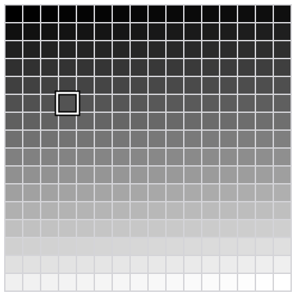
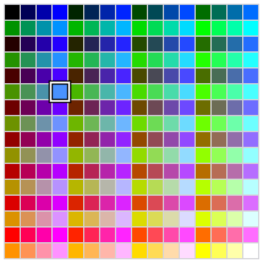
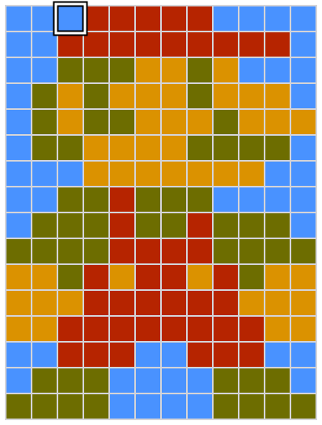
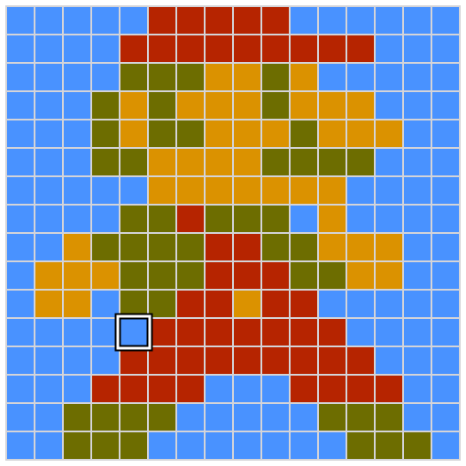
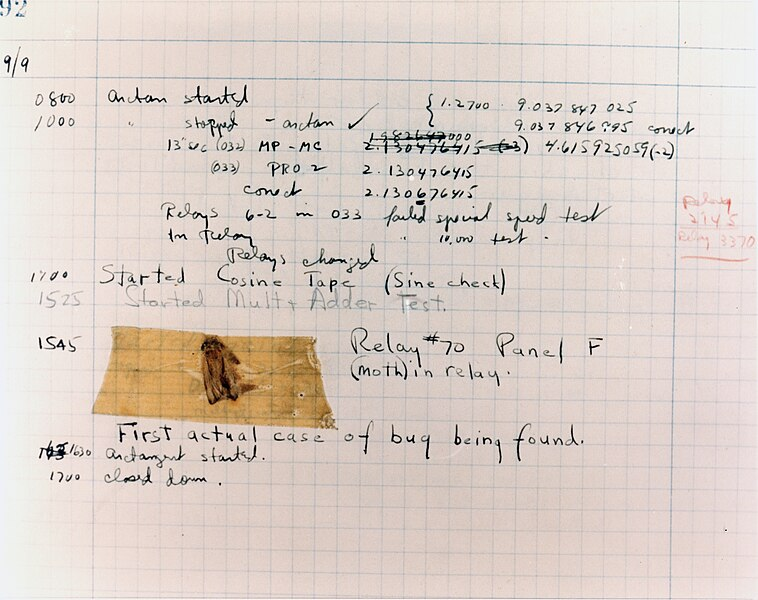
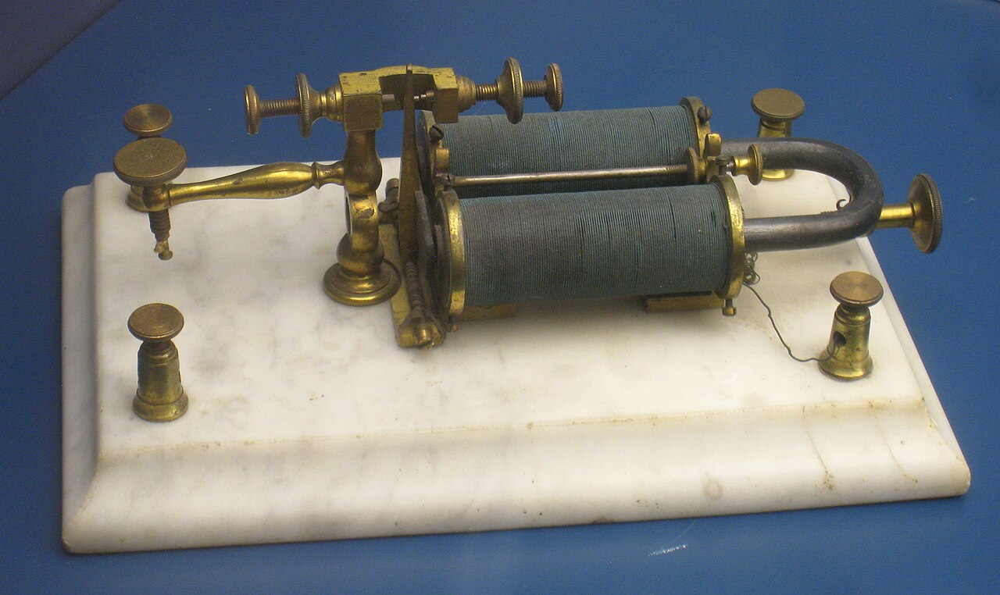
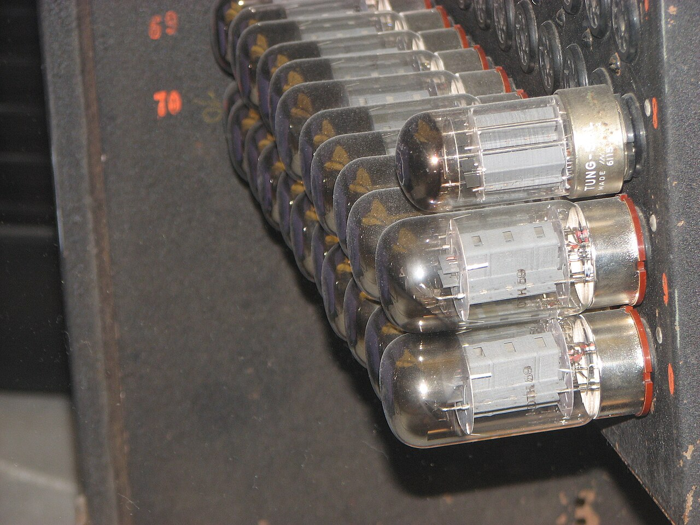
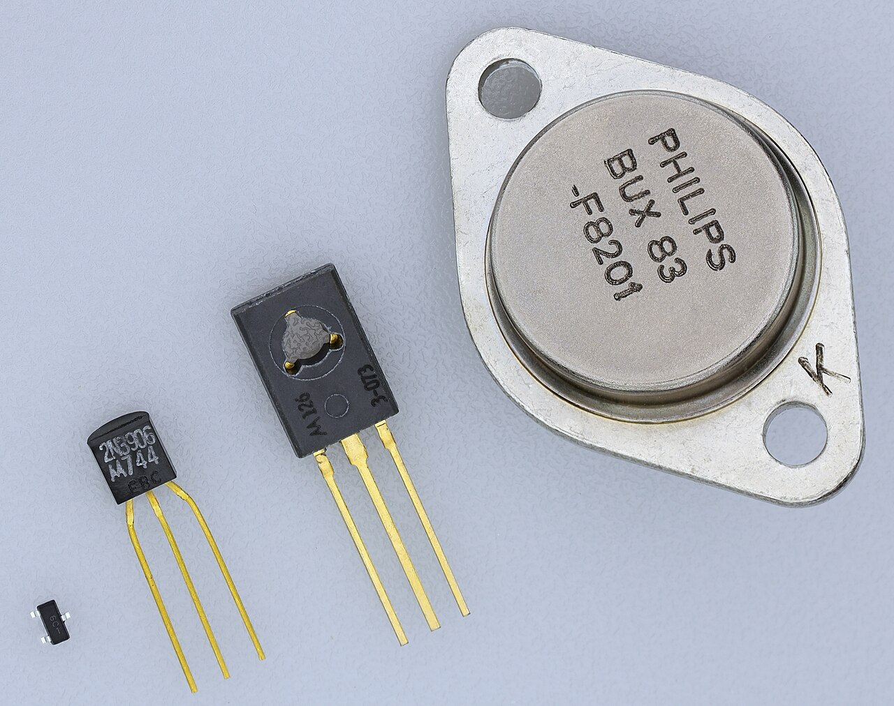
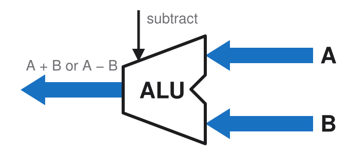

# How a computer works Architecture & Deployment <!-- .element: class="subtitle" --> **Notes:** What a computer physically does when it runs a program, from the bottom up, and what the processes of a deployment actually are. --- ### The main components of a computer - Processor (**CPU**: **c**entral **p**rocessing **u**nit) - Memory (**RAM**: **r**andom **a**ccess **m**emory) - Storage (**disk** or **SSD**: **s**olid **s**tate **d**rive) - Input and output (**I/O**) - The **buses** that connect them **Notes:** Most of the components you may think about when you think about a computer, like the screen, keyboard, mouse, network card, USB ports, etc., are **I/O**: they let the computer communicate with the outside world. They are not really what a computer fundamentally is: a computer is a machine that runs programs, and the programs are what make it do things. From that point of view, the main components are the CPU, memory, storage and buses. The rest is just various forms of I/O. --- ## Binary --- ### Eight bits <p class="text-center font-mono text-6xl">01010011</p> **Notes:** A **bit** is a single binary digit: 0 or 1. Eight bits make a **byte**, the unit a computer's memory is counted in. Eight bits can be set in 2⁸ = 256 different ways, from `00000000` to `11111111`. Nothing in the bits themselves says what they mean. They can be a number, but also a shade of gray, a color or a letter, as the next slides show. The meaning comes from the program that reads them, not from the bits. --- ### Numbers as binary <table class="font-mono text-5xl"> <tbody> <tr> <td class="border-b-0! px-2! text-center!">0</td> <td class="border-b-0! px-2! text-center!">1</td> <td class="border-b-0! px-2! text-center!">0</td> <td class="border-b-0! px-2! text-center!">1</td> <td class="border-b-0! px-2! text-center!">0</td> <td class="border-b-0! px-2! text-center!">0</td> <td class="border-b-0! px-2! text-center!">1</td> <td class="border-b-0! px-2! text-center!">1</td> </tr> <tr class="text-2xl text-blue-500"> <td class="border-b-0! px-2! text-center!">2<sup>7</sup><br />128</td> <td class="border-b-0! px-2! text-center!">2<sup>6</sup><br />64</td> <td class="border-b-0! px-2! text-center!">2<sup>5</sup><br />32</td> <td class="border-b-0! px-2! text-center!">2<sup>4</sup><br />16</td> <td class="border-b-0! px-2! text-center!">2<sup>3</sup><br />8</td> <td class="border-b-0! px-2! text-center!">2<sup>2</sup><br />4</td> <td class="border-b-0! px-2! text-center!">2<sup>1</sup><br />2</td> <td class="border-b-0! px-2! text-center!">2<sup>0</sup><br />1</td> </tr> </tbody> </table> <p class="text-center text-4xl">01010011<sub>2</sub> = 83<sub>10</sub></p> **Notes:** Read as a number written in base 2 (binary), each position is worth twice the position to its right, as each position of a decimal number is worth ten times the position to its right. The rightmost position is worth 2<sup>0</sup> = 1, and the leftmost 2<sup>7</sup> = 128. `01010011` has a 1 in four positions, worth 64, 16, 2 and 1, so it is the decimal number 64 + 16 + 2 + 1 = **83**. The small number after each number says which base it is written in: 01010011<sub>2</sub> is in base 2, and 83<sub>10</sub> in base 10. A byte read this way holds any whole number from 0 (`00000000`) to 255 (`11111111`): 256 numbers, one for each way of setting its eight bits. --- ### Gray levels as binary <p></p> <p class="text-center text-3xl"><code>01010011</code> = 83 of 255: about 67% black</p> **Notes:** One way to use a byte is as a shade of gray: 0 is black, 255 is white, and the 254 integers in between are increasingly lighter grays. The grid shows all 256 of them, in order, 16 per row: 0 at the top left, 255 at the bottom right. The highlighted cell is 83, in the sixth row (80 to 95), fourth column. It is 83 / 255 ≈ 33% of the way from black to white, so it is a dark gray, about 67% black. An image stored with one byte per pixel this way is an 8-bit grayscale image. --- ### Colors as binary <p></p> <p class="text-center text-3xl"><code class="text-4xl"><span class="text-red-600">010</span><span class="text-green-600">100</span><span class="text-blue-600">11</span></code> = about 29% red, 57% green, 100% blue</p> **Notes:** The same byte can also be a color. A screen makes every color it shows by mixing red, green and blue light, so a color can be stored as three numbers: how much red, how much green and how much blue. This is called **RGB**. Eight bits do not divide by three, so one common scheme, **8-bit color**, gives 3 bits to red, 3 to green and 2 to blue. Blue gets fewer bits because the human eye is least sensitive to it. Red and green each have 2³ = 8 levels, from 0 to 7, and blue has 2² = 4 levels, from 0 to 3. Read that way, `01010011` is: - red `010`, 2 of 7, about 29%: a little red; - green `100`, 4 of 7, about 57%: some green; - blue `11`, 3 of 3, 100%: all the blue there is. A little red, some green and full blue make a light sky blue. The grid shows all 256 colors in the same order as the gray levels, and the highlighted cell is in the same place: it is the same byte, 83, read differently. --- ### Images as binary <p></p> <p class="text-center text-3xl"><code class="text-4xl"><span class="text-red-600">010</span><span class="text-green-600">100</span><span class="text-blue-600">11</span></code> = red 2, green 4, blue 3</p> **Notes:** An image is a grid of **pixels**, short for "picture elements", and each pixel is one color. With the 8-bit colors of the previous slide, each pixel is one byte, so the whole image is a list of numbers, one per pixel, row by row. This is Mario, the character of _Super Mario Bros._, released by Nintendo in 1985 for the NES (Nintendo Entertainment System), a game console of the 8-bit era. He is 12 pixels wide and 16 high: 192 pixels, so 192 bytes. He is redrawn here with the 8-bit colors of the previous slide. The highlighted pixel, in the sky next to his cap, is the byte `01010011` of the previous slides: red 2 of 7, green 4 of 7 and blue 3 of 3, a light sky blue. Today's images and screens use more bits per pixel: one byte for each of red, green and blue, 24 bits per pixel, which gives 256 levels each and over 16 million colors. It is the `rgb()` notation of CSS: the blue of the sky is `rgb(73, 146, 255)` (2/7, 4/7 and 3/3 of 255), or `#4992ff` in hexadecimal. A photo from a modern camera is the same grid of numbers at a much larger scale: a 1920 × 1080 image has over 2 million pixels, and at 3 bytes per pixel, it takes about 6 MB before it is compressed. --- ### Videos as binary <p></p> <p class="text-center text-3xl"><code class="text-3xl"><span class="text-red-600">010</span><span class="text-green-600">100</span><span class="text-blue-600">11</span></code> → <code class="text-3xl"><span class="text-red-600">110</span><span class="text-green-600">100</span><span class="text-blue-600">00</span></code> → <code class="text-3xl"><span class="text-red-600">101</span><span class="text-green-600">001</span><span class="text-blue-600">00</span></code></p> **Notes:** A video is a sequence of images, called **frames**, shown one after the other fast enough for the eye to see movement instead of separate pictures. Since each image is a list of numbers, a video is a longer list of numbers: one image after the other. This Mario walks with 3 frames of 16 × 16 pixels, each shown for an eighth of a second: 8 frames per second. At one byte per pixel, each frame is 256 bytes, and the whole animation is 3 × 256 = 768 bytes, played over and over. The highlighted pixel stays in the same place, but its byte changes from one frame to the next: `01010011`, the blue of the sky and the byte of the previous slides, then `11010000`, the skin of his hand, then `10100100`, the red of his overalls. Nothing moves on a screen: each pixel only changes color. A modern video works the same way at a much larger scale. A 1920 × 1080 frame at 3 bytes per pixel is about 6 MB, as on the previous slide, and a video usually shows 30 frames per second: about 187 MB for every second of video. That is why videos are always compressed, for example by storing only what changes from one frame to the next. --- ### Text as binary <table class="mx-auto font-mono text-sm [&_td]:px-[0.5ch]!"> <tr> <td></td><td></td><td></td> <td colspan="3"> <div class="fragment relative aspect-230/56"> <svg viewBox="0 0 230 56" class="absolute inset-0 h-full w-full" aria-label="Plus 32"> <path d="M20 52 V30 H180 V52" fill="none" stroke="#d9480f" stroke-width="3" /> <path d="M173 44 L180 53 L187 44" fill="none" stroke="#d9480f" stroke-width="3" /> <text x="100" y="22" text-anchor="middle" font-size="22" fill="#d9480f">+32</text> </svg> </div> </td> </tr> <tr> <td><span class="inline-block w-[4ch] text-center">SP</span><span class="inline-block w-[3ch] text-right opacity-50">32</span></td><td><span class="inline-block w-[4ch] text-center">0</span><span class="inline-block w-[3ch] text-right opacity-50">48</span></td><td><span class="inline-block w-[4ch] text-center">@</span><span class="inline-block w-[3ch] text-right opacity-50">64</span></td><td><span class="inline-block w-[4ch] text-center">P</span><span class="inline-block w-[3ch] text-right opacity-50">80</span></td><td><span class="inline-block w-[4ch] text-center">`</span><span class="inline-block w-[3ch] text-right opacity-50">96</span></td><td><span class="inline-block w-[4ch] text-center">p</span><span class="inline-block w-[3ch] text-right opacity-50">112</span></td> </tr> <tr> <td><span class="inline-block w-[4ch] text-center">!</span><span class="inline-block w-[3ch] text-right opacity-50">33</span></td><td><span class="inline-block w-[4ch] text-center">1</span><span class="inline-block w-[3ch] text-right opacity-50">49</span></td><td><span class="inline-block w-[4ch] text-center">A</span><span class="inline-block w-[3ch] text-right opacity-50">65</span></td><td><span class="inline-block w-[4ch] text-center">Q</span><span class="inline-block w-[3ch] text-right opacity-50">81</span></td><td><span class="inline-block w-[4ch] text-center">a</span><span class="inline-block w-[3ch] text-right opacity-50">97</span></td><td><span class="inline-block w-[4ch] text-center">q</span><span class="inline-block w-[3ch] text-right opacity-50">113</span></td> </tr> <tr> <td><span class="inline-block w-[4ch] text-center">"</span><span class="inline-block w-[3ch] text-right opacity-50">34</span></td><td><span class="inline-block w-[4ch] text-center">2</span><span class="inline-block w-[3ch] text-right opacity-50">50</span></td><td><span class="inline-block w-[4ch] text-center">B</span><span class="inline-block w-[3ch] text-right opacity-50">66</span></td><td><span class="inline-block w-[4ch] text-center">R</span><span class="inline-block w-[3ch] text-right opacity-50">82</span></td><td><span class="inline-block w-[4ch] text-center">b</span><span class="inline-block w-[3ch] text-right opacity-50">98</span></td><td><span class="inline-block w-[4ch] text-center">r</span><span class="inline-block w-[3ch] text-right opacity-50">114</span></td> </tr> <tr> <td><span class="inline-block w-[4ch] text-center">#</span><span class="inline-block w-[3ch] text-right opacity-50">35</span></td><td><span class="inline-block w-[4ch] text-center">3</span><span class="inline-block w-[3ch] text-right opacity-50">51</span></td><td><span class="inline-block w-[4ch] text-center">C</span><span class="inline-block w-[3ch] text-right opacity-50">67</span></td><td class="bg-yellow-200 font-bold"><span class="inline-block w-[4ch] text-center">S</span><span class="inline-block w-[3ch] text-right opacity-50">83</span></td><td><span class="inline-block w-[4ch] text-center">c</span><span class="inline-block w-[3ch] text-right opacity-50">99</span></td><td class="bg-yellow-200 font-bold"><span class="inline-block w-[4ch] text-center">s</span><span class="inline-block w-[3ch] text-right opacity-50">115</span></td> </tr> <tr> <td><span class="inline-block w-[4ch] text-center">$</span><span class="inline-block w-[3ch] text-right opacity-50">36</span></td><td><span class="inline-block w-[4ch] text-center">4</span><span class="inline-block w-[3ch] text-right opacity-50">52</span></td><td><span class="inline-block w-[4ch] text-center">D</span><span class="inline-block w-[3ch] text-right opacity-50">68</span></td><td><span class="inline-block w-[4ch] text-center">T</span><span class="inline-block w-[3ch] text-right opacity-50">84</span></td><td><span class="inline-block w-[4ch] text-center">d</span><span class="inline-block w-[3ch] text-right opacity-50">100</span></td><td><span class="inline-block w-[4ch] text-center">t</span><span class="inline-block w-[3ch] text-right opacity-50">116</span></td> </tr> <tr> <td><span class="inline-block w-[4ch] text-center">%</span><span class="inline-block w-[3ch] text-right opacity-50">37</span></td><td><span class="inline-block w-[4ch] text-center">5</span><span class="inline-block w-[3ch] text-right opacity-50">53</span></td><td><span class="inline-block w-[4ch] text-center">E</span><span class="inline-block w-[3ch] text-right opacity-50">69</span></td><td><span class="inline-block w-[4ch] text-center">U</span><span class="inline-block w-[3ch] text-right opacity-50">85</span></td><td><span class="inline-block w-[4ch] text-center">e</span><span class="inline-block w-[3ch] text-right opacity-50">101</span></td><td><span class="inline-block w-[4ch] text-center">u</span><span class="inline-block w-[3ch] text-right opacity-50">117</span></td> </tr> <tr> <td><span class="inline-block w-[4ch] text-center">&</span><span class="inline-block w-[3ch] text-right opacity-50">38</span></td><td><span class="inline-block w-[4ch] text-center">6</span><span class="inline-block w-[3ch] text-right opacity-50">54</span></td><td><span class="inline-block w-[4ch] text-center">F</span><span class="inline-block w-[3ch] text-right opacity-50">70</span></td><td><span class="inline-block w-[4ch] text-center">V</span><span class="inline-block w-[3ch] text-right opacity-50">86</span></td><td><span class="inline-block w-[4ch] text-center">f</span><span class="inline-block w-[3ch] text-right opacity-50">102</span></td><td><span class="inline-block w-[4ch] text-center">v</span><span class="inline-block w-[3ch] text-right opacity-50">118</span></td> </tr> <tr> <td><span class="inline-block w-[4ch] text-center">'</span><span class="inline-block w-[3ch] text-right opacity-50">39</span></td><td><span class="inline-block w-[4ch] text-center">7</span><span class="inline-block w-[3ch] text-right opacity-50">55</span></td><td><span class="inline-block w-[4ch] text-center">G</span><span class="inline-block w-[3ch] text-right opacity-50">71</span></td><td><span class="inline-block w-[4ch] text-center">W</span><span class="inline-block w-[3ch] text-right opacity-50">87</span></td><td><span class="inline-block w-[4ch] text-center">g</span><span class="inline-block w-[3ch] text-right opacity-50">103</span></td><td><span class="inline-block w-[4ch] text-center">w</span><span class="inline-block w-[3ch] text-right opacity-50">119</span></td> </tr> <tr> <td><span class="inline-block w-[4ch] text-center">(</span><span class="inline-block w-[3ch] text-right opacity-50">40</span></td><td><span class="inline-block w-[4ch] text-center">8</span><span class="inline-block w-[3ch] text-right opacity-50">56</span></td><td><span class="inline-block w-[4ch] text-center">H</span><span class="inline-block w-[3ch] text-right opacity-50">72</span></td><td><span class="inline-block w-[4ch] text-center">X</span><span class="inline-block w-[3ch] text-right opacity-50">88</span></td><td><span class="inline-block w-[4ch] text-center">h</span><span class="inline-block w-[3ch] text-right opacity-50">104</span></td><td><span class="inline-block w-[4ch] text-center">x</span><span class="inline-block w-[3ch] text-right opacity-50">120</span></td> </tr> <tr> <td><span class="inline-block w-[4ch] text-center">)</span><span class="inline-block w-[3ch] text-right opacity-50">41</span></td><td><span class="inline-block w-[4ch] text-center">9</span><span class="inline-block w-[3ch] text-right opacity-50">57</span></td><td><span class="inline-block w-[4ch] text-center">I</span><span class="inline-block w-[3ch] text-right opacity-50">73</span></td><td><span class="inline-block w-[4ch] text-center">Y</span><span class="inline-block w-[3ch] text-right opacity-50">89</span></td><td><span class="inline-block w-[4ch] text-center">i</span><span class="inline-block w-[3ch] text-right opacity-50">105</span></td><td><span class="inline-block w-[4ch] text-center">y</span><span class="inline-block w-[3ch] text-right opacity-50">121</span></td> </tr> <tr> <td><span class="inline-block w-[4ch] text-center">*</span><span class="inline-block w-[3ch] text-right opacity-50">42</span></td><td><span class="inline-block w-[4ch] text-center">:</span><span class="inline-block w-[3ch] text-right opacity-50">58</span></td><td><span class="inline-block w-[4ch] text-center">J</span><span class="inline-block w-[3ch] text-right opacity-50">74</span></td><td><span class="inline-block w-[4ch] text-center">Z</span><span class="inline-block w-[3ch] text-right opacity-50">90</span></td><td><span class="inline-block w-[4ch] text-center">j</span><span class="inline-block w-[3ch] text-right opacity-50">106</span></td><td><span class="inline-block w-[4ch] text-center">z</span><span class="inline-block w-[3ch] text-right opacity-50">122</span></td> </tr> <tr> <td><span class="inline-block w-[4ch] text-center">+</span><span class="inline-block w-[3ch] text-right opacity-50">43</span></td><td><span class="inline-block w-[4ch] text-center">;</span><span class="inline-block w-[3ch] text-right opacity-50">59</span></td><td><span class="inline-block w-[4ch] text-center">K</span><span class="inline-block w-[3ch] text-right opacity-50">75</span></td><td><span class="inline-block w-[4ch] text-center">[</span><span class="inline-block w-[3ch] text-right opacity-50">91</span></td><td><span class="inline-block w-[4ch] text-center">k</span><span class="inline-block w-[3ch] text-right opacity-50">107</span></td><td><span class="inline-block w-[4ch] text-center">{</span><span class="inline-block w-[3ch] text-right opacity-50">123</span></td> </tr> <tr> <td><span class="inline-block w-[4ch] text-center">,</span><span class="inline-block w-[3ch] text-right opacity-50">44</span></td><td><span class="inline-block w-[4ch] text-center"><</span><span class="inline-block w-[3ch] text-right opacity-50">60</span></td><td><span class="inline-block w-[4ch] text-center">L</span><span class="inline-block w-[3ch] text-right opacity-50">76</span></td><td><span class="inline-block w-[4ch] text-center">\</span><span class="inline-block w-[3ch] text-right opacity-50">92</span></td><td><span class="inline-block w-[4ch] text-center">l</span><span class="inline-block w-[3ch] text-right opacity-50">108</span></td><td><span class="inline-block w-[4ch] text-center">|</span><span class="inline-block w-[3ch] text-right opacity-50">124</span></td> </tr> <tr> <td><span class="inline-block w-[4ch] text-center">-</span><span class="inline-block w-[3ch] text-right opacity-50">45</span></td><td><span class="inline-block w-[4ch] text-center">=</span><span class="inline-block w-[3ch] text-right opacity-50">61</span></td><td><span class="inline-block w-[4ch] text-center">M</span><span class="inline-block w-[3ch] text-right opacity-50">77</span></td><td><span class="inline-block w-[4ch] text-center">]</span><span class="inline-block w-[3ch] text-right opacity-50">93</span></td><td><span class="inline-block w-[4ch] text-center">m</span><span class="inline-block w-[3ch] text-right opacity-50">109</span></td><td><span class="inline-block w-[4ch] text-center">}</span><span class="inline-block w-[3ch] text-right opacity-50">125</span></td> </tr> <tr> <td><span class="inline-block w-[4ch] text-center">.</span><span class="inline-block w-[3ch] text-right opacity-50">46</span></td><td><span class="inline-block w-[4ch] text-center">></span><span class="inline-block w-[3ch] text-right opacity-50">62</span></td><td><span class="inline-block w-[4ch] text-center">N</span><span class="inline-block w-[3ch] text-right opacity-50">78</span></td><td><span class="inline-block w-[4ch] text-center">^</span><span class="inline-block w-[3ch] text-right opacity-50">94</span></td><td><span class="inline-block w-[4ch] text-center">n</span><span class="inline-block w-[3ch] text-right opacity-50">110</span></td><td><span class="inline-block w-[4ch] text-center">~</span><span class="inline-block w-[3ch] text-right opacity-50">126</span></td> </tr> <tr> <td><span class="inline-block w-[4ch] text-center">/</span><span class="inline-block w-[3ch] text-right opacity-50">47</span></td><td><span class="inline-block w-[4ch] text-center">?</span><span class="inline-block w-[3ch] text-right opacity-50">63</span></td><td><span class="inline-block w-[4ch] text-center">O</span><span class="inline-block w-[3ch] text-right opacity-50">79</span></td><td><span class="inline-block w-[4ch] text-center">_</span><span class="inline-block w-[3ch] text-right opacity-50">95</span></td><td><span class="inline-block w-[4ch] text-center">o</span><span class="inline-block w-[3ch] text-right opacity-50">111</span></td><td><span class="inline-block w-[4ch] text-center">DEL</span><span class="inline-block w-[3ch] text-right opacity-50">127</span></td> </tr> </table> **Notes:** Text is numbers too: a character table gives every character a number, its **code point**. The table that most others build on is **ASCII** (American Standard Code for Information Interchange), from 1963. It has 128 characters, numbered 0 to 127. The slide shows codes 32 to 127, in columns of 16. Codes 0 to 31 are control characters, such as the line feed (10) that ends a line, which are not printed. `SP` (32) is the space, and `DEL` (127) is another control character. Some things worth noticing: - The digits are characters like any other: the character `0` is code point 48, not code point 0. - The uppercase letters start at 65, with `A`, and the lowercase ones at 97, with `a`: the lowercase letters come exactly 32 after the uppercase ones. - `S`, highlighted, is 83: the byte `01010011` of the previous slides, read as a letter. Its lowercase `s`, also highlighted, is 83 + 32 = 115. **UTF-8**, the encoding of almost all text on the web today, can store over a million characters, from every writing system and emoji. Its first 128 code points are the ASCII table, and UTF-8 stores each of them as a single byte, the same as in ASCII. `S` is 83 and `s` is 115 in both, so text written only in ASCII characters is also valid UTF-8. --- ### Transforming data is arithmetic | Letter | Code point | Binary | | :----: | :--------: | :-----------------------------------------------------: | | `S` | 83 | <code>01<span class="text-red-600">0</span>10011</code> | | `s` | 115 | <code>01<span class="text-red-600">1</span>10011</code> | **Notes:** `s` is `S` plus 32. In binary, 32 is the value of a single bit, the sixth from the right (bit 5, counting from 0), and that is the only bit that differs between the two letters. The same is true of every other letter of the table: `B` (66) and `b` (98), all the way to `Z` (90) and `z` (122). So changing the case of a letter is adding or subtracting 32, which is the same as flipping that single bit. A computer does not know what letters are. It only manipulates numbers, but since letters, colors and images are all stored as numbers, manipulating numbers is enough to manipulate any data. --- ## Electricity --- ### A closed circuit <logic-diagram name="closed-circuit" controls="none" theme="light" style="width: 640px; margin: 0 auto"> </logic-diagram> **Notes:** A circuit is a loop: current leaves the battery from its `+` end, goes through the switch and the lamp, and comes back to the battery's `-` end. When the switch is open, the loop is broken and no current flows anywhere in it, so the lamp stays dark. When the switch is closed, the loop is complete, current flows and the lamp lights up. --- ### The electromagnet <logic-diagram name="sounder-circuit" controls="none" theme="light" style="width: 640px; margin: 0 auto"> </logic-diagram> **Notes:** The same circuit, with a **sounder** in place of the lamp. A sounder is a coil of wire around a piece of iron. When current flows through the coil, the iron becomes a magnet, an **electromagnet**, and pulls down an iron bar, which clicks. When the current stops, the iron is no longer a magnet, and a spring pulls the bar back up. Closing the switch makes one click, and opening it makes another. The sounder turns current into movement, which can be heard. --- ### The telegraph <logic-diagram name="telegraph-two-wires" controls="none" theme="light" style="width: 800px; margin: 0 auto"> </logic-diagram> **Notes:** The same loop, stretched between two towns. This is the **telegraph**: the first long-distance "instant" communication system (milliseconds instead of minutes for optical telegraphs, or days by horse). The switch is now a **key**, a switch that stays closed only while it is pressed. Pressing the key in one town makes the sounder click in the other. Telegraph operators sent letters in **Morse code**, as short and long presses of the key, and the operator at the other end listened to the clicks to read them. The circuit is still a loop, so it needs two long wires between the towns: one for the current to go there, and one for it to come back. --- ### The earth as ground <logic-diagram name="telegraph" controls="none" theme="light" style="width: 800px; margin: 0 auto"> </logic-diagram> **Notes:** The earth conducts electricity. With a metal stake driven into the ground at each end of the line, the current can come back through the earth instead of through a second wire. The earth completes the circuit, and the telegraph needs only one long wire instead of two, which only costs half as much. A connection to the earth is called a **ground**. --- ### The telegraph repeater <logic-diagram name="telegraph-repeater" controls="none" theme="light" style="width: 800px; margin: 0 auto"> </logic-diagram> **Notes:** A long wire resists the current, which gets weaker with distance. Past a certain length, it is too weak to pull the sounder's bar. The solution is a station halfway, with a **relay**. A relay is a sounder whose bar closes a contact instead of clicking. The contact connects a fresh battery, at the halfway station, to the next stretch of line. The weak current that arrives only has to move the bar, and the strong current from the fresh battery carries the signal on to the next town. A line can have as many relays as it needs, one every stretch. The name comes from the relay stations of the old postal routes, where tired horses were swapped for fresh ones. --- ### The ground symbol <logic-diagram name="telegraph-repeater-grounds" controls="none" theme="light" style="width: 800px; margin: 0 auto"> </logic-diagram> **Notes:** The same repeater, with each stake in the earth replaced by the **ground symbol**. Every ground is connected to every other one through the earth, so a current that goes into one ground can come back out of another. In a computer, ground is not the earth, but a wire that all the circuits share to send their current back. It is drawn with the same symbol. --- ### The source symbol <logic-diagram name="telegraph-repeater-sources" controls="none" theme="light" style="width: 800px; margin: 0 auto"> </logic-diagram> **Notes:** Each battery's `-` end is connected to the ground, so there is no need to draw it. Only its `+` end is drawn, as a **power source**: a point that supplies current, which comes back through the ground. The source is marked `V`, for **voltage**: the electrical "pressure" with which a battery pushes current around a circuit, measured in **volts**. Both words come from Alessandro Volta, the Italian physicist who invented the battery in 1800. The ground and the source are the two symbols used in all the circuits from now on. --- ### The relay <logic-diagram name="relay-single" controls="none" theme="light" style="width: 640px; margin: 0 auto"> </logic-diagram> **Notes:** The relay alone, much like the one used in the telegraph repeater. A relay is a **switch controlled by current**: current through its coil closes its contact. It connects two separate circuits. The first one goes from a source through the switch A and the relay's coil to the ground. The second one goes from another source through the relay's contact and the lamp to the ground. No current goes from one circuit to the other, but the first one controls the second. Much like the telegraph, the relay's second circuit could in turn control another relay, and so on. This is what makes it possible to build circuits out of relays. --- ## Logic --- ### A relay <!-- .element: class="corner-title" --> <div class="flex items-center justify-center gap-8"> <logic-diagram id="relay-single" name="relay-single" controls="none" theme="light" style="width: 600px"> </logic-diagram> <truth-table for="relay-single" theme="light"></truth-table> </div> **Notes:** From now on, **1 means current, and 0 means no current**. The input A is 1 when its switch is closed, and the output OUT is 1 when the lamp is lit. A **truth table** lists the output for every possible value of the inputs. This one is the simplest there is: 0 in gives 0 out, and 1 in gives 1 out. The relay does not change the value. --- ### NOT <!-- .element: class="corner-title fragment" --> <div class="flex items-center justify-center gap-8"> <logic-diagram id="relay-not" name="relay-not" controls="none" theme="light" style="width: 600px"> </logic-diagram> <truth-table for="relay-not" theme="light"></truth-table> </div> **Notes:** A relay has a second contact, which is closed when there is no current in the coil, and opens when the coil pulls the bar. If the lamp is connected to this top contact instead of the bottom one, the lamp is lit when A is 0, and goes out when A is 1. The output is the opposite of the input: this is **NOT**, the `!` operator of most programming languages, also called an **inverter**. --- ### AND <!-- .element: class="corner-title fragment" --> <div class="flex items-center justify-center gap-8"> <logic-diagram id="relay-and" name="relay-and" controls="none" theme="light" style="width: 600px"> </logic-diagram> <truth-table for="relay-and" theme="light"></truth-table> </div> **Notes:** Two relays **in series**: the current goes through A's contact, then through B's contact, before it reaches the lamp. Both contacts must be closed for current to get through, so the lamp is lit only when A **and** B are 1. This is **AND**, the `&&` operator of most programming languages. --- ### OR <!-- .element: class="corner-title fragment" --> <div class="flex items-center justify-center gap-8"> <logic-diagram id="relay-or" name="relay-or" controls="none" theme="light" style="width: 600px"> </logic-diagram> <truth-table for="relay-or" theme="light"></truth-table> </div> **Notes:** Two relays **in parallel**: each one has its own source and its own path to the lamp. Current gets through either one of them, so the lamp is lit when A **or** B is 1, or both. This is **OR**, the `||` operator of most programming languages. --- ### XOR <!-- .element: class="corner-title fragment" --> <div class="flex items-center justify-center gap-8"> <logic-diagram id="relay-xor" name="relay-xor" controls="none" theme="light" style="width: 600px"> </logic-diagram> <truth-table for="relay-xor" theme="light"></truth-table> </div> **Notes:** This circuit uses both contacts of each relay. It is wired like the light of a staircase, which has a switch at the bottom and one at the top: flipping either switch changes the light, whatever the position of the other one. The lamp is lit when exactly one of A and B is 1, but not when both are. This is **XOR**, for "exclusive or": A or B, but not both. Most programming languages write it `^`. For two booleans, it is the same as `!=`: the output is 1 when the two inputs are different. --- ### The first bug that was caught (1947) <p></p> **Notes:** Early computers were built out of relays like the ones of the previous circuits: they are called **electromechanical** computers, because their switches are moved by electromagnets. On 9 September 1947, the operators of the Harvard Mark II, a relay computer, found a moth trapped between the contacts of relay number 70, which stopped it from working. They taped the moth into the machine's log book, with the note "First actual case of bug being found". Engineers already called a fault a "bug" before that, which is the joke of the note: this time, it was a real one. Debugging these computers could mean finding the actual insect in the machine. _Picture: Naval Surface Warfare Center, Dahlgren, 1988, public domain, from [Wikimedia Commons](https://commons.wikimedia.org/wiki/File:First_Computer_Bug,_1947.jpg)_ --- ### The buffer and NOT symbols <!-- .element: class="corner-title" --> <div class="flex items-center justify-center gap-8"> <logic-diagram id="buffer-and-not" name="buffer-and-not" controls="none" theme="light" style="width: 520px"> </logic-diagram> <truth-table for="buffer-and-not" theme="light"></truth-table> </div> **Notes:** Drawing every relay with its coil, contacts, source and ground quickly becomes unreadable, so each circuit gets a symbol, called a **logic gate**. The symbols leave out the sources and grounds, and only show the inputs and outputs. The triangle stands for a single relay, and is called a **buffer**: its output follows A. The NOT is the same triangle with a small circle on its output, and its output is the opposite of A. That circle is the only difference between the two symbols. --- ### The AND symbol <!-- .element: class="corner-title" --> <div class="flex items-center justify-center gap-8"> <logic-diagram id="and-gate" name="and-gate" controls="none" theme="light" style="width: 520px"> </logic-diagram> <truth-table for="and-gate" theme="light"></truth-table> </div> **Notes:** The AND circuit, its two relays in series, drawn as a single symbol. Its truth table is the same as the relay circuit's: the output is 1 only when A and B are both 1. --- ### The inversion bubble <!-- .element: class="corner-title" --> <div class="flex flex-col items-center justify-center gap-8"> <logic-diagram id="inversion-bubble" name="inversion-bubble" controls="none" theme="light" style="width: 600px"> </logic-diagram> <truth-table for="inversion-bubble" theme="light"></truth-table> </div> **Notes:** Three gates fed by the same A and B: an AND, the same AND followed by a NOT, and a **NAND**, for "not AND". The NAND is drawn as an AND with a small circle on its output, like the NOT. It has the same behavior as the AND followed by a NOT, but drawn as a single gate: its symbol is a contraction of the two. The small circle means **inversion**: the output is the opposite of what the gate would give without it. That is why the last two outputs always agree, whatever A and B are. Also notice that a gate can have an output of 1 when all its inputs are 0. If you do not understand why, go back to the first relay circuit and study it again. Understand that the current that flows to the lamp comes from the source, not from the input. Inputs only control whether the source's current can reach the lamp. The source is not drawn in the gate symbols, but it is always there. --- ### Logic gates <!-- .element: class="corner-title" --> <div class="flex items-center justify-center gap-8"> <logic-diagram id="gate-gallery" name="gate-gallery" controls="none" theme="light" style="width: 480px"> </logic-diagram> <div class="flex flex-col gap-4"> <truth-table for="gate-gallery" columns="A,BUFFER,NOT" theme="light"></truth-table> <truth-table for="gate-gallery" columns="A,B,AND,NAND" theme="light"></truth-table> <truth-table for="gate-gallery" columns="A,B,OR,NOR,XOR" theme="light"></truth-table> </div> </div> **Notes:** The classic logic gates used in the rest of the circuits, all fed by the same A and B, with their truth tables: - The **buffer** and **NOT** only take A. - **AND** is 1 when both inputs are 1, and **NAND** is its opposite. - **OR** is 1 when at least one input is 1, and **NOR**, "not OR", is its opposite. - **XOR** is 1 when exactly one input is 1. Each gate stands for a relay circuit like the ones before. --- ### Same logic, different switches <div class="grid grid-cols-3 items-end gap-8"> <div> <p></p> <p class="text-center">Relay<br><span class="text-[0.8em] opacity-60">~1940</span></p> </div> <div> <p></p> <p class="text-center">Vacuum tube<br><span class="text-[0.8em] opacity-60">~1945</span></p> </div> <div> <p></p> <p class="text-center">Transistor<br><span class="text-[0.8em] opacity-60">~1955</span></p> </div> </div> **Notes:** The circuits of this course are drawn with relays, but any switch controlled by electricity can build the same gates. Computers have been built from three kinds: - **Relays**, like this telegraph relay from the 1850s. The first computers, such as Konrad Zuse's Z3 in 1941, were built out of relays. A relay moves a metal bar, so it is slow, and it wears out. - **Vacuum tubes**, here on a panel of ENIAC, finished in 1945, which had over 17,000 of them. In a glass tube emptied of air, a small voltage controls a current that flows through the vacuum. Nothing moves, so they are much faster than relays, but they are bulky, get hot, use a lot of electricity, and burn out like light bulbs. - **Transistors**, invented at Bell Labs in 1947, and used in computers from the mid-1950s. A small current or voltage controls a larger one through a solid crystal, usually of silicon. Nothing moves either, and they are much smaller, faster, cooler and more reliable than vacuum tubes. The ones in the picture are single transistors; a modern processor packs billions of much smaller ones onto one chip. The gates built out of any of them work the same way: the logic does not depend on what the switches are made of. _Pictures from Wikimedia Commons: [telegraph relay](https://commons.wikimedia.org/wiki/File:Telegraph_relay,_1850s.jpg) by Daderot, public domain; [ENIAC tubes](https://commons.wikimedia.org/wiki/File:ENIAC_Tubes_%282585374699%29.jpg) by Erik Pitti, CC BY 2.0; [transistors](https://commons.wikimedia.org/wiki/File:Transistorer_%28cropped%29.jpg) by Mister rf, CC BY-SA 3.0_ --- ## Computing --- ### Adding in decimal <table class="font-mono text-5xl"> <tbody> <tr class="text-3xl text-red-500"> <td class="border-b-0! px-2! text-center!"></td> <td class="border-b-0! px-2! text-center!"><span class="fragment" data-fragment-index="2">1</span></td> <td class="border-b-0! px-2! text-center!"><span class="fragment" data-fragment-index="1">1</span></td> <td class="border-b-0! px-2! text-center!"></td> </tr> <tr> <td class="border-b-0! px-2! text-center!"></td> <td class="border-b-0! px-2! text-center!"></td> <td class="border-b-0! px-2! text-center!">5</td> <td class="border-b-0! px-2! text-center!">8</td> </tr> <tr> <td class="border-b-0! px-2! text-center!">+</td> <td class="border-b-0! px-2! text-center!"></td> <td class="border-b-0! px-2! text-center!">6</td> <td class="border-b-0! px-2! text-center!">7</td> </tr> <tr> <td class="border-b-0! px-2! text-center! border-t-4! [border-top-style:solid]!"></td> <td class="border-b-0! px-2! text-center! border-t-4! [border-top-style:solid]!"><span class="fragment" data-fragment-index="3">1</span></td> <td class="border-b-0! px-2! text-center! border-t-4! [border-top-style:solid]!"><span class="fragment" data-fragment-index="2">2</span></td> <td class="border-b-0! px-2! text-center! border-t-4! [border-top-style:solid]!"><span class="fragment" data-fragment-index="1">5</span></td> </tr> </tbody> </table> **Notes:** Add column by column, from the right: - Add the digits of the rightmost column: 8 + 7 = 15, which does not fit in one digit. Write the 5 and carry the 1 into the next column, the tens. - The next column adds three digits, 5 + 6 and the carry, which makes 12: write the 2 and carry the 1 again. - Nothing is left to add in the hundreds column but the carry, so it becomes the third digit. The final sum is 125. This is classic **addition with carry**, the technique taught in school when you learn to add multi-digit numbers. --- ### Adding in binary <table class="font-mono text-5xl"> <tbody> <tr class="text-3xl text-red-500"> <td class="border-b-0! px-2! text-center!"></td> <td class="border-b-0! px-2! text-center!"><span class="fragment" data-fragment-index="3">1</span></td> <td class="border-b-0! px-2! text-center!"><span class="fragment" data-fragment-index="2">1</span></td> <td class="border-b-0! px-2! text-center!"><span class="fragment" data-fragment-index="1">1</span></td> <td class="border-b-0! px-2! text-center!"></td> </tr> <tr> <td class="border-b-0! px-2! text-center!"></td> <td class="border-b-0! px-2! text-center!">0</td> <td class="border-b-0! px-2! text-center!">1</td> <td class="border-b-0! px-2! text-center!">1</td> <td class="border-b-0! px-2! text-center! relative">1<span class="fragment absolute left-full ml-16 w-[2ch] text-right text-blue-500" data-fragment-index="5">7</span></td> </tr> <tr> <td class="border-b-0! px-2! text-center!">+</td> <td class="border-b-0! px-2! text-center!">0</td> <td class="border-b-0! px-2! text-center!">0</td> <td class="border-b-0! px-2! text-center!">1</td> <td class="border-b-0! px-2! text-center! relative">1<span class="fragment absolute left-full ml-16 w-[2ch] text-right text-blue-500" data-fragment-index="5">3</span></td> </tr> <tr> <td class="border-b-0! px-2! text-center! border-t-4! [border-top-style:solid]!"></td> <td class="border-b-0! px-2! text-center! border-t-4! [border-top-style:solid]! relative"><span class="fragment" data-fragment-index="4">1</span><span class="fragment absolute top-full left-0 mt-2 w-full text-center text-2xl text-blue-500" data-fragment-index="5">2<sup>3</sup><br />8</span></td> <td class="border-b-0! px-2! text-center! border-t-4! [border-top-style:solid]! relative"><span class="fragment" data-fragment-index="3">0</span><span class="fragment absolute top-full left-0 mt-2 w-full text-center text-2xl text-blue-500" data-fragment-index="5">2<sup>2</sup><br />4</span></td> <td class="border-b-0! px-2! text-center! border-t-4! [border-top-style:solid]! relative"><span class="fragment" data-fragment-index="2">1</span><span class="fragment absolute top-full left-0 mt-2 w-full text-center text-2xl text-blue-500" data-fragment-index="5">2<sup>1</sup><br />2</span></td> <td class="border-b-0! px-2! text-center! relative border-t-4! [border-top-style:solid]!"><span class="fragment" data-fragment-index="1">0</span><span class="fragment absolute left-full ml-16 w-[2ch] text-right text-blue-500" data-fragment-index="5">10</span><span class="fragment absolute top-full left-0 mt-2 w-full text-center text-2xl text-blue-500" data-fragment-index="5">2<sup>0</sup><br />1</span></td> </tr> </tbody> </table> **Notes:** The same method, in binary instead of decimal, to add `0111` (7 in decimal) and `0011` (3 in decimal): - In the rightmost column, `1` + `1` = `10` in binary (2 in decimal): write the 0 and carry the 1, as 8 + 7 = 15 does in decimal. - The next column adds three bits, 1 + 1 and the carry, which makes `11` in binary (3 in decimal): write a 1 and carry a 1. - In the next column, 0 + 1 and the carry makes `10` in binary (2 in decimal): write a 0 and carry a 1. - The carry goes into the final column. 0 + 0 and the carry makes `1` in binary (1 in decimal). The final sum is `1010` (10 in decimal). Every column does the same thing: it adds two bits and the carry from the column on its right, and gives a sum bit and a carry for the column on its left. --- ### The sum and carry of two bits <div class="flex items-start justify-center gap-28"> <div class="flex flex-col items-center gap-6"> <table class="fragment m-0! font-mono text-4xl font-bold text-[#1d1d1f]" data-fragment-index="1"> <thead> <tr> <th class="px-[0.5em]! py-[0.2em]! text-center! font-sans font-semibold [border-bottom:2px_solid_#1d1d1f]!">A</th> <th class="px-[0.5em]! py-[0.2em]! text-center! font-sans font-semibold [border-bottom:2px_solid_#1d1d1f]!">B</th> <th class="px-[0.5em]! py-[0.2em]! text-center! font-sans font-semibold [border-bottom:2px_solid_#1d1d1f]! [border-left:3px_solid_#1d1d1f]!">SUM</th> </tr> </thead> <tbody> <tr> <td class="px-[0.5em]! py-[0.15em]! text-center! [border-bottom:1px_solid_#a3a3a8]!">0</td> <td class="px-[0.5em]! py-[0.15em]! text-center! [border-bottom:1px_solid_#a3a3a8]!">0</td> <td class="px-[0.5em]! py-[0.15em]! text-center! [border-bottom:1px_solid_#a3a3a8]! [border-left:3px_solid_#1d1d1f]!"><span class="inline-block min-w-[1.4em] rounded-[0.3em]">0</span></td> </tr> <tr> <td class="px-[0.5em]! py-[0.15em]! text-center! [border-bottom:1px_solid_#a3a3a8]!">0</td> <td class="px-[0.5em]! py-[0.15em]! text-center! [border-bottom:1px_solid_#a3a3a8]!">1</td> <td class="px-[0.5em]! py-[0.15em]! text-center! [border-bottom:1px_solid_#a3a3a8]! [border-left:3px_solid_#1d1d1f]!"><span class="inline-block min-w-[1.4em] rounded-[0.3em] bg-[#fff3bf]">1</span></td> </tr> <tr> <td class="px-[0.5em]! py-[0.15em]! text-center! [border-bottom:1px_solid_#a3a3a8]!">1</td> <td class="px-[0.5em]! py-[0.15em]! text-center! [border-bottom:1px_solid_#a3a3a8]!">0</td> <td class="px-[0.5em]! py-[0.15em]! text-center! [border-bottom:1px_solid_#a3a3a8]! [border-left:3px_solid_#1d1d1f]!"><span class="inline-block min-w-[1.4em] rounded-[0.3em] bg-[#fff3bf]">1</span></td> </tr> <tr> <td class="px-[0.5em]! py-[0.15em]! text-center! [border-bottom:1px_solid_#a3a3a8]!">1</td> <td class="px-[0.5em]! py-[0.15em]! text-center! [border-bottom:1px_solid_#a3a3a8]!">1</td> <td class="px-[0.5em]! py-[0.15em]! text-center! [border-bottom:1px_solid_#a3a3a8]! [border-left:3px_solid_#1d1d1f]!"><span class="inline-block min-w-[1.4em] rounded-[0.3em]">0</span></td> </tr> </tbody> </table> <p class="fragment m-0! text-4xl font-bold text-blue-500" data-fragment-index="3">XOR</p> </div> <div class="flex flex-col items-center gap-6"> <table class="fragment m-0! font-mono text-4xl font-bold text-[#1d1d1f]" data-fragment-index="2"> <thead> <tr> <th class="px-[0.5em]! py-[0.2em]! text-center! font-sans font-semibold [border-bottom:2px_solid_#1d1d1f]!">A</th> <th class="px-[0.5em]! py-[0.2em]! text-center! font-sans font-semibold [border-bottom:2px_solid_#1d1d1f]!">B</th> <th class="px-[0.5em]! py-[0.2em]! text-center! font-sans font-semibold [border-bottom:2px_solid_#1d1d1f]! [border-left:3px_solid_#1d1d1f]! whitespace-nowrap">C<span class="opacity-50">arry</span> out</th> </tr> </thead> <tbody> <tr> <td class="px-[0.5em]! py-[0.15em]! text-center! [border-bottom:1px_solid_#a3a3a8]!">0</td> <td class="px-[0.5em]! py-[0.15em]! text-center! [border-bottom:1px_solid_#a3a3a8]!">0</td> <td class="px-[0.5em]! py-[0.15em]! text-center! [border-bottom:1px_solid_#a3a3a8]! [border-left:3px_solid_#1d1d1f]!"><span class="inline-block min-w-[1.4em] rounded-[0.3em]">0</span></td> </tr> <tr> <td class="px-[0.5em]! py-[0.15em]! text-center! [border-bottom:1px_solid_#a3a3a8]!">0</td> <td class="px-[0.5em]! py-[0.15em]! text-center! [border-bottom:1px_solid_#a3a3a8]!">1</td> <td class="px-[0.5em]! py-[0.15em]! text-center! [border-bottom:1px_solid_#a3a3a8]! [border-left:3px_solid_#1d1d1f]!"><span class="inline-block min-w-[1.4em] rounded-[0.3em]">0</span></td> </tr> <tr> <td class="px-[0.5em]! py-[0.15em]! text-center! [border-bottom:1px_solid_#a3a3a8]!">1</td> <td class="px-[0.5em]! py-[0.15em]! text-center! [border-bottom:1px_solid_#a3a3a8]!">0</td> <td class="px-[0.5em]! py-[0.15em]! text-center! [border-bottom:1px_solid_#a3a3a8]! [border-left:3px_solid_#1d1d1f]!"><span class="inline-block min-w-[1.4em] rounded-[0.3em]">0</span></td> </tr> <tr> <td class="px-[0.5em]! py-[0.15em]! text-center! [border-bottom:1px_solid_#a3a3a8]!">1</td> <td class="px-[0.5em]! py-[0.15em]! text-center! [border-bottom:1px_solid_#a3a3a8]!">1</td> <td class="px-[0.5em]! py-[0.15em]! text-center! [border-bottom:1px_solid_#a3a3a8]! [border-left:3px_solid_#1d1d1f]!"><span class="inline-block min-w-[1.4em] rounded-[0.3em] bg-[#fff3bf]">1</span></td> </tr> </tbody> </table> <p class="fragment m-0! text-4xl font-bold text-blue-500" data-fragment-index="4">AND</p> </div> </div> **Notes:** Adding two bits, as in the rightmost column of a binary addition, gives two bits: a sum and a carry. The sum is 1 when exactly one of the two bits is 1. The carry is 1 only when both are, since 1 + 1 = `10` in binary. As you may or may not have noticed, it just so happens that these are exactly the truth tables of XOR and AND. --- ### The half adder <!-- .element: class="corner-title" --> <logic-diagram id="half-adder" name="half-adder" names="true" controls="none" theme="light" style="width: 700px; margin: 0 auto"> </logic-diagram> <truth-table for="half-adder" theme="light"></truth-table> **Notes:** The binary sum and carry truth tables, built with logic gates: A and B go into both an XOR and an AND. The XOR gives the sum bit, `SUM`, and the AND gives the carry bit, `Cout` ("carry out"), which goes out to the next column on the left. It is only half an adder because it adds two bits and nothing else. That is enough for the rightmost column of an addition, but every other column also has to add the carry coming in from the column on its right. --- ### The full adder <!-- .element: class="corner-title" --> <logic-diagram id="full-adder" name="full-adder" names="true" controls="none" theme="light" style="width: 960px; margin: 0 auto"> </logic-diagram> <truth-table for="full-adder" split="2" theme="light"></truth-table> <div class="hidden"> <span class="fragment" data-logic-focus="firstHalfAdder"></span> <span class="fragment" data-logic-focus="secondHalfAdder"></span> <span class="fragment" data-logic-focus="carryOr"></span> <span class="fragment" data-logic-focus=""></span> </div> **Notes:** A full adder adds three bits: A, B and the carry in, `Cin`, from the column on its right. It is two half adders and an OR gate: - The first half adder, on the left, adds A and B, as in the previous circuit. - The second half adder, in the middle, adds the carry in to the first sum bit. Its sum is the full adder's sum bit, `SUM`. - Each half adder can produce a carry, and the OR combines them: the carry out, `Cout`, is 1 when either one carries. The first carries when A and B are both 1, the second when exactly one of them is 1 and so is the carry in. Put simply, the carry out is 1 when at least two of the three inputs are 1. The two half adders never carry at the same time: when A and B are both 1, their sum bit is 0, so the second half adder has nothing to carry. That is why a plain OR is enough to combine them. When all three inputs are 1, the first half adder carries and the second one's sum is 1: `SUM` and `Cout` are both 1, which is `11` in binary, 3. --- ### The full adder as a block <!-- .element: class="hidden" --> <logic-diagram name="full-adder-block" names="true" controls="none" theme="light" style="width: 480px; margin: 0 auto"> </logic-diagram> **Notes:** This is how a full adder is usually drawn: the same circuit, but hidden inside a box. The inputs and outputs are the same, and its behavior is unchanged. --- ### 4-bit ripple-carry adder <!-- .element: class="corner-title" --> <logic-diagram name="four-bit-adder" names="true" controls="none" theme="light" style="width: 900px; margin: 0 auto"> </logic-diagram> **Notes:** If we can add one bit with carry, we can add four bits with carry: four full adders, one for each column of the addition. The carry out of each adder goes into the carry in of the next one on the left, so **the carry ripples through the four adders**. The final carry out is the carry of the whole addition, which is 1 when the sum is 16 or more (a situation also known as an overflow: a sum of 16 or more does not fit in four bits). And if we can add 4 bits, we can add 8 bits, and 16, and 32, and so on: just keep chaining full adders together, with the carry rippling from right to left. Modern CPUs use faster circuits to add many bits at once, but the ripple-carry adder is the simplest way to do it. --- ### The ALU <p></p> **A**rithmetic **L**ogic **U**nit **Notes:** A processor's adder is part of its **ALU**, its **arithmetic logic unit**. It takes two numbers, A and B, and gives back a result. A **control signal** tells it which operation to perform. A circuit that can add can also subtract, because A − B is the same as A + (−B). Negative numbers are written in binary in a way called **two's complement**, where −B is obtained by inverting every bit of B and adding 1. With an inverter on each bit of B, switched on by a single "subtract" signal, and that same signal used as the first adder's carry in to add the 1, the same adder computes A − B instead of A + B. A modern processor's ALU can do much more than add and subtract. It can also apply **logic operations** like AND, OR, XOR and NOT to every bit of its operands at once, compare two numbers, or shift their bits left or right. Each is a circuit built out of gates, and the control signals choose which one gives the result. --- ## Remembering --- ### SR latch <!-- .element: class="corner-title" --> <logic-diagram name="sr-latch" names="true" controls="none" theme="light" style="width: 640px; margin: 0 auto"> </logic-diagram> **Notes:** Two NOR gates, each one's output wired back into the other one's input. This is **feedback**: an output that comes back to an input. - Turning SET on makes Q̅ 0. The NOR that gives Q then has both its inputs at 0, so Q becomes 1. - Turning RESET on does the opposite: Q becomes 0, and Q̅ becomes 1. - When SET and RESET are both off, nothing forces the outputs anymore, and each NOR keeps the other one where it is: **Q stays at the last value it was given**. The circuit **remembers** one bit: whether it was last set or reset. It is called a **latch**, like a door latch that stays where it was pushed. Q̅, "not Q", is always the opposite of Q. Turning SET and RESET on at the same time is not allowed (by convention): it would force both outputs to 0, and then Q̅ would no longer be the opposite of Q. --- ### D latch <!-- .element: class="corner-title" --> <logic-diagram name="d-latch" names="true" controls="none" theme="light" style="width: 800px; margin: 0 auto"> </logic-diagram> <div class="hidden"> <span class="fragment" data-logic-focus="srLatch"></span> <span class="fragment" data-logic-focus="dataGating"></span> <span class="fragment" data-logic-focus="writeGating"></span> <span class="fragment" data-logic-focus=""></span> </div> **Notes:** The SR latch, with two AND gates and a NOT in front of it, to store a bit on demand. DATA is the bit to store, and WRITE says when to store it. - While WRITE is 1, DATA goes to SET, and its opposite, through the NOT, goes to RESET. A 1 sets the latch and a 0 resets it, so **Q follows DATA**. - While WRITE is 0, both ANDs give 0, the latch gets neither SET nor RESET, and **Q keeps the last value of DATA**, whatever DATA does afterwards. Because of the NOT, SET and RESET can never be on at the same time, so the forbidden state of the SR latch cannot happen. --- ### The D latch as a block <!-- .element: class="hidden" --> <logic-diagram name="d-latch-block" names="true" controls="none" theme="light" style="width: 480px; margin: 0 auto"> </logic-diagram> **Notes:** This is how a D latch is usually drawn: the same circuit, but hidden inside a box. The inputs and outputs are the same, and its behavior is unchanged. --- ### Selector <!-- .element: class="corner-title" --> <logic-diagram name="selector" names="true" highlight="true" controls="none" theme="light" style="width: 640px; margin: 0 auto"> </logic-diagram> **Notes:** A selector chooses which of its data inputs reaches its output. SELECT picks one: while it is 0, `D0` reaches the output `Y`, and while it is 1, `D1` does. Each data input goes through an AND. SELECT opens one AND directly and the other through a NOT, so exactly one AND is open at a time: the one whose data input gets through. The OR then passes on whatever comes out of the open AND. Its usual name is a **multiplexer**, or MUX: several inputs share a single output, one at a time. --- ### 4-to-1 selector <!-- .element: class="corner-title" --> <logic-diagram name="selector-4-to-1" names="true" highlight="true" controls="none" theme="light" style="width: 640px; margin: 0 auto"> </logic-diagram> **Notes:** The selector again, with four data inputs, `D0` to `D3`. One SELECT input can only choose between two, so it takes two select bits, `S1` and `S0`, read as a binary number: `00` lets `D0` through, `01` for `D1`, `10` for `D2` and `11` for `D3`. The ANDs have three inputs instead of two, and work the same way: the output is 1 only when all three inputs are 1. Each AND gets one data input and one line of each select bit, which runs down two lines, as it is and inverted by a NOT. Each AND taps a different pair of lines, so that for given select bits only one AND has both its select inputs at 1. That AND lets its data input through. The OR has four inputs instead of two, and works the same way: its output is 1 when any of its inputs is 1, so it passes on whatever comes out of the open AND. It is named **4-to-1** because a multiplexer is counted by its data: four inputs to one output. --- ### The selector as a block <!-- .element: class="hidden" --> <logic-diagram name="selector-block" names="true" highlight="true" controls="none" theme="light" style="width: 480px; margin: 0 auto"> </logic-diagram> **Notes:** The same 4-to-1 selector drawn as a box: the select bits pick which of the four data inputs reaches the output. --- ### 2-to-4 decoder <!-- .element: class="corner-title" --> <logic-diagram name="decoder-2-to-4" names="true" highlight="true" controls="none" theme="light" style="width: 640px; margin: 0 auto"> </logic-diagram> **Notes:** The selector's mirror image: one input, DATA, sent to one of four outputs. The address, `A1` and `A0`, read as a two-bit binary number, picks which output: `Y0` for `00`, `Y1` for `01`, `Y2` for `10`, `Y3` for `11`. The other outputs stay at 0. The address bits are wired like the 4-to-1 selector's select bits, each one as it is and inverted, so that only one three-input AND is open at a time. Every AND gets DATA, and the open one lets it through. It is called **2-to-4** because a decoder is counted by its address bits: 2 bits can say 2² = 4 different numbers, so they choose among 4 outputs. A 3-bit address gives a 3-to-8 decoder, and so on. The 4-to-1 selector has the same two bits, but a multiplexer is counted by its data, which is why one is called 4-to-1 and the other 2-to-4. A decoder with a data input like this one is also called a **demultiplexer**, or DEMUX, the multiplexer's mirror image, and a demultiplexer is counted by its data instead: one data input to four outputs is a **1-to-4** demultiplexer. Both names are right for this circuit. --- ### The decoder as a block <!-- .element: class="hidden" --> <logic-diagram name="decoder-block" names="true" highlight="true" controls="none" theme="light" style="width: 480px; margin: 0 auto"> </logic-diagram> **Notes:** The same decoder drawn as a box: the address picks which of the four outputs DATA reaches. The circuit inside does not change; the box hides it so that the diagrams that use it stay readable. --- ### Addressable memory <!-- .element: class="corner-title" --> <logic-diagram name="addressable-memory" names="true" highlight="true" controls="none" theme="light" style="width: 530px; margin: 0 auto"> </logic-diagram> <div class="hidden"> <span class="fragment" data-logic-focus="cells"></span> <span class="fragment" data-logic-focus="decoder"></span> <span class="fragment" data-logic-focus="selector"></span> <span class="fragment" data-logic-focus=""></span> </div> **Notes:** The decoder, four D latches and the selector, put together: a memory of four cells of one bit each. Each cell is a D latch, and the two address bits, `A1` and `A0`, choose which one is used. Each cell's output is labelled with its address. - **Writing**: DATA goes to every cell, but WRITE goes through the decoder, which only sends it to the cell at the address. Only that cell stores DATA, and the others keep their value. - **Reading**: the selector gets the same address, and passes the value of the cell at that address on to OUT. Any cell can be reached directly by its address, in any order. This is the **random access** of RAM, random access memory. --- ### A 2-bit address gives a 4-bit memory <div class="grid grid-cols-4 gap-2 font-mono"> <div class="border p-2">00</div> <div class="border p-2">01</div> <div class="border p-2">10</div> <div class="border p-2">11</div> </div> **Notes:** The addressable memory that was just shown, seen from the outside. Its 2 address bits give 2² possibilities, which is 4 addresses: `00`, `01`, `10` and `11`. Each address leads to a single D latch, so each one stores one bit, and the whole memory stores 4 bits. --- ### A 4-bit address gives a 16-byte memory <div class="grid grid-cols-4 gap-2 font-mono"> <div class="border p-2">0000</div> <div class="border p-2">0001</div> <div class="border p-2">0010</div> <div class="border p-2">0011</div> <div class="border p-2">0100</div> <div class="border p-2">0101</div> <div class="border p-2">0110</div> <div class="border p-2">0111</div> <div class="border p-2">1000</div> <div class="border p-2">1001</div> <div class="border p-2">1010</div> <div class="border p-2">1011</div> <div class="border p-2">1100</div> <div class="border p-2">1101</div> <div class="border p-2">1110</div> <div class="border p-2">1111</div> </div> **Notes:** 4 address bits give 2⁴ possibilities, which is 16 addresses. How many bits of data can be stored at each address is up to the designer: one bit, one byte (8 bits), or more. This can be achieved by wiring enough D latches to each address and having the decoder select them all at once. Modern memory is generally addressable per byte, meaning that each address gives 8 bits of data. A 4-bit address gives 16 bytes, a 16-bit address gives 65,536 bytes (64 KiB), and a 32-bit address gives 4,294,967,296 bytes (4 GiB). --- ## Ticking --- ### Buzzer <!-- .element: class="corner-title" --> <logic-diagram name="relay-buzzer" controls="none" theme="light" style="width: 640px; margin: 0 auto"> </logic-diagram> **Notes:** A relay whose coil is fed through its own contact, the one that is closed at rest. When the switch is closed: 1. Current flows through the contact into the coil. 2. The coil pulls the bar, which opens the contact. 3. The coil no longer gets current, so it releases the bar, which closes the contact again, and everything starts over. The bar keeps moving back and forth on its own, as long as the switch is closed, and buzzes. Old electric doorbells work this way. --- ### Oscillator <!-- .element: class="corner-title" --> <logic-diagram name="not-oscillator" names="true" controls="none" theme="light" style="width: 560px; margin: 0 auto"> </logic-diagram> **Notes:** The buzzer, drawn with a gate. A relay feeding its own coil through its normally closed contact is a NOT gate whose output goes back to its input. Its output never agrees with its input, so it keeps flipping, as fast as the gate can switch. A circuit whose output keeps switching back and forth on its own is an **oscillator**. --- ### Clock <!-- .element: class="corner-title" --> <logic-diagram name="clock-lamp" names="true" controls="none" theme="light" style="width: 480px; margin: 0 auto"> </logic-diagram> **Notes:** An oscillator that switches at a steady pace is a **clock**, drawn from now on as this symbol. Computers use a clock to keep everything in step: every tick of the clock is one step of what a computer is doing. A real computer's clock does not use a NOT gate, whose pace drifts with temperature and voltage: it uses a quartz crystal, which vibrates at a very stable frequency, billions of ticks per second in a modern processor. --- ## Counting --- ### Edge-triggered D-type flip-flop <!-- .element: class="corner-title" --> <logic-diagram name="d-flip-flop" names="true" controls="none" theme="light" style="width: 900px; margin: 0 auto"> </logic-diagram> <div class="hidden"> <span class="fragment" data-logic-focus="firstLatch"></span> <span class="fragment" data-logic-focus="secondLatch"></span> <span class="fragment" data-logic-focus="clock"></span> <span class="fragment" data-logic-focus=""></span> </div> **Notes:** The edge-triggered D-type flip-flop is a peculiar circuit that can be very useful in a computer. You may notice that it is in fact two D latches in a row, with an additional NOT gate. Clicking the clock pauses it at its current level. Paused, it splits in two: clicking its 0/1 half flips the level by hand, one edge at a time, and its ▶ half lets it run again. This works on every clock from here on. --- ### Two latches make a flip-flop <!-- .element: class="hidden" --> <logic-diagram name="d-flip-flop-latches" clock="running" names="true" controls="none" theme="light" style="width: 720px; margin: 0 auto"> </logic-diagram> **Notes:** This time represented with blocks, the edge-triggered D flip-flop is two D latches in a row, and a NOT gate. The first latch gets DATA, and the clock through the NOT: it is open, following DATA, while the clock is low (0). The second latch gets the first one's Q, and the clock directly: it is open while the clock is high (1), and copies the first latch. The two latches are never open together, so DATA never runs straight through to Q. When the clock rises from 0 to 1, the first latch closes on the value DATA had just before, and the second one opens and passes that value on to Q. Q only changes when the clock rises from 0 to 1. Pause the clock to step through it by hand: lower CLK and change DATA, then raise CLK and see which latch opens. --- ### The D flip-flop as a block <!-- .element: class="hidden" --> <logic-diagram name="d-flip-flop-block" names="true" controls="none" theme="light" style="width: 480px; margin: 0 auto"> </logic-diagram> **Notes:** The same flip-flop drawn as a box. The wedge on the clock input marks it as edge-triggered: Q only takes DATA's value when CLK rises. Pause the clock to raise CLK by hand. --- ### Frequency divider <!-- .element: class="corner-title" --> <logic-diagram name="frequency-divider" names="true" controls="none" theme="light" style="width: 400px; margin: 0 auto"> </logic-diagram> <table class="fragment mt-8 text-[#1d1d1f]" data-fragment-index="0"> <tbody> <tr> <th class="border-b-0! py-0! pr-6! text-right! align-middle font-sans text-3xl">CLK</th> <td class="p-0! w-14 h-12 text-center! align-middle font-mono text-3xl [border-bottom:4px_solid_currentColor]!"></td> <td class="p-0! w-14 h-12 text-center! align-middle font-mono text-3xl border-b-0! [border-top:4px_solid_currentColor]! [border-left:4px_solid_currentColor]!"></td> <td class="p-0! w-14 h-12 text-center! align-middle font-mono text-3xl [border-bottom:4px_solid_currentColor]! [border-left:4px_solid_currentColor]!"></td> <td class="p-0! w-14 h-12 text-center! align-middle font-mono text-3xl border-b-0! [border-top:4px_solid_currentColor]! [border-left:4px_solid_currentColor]!"></td> <td class="p-0! w-14 h-12 text-center! align-middle font-mono text-3xl [border-bottom:4px_solid_currentColor]! [border-left:4px_solid_currentColor]!"></td> <td class="p-0! w-14 h-12 text-center! align-middle font-mono text-3xl border-b-0! [border-top:4px_solid_currentColor]! [border-left:4px_solid_currentColor]!"></td> <td class="p-0! w-14 h-12 text-center! align-middle font-mono text-3xl [border-bottom:4px_solid_currentColor]! [border-left:4px_solid_currentColor]!"></td> <td class="p-0! w-14 h-12 text-center! align-middle font-mono text-3xl border-b-0! [border-top:4px_solid_currentColor]! [border-left:4px_solid_currentColor]!"></td> </tr> <tr> <td class="border-b-0! p-0! h-6" colspan="9"></td> </tr> <tr> <th class="border-b-0! py-0! pr-6! text-right! align-middle font-sans text-3xl">Q</th> <td class="p-0! w-14 h-12 text-center! align-middle font-mono text-3xl [border-bottom:4px_solid_currentColor]!"><span class="fragment" data-fragment-index="1">0</span></td> <td class="p-0! w-14 h-12 text-center! align-middle font-mono text-3xl border-b-0! [border-top:4px_solid_currentColor]! [border-left:4px_solid_currentColor]!"><span class="fragment" data-fragment-index="1">1</span></td> <td class="p-0! w-14 h-12 text-center! align-middle font-mono text-3xl border-b-0! [border-top:4px_solid_currentColor]!"><span class="fragment" data-fragment-index="1">1</span></td> <td class="p-0! w-14 h-12 text-center! align-middle font-mono text-3xl [border-bottom:4px_solid_currentColor]! [border-left:4px_solid_currentColor]!"><span class="fragment" data-fragment-index="1">0</span></td> <td class="p-0! w-14 h-12 text-center! align-middle font-mono text-3xl [border-bottom:4px_solid_currentColor]!"><span class="fragment" data-fragment-index="1">0</span></td> <td class="p-0! w-14 h-12 text-center! align-middle font-mono text-3xl border-b-0! [border-top:4px_solid_currentColor]! [border-left:4px_solid_currentColor]!"><span class="fragment" data-fragment-index="1">1</span></td> <td class="p-0! w-14 h-12 text-center! align-middle font-mono text-3xl border-b-0! [border-top:4px_solid_currentColor]!"><span class="fragment" data-fragment-index="1">1</span></td> <td class="p-0! w-14 h-12 text-center! align-middle font-mono text-3xl [border-bottom:4px_solid_currentColor]! [border-left:4px_solid_currentColor]!"><span class="fragment" data-fragment-index="1">0</span></td> </tr> </tbody> </table> **Notes:** A D flip-flop feeding its Q̅ back into its D: on every rising edge of the clock, it stores the opposite of what it holds, so Q flips. Q therefore goes through one full cycle, off then on, for every two cycles of the clock: half the clock's frequency. The frequency of the output is half that of the input, so this circuit is a **frequency divider**. The timing diagram underneath shows it, with time running from left to right. Each time CLK steps up, Q steps, up or down. A real flip-flop takes a moment to respond, which the drawing leaves out. Pause the clock to follow it one edge at a time. --- ### Program counter <!-- .element: class="corner-title fragment" data-fragment-index="2" --> <logic-diagram name="counter" names="true" controls="none" theme="light" style="width: 760px; margin: 0 auto"> </logic-diagram> <table class="mt-8 text-[#1d1d1f]"> <tbody> <tr> <th class="border-b-0! py-0! pr-6! text-right! align-middle font-sans text-2xl">CLK</th> <td class="p-0! w-8 h-10 text-center! align-middle font-mono text-2xl [border-bottom:4px_solid_currentColor]!"></td> <td class="p-0! w-8 h-10 text-center! align-middle font-mono text-2xl border-b-0! [border-top:4px_solid_currentColor]! [border-left:4px_solid_currentColor]!"></td> <td class="p-0! w-8 h-10 text-center! align-middle font-mono text-2xl [border-bottom:4px_solid_currentColor]! [border-left:4px_solid_currentColor]!"></td> <td class="p-0! w-8 h-10 text-center! align-middle font-mono text-2xl border-b-0! [border-top:4px_solid_currentColor]! [border-left:4px_solid_currentColor]!"></td> <td class="p-0! w-8 h-10 text-center! align-middle font-mono text-2xl [border-bottom:4px_solid_currentColor]! [border-left:4px_solid_currentColor]!"></td> <td class="p-0! w-8 h-10 text-center! align-middle font-mono text-2xl border-b-0! [border-top:4px_solid_currentColor]! [border-left:4px_solid_currentColor]!"></td> <td class="p-0! w-8 h-10 text-center! align-middle font-mono text-2xl [border-bottom:4px_solid_currentColor]! [border-left:4px_solid_currentColor]!"></td> <td class="p-0! w-8 h-10 text-center! align-middle font-mono text-2xl border-b-0! [border-top:4px_solid_currentColor]! [border-left:4px_solid_currentColor]!"></td> <td class="p-0! w-8 h-10 text-center! align-middle font-mono text-2xl [border-bottom:4px_solid_currentColor]! [border-left:4px_solid_currentColor]!"></td> <td class="p-0! w-8 h-10 text-center! align-middle font-mono text-2xl border-b-0! [border-top:4px_solid_currentColor]! [border-left:4px_solid_currentColor]!"></td> <td class="p-0! w-8 h-10 text-center! align-middle font-mono text-2xl [border-bottom:4px_solid_currentColor]! [border-left:4px_solid_currentColor]!"></td> <td class="p-0! w-8 h-10 text-center! align-middle font-mono text-2xl border-b-0! [border-top:4px_solid_currentColor]! [border-left:4px_solid_currentColor]!"></td> <td class="p-0! w-8 h-10 text-center! align-middle font-mono text-2xl [border-bottom:4px_solid_currentColor]! [border-left:4px_solid_currentColor]!"></td> <td class="p-0! w-8 h-10 text-center! align-middle font-mono text-2xl border-b-0! [border-top:4px_solid_currentColor]! [border-left:4px_solid_currentColor]!"></td> <td class="p-0! w-8 h-10 text-center! align-middle font-mono text-2xl [border-bottom:4px_solid_currentColor]! [border-left:4px_solid_currentColor]!"></td> <td class="p-0! w-8 h-10 text-center! align-middle font-mono text-2xl border-b-0! [border-top:4px_solid_currentColor]! [border-left:4px_solid_currentColor]!"></td> </tr> <tr> <td class="border-b-0! p-0! h-6" colspan="17"></td> </tr> <tr> <th class="border-b-0! py-0! pr-6! text-right! align-middle font-sans text-2xl">Q0</th> <td class="p-0! w-8 h-10 text-center! align-middle font-mono text-2xl [border-bottom:4px_solid_currentColor]!"><span class="fragment" data-fragment-index="1">0</span></td> <td class="p-0! w-8 h-10 text-center! align-middle font-mono text-2xl border-b-0! [border-top:4px_solid_currentColor]! [border-left:4px_solid_currentColor]!"><span class="fragment" data-fragment-index="1">1</span></td> <td class="p-0! w-8 h-10 text-center! align-middle font-mono text-2xl border-b-0! [border-top:4px_solid_currentColor]!"><span class="fragment" data-fragment-index="1">1</span></td> <td class="p-0! w-8 h-10 text-center! align-middle font-mono text-2xl [border-bottom:4px_solid_currentColor]! [border-left:4px_solid_currentColor]!"><span class="fragment" data-fragment-index="1">0</span></td> <td class="p-0! w-8 h-10 text-center! align-middle font-mono text-2xl [border-bottom:4px_solid_currentColor]!"><span class="fragment" data-fragment-index="1">0</span></td> <td class="p-0! w-8 h-10 text-center! align-middle font-mono text-2xl border-b-0! [border-top:4px_solid_currentColor]! [border-left:4px_solid_currentColor]!"><span class="fragment" data-fragment-index="1">1</span></td> <td class="p-0! w-8 h-10 text-center! align-middle font-mono text-2xl border-b-0! [border-top:4px_solid_currentColor]!"><span class="fragment" data-fragment-index="1">1</span></td> <td class="p-0! w-8 h-10 text-center! align-middle font-mono text-2xl [border-bottom:4px_solid_currentColor]! [border-left:4px_solid_currentColor]!"><span class="fragment" data-fragment-index="1">0</span></td> <td class="p-0! w-8 h-10 text-center! align-middle font-mono text-2xl [border-bottom:4px_solid_currentColor]!"><span class="fragment" data-fragment-index="1">0</span></td> <td class="p-0! w-8 h-10 text-center! align-middle font-mono text-2xl border-b-0! [border-top:4px_solid_currentColor]! [border-left:4px_solid_currentColor]!"><span class="fragment" data-fragment-index="1">1</span></td> <td class="p-0! w-8 h-10 text-center! align-middle font-mono text-2xl border-b-0! [border-top:4px_solid_currentColor]!"><span class="fragment" data-fragment-index="1">1</span></td> <td class="p-0! w-8 h-10 text-center! align-middle font-mono text-2xl [border-bottom:4px_solid_currentColor]! [border-left:4px_solid_currentColor]!"><span class="fragment" data-fragment-index="1">0</span></td> <td class="p-0! w-8 h-10 text-center! align-middle font-mono text-2xl [border-bottom:4px_solid_currentColor]!"><span class="fragment" data-fragment-index="1">0</span></td> <td class="p-0! w-8 h-10 text-center! align-middle font-mono text-2xl border-b-0! [border-top:4px_solid_currentColor]! [border-left:4px_solid_currentColor]!"><span class="fragment" data-fragment-index="1">1</span></td> <td class="p-0! w-8 h-10 text-center! align-middle font-mono text-2xl border-b-0! [border-top:4px_solid_currentColor]!"><span class="fragment" data-fragment-index="1">1</span></td> <td class="p-0! w-8 h-10 text-center! align-middle font-mono text-2xl [border-bottom:4px_solid_currentColor]! [border-left:4px_solid_currentColor]!"><span class="fragment" data-fragment-index="1">0</span></td> </tr> <tr> <td class="border-b-0! p-0! h-6" colspan="17"></td> </tr> <tr> <th class="border-b-0! py-0! pr-6! text-right! align-middle font-sans text-2xl">Q1</th> <td class="p-0! w-8 h-10 text-center! align-middle font-mono text-2xl [border-bottom:4px_solid_currentColor]!"><span class="fragment" data-fragment-index="1">0</span></td> <td class="p-0! w-8 h-10 text-center! align-middle font-mono text-2xl [border-bottom:4px_solid_currentColor]!"><span class="fragment" data-fragment-index="1">0</span></td> <td class="p-0! w-8 h-10 text-center! align-middle font-mono text-2xl [border-bottom:4px_solid_currentColor]!"><span class="fragment" data-fragment-index="1">0</span></td> <td class="p-0! w-8 h-10 text-center! align-middle font-mono text-2xl border-b-0! [border-top:4px_solid_currentColor]! [border-left:4px_solid_currentColor]!"><span class="fragment" data-fragment-index="1">1</span></td> <td class="p-0! w-8 h-10 text-center! align-middle font-mono text-2xl border-b-0! [border-top:4px_solid_currentColor]!"><span class="fragment" data-fragment-index="1">1</span></td> <td class="p-0! w-8 h-10 text-center! align-middle font-mono text-2xl border-b-0! [border-top:4px_solid_currentColor]!"><span class="fragment" data-fragment-index="1">1</span></td> <td class="p-0! w-8 h-10 text-center! align-middle font-mono text-2xl border-b-0! [border-top:4px_solid_currentColor]!"><span class="fragment" data-fragment-index="1">1</span></td> <td class="p-0! w-8 h-10 text-center! align-middle font-mono text-2xl [border-bottom:4px_solid_currentColor]! [border-left:4px_solid_currentColor]!"><span class="fragment" data-fragment-index="1">0</span></td> <td class="p-0! w-8 h-10 text-center! align-middle font-mono text-2xl [border-bottom:4px_solid_currentColor]!"><span class="fragment" data-fragment-index="1">0</span></td> <td class="p-0! w-8 h-10 text-center! align-middle font-mono text-2xl [border-bottom:4px_solid_currentColor]!"><span class="fragment" data-fragment-index="1">0</span></td> <td class="p-0! w-8 h-10 text-center! align-middle font-mono text-2xl [border-bottom:4px_solid_currentColor]!"><span class="fragment" data-fragment-index="1">0</span></td> <td class="p-0! w-8 h-10 text-center! align-middle font-mono text-2xl border-b-0! [border-top:4px_solid_currentColor]! [border-left:4px_solid_currentColor]!"><span class="fragment" data-fragment-index="1">1</span></td> <td class="p-0! w-8 h-10 text-center! align-middle font-mono text-2xl border-b-0! [border-top:4px_solid_currentColor]!"><span class="fragment" data-fragment-index="1">1</span></td> <td class="p-0! w-8 h-10 text-center! align-middle font-mono text-2xl border-b-0! [border-top:4px_solid_currentColor]!"><span class="fragment" data-fragment-index="1">1</span></td> <td class="p-0! w-8 h-10 text-center! align-middle font-mono text-2xl border-b-0! [border-top:4px_solid_currentColor]!"><span class="fragment" data-fragment-index="1">1</span></td> <td class="p-0! w-8 h-10 text-center! align-middle font-mono text-2xl [border-bottom:4px_solid_currentColor]! [border-left:4px_solid_currentColor]!"><span class="fragment" data-fragment-index="1">0</span></td> </tr> <tr> <td class="border-b-0! p-0! h-6" colspan="17"></td> </tr> <tr> <th class="border-b-0! py-0! pr-6! text-right! align-middle font-sans text-2xl">Q2</th> <td class="p-0! w-8 h-10 text-center! align-middle font-mono text-2xl [border-bottom:4px_solid_currentColor]!"><span class="fragment" data-fragment-index="1">0</span></td> <td class="p-0! w-8 h-10 text-center! align-middle font-mono text-2xl [border-bottom:4px_solid_currentColor]!"><span class="fragment" data-fragment-index="1">0</span></td> <td class="p-0! w-8 h-10 text-center! align-middle font-mono text-2xl [border-bottom:4px_solid_currentColor]!"><span class="fragment" data-fragment-index="1">0</span></td> <td class="p-0! w-8 h-10 text-center! align-middle font-mono text-2xl [border-bottom:4px_solid_currentColor]!"><span class="fragment" data-fragment-index="1">0</span></td> <td class="p-0! w-8 h-10 text-center! align-middle font-mono text-2xl [border-bottom:4px_solid_currentColor]!"><span class="fragment" data-fragment-index="1">0</span></td> <td class="p-0! w-8 h-10 text-center! align-middle font-mono text-2xl [border-bottom:4px_solid_currentColor]!"><span class="fragment" data-fragment-index="1">0</span></td> <td class="p-0! w-8 h-10 text-center! align-middle font-mono text-2xl [border-bottom:4px_solid_currentColor]!"><span class="fragment" data-fragment-index="1">0</span></td> <td class="p-0! w-8 h-10 text-center! align-middle font-mono text-2xl border-b-0! [border-top:4px_solid_currentColor]! [border-left:4px_solid_currentColor]!"><span class="fragment" data-fragment-index="1">1</span></td> <td class="p-0! w-8 h-10 text-center! align-middle font-mono text-2xl border-b-0! [border-top:4px_solid_currentColor]!"><span class="fragment" data-fragment-index="1">1</span></td> <td class="p-0! w-8 h-10 text-center! align-middle font-mono text-2xl border-b-0! [border-top:4px_solid_currentColor]!"><span class="fragment" data-fragment-index="1">1</span></td> <td class="p-0! w-8 h-10 text-center! align-middle font-mono text-2xl border-b-0! [border-top:4px_solid_currentColor]!"><span class="fragment" data-fragment-index="1">1</span></td> <td class="p-0! w-8 h-10 text-center! align-middle font-mono text-2xl border-b-0! [border-top:4px_solid_currentColor]!"><span class="fragment" data-fragment-index="1">1</span></td> <td class="p-0! w-8 h-10 text-center! align-middle font-mono text-2xl border-b-0! [border-top:4px_solid_currentColor]!"><span class="fragment" data-fragment-index="1">1</span></td> <td class="p-0! w-8 h-10 text-center! align-middle font-mono text-2xl border-b-0! [border-top:4px_solid_currentColor]!"><span class="fragment" data-fragment-index="1">1</span></td> <td class="p-0! w-8 h-10 text-center! align-middle font-mono text-2xl border-b-0! [border-top:4px_solid_currentColor]!"><span class="fragment" data-fragment-index="1">1</span></td> <td class="p-0! w-8 h-10 text-center! align-middle font-mono text-2xl [border-bottom:4px_solid_currentColor]! [border-left:4px_solid_currentColor]!"><span class="fragment" data-fragment-index="1">0</span></td> </tr> <tr> <td class="border-b-0! p-0! h-6" colspan="17"></td> </tr> <tr> <th class="border-b-0! py-0! pr-6!"></th> <td class="border-b-0! p-0! w-8 h-10 text-center! align-middle font-mono text-2xl text-blue-500"></td> <td class="border-b-0! p-0! w-8 h-10 text-center! align-middle font-mono text-2xl text-blue-500"><span class="fragment" data-fragment-index="2">1</span></td> <td class="border-b-0! p-0! w-8 h-10 text-center! align-middle font-mono text-2xl text-blue-500"></td> <td class="border-b-0! p-0! w-8 h-10 text-center! align-middle font-mono text-2xl text-blue-500"><span class="fragment" data-fragment-index="2">2</span></td> <td class="border-b-0! p-0! w-8 h-10 text-center! align-middle font-mono text-2xl text-blue-500"></td> <td class="border-b-0! p-0! w-8 h-10 text-center! align-middle font-mono text-2xl text-blue-500"><span class="fragment" data-fragment-index="2">3</span></td> <td class="border-b-0! p-0! w-8 h-10 text-center! align-middle font-mono text-2xl text-blue-500"></td> <td class="border-b-0! p-0! w-8 h-10 text-center! align-middle font-mono text-2xl text-blue-500"><span class="fragment" data-fragment-index="2">4</span></td> <td class="border-b-0! p-0! w-8 h-10 text-center! align-middle font-mono text-2xl text-blue-500"></td> <td class="border-b-0! p-0! w-8 h-10 text-center! align-middle font-mono text-2xl text-blue-500"><span class="fragment" data-fragment-index="2">5</span></td> <td class="border-b-0! p-0! w-8 h-10 text-center! align-middle font-mono text-2xl text-blue-500"></td> <td class="border-b-0! p-0! w-8 h-10 text-center! align-middle font-mono text-2xl text-blue-500"><span class="fragment" data-fragment-index="2">6</span></td> <td class="border-b-0! p-0! w-8 h-10 text-center! align-middle font-mono text-2xl text-blue-500"></td> <td class="border-b-0! p-0! w-8 h-10 text-center! align-middle font-mono text-2xl text-blue-500"><span class="fragment" data-fragment-index="2">7</span></td> <td class="border-b-0! p-0! w-8 h-10 text-center! align-middle font-mono text-2xl text-blue-500"></td> <td class="border-b-0! p-0! w-8 h-10 text-center! align-middle font-mono text-2xl text-blue-500"><span class="fragment" data-fragment-index="2">0</span></td> </tr> </tbody> </table> **Notes:** Three frequency dividers in a chain. The first is clocked by the clock, and each next one by the Q̅ of the one before, so each flips when the one before goes back to 0, and runs at half its frequency. Read each column of the timing diagram from the bottom up, Q2 then Q1 then Q0: `000`, `001`, `010`, `011` … up to `111`, then `000` again. If you read them as binary numbers, they count from 0 to 7, then back to 0. This is a **3-bit counter**. It counts up by 1 on every clock cycle, and wraps around to 0 after 7. We have a circuit that can count. Pause the clock to count one edge at a time. Computers use similar counters to keep track of where they are in a program. The program counter allows them to step through a program one instruction at a time. They also have additional logic to allow them to jump to a different instruction, or to stop counting when the program is finished. --- ## Running a program --- ### What binary can represent <ul class="text-4xl"> <li>Numbers</li> <li>Gray levels</li> <li>Colors</li> <li>Images</li> <li>Videos</li> <li>Text</li> <li class="fragment"><strong>Instructions</strong></li> </ul> **Notes:** We saw that binary data can represent numbers, gray levels, colors, images, videos and text. There is one thing we left out: a computer can also run a program, which is a sequence of instructions that tell it what to do. Those instructions are binary data too, stored in memory like everything else. --- ### The instruction set <!-- The code and the address sit close together, to read as the instruction's 8 bits. --> <table style="font-size: 0.85em"> <thead> <tr> <th>Operation</th> <th class="text-right! pr-1!">Code</th> <th class="pl-1!">Address</th> <th>Effect</th> </tr> </thead> <tbody> <tr class="fragment" data-fragment-index="1"><td><code>LOAD x</code></td><td class="text-right! pr-1!"><code>0001</code></td><td class="pl-1!"><code>xxxx</code></td><td>memory[x] → acc</td></tr> <tr class="fragment" data-fragment-index="1"><td><code>STORE x</code></td><td class="text-right! pr-1!"><code>0100</code></td><td class="pl-1!"><code>xxxx</code></td><td>acc → memory[x]</td></tr> <tr class="fragment" data-fragment-index="2"><td><code>ADD x</code></td><td class="text-right! pr-1!"><code>0010</code></td><td class="pl-1!"><code>xxxx</code></td><td>acc + memory[x] → acc</td></tr> <tr class="fragment" data-fragment-index="2"><td><code>SUB x</code></td><td class="text-right! pr-1!"><code>0011</code></td><td class="pl-1!"><code>xxxx</code></td><td>acc − memory[x] → acc</td></tr> <tr class="fragment" data-fragment-index="3"><td><code>JUMP x</code></td><td class="text-right! pr-1!"><code>0110</code></td><td class="pl-1!"><code>xxxx</code></td><td>go to instruction x</td></tr> <tr class="fragment" data-fragment-index="3"><td><code>JUMPZ x</code></td><td class="text-right! pr-1!"><code>1000</code></td><td class="pl-1!"><code>xxxx</code></td><td>if acc = 0, go to instruction x</td></tr> <tr class="fragment" data-fragment-index="4"><td><code>HALT</code></td><td class="text-right! pr-1!"><code>1111</code></td><td class="pl-1!"></td><td>stop</td></tr> </tbody> </table> **Notes:** Each CPU architecture (e.g. x86, ARM) has its own **instruction set**, which is the list of things it can do. These instructions are encoded in binary form, just like text or images. The instructions in this table form a simplified instruction set for an 8-bit computer with 16 memory cells (4-bit addresses). Each instruction consists of 4 bits for the **opcode** (**op**eration **code**) and 4 bits for the **address**, making up a total of 8 bits. The opcode specifies what operation to perform, while the address indicates where in memory to read from or write to. - `memory[x]` means the value stored in memory cell `x`. - `acc` stands for the **accumulator**, an 8-bit register that holds a value (built out of 8 flip-flops). - `go to` sets the program counter to a new value, so the next instruction comes from that address. The goal of most instructions is to control the flow of addresses and data from one component to another, and to instruct each component to do its job. For example, the `LOAD x` instruction moves the value from memory cell `x` into the accumulator, while `STORE x` moves the value from the accumulator into memory cell `x`. To learn more: this instruction set is close to the SAP-1's, the "Simple-As-Possible" teaching computer, which Ben Eater builds on breadboards, control signals included, in his [8-bit computer](https://eater.net/8bit) video series. --- ### From program to instructions <div class="flex items-center justify-center gap-8"> <pre class="m-0! w-auto!"><code class="language-js">let a = 3; let counter = 2; let result = 0; do { result = result + a; counter = counter - 1; } while (counter !== 0);</code></pre> <span class="text-6xl text-gray-500">→</span> <pre class="m-0! w-auto!"><code class="language-plaintext">0001 1110 0010 1100 0100 1110 0001 1101 0011 1111 0100 1101 1000 1000 0110 0000 1111 0000</code></pre> </div> **Notes:** A processor runs nothing but the instructions of its instruction set. A program is either translated into such instructions by a **compiler**, ahead of time, or as it runs, or carried out by an **interpreter**, a program made of such instructions that reads it as data. This program multiplies 3 by 2 the only way this machine can, by adding 3 twice, since it cannot multiply directly. Each kind of instruction has its part: the calculations become instructions that move values between memory and the accumulator and compute with them, and the loop becomes jumps. The values themselves, variables and numbers alike, are kept in memory cells. --- <!-- .slide: class="full-diagram" --> ### The machine <!-- .element: class="hidden" --> <!-- Generated from diagrams/machine.svg and machine.ts by "npm run diagrams": edit those instead. --> <div class="diagram-figure" data-diagram="machine"> <div class="diagram-canvas"> <svg xmlns="http://www.w3.org/2000/svg" class="diagram" data-family="machine" viewBox="0 0 1000 600" role="img" aria-labelledby="diagram-machine-title" data-diagram="machine"> <title id="diagram-machine-title">The machine: a processor with a program counter, a control unit holding the instruction register, an accumulator, an ALU and a clock, connected to a memory of 16 cells by an 8-bit data bus and a 4-bit address bus</title> <style id="diagram-machine-diagram-styles"> svg.diagram[data-family='machine'] .frame { fill: none; stroke: #a3a3a8; stroke-width: 2; stroke-dasharray: 8 6; } svg.diagram[data-family='machine'] .box { fill: #ffffff; stroke: #1d1d1f; stroke-width: 3; } svg.diagram[data-family='machine'] .label { font-family: Helvetica, Arial, sans-serif; font-size: 22px; font-weight: bold; fill: #1d1d1f; text-anchor: middle; dominant-baseline: middle; } svg.diagram[data-family='machine'] .small { font-family: Helvetica, Arial, sans-serif; font-size: 16px; fill: #6e6e73; text-anchor: middle; dominant-baseline: middle; } svg.diagram[data-family='machine'] .tiny { font-family: Helvetica, Arial, sans-serif; font-size: 14px; fill: #6e6e73; text-anchor: middle; dominant-baseline: middle; } svg.diagram[data-family='machine'] .label.minor { font-size: 18px; } /* The processor's name, in the pill in its corner */ svg.diagram[data-family='machine'] .label.chip-name { font-size: 18px; fill: #6e6e73; } svg.diagram[data-family='machine'] .chip-tab { fill: #f0f0f2; } /* What a single wire is labelled with */ svg.diagram[data-family='machine'] .tiny.signal { font-size: 12px; } /* The memory's read and write controls, which a step can light one of */ svg.diagram[data-family='machine'] .tiny.read-write { font-size: 11px; } svg.diagram[data-family='machine'] text.start { text-anchor: start; } svg.diagram[data-family='machine'] text.end { text-anchor: end; } svg.diagram[data-family='machine'] .data-path { fill: none; stroke: #1971c2; stroke-width: 22; stroke-linejoin: miter; } svg.diagram[data-family='machine'] .address-path { fill: none; stroke: #e8590c; stroke-width: 22; stroke-linejoin: miter; } svg.diagram[data-family='machine'] .data-bus { fill: #1971c2; } svg.diagram[data-family='machine'] .address-bus { fill: #e8590c; } svg.diagram[data-family='machine'] .wire { fill: none; stroke: #1d1d1f; stroke-width: 3; } svg.diagram[data-family='machine'] .wire.thin { stroke-width: 2; } /* The clock's square wave */ svg.diagram[data-family='machine'] .clock-wave { fill: none; stroke: #1d1d1f; stroke-width: 2.5; } /* A wire that goes on somewhere not drawn */ svg.diagram[data-family='machine'] .wire-dots { fill: none; stroke: #1d1d1f; stroke-width: 3.5; stroke-linecap: round; stroke-dasharray: 0 7; } svg.diagram[data-family='machine'] .bus-label { font-family: Helvetica, Arial, sans-serif; font-size: 15px; font-weight: bold; fill: #ffffff; text-anchor: middle; dominant-baseline: middle; } svg.diagram[data-family='machine'] .cell { fill: #ffffff; stroke: #a3a3a8; stroke-width: 1.5; } /* A box or a core drawn over what it holds, only its border */ svg.diagram[data-family='machine'] :is(.box, .core).hollow { fill: none; } /* A core of the processor drawn opaque, like the processor's frame */ svg.diagram[data-family='machine'] .core { fill: #ffffff; stroke: #a3a3a8; stroke-width: 2; } /* A file on the storage, or a device behind its controller */ svg.diagram[data-family='machine'] .file { fill: #f0f0f2; stroke: #a3a3a8; stroke-width: 1.5; } /* The part of memory a program is copied into */ svg.diagram[data-family='machine'] .band { fill: #e5dbff; stroke: #9775fa; stroke-width: 1.5; } svg.diagram[data-family='machine'] .band.program { fill: #d3f9d8; stroke: #51cf66; } /* The bootloader, which runs before the kernel, as the firmware does, and is not one of the programs the kernel runs */ svg.diagram[data-family='machine'] .band.bootloader { fill: #ffdeeb; stroke: #f06595; } /* What a program makes as it runs, its stack and heap, which the file never held: a lighter shade of its band */ svg.diagram[data-family='machine'] .band.data { fill: #f3eeff; } svg.diagram[data-family='machine'] .band.program.data { fill: #ebfbee; } svg.diagram[data-family='machine'] .band.other.data { fill: #e3fafc; } /* What that part holds, said in passing rather than named like a program */ svg.diagram[data-family='machine'] .band-label.data-label { font-size: 12px; font-weight: normal; fill: #6e6e73; } /* A band's name over two lines, in a band too short for it on one */ svg.diagram[data-family='machine'] .band-label.two-lines { font-size: 12px; } /* A program's file, coloured as the band it is copied into */ svg.diagram[data-family='machine'] .file.program { fill: #d3f9d8; stroke: #51cf66; } svg.diagram[data-family='machine'] .file.kernel { fill: #e5dbff; stroke: #9775fa; } svg.diagram[data-family='machine'] .file.bootloader { fill: #ffdeeb; stroke: #f06595; } /* Every program started once booted, and the file standing for theirs */ svg.diagram[data-family='machine'] :is(.band, .file).other { fill: #c5f6fa; stroke: #22b8cf; } /* A second program running beside the first, told apart by its colour */ svg.diagram[data-family='machine'] :is(.band, .file).other.second { fill: #dbe4ff; stroke: #5c7cfa; } svg.diagram[data-family='machine'] .band.other.second.data { fill: #edf2ff; } /* A third, written to run on several cores at once */ svg.diagram[data-family='machine'] :is(.band, .file).other.third { fill: #e9fac8; stroke: #82c91e; } svg.diagram[data-family='machine'] .band.other.third.data { fill: #f4fce3; } svg.diagram[data-family='machine'] .band-label { font-family: Helvetica, Arial, sans-serif; font-size: 14px; font-weight: bold; fill: #1d1d1f; dominant-baseline: middle; } /* A connection the control signals open between two components, drawn like a live wire in the circuits, its white casing keeping it apart from the paths it crosses */ svg.diagram[data-family='machine'] .live-casing { fill: none; stroke: #ffffff; stroke-width: 8; stroke-linecap: round; stroke-linejoin: round; } svg.diagram[data-family='machine'] .live-wire { fill: none; stroke: #d9480f; stroke-width: 4; stroke-linecap: round; stroke-linejoin: round; } svg.diagram[data-family='machine'] .live-current { fill: none; stroke: #ffd43b; stroke-width: 3; stroke-linecap: round; stroke-dasharray: 1 11; } svg.diagram[data-family='machine'] .bit { fill: #ffffff; stroke: #1d1d1f; stroke-width: 1.5; } svg.diagram[data-family='machine'] .step { fill: #ffffff; stroke: #a3a3a8; stroke-width: 1.5; } svg.diagram[data-family='machine'] .cell-address { font-family: Menlo, Consolas, monospace; font-size: 16px; fill: #6e6e73; text-anchor: end; dominant-baseline: middle; } svg.diagram[data-family='machine'] .bits { font-family: Menlo, Consolas, monospace; font-size: 15px; fill: #1d1d1f; dominant-baseline: middle; } svg.diagram[data-family='machine'] .bits.unused { fill: #a3a3a8; } svg.diagram[data-family='machine'] .annotation { font-family: Menlo, Consolas, monospace; font-size: 12px; fill: #1971c2; text-anchor: end; dominant-baseline: middle; } svg.diagram[data-family='machine'] .marker-data { fill: #1971c2; } svg.diagram[data-family='machine'] .marker-address { fill: #e8590c; } svg.diagram[data-family='machine'] .marker-wire { fill: #1d1d1f; } /* --- What the steps show ------------------------------------------- */ /* A pill of the cycle, or the cell being read or written, lit like a lamp */ svg.diagram[data-family='machine'] :is(.cell, .step).lit { fill: #fff3bf; stroke: #f59f00; } /* The file being copied: only its border, keeping its program's colour */ svg.diagram[data-family='machine'] .file.lit { stroke: #f59f00; stroke-width: 2.5; } /* As the highlight walks through cells, each is lit in turn for a moment, the last one from then on: only the last one without motion */ svg.diagram[data-family='machine'] .walk:not(.last) { fill-opacity: 0; stroke-opacity: 0; } /* The core working */ svg.diagram[data-family='machine'] .cog { fill: #a3a3a8; fill-rule: evenodd; } svg.diagram[data-family='machine'] .cell.lit { stroke-width: 3; } svg.diagram[data-family='machine'] .step.lit { stroke-width: 2; } /* A control signal the control unit gives, in red */ svg.diagram[data-family='machine'] :is(.wire, .wire-dots).lit { stroke: #e03131; } svg.diagram[data-diagram='machine'][data-family='machine'] .wire.lit[marker-end] { marker-end: url(#diagram-machine-wire-arrow-lit); } svg.diagram[data-family='machine'] .marker-wire.lit-marker { fill: #e03131; } /* The clock's tick: its wave and its wire in red, flashing as the step starts */ svg.diagram[data-family='machine'] .clock-wave.lit { stroke: #e03131; } /* R or W of the memory's controls, in red, the other letters paled, all drawn over the controls with a halo hiding them */ svg.diagram[data-family='machine'] .read-write.lit { fill: #e03131; stroke: #ffffff; stroke-width: 3; stroke-linejoin: round; paint-order: stroke; } svg.diagram[data-family='machine'] .read-write.lit .unlit { fill: #c7c7cc; dominant-baseline: middle; } /* A register's value, one binary digit in each of its boxes */ svg.diagram[data-family='machine'] .bit-value { font-family: Menlo, Consolas, monospace; font-size: 18px; fill: #1d1d1f; text-anchor: middle; dominant-baseline: middle; } /* What the room says aloud: a register's value in decimal, the decoded instruction over the captions it replaces */ svg.diagram[data-family='machine'] :is(.decimal, .decoded) { font-family: Helvetica, Arial, sans-serif; font-size: 18px; font-weight: bold; fill: #1971c2; text-anchor: middle; dominant-baseline: middle; } svg.diagram[data-family='machine'] .decoded { font-family: Menlo, Consolas, monospace; } svg.diagram[data-family='machine'] .mask { fill: #ffffff; } /* --- Focus --------------------------------------------------------- */ /* A part the current step is not about is drawn paler, rather than made transparent, which would show the paths drawn under the boxes. Values stay as they are, the room following them from step to step. */ svg.diagram[data-family='machine'] :is(.faded.box, .faded .box, .faded .bit) { stroke: #dcdce0; } svg.diagram[data-family='machine'] :is(.faded .cell) { stroke: #ebebee; } svg.diagram[data-family='machine'] :is(.faded .label, .faded .small, .faded .tiny, .faded .cell-address, text.faded) { fill: #cfcfd4; } svg.diagram[data-family='machine'] :is(.faded .bits) { fill: #8e8e93; } svg.diagram[data-family='machine'] :is(.faded.core, .faded .core) { stroke: #ebebee; } svg.diagram[data-family='machine'] :is(.faded .file) { fill: #f7f7f8; stroke: #ebebee; } /* A band of memory, whatever its colour, nothing being drawn under it */ svg.diagram[data-family='machine'] .faded .band { fill-opacity: 0.35; stroke-opacity: 0.35; } svg.diagram[data-family='machine'] .faded .band-label { fill: #cfcfd4; } svg.diagram[data-family='machine'] :is(.faded.chip-tab, .faded .chip-tab) { fill: #f7f7f8; } svg.diagram[data-family='machine'] .faded .cog { fill: #dcdce0; } /* Still lit, but paler, such as an instruction the processor loops on while the step is about something else */ svg.diagram[data-family='machine'] .faded .cell.lit { fill: #fffaeb; stroke: #fce3a6; } svg.diagram[data-family='machine'] .faded .file.lit { stroke: #fce3a6; } svg.diagram[data-family='machine'] :is(.faded.data-path, .faded .data-path) { stroke: #dbe8f7; } svg.diagram[data-family='machine'] :is(.faded.address-path, .faded .address-path) { stroke: #fbe5d7; } svg.diagram[data-family='machine'] :is(.faded .data-bus) { fill: #dbe8f7; } svg.diagram[data-family='machine'] :is(.faded .address-bus) { fill: #fbe5d7; } svg.diagram[data-family='machine'] :is(.faded.wire, .faded .wire, .faded .wire-dots, .faded .clock-wave) { stroke: #dcdce0; } /* An arrowhead takes its colour from its marker, not from its path */ svg.diagram[data-diagram='machine'][data-family='machine'] :is(.faded.data-path, .faded .data-path)[marker-end] { marker-end: url(#diagram-machine-data-arrow-faded); } svg.diagram[data-diagram='machine'][data-family='machine'] :is(.faded.address-path, .faded .address-path)[marker-end] { marker-end: url(#diagram-machine-address-arrow-faded); } svg.diagram[data-diagram='machine'][data-family='machine'] :is(.faded.wire, .faded .wire)[marker-end] { marker-end: url(#diagram-machine-wire-arrow-faded); } svg.diagram[data-family='machine'] .marker-data.faded-marker { fill: #dbe8f7; } svg.diagram[data-family='machine'] .marker-address.faded-marker { fill: #fbe5d7; } svg.diagram[data-family='machine'] .marker-wire.faded-marker { fill: #dcdce0; } @media screen and (prefers-reduced-motion: no-preference) { /* Current running along a live wire, once it is shown: Safari starts an animation only when its declaration changes, not when an element that has one is shown */ svg.diagram[data-family='machine'] .live.visible:not(.gone) .live-current { animation: machine-current 0.6s linear infinite; } svg.diagram[data-family='machine'] .tick.visible { animation: machine-tick 0.36s ease-in-out; } /* Focus changes in a moment rather than at once */ svg.diagram[data-family='machine'] :is([data-faded-at], [data-faded-at] *) { transition: fill 0.18s, stroke 0.18s; } /* The cog turns slowly, steadily */ svg.diagram[data-family='machine'] .cog.visible { transform-box: fill-box; transform-origin: center; animation: machine-spin 8s linear infinite; } /* Each cell of a walk lit for its moment; the last one unlit until its own */ svg.diagram[data-family='machine'] .walk.visible:not(.last) { animation: machine-lit var(--each) step-end var(--delay); } svg.diagram[data-family='machine'] .walk.last.visible { animation: machine-unlit var(--delay) step-end; } /* A band of memory fills from the bottom as it is copied into, then its label and cells appear */ svg.diagram[data-family='machine'] .fill.visible > .band { transform-box: fill-box; transform-origin: bottom; animation: machine-fill 1.6s ease-in-out both; } svg.diagram[data-family='machine'] .fill.visible > :not(.band) { animation: machine-appear 0.4s ease-out 1.6s both; } /* Freed, its label and instructions go, then it empties, and is gone once empty rather than fading as it empties */ svg.diagram[data-family='machine'] .fill.gone { transition: opacity 0.1s 1.1s, visibility 0s 1.2s !important; } svg.diagram[data-family='machine'] .fill.gone > :not(.band) { animation: machine-vanish 0.3s ease-in both; } svg.diagram[data-family='machine'] .fill.gone > .band { transform-box: fill-box; transform-origin: bottom; animation: machine-empty 0.9s ease-in-out 0.2s both; } /* What a program makes as it runs widens from what was copied, then its label appears */ svg.diagram[data-family='machine'] .widen.visible > .band { transform-box: fill-box; transform-origin: left; animation: machine-grow 1.2s ease-in-out var(--widen-delay, 0s) both; } svg.diagram[data-family='machine'] .widen.visible > :not(.band) { animation: machine-appear 0.4s ease-out calc(var(--widen-delay, 0s) + 1.2s) both; } } @keyframes machine-tick { 50% { opacity: 0.15; } } @keyframes machine-spin { to { transform: rotate(360deg); } } @keyframes machine-lit { from, to { fill-opacity: 1; stroke-opacity: 1; } } @keyframes machine-unlit { from, to { fill-opacity: 0; stroke-opacity: 0; } } @keyframes machine-fill { from { transform: scaleY(0); } } @keyframes machine-grow { from { transform: scaleX(0); } } @keyframes machine-vanish { to { opacity: 0; } } @keyframes machine-empty { to { transform: scaleY(0); } } @keyframes machine-appear { from { opacity: 0; } } @keyframes machine-current { to { stroke-dashoffset: -12; } } </style><style class="diagram-motion">/* The steps of a diagram: what they hide, show and move, in a deck and in a page alike. The generator copies this file into every diagram it generates, after the diagram's own look, so that an included diagram needs no stylesheet of the site's. The motion script and the page stepper only change classes. A diagram is "fully drawn" when no step is reached: what was drawn in the file, without what only a step shows. That is the state a page opens with, the one a deck prints, and the one shown without JavaScript. */ /* --- At rest ------------------------------------------------------------- */ svg.diagram .prompt, svg.diagram .process .cog { display: none; } svg.diagram .process rect.glow { fill: #fff; stroke: none; opacity: 0; } svg.diagram .process .cog path { fill: #fff; fill-rule: evenodd; stroke: none; } /* Waiting for an answer: a still clock, where the cog turns while working. */ svg.diagram .process .clock :is(circle, path) { fill: none; stroke: #fff; stroke-width: 1.5; stroke-linecap: round; stroke-linejoin: round; } /* Travelling data exists only while it travels. */ svg.diagram .overlay:not(.visible) { display: none; } /* Transient: shown from its step until it is torn down, but not when fully drawn, such as a command that has finished by the end of the story. */ svg.diagram .transient:not(.visible) { display: none; } /* A detail: shown while the diagram is explained, in a page stepping through it or in a deck, but left out of the fully drawn diagram, at rest and in print, since students are not expected to draw it. */ svg.diagram .detail { display: none; } .diagram-figure:is(.stepping, .in-deck:not(.printed)) svg.diagram .detail { display: inline; } /* The other way round: only in the fully drawn diagram, and hidden while stepping through it, such as what no step of the story shows. */ .diagram-figure:is(.stepping, .in-deck:not(.printed)) svg.diagram .at-rest { display: none; } /* A short-lived process, and the control edge that started it, only while their step is the current one. */ svg.diagram .passing:not(.current-fragment) { opacity: 0; visibility: hidden; } /* --- Typing -------------------------------------------------------------- */ /* The typed text and the cursor are placed after the prompt in characters of the monospace font, whichever one shows them. */ svg.diagram .prompt text, svg.diagram .process .prompt text, svg.diagram .prompt-line text { font-family: ui-monospace, SFMono-Regular, Menlo, Monaco, Consolas, 'Liberation Mono', 'Courier New', monospace; font-size: 12px; font-weight: 700; fill: #000; text-anchor: start; } svg.diagram .prompt .typed, svg.diagram .prompt .cursor { transform: translateX(calc(var(--at, 0) * 1ch)); } svg.diagram .prompt .cursor { display: none; } /* --- Folding ------------------------------------------------------------- */ /* Until the fold, each folded process shows its own label, and the edges between them are drawn; after it, the stack's label. The motion script moves the processes and sets `unfolded`. */ svg.diagram .process .own { opacity: 0; transition: opacity 0.4s; } svg.diagram.unfolded .process .own { opacity: 1; } svg.diagram .process .stack-label { transition: opacity 0.4s; } svg.diagram.unfolded .process .stack-label { opacity: 0; } svg.diagram .folds-away path { opacity: 0; transition: opacity 0.4s; } svg.diagram.unfolded .folds-away path { opacity: 1; } /* --- Data ---------------------------------------------------------------- */ /* A trip in two clicks: to the middle, where it waits, then the rest of the way. Along the edge from --from to --to, which run backwards when it travels against the arrow. */ svg.diagram .packet path { fill: #1f6feb; stroke: #1f6feb; stroke-width: 3; stroke-linejoin: round; } svg.diagram .packet text { fill: #fff; font-size: 13px; font-weight: 700; text-anchor: middle; } svg.diagram .packet .leg { offset-rotate: 0deg; offset-distance: 50%; } /* The second click must not hide the data before it is reached. */ svg.diagram .packet .leg.fragment { opacity: 1; visibility: inherit; } svg.diagram .packet .leg.fragment.visible { offset-distance: var(--to); opacity: 0; } /* In one click: gone once the next step is reached. */ svg.diagram .packet.whole.visible:not(.current-fragment) .leg:not(.visible) { animation: none; opacity: 0; } /* Nor does the second half of a trip outlive its step, such as a slow one cut short by a click. */ svg.diagram .packet .leg.fragment.visible:not(.current-fragment) { animation: none; opacity: 0; } /* A part of the drawing a diagram becomes, arrived: drawn as that drawing draws it, which reveal.js's `will-change` on its steps would not, keeping it on a layer of its own. */ svg.diagram .arrive.visible { /* Important: reveal.js's rules for fragments are more specific. */ will-change: auto !important; } /* --- Torn down ----------------------------------------------------------- */ /* Gone from a step on, such as a session closing; the fully drawn diagram still shows it. The motion script sets `gone`. */ svg.diagram .gone { /* Important: reveal.js's rules for visible fragments are more specific. */ opacity: 0 !important; visibility: hidden !important; transition: opacity 0.6s, visibility 0s 0.6s !important; } /* --- Motion -------------------------------------------------------------- */ @media screen and (prefers-reduced-motion: no-preference) { /* A connection draws itself from the side that opened it: the path's length is 1 (`pathLength`), whatever its shape. */ svg.diagram .draw-on.visible path { stroke-dasharray: 1 1; animation: diagram-draw 0.7s ease-out var(--delay, 0s) both; } /* Its label arrives with the line, not before. */ svg.diagram .draw-on.visible text { animation: diagram-fade-in 0.3s ease-out calc(var(--delay, 0s) + 0.5s) both; } /* A control edge appears, then the process it starts. */ svg.diagram .fade-on.visible { animation: diagram-fade-in 0.4s ease-out var(--delay, 0s) both; } /* A part of the drawing a diagram becomes, once the rest is in place. The animation lets go of it once over, so that it is then drawn exactly as in that drawing. */ svg.diagram .arrive.visible { animation: diagram-fade-in 0.4s ease-out var(--delay, 0s) backwards; } /* The cursor types, then disappears on Enter. */ svg.diagram :is(.spawn, .input).visible .prompt .cursor { display: inline; animation: diagram-cursor-move var(--type) steps(var(--chars), end) var(--t0) both, diagram-cursor-blink 0.5s step-end infinite, diagram-cursor-off 0.01s var(--enter) both; } /* Typed at a shell's prompt or into an application, which clears on Enter. */ svg.diagram :is(.spawn, .input).visible .prompt { display: inline; animation: diagram-cursor-off 0.01s var(--enter) both; } svg.diagram :is(.spawn, .input).visible .prompt .typed { animation: diagram-type var(--type) steps(var(--chars), end) var(--t0) both; } /* The process starts: its box, its text, then its listening port. */ svg.diagram :is(.spawn, .child).visible > rect:not(.glow) { transform-box: fill-box; transform-origin: center; animation: diagram-box-in 0.35s ease-out var(--launch) both; } svg.diagram :is(.spawn, .child).visible > text { animation: diagram-fade-in 0.3s ease-out var(--launch) both; } svg.diagram :is(.spawn, .child).visible .socket { animation: diagram-fade-in 0.3s ease-out calc(var(--launch) + 0.4s) both; } /* A process working while its step is the current one: its box brightens three times while a cog turns in its top right corner, then both settle, the cog slowing to a stop as the last pulse ends. A still cog means settings, so it fades out as it stops. */ svg.diagram .process:has(> .pulse.current-fragment) > .glow { animation: diagram-glow 0.8s ease-in-out 3; } svg.diagram .process:has(> .pulse.current-fragment) .cog { display: inline; animation: diagram-fade-out 0.3s ease-in 2.3s both; } svg.diagram .process:has(> .pulse.current-fragment) .cog path { transform-box: fill-box; transform-origin: center; animation: diagram-spin 2.4s cubic-bezier(0.3, 0.5, 0.5, 1) both; } svg.diagram .packet.visible .leg:not(.visible) { animation: diagram-leg-1 0.9s ease-in-out both; } svg.diagram .packet.whole.visible .leg:not(.visible) { animation: diagram-trip 1.8s ease-in-out both; } svg.diagram .packet.visible .leg.visible { animation: diagram-leg-2 1.6s ease-in-out both; } /* Heavy data, such as the hundreds of files of node_modules, is slower. */ svg.diagram .packet.heavy.visible .leg:not(.visible) { animation-duration: 2.7s; } svg.diagram .packet.heavy.visible .leg.visible { animation-duration: 4.8s; } svg.diagram .packet.heavy.whole.visible .leg:not(.visible) { animation-duration: 6s; } /* A short-lived process works once started, then exits after a moment to read it: its box and its edge fade out. No transition into its step: Firefox would hold the box at the start of the transition, transparent, while its exit animation waits to begin. */ svg.diagram .process.passing.current-fragment, svg.diagram .edge.passing.current-fragment { transition: none; } svg.diagram .passing.current-fragment > .glow { animation: diagram-glow 0.8s ease-in-out var(--work) 3; } svg.diagram .passing.current-fragment .cog { display: inline; animation: diagram-fade-out 0.3s ease-in calc(var(--work) + 2.3s) both; } svg.diagram .passing.current-fragment .cog path { transform-box: fill-box; transform-origin: center; animation: diagram-spin 2.4s cubic-bezier(0.3, 0.5, 0.5, 1) var(--work) both; } svg.diagram .process.passing.current-fragment { animation: diagram-exit 0.8s ease-in calc(var(--work) + 3.9s) forwards; } svg.diagram .edge.passing.current-fragment { animation: diagram-fade-in 0.4s ease-out var(--delay, 0s) both, diagram-exit 0.8s ease-in calc(var(--work) + 3.9s) forwards; } /* A process starts waiting as its request sets off. */ svg.diagram .clock.visible { animation: diagram-fade-in 0.4s ease-out 0.2s both; } /* Shown once the data that brings it has arrived. */ svg.diagram .arrives.visible { animation: diagram-fade-in 0.2s ease-out 1.1s both; } } @keyframes diagram-draw { /* The arrowhead waits for the line to reach it. */ from { stroke-dashoffset: 1; marker-end: none; } 99% { marker-end: none; } to { stroke-dashoffset: 0; } } @keyframes diagram-leg-1 { from { offset-distance: var(--from); opacity: 0; } 20% { opacity: 1; } to { offset-distance: 50%; opacity: 1; } } /* Delivered: it sits on the box a moment, then fades. */ @keyframes diagram-leg-2 { from { offset-distance: 50%; opacity: 1; } 55% { offset-distance: var(--to); opacity: 1; } 80% { opacity: 1; } to { offset-distance: var(--to); opacity: 0; } } @keyframes diagram-trip { from { offset-distance: var(--from); opacity: 0; } 10% { opacity: 1; } 60% { offset-distance: var(--to); opacity: 1; } 85% { opacity: 1; } to { offset-distance: var(--to); opacity: 0; } } @keyframes diagram-cursor-move { from { transform: translateX(calc(var(--at, 0) * 1ch)); } to { transform: translateX(calc((var(--at, 0) + var(--chars)) * 1ch)); } } @keyframes diagram-cursor-blink { 50% { opacity: 0; } } @keyframes diagram-cursor-off { to { visibility: hidden; } } @keyframes diagram-type { from { clip-path: inset(0 100% 0 0); } to { clip-path: inset(0); } } @keyframes diagram-box-in { from { opacity: 0; transform: scale(0.8, 0.5); } to { opacity: 1; transform: none; } } @keyframes diagram-fade-in { from { opacity: 0; } } @keyframes diagram-glow { 50% { opacity: 0.3; } } @keyframes diagram-spin { to { transform: rotate(1turn); } } @keyframes diagram-fade-out { to { opacity: 0; } } @keyframes diagram-exit { from { opacity: 1; } to { opacity: 0; } } /* --- Around the diagram -------------------------------------------------- */ /* Drawn for a white background, in a dark page and on a slide alike. */ .diagram-figure .diagram-canvas { background: #fff; border-radius: 8px; padding: 8px; } .diagram-figure svg.diagram { display: block; width: 100%; height: auto; } /* A deck hides the legend, the teacher being there to explain, except in print, which shows the diagram fully drawn. */ .diagram-figure.in-deck:not(.printed) .legend { display: none; } .diagram-figure.in-deck svg.diagram { max-height: 520px; } /* A slide of its own, marked `full-diagram`, makes the figure the whole window but for the strip of the logos and controls: the card is as large as the drawing's proportions allow in it, which the deck gives as --diagram-aspect, since CSS cannot read a view box. The drawing's own margin is the card's padding. */ section.full-diagram .diagram-figure.in-deck { container-type: size; display: flex; align-items: center; justify-content: center; } section.full-diagram .diagram-figure.in-deck .diagram-canvas { padding: 0; width: min(100cqw, 100cqh * var(--diagram-aspect, 2)); } section.full-diagram .diagram-figure.in-deck svg.diagram { max-height: none; } /* A page stepping through the diagram does what reveal.js does in a deck: hides the steps not reached yet. The captions say what the legend would. */ .diagram-figure.stepping svg.diagram .fragment { transition: opacity 0.2s; } .diagram-figure.stepping svg.diagram .fragment:not(.visible):not(.leg) { opacity: 0; visibility: hidden; } .diagram-figure.stepping .legend { display: none; } /* The page's controls, in whatever colours the page is in. */ .diagram-figure .diagram-caption { margin: 0.5em 0.25em 0; } .diagram-figure .diagram-controls { display: flex; flex-wrap: wrap; align-items: center; gap: 0.5em; margin-top: 0.5em; } .diagram-figure .diagram-controls button { font: inherit; font-size: 0.9em; color: inherit; background: color-mix(in srgb, currentColor 8%, transparent); border: 1px solid color-mix(in srgb, currentColor 25%, transparent); border-radius: 6px; padding: 0.2em 0.75em; cursor: pointer; } .diagram-figure .diagram-controls button:hover:not(:disabled) { background: color-mix(in srgb, currentColor 16%, transparent); border-color: color-mix(in srgb, currentColor 40%, transparent); } .diagram-figure .diagram-controls button.primary:hover:not(:disabled) { background: #1a5fcc; border-color: #1a5fcc; } .diagram-figure .diagram-controls button:disabled { opacity: 0.4; cursor: default; } .diagram-figure .diagram-controls button.primary { background: #1f6feb; border-color: #1f6feb; color: #fff; } .diagram-figure .diagram-controls .counter { min-width: 7em; text-align: center; font-size: 0.9em; opacity: 0.7; } /* Printed fully drawn, with the caption that goes with it. */ @media print { .diagram-figure .diagram-controls { display: none; } .diagram-figure .diagram-canvas { break-inside: avoid; } } </style> <defs id="diagram-machine-diagram-defs"> <marker id="diagram-machine-data-arrow" viewBox="0 0 8 10" refX="0" refY="5" markerWidth="1.6" markerHeight="2" orient="auto"> <path class="marker-data" d="M0 0 L8 5 L0 10 z"/> </marker> <marker id="diagram-machine-address-arrow" viewBox="0 0 8 10" refX="0" refY="5" markerWidth="1.6" markerHeight="2" orient="auto"> <path class="marker-address" d="M0 0 L8 5 L0 10 z"/> </marker> <marker id="diagram-machine-wire-arrow" viewBox="0 0 10 10" refX="8" refY="5" markerWidth="5" markerHeight="5" orient="auto"> <path class="marker-wire" d="M0 0 L10 5 L0 10 z"/> </marker> <marker id="diagram-machine-wire-arrow-lit" viewBox="0 0 10 10" refX="8" refY="5" markerWidth="5" markerHeight="5" orient="auto"> <path class="marker-wire lit-marker" d="M0 0 L10 5 L0 10 z"/> </marker> <marker id="diagram-machine-data-arrow-faded" viewBox="0 0 8 10" refX="0" refY="5" markerWidth="1.6" markerHeight="2" orient="auto"> <path class="marker-data faded-marker" d="M0 0 L8 5 L0 10 z"/> </marker> <marker id="diagram-machine-address-arrow-faded" viewBox="0 0 8 10" refX="0" refY="5" markerWidth="1.6" markerHeight="2" orient="auto"> <path class="marker-address faded-marker" d="M0 0 L8 5 L0 10 z"/> </marker> <marker id="diagram-machine-wire-arrow-faded" viewBox="0 0 10 10" refX="8" refY="5" markerWidth="5" markerHeight="5" orient="auto"> <path class="marker-wire faded-marker" d="M0 0 L10 5 L0 10 z"/> </marker> </defs><g class="fragment teardown" data-fragment-index="51"/><g class="fragment teardown" data-fragment-index="46"/><g class="fragment teardown" data-fragment-index="41"/><g class="fragment teardown" data-fragment-index="35"/><g class="fragment teardown" data-fragment-index="30"/><g class="fragment teardown" data-fragment-index="25"/><g class="fragment teardown" data-fragment-index="19"/><g class="fragment teardown" data-fragment-index="14"/><g class="fragment teardown" data-fragment-index="12"/><g class="fragment teardown" data-fragment-index="8"/><g class="fragment teardown" data-fragment-index="6"/><g class="fragment teardown" data-fragment-index="77"/><g class="fragment teardown" data-fragment-index="74"/><g class="fragment teardown" data-fragment-index="53"/><g class="fragment teardown" data-fragment-index="48"/><g class="fragment teardown" data-fragment-index="38"/><g class="fragment teardown" data-fragment-index="22"/><g class="fragment teardown" data-fragment-index="76"/><g class="fragment teardown" data-fragment-index="73"/><g class="fragment teardown" data-fragment-index="70"/><g class="fragment teardown" data-fragment-index="67"/><g class="fragment teardown" data-fragment-index="64"/><g class="fragment teardown" data-fragment-index="61"/><g class="fragment teardown" data-fragment-index="58"/><g class="fragment teardown" data-fragment-index="55"/><g class="fragment teardown" data-fragment-index="52"/><g class="fragment teardown" data-fragment-index="47"/><g class="fragment teardown" data-fragment-index="42"/><g class="fragment teardown" data-fragment-index="36"/><g class="fragment teardown" data-fragment-index="31"/><g class="fragment teardown" data-fragment-index="26"/><g class="fragment teardown" data-fragment-index="20"/><g class="fragment teardown" data-fragment-index="13"/><g class="fragment teardown" data-fragment-index="15"/><g class="fragment teardown" data-fragment-index="9"/><g class="fragment teardown" data-fragment-index="50"/><g class="fragment teardown" data-fragment-index="45"/><g class="fragment teardown" data-fragment-index="40"/><g class="fragment teardown" data-fragment-index="34"/><g class="fragment teardown" data-fragment-index="29"/><g class="fragment teardown" data-fragment-index="24"/><g class="fragment teardown" data-fragment-index="18"/><g class="fragment teardown" data-fragment-index="11"/><g class="fragment teardown" data-fragment-index="68"/><g class="fragment teardown" data-fragment-index="37"/><g class="fragment teardown" data-fragment-index="62"/><g class="fragment teardown" data-fragment-index="56"/><g class="fragment teardown" data-fragment-index="27"/><g class="fragment teardown" data-fragment-index="16"/><g class="fragment teardown" data-fragment-index="71"/><g class="fragment teardown" data-fragment-index="65"/><g class="fragment teardown" data-fragment-index="43"/><g class="fragment teardown" data-fragment-index="32"/><g class="fragment teardown" data-fragment-index="59"/><g class="fragment teardown" data-fragment-index="21"/><g class="fragment teardown" data-fragment-index="3"/><g class="fragment teardown" data-fragment-index="75"/><g class="fragment teardown" data-fragment-index="49"/><g class="fragment teardown" data-fragment-index="72"/><g class="fragment teardown" data-fragment-index="44"/><g class="fragment teardown" data-fragment-index="69"/><g class="fragment teardown" data-fragment-index="39"/><g class="fragment teardown" data-fragment-index="66"/><g class="fragment teardown" data-fragment-index="33"/><g class="fragment teardown" data-fragment-index="63"/><g class="fragment teardown" data-fragment-index="28"/><g class="fragment teardown" data-fragment-index="60"/><g class="fragment teardown" data-fragment-index="23"/><g class="fragment teardown" data-fragment-index="57"/><g class="fragment teardown" data-fragment-index="17"/><g class="fragment teardown" data-fragment-index="54"/><g class="fragment teardown" data-fragment-index="10"/><g class="fragment teardown" data-fragment-index="2"/><g class="fragment focus" data-fragment-index="76"/><g class="fragment focus" data-fragment-index="75"/><g class="fragment focus" data-fragment-index="74"/><g class="fragment focus" data-fragment-index="73"/><g class="fragment focus" data-fragment-index="72"/><g class="fragment focus" data-fragment-index="71"/><g class="fragment focus" data-fragment-index="70"/><g class="fragment focus" data-fragment-index="69"/><g class="fragment focus" data-fragment-index="68"/><g class="fragment focus" data-fragment-index="67"/><g class="fragment focus" data-fragment-index="66"/><g class="fragment focus" data-fragment-index="65"/><g class="fragment focus" data-fragment-index="64"/><g class="fragment focus" data-fragment-index="63"/><g class="fragment focus" data-fragment-index="62"/><g class="fragment focus" data-fragment-index="61"/><g class="fragment focus" data-fragment-index="60"/><g class="fragment focus" data-fragment-index="59"/><g class="fragment focus" data-fragment-index="58"/><g class="fragment focus" data-fragment-index="57"/><g class="fragment focus" data-fragment-index="56"/><g class="fragment focus" data-fragment-index="55"/><g class="fragment focus" data-fragment-index="54"/><g class="fragment focus" data-fragment-index="53"/><g class="fragment focus" data-fragment-index="52"/><g class="fragment focus" data-fragment-index="51"/><g class="fragment focus" data-fragment-index="50"/><g class="fragment focus" data-fragment-index="49"/><g class="fragment focus" data-fragment-index="48"/><g class="fragment focus" data-fragment-index="47"/><g class="fragment focus" data-fragment-index="46"/><g class="fragment focus" data-fragment-index="45"/><g class="fragment focus" data-fragment-index="44"/><g class="fragment focus" data-fragment-index="43"/><g class="fragment focus" data-fragment-index="42"/><g class="fragment focus" data-fragment-index="41"/><g class="fragment focus" data-fragment-index="40"/><g class="fragment focus" data-fragment-index="39"/><g class="fragment focus" data-fragment-index="38"/><g class="fragment focus" data-fragment-index="37"/><g class="fragment focus" data-fragment-index="36"/><g class="fragment focus" data-fragment-index="35"/><g class="fragment focus" data-fragment-index="34"/><g class="fragment focus" data-fragment-index="33"/><g class="fragment focus" data-fragment-index="32"/><g class="fragment focus" data-fragment-index="31"/><g class="fragment focus" data-fragment-index="30"/><g class="fragment focus" data-fragment-index="29"/><g class="fragment focus" data-fragment-index="28"/><g class="fragment focus" data-fragment-index="27"/><g class="fragment focus" data-fragment-index="26"/><g class="fragment focus" data-fragment-index="25"/><g class="fragment focus" data-fragment-index="24"/><g class="fragment focus" data-fragment-index="23"/><g class="fragment focus" data-fragment-index="22"/><g class="fragment focus" data-fragment-index="21"/><g class="fragment focus" data-fragment-index="20"/><g class="fragment focus" data-fragment-index="19"/><g class="fragment focus" data-fragment-index="18"/><g class="fragment focus" data-fragment-index="17"/><g class="fragment focus" data-fragment-index="16"/><g class="fragment focus" data-fragment-index="15"/><g class="fragment focus" data-fragment-index="14"/><g class="fragment focus" data-fragment-index="13"/><g class="fragment focus" data-fragment-index="12"/><g class="fragment focus" data-fragment-index="11"/><g class="fragment focus" data-fragment-index="10"/><g class="fragment focus" data-fragment-index="9"/><g class="fragment focus" data-fragment-index="8"/><g class="fragment focus" data-fragment-index="7"/><g class="fragment focus" data-fragment-index="6"/><g class="fragment teardown" data-fragment-index="5"/><g class="fragment focus" data-fragment-index="4"/><g class="fragment focus" data-fragment-index="3"/><g class="fragment focus" data-fragment-index="2"/><g class="fragment focus" data-fragment-index="1"/><g class="fragment focus" data-fragment-index="0"/><g class="fragment teardown" data-fragment-index="0"/> <path class="chip-tab" d="M600 556 V574 A16 16 0 0 1 584 590 H486 V572 A16 16 0 0 1 502 556 Z"/> <rect class="frame" x="10" y="10" width="590" height="580" rx="16"/> <path class="frame" d="M600 556 H502 A16 16 0 0 0 486 572 V590"/> <text class="label chip-name" x="543" y="574">8-bit CPU</text> <g id="diagram-machine-control-unit"> <rect class="box" x="40" y="145" width="460" height="140" rx="8"/> <text class="label" x="410" y="168">Control unit</text> </g> <g id="diagram-machine-paths"> <path id="diagram-machine-path-pc-selector" class="address-path" d="M216 55 H435" marker-end="url(#diagram-machine-address-arrow)" data-faded-at="0 1 2 3 4 6 7 9 10 11 12 13 14 15 17 18 19 20 21 23 24 25 26 28 29 30 31 33 34 35 36 37 39 40 41 42 44 45 46 47 49 50 51 52 54 55 57 58 60 61 63 64 66 67 69 70 72 73 75 76"/> <path id="diagram-machine-path-ir-selector" class="address-path" d="M293 214 V95 H435" marker-end="url(#diagram-machine-address-arrow)" data-faded-at="0 1 2 3 4 6 7 8 9 10 11 12 13 15 16 17 18 19 21 22 23 24 25 27 28 29 30 32 33 34 35 37 38 39 40 41 43 44 45 46 47 48 49 50 51 52 53 54 56 57 59 60 62 63 65 66 68 69 71 72 73 74 75 76"/> <path id="diagram-machine-path-ir-pc" class="address-path" d="M205 214 V157" marker-end="url(#diagram-machine-address-arrow)" data-faded-at="0 1 2 3 4 6 7 8 9 10 11 12 13 14 15 16 17 18 19 20 21 22 23 24 25 26 27 28 29 30 31 32 33 34 35 36 37 38 39 40 41 42 43 44 45 46 47 48 49 50 51 53 54 55 56 57 58 59 60 61 62 63 64 65 66 67 68 69 70 71 72 74 75 76"/> <path id="diagram-machine-path-bus-ir" class="data-path" d="M100 484 V279" marker-end="url(#diagram-machine-data-arrow)" data-faded-at="0 1 2 3 4 6 7 8 10 11 12 13 14 15 17 18 19 20 21 23 24 25 26 28 29 30 31 33 34 35 36 37 39 40 41 42 44 45 46 47 49 50 51 52 54 55 57 58 60 61 63 64 66 67 69 70 72 73 75 76"/> <path id="diagram-machine-path-acc-bus" class="data-path" d="M190 385 V484" data-faded-at="0 1 2 3 4 6 7 8 9 10 11 12 13 14 16 17 18 19 20 21 22 23 24 25 27 28 29 30 32 33 34 35 36 37 38 39 40 41 43 44 45 46 47 48 49 50 51 52 53 54 56 57 58 59 60 62 63 65 66 67 68 69 71 72 73 74 75 76"/> <path id="diagram-machine-path-alu-acc" class="data-path" d="M444 372 H409" marker-end="url(#diagram-machine-data-arrow)" data-faded-at="0 1 2 3 4 6 7 8 9 10 11 12 13 14 15 16 17 18 19 20 22 23 24 25 26 27 28 29 30 31 32 33 34 35 36 38 39 40 41 42 43 44 45 46 47 48 49 50 51 52 53 54 55 56 57 59 60 61 62 63 64 65 66 68 69 70 71 72 73 74 75 76"/> <path id="diagram-machine-path-bus-alu" class="data-path" d="M631 341 H555" marker-end="url(#diagram-machine-data-arrow)" data-faded-at="0 1 2 4 6 7 8 9 10 11 12 13 14 15 16 17 18 19 21 22 23 24 25 26 27 28 29 30 31 32 33 34 35 37 38 39 40 41 42 43 44 45 46 47 48 49 50 51 52 53 54 55 56 57 59 60 61 62 63 64 65 66 68 69 70 71 72 73 74 75 76"/> <path id="diagram-machine-path-acc-alu" class="data-path" d="M330 385 V450 H560 V405 H555" marker-end="url(#diagram-machine-data-arrow)" data-faded-at="0 1 2 3 4 6 7 8 9 10 11 12 13 14 15 16 17 18 19 21 22 23 24 25 26 27 28 29 30 31 32 33 34 35 37 38 39 40 41 42 43 44 45 46 47 48 49 50 51 52 53 54 55 56 57 59 60 61 62 63 64 65 66 68 69 70 71 72 73 74 75 76"/> </g> <path id="diagram-machine-path-selector-address-bus" class="address-path" d="M526 75 H669" data-faded-at="0 1 2 4 6 7 9 10 11 12 13 15 17 18 19 21 23 24 25 28 29 30 33 34 35 37 39 40 41 44 45 46 47 49 50 51 52 54 57 60 63 66 69 72 73 75 76"/> <path id="diagram-machine-path-data-bus-memory" class="data-path" d="M631 491 H742" data-faded-at="0 1 2 4 6 7 8 10 11 12 13 14 17 18 19 21 23 24 25 28 29 30 33 34 35 37 39 40 41 44 45 46 47 49 50 51 52 54 57 60 63 66 69 72 73 75 76"/> <g id="diagram-machine-data-bus" data-faded-at="0 1 2 4 6 7 8 10 11 12 13 14 17 18 19 21 23 24 25 28 29 30 33 34 35 37 39 40 41 44 45 46 47 49 50 51 52 54 57 60 63 66 69 72 73 75 76"> <rect class="data-bus" x="620" y="20" width="22" height="568"/> <rect class="data-bus" x="89" y="480" width="553" height="22"/> <text class="bus-label" x="330" y="492">Data bus · 8 bits</text> <text id="diagram-machine-data-bus-label" class="bus-label detail" x="631" y="300" transform="rotate(-90 631 300)" data-gone-from="5">Data bus · 8 bits</text> </g> <g id="diagram-machine-address-bus" data-faded-at="0 1 2 4 6 7 9 10 11 12 13 15 17 18 19 21 23 24 25 28 29 30 33 34 35 37 39 40 41 44 45 46 47 49 50 51 52 54 57 60 63 66 69 72 73 75 76"> <rect class="address-bus" x="658" y="20" width="22" height="568"/> <text class="bus-label" x="669" y="300" transform="rotate(-90 669 300)">Address bus · 4 bits</text> </g> <path id="diagram-machine-path-address-bus-memory" class="address-path" d="M669 75 H705" marker-end="url(#diagram-machine-address-arrow)" data-faded-at="0 1 2 4 6 7 9 10 11 12 13 15 17 18 19 21 23 24 25 28 29 30 33 34 35 37 39 40 41 44 45 46 47 49 50 51 52 54 57 60 63 66 69 72 73 75 76"/> <g id="diagram-machine-selector" data-faded-at="0 1 2 3 4 6 7 9 10 11 12 13 15 17 18 19 21 23 24 25 28 29 30 33 34 35 37 39 40 41 44 45 46 47 49 50 51 52 54 57 60 63 66 69 72 73 75 76"> <polygon class="box" points="470,30 530,50 530,100 470,120"/> <text class="small" x="500" y="22">Selector</text> </g> <path id="diagram-machine-wire-select" class="wire" d="M490 145 V117" marker-end="url(#diagram-machine-wire-arrow)" data-faded-at="0 1 2 3 4 6 7 9 10 11 12 13 15 17 18 19 21 23 24 25 28 29 30 33 34 35 37 39 40 41 44 45 46 47 49 50 51 52 54 57 60 63 66 69 72 73 75 76"/><path class="fragment transient lit wire" d="M490 145 V117" marker-end="url(#diagram-machine-wire-arrow)" data-fragment-index="74" data-gone-from="75"/><path class="fragment transient lit wire" d="M490 145 V117" marker-end="url(#diagram-machine-wire-arrow)" data-fragment-index="70" data-gone-from="72"/><path class="fragment transient lit wire" d="M490 145 V117" marker-end="url(#diagram-machine-wire-arrow)" data-fragment-index="67" data-gone-from="69"/><path class="fragment transient lit wire" d="M490 145 V117" marker-end="url(#diagram-machine-wire-arrow)" data-fragment-index="64" data-gone-from="66"/><path class="fragment transient lit wire" d="M490 145 V117" marker-end="url(#diagram-machine-wire-arrow)" data-fragment-index="61" data-gone-from="63"/><path class="fragment transient lit wire" d="M490 145 V117" marker-end="url(#diagram-machine-wire-arrow)" data-fragment-index="58" data-gone-from="60"/><path class="fragment transient lit wire" d="M490 145 V117" marker-end="url(#diagram-machine-wire-arrow)" data-fragment-index="55" data-gone-from="57"/><path class="fragment transient lit wire" d="M490 145 V117" marker-end="url(#diagram-machine-wire-arrow)" data-fragment-index="53" data-gone-from="54"/><path class="fragment transient lit wire" d="M490 145 V117" marker-end="url(#diagram-machine-wire-arrow)" data-fragment-index="48" data-gone-from="49"/><path class="fragment transient lit wire" d="M490 145 V117" marker-end="url(#diagram-machine-wire-arrow)" data-fragment-index="42" data-gone-from="44"/><path class="fragment transient lit wire" d="M490 145 V117" marker-end="url(#diagram-machine-wire-arrow)" data-fragment-index="38" data-gone-from="39"/><path class="fragment transient lit wire" d="M490 145 V117" marker-end="url(#diagram-machine-wire-arrow)" data-fragment-index="36" data-gone-from="37"/><path class="fragment transient lit wire" d="M490 145 V117" marker-end="url(#diagram-machine-wire-arrow)" data-fragment-index="31" data-gone-from="33"/><path class="fragment transient lit wire" d="M490 145 V117" marker-end="url(#diagram-machine-wire-arrow)" data-fragment-index="26" data-gone-from="28"/><path class="fragment transient lit wire" d="M490 145 V117" marker-end="url(#diagram-machine-wire-arrow)" data-fragment-index="22" data-gone-from="23"/><path class="fragment transient lit wire" d="M490 145 V117" marker-end="url(#diagram-machine-wire-arrow)" data-fragment-index="20" data-gone-from="21"/><path class="fragment transient lit wire" d="M490 145 V117" marker-end="url(#diagram-machine-wire-arrow)" data-fragment-index="16" data-gone-from="17"/><path class="fragment transient lit wire" d="M490 145 V117" marker-end="url(#diagram-machine-wire-arrow)" data-fragment-index="14" data-gone-from="15"/><path class="fragment transient lit wire" d="M490 145 V117" marker-end="url(#diagram-machine-wire-arrow)" data-fragment-index="8" data-gone-from="9"/> <path id="diagram-machine-wire-count" class="wire" d="M125 145 V127" marker-end="url(#diagram-machine-wire-arrow)" data-faded-at="0 1 2 3 4 6 7 8 9 11 12 13 14 15 16 18 19 20 21 22 24 25 26 27 29 30 31 32 34 35 36 37 38 40 41 42 43 45 46 47 48 50 51 52 54 55 57 58 60 61 63 64 66 67 69 70 72 73 75 76"/><path class="fragment transient lit wire" d="M125 145 V127" marker-end="url(#diagram-machine-wire-arrow)" data-fragment-index="74" data-gone-from="75"/><path class="fragment transient lit wire" d="M125 145 V127" marker-end="url(#diagram-machine-wire-arrow)" data-fragment-index="71" data-gone-from="72"/><path class="fragment transient lit wire" d="M125 145 V127" marker-end="url(#diagram-machine-wire-arrow)" data-fragment-index="68" data-gone-from="69"/><path class="fragment transient lit wire" d="M125 145 V127" marker-end="url(#diagram-machine-wire-arrow)" data-fragment-index="65" data-gone-from="66"/><path class="fragment transient lit wire" d="M125 145 V127" marker-end="url(#diagram-machine-wire-arrow)" data-fragment-index="62" data-gone-from="63"/><path class="fragment transient lit wire" d="M125 145 V127" marker-end="url(#diagram-machine-wire-arrow)" data-fragment-index="59" data-gone-from="60"/><path class="fragment transient lit wire" d="M125 145 V127" marker-end="url(#diagram-machine-wire-arrow)" data-fragment-index="56" data-gone-from="57"/><path class="fragment transient lit wire" d="M125 145 V127" marker-end="url(#diagram-machine-wire-arrow)" data-fragment-index="53" data-gone-from="54"/><path class="fragment transient lit wire" d="M125 145 V127" marker-end="url(#diagram-machine-wire-arrow)" data-fragment-index="49" data-gone-from="50"/><path class="fragment transient lit wire" d="M125 145 V127" marker-end="url(#diagram-machine-wire-arrow)" data-fragment-index="44" data-gone-from="45"/><path class="fragment transient lit wire" d="M125 145 V127" marker-end="url(#diagram-machine-wire-arrow)" data-fragment-index="39" data-gone-from="40"/><path class="fragment transient lit wire" d="M125 145 V127" marker-end="url(#diagram-machine-wire-arrow)" data-fragment-index="33" data-gone-from="34"/><path class="fragment transient lit wire" d="M125 145 V127" marker-end="url(#diagram-machine-wire-arrow)" data-fragment-index="28" data-gone-from="29"/><path class="fragment transient lit wire" d="M125 145 V127" marker-end="url(#diagram-machine-wire-arrow)" data-fragment-index="23" data-gone-from="24"/><path class="fragment transient lit wire" d="M125 145 V127" marker-end="url(#diagram-machine-wire-arrow)" data-fragment-index="17" data-gone-from="18"/><path class="fragment transient lit wire" d="M125 145 V127" marker-end="url(#diagram-machine-wire-arrow)" data-fragment-index="10" data-gone-from="11"/> <g id="diagram-machine-program-counter" data-faded-at="0 1 2 3 4 6 7 9 11 12 13 14 15 18 19 20 21 24 25 26 29 30 31 34 35 36 37 40 41 42 45 46 50 51 55 58 61 64 67 70 76"> <rect class="box" x="30" y="36" width="190" height="86" rx="8"/> <text class="label" x="125" y="58">Program counter</text> <rect class="bit" x="69" y="76" width="28" height="34"/><rect class="bit" x="97" y="76" width="28" height="34"/><rect class="bit" x="125" y="76" width="28" height="34"/><rect class="bit" x="153" y="76" width="28" height="34"/> </g><g class="fragment transient register-value" data-fragment-index="75"><text class="bit-value" x="83" y="93">1</text><text class="bit-value" x="111" y="93">0</text><text class="bit-value" x="139" y="93">0</text><text class="bit-value" x="167" y="93">1</text></g><g class="fragment transient register-value" data-fragment-index="73" data-gone-from="75"><text class="bit-value" x="83" y="93">1</text><text class="bit-value" x="111" y="93">0</text><text class="bit-value" x="139" y="93">0</text><text class="bit-value" x="167" y="93">0</text></g><g class="fragment transient register-value" data-fragment-index="72" data-gone-from="73"><text class="bit-value" x="83" y="93">0</text><text class="bit-value" x="111" y="93">1</text><text class="bit-value" x="139" y="93">1</text><text class="bit-value" x="167" y="93">1</text></g><g class="fragment transient register-value" data-fragment-index="69" data-gone-from="72"><text class="bit-value" x="83" y="93">0</text><text class="bit-value" x="111" y="93">1</text><text class="bit-value" x="139" y="93">1</text><text class="bit-value" x="167" y="93">0</text></g><g class="fragment transient register-value" data-fragment-index="66" data-gone-from="69"><text class="bit-value" x="83" y="93">0</text><text class="bit-value" x="111" y="93">1</text><text class="bit-value" x="139" y="93">0</text><text class="bit-value" x="167" y="93">1</text></g><g class="fragment transient register-value" data-fragment-index="63" data-gone-from="66"><text class="bit-value" x="83" y="93">0</text><text class="bit-value" x="111" y="93">1</text><text class="bit-value" x="139" y="93">0</text><text class="bit-value" x="167" y="93">0</text></g><g class="fragment transient register-value" data-fragment-index="60" data-gone-from="63"><text class="bit-value" x="83" y="93">0</text><text class="bit-value" x="111" y="93">0</text><text class="bit-value" x="139" y="93">1</text><text class="bit-value" x="167" y="93">1</text></g><g class="fragment transient register-value" data-fragment-index="57" data-gone-from="60"><text class="bit-value" x="83" y="93">0</text><text class="bit-value" x="111" y="93">0</text><text class="bit-value" x="139" y="93">1</text><text class="bit-value" x="167" y="93">0</text></g><g class="fragment transient register-value" data-fragment-index="54" data-gone-from="57"><text class="bit-value" x="83" y="93">0</text><text class="bit-value" x="111" y="93">0</text><text class="bit-value" x="139" y="93">0</text><text class="bit-value" x="167" y="93">1</text></g><g class="fragment transient register-value" data-fragment-index="52" data-gone-from="54"><text class="bit-value" x="83" y="93">0</text><text class="bit-value" x="111" y="93">0</text><text class="bit-value" x="139" y="93">0</text><text class="bit-value" x="167" y="93">0</text></g><g class="fragment transient register-value" data-fragment-index="49" data-gone-from="52"><text class="bit-value" x="83" y="93">1</text><text class="bit-value" x="111" y="93">0</text><text class="bit-value" x="139" y="93">0</text><text class="bit-value" x="167" y="93">0</text></g><g class="fragment transient register-value" data-fragment-index="44" data-gone-from="49"><text class="bit-value" x="83" y="93">0</text><text class="bit-value" x="111" y="93">1</text><text class="bit-value" x="139" y="93">1</text><text class="bit-value" x="167" y="93">1</text></g><g class="fragment transient register-value" data-fragment-index="39" data-gone-from="44"><text class="bit-value" x="83" y="93">0</text><text class="bit-value" x="111" y="93">1</text><text class="bit-value" x="139" y="93">1</text><text class="bit-value" x="167" y="93">0</text></g><g class="fragment transient register-value" data-fragment-index="33" data-gone-from="39"><text class="bit-value" x="83" y="93">0</text><text class="bit-value" x="111" y="93">1</text><text class="bit-value" x="139" y="93">0</text><text class="bit-value" x="167" y="93">1</text></g><g class="fragment transient register-value" data-fragment-index="28" data-gone-from="33"><text class="bit-value" x="83" y="93">0</text><text class="bit-value" x="111" y="93">1</text><text class="bit-value" x="139" y="93">0</text><text class="bit-value" x="167" y="93">0</text></g><g class="fragment transient register-value" data-fragment-index="23" data-gone-from="28"><text class="bit-value" x="83" y="93">0</text><text class="bit-value" x="111" y="93">0</text><text class="bit-value" x="139" y="93">1</text><text class="bit-value" x="167" y="93">1</text></g><g class="fragment transient register-value" data-fragment-index="17" data-gone-from="23"><text class="bit-value" x="83" y="93">0</text><text class="bit-value" x="111" y="93">0</text><text class="bit-value" x="139" y="93">1</text><text class="bit-value" x="167" y="93">0</text></g><g class="fragment transient register-value" data-fragment-index="10" data-gone-from="17"><text class="bit-value" x="83" y="93">0</text><text class="bit-value" x="111" y="93">0</text><text class="bit-value" x="139" y="93">0</text><text class="bit-value" x="167" y="93">1</text></g><g class="register-value" data-gone-from="10"><text class="bit-value" x="83" y="93">0</text><text class="bit-value" x="111" y="93">0</text><text class="bit-value" x="139" y="93">0</text><text class="bit-value" x="167" y="93">0</text></g> <text id="diagram-machine-decimal-program-counter" class="decimal transient" x="201" y="94">0</text><text class="fragment decimal transient" x="201" y="94" data-fragment-index="75">9</text><text class="fragment decimal transient" x="201" y="94" data-fragment-index="73" data-gone-from="75">8</text><text class="fragment decimal transient" x="201" y="94" data-fragment-index="72" data-gone-from="73">7</text><text class="fragment decimal transient" x="201" y="94" data-fragment-index="69" data-gone-from="72">6</text><text class="fragment decimal transient" x="201" y="94" data-fragment-index="66" data-gone-from="69">5</text><text class="fragment decimal transient" x="201" y="94" data-fragment-index="63" data-gone-from="66">4</text><text class="fragment decimal transient" x="201" y="94" data-fragment-index="60" data-gone-from="63">3</text><text class="fragment decimal transient" x="201" y="94" data-fragment-index="57" data-gone-from="60">2</text><text class="fragment decimal transient" x="201" y="94" data-fragment-index="54" data-gone-from="57">1</text><text class="fragment decimal transient" x="201" y="94" data-fragment-index="52" data-gone-from="54">0</text><text class="fragment decimal transient" x="201" y="94" data-fragment-index="49" data-gone-from="52">8</text><text class="fragment decimal transient" x="201" y="94" data-fragment-index="44" data-gone-from="49">7</text><text class="fragment decimal transient" x="201" y="94" data-fragment-index="39" data-gone-from="44">6</text><text class="fragment decimal transient" x="201" y="94" data-fragment-index="33" data-gone-from="39">5</text><text class="fragment decimal transient" x="201" y="94" data-fragment-index="28" data-gone-from="33">4</text><text class="fragment decimal transient" x="201" y="94" data-fragment-index="23" data-gone-from="28">3</text><text class="fragment decimal transient" x="201" y="94" data-fragment-index="17" data-gone-from="23">2</text><text class="fragment decimal transient" x="201" y="94" data-fragment-index="10" data-gone-from="17">1</text><text class="decimal" x="201" y="94" data-gone-from="10">0</text> <g id="diagram-machine-instruction-register" data-faded-at="0 1 2 3 4 6 7 8 10 13 15 17 21 23 28 33 37 39 44 47 49 76"><rect class="bit" x="80" y="210" width="28" height="34"/><rect class="bit" x="108" y="210" width="28" height="34"/><rect class="bit" x="136" y="210" width="28" height="34"/><rect class="bit" x="164" y="210" width="28" height="34"/><rect class="bit" x="192" y="210" width="28" height="34"/><rect class="bit" x="220" y="210" width="28" height="34"/><rect class="bit" x="248" y="210" width="28" height="34"/><rect class="bit" x="276" y="210" width="28" height="34"/><line x1="192" y1="206" x2="192" y2="248" stroke="#1d1d1f" stroke-width="4"/> <text class="tiny" x="136" y="197">operation</text> <text class="tiny" x="248" y="197">address</text> <text class="small" x="192" y="262">Instruction register</text> </g><g class="fragment transient register-value" data-fragment-index="74"><text class="bit-value" x="94" y="227">1</text><text class="bit-value" x="122" y="227">1</text><text class="bit-value" x="150" y="227">1</text><text class="bit-value" x="178" y="227">1</text><text class="bit-value" x="206" y="227">0</text><text class="bit-value" x="234" y="227">0</text><text class="bit-value" x="262" y="227">0</text><text class="bit-value" x="290" y="227">0</text></g><g class="fragment transient register-value" data-fragment-index="71" data-gone-from="74"><text class="bit-value" x="94" y="227">1</text><text class="bit-value" x="122" y="227">0</text><text class="bit-value" x="150" y="227">0</text><text class="bit-value" x="178" y="227">0</text><text class="bit-value" x="206" y="227">1</text><text class="bit-value" x="234" y="227">0</text><text class="bit-value" x="262" y="227">0</text><text class="bit-value" x="290" y="227">0</text></g><g class="fragment transient register-value" data-fragment-index="68" data-gone-from="71"><text class="bit-value" x="94" y="227">0</text><text class="bit-value" x="122" y="227">1</text><text class="bit-value" x="150" y="227">0</text><text class="bit-value" x="178" y="227">0</text><text class="bit-value" x="206" y="227">1</text><text class="bit-value" x="234" y="227">1</text><text class="bit-value" x="262" y="227">0</text><text class="bit-value" x="290" y="227">1</text></g><g class="fragment transient register-value" data-fragment-index="65" data-gone-from="68"><text class="bit-value" x="94" y="227">0</text><text class="bit-value" x="122" y="227">0</text><text class="bit-value" x="150" y="227">1</text><text class="bit-value" x="178" y="227">1</text><text class="bit-value" x="206" y="227">1</text><text class="bit-value" x="234" y="227">1</text><text class="bit-value" x="262" y="227">1</text><text class="bit-value" x="290" y="227">1</text></g><g class="fragment transient register-value" data-fragment-index="62" data-gone-from="65"><text class="bit-value" x="94" y="227">0</text><text class="bit-value" x="122" y="227">0</text><text class="bit-value" x="150" y="227">0</text><text class="bit-value" x="178" y="227">1</text><text class="bit-value" x="206" y="227">1</text><text class="bit-value" x="234" y="227">1</text><text class="bit-value" x="262" y="227">0</text><text class="bit-value" x="290" y="227">1</text></g><g class="fragment transient register-value" data-fragment-index="59" data-gone-from="62"><text class="bit-value" x="94" y="227">0</text><text class="bit-value" x="122" y="227">1</text><text class="bit-value" x="150" y="227">0</text><text class="bit-value" x="178" y="227">0</text><text class="bit-value" x="206" y="227">1</text><text class="bit-value" x="234" y="227">1</text><text class="bit-value" x="262" y="227">1</text><text class="bit-value" x="290" y="227">0</text></g><g class="fragment transient register-value" data-fragment-index="56" data-gone-from="59"><text class="bit-value" x="94" y="227">0</text><text class="bit-value" x="122" y="227">0</text><text class="bit-value" x="150" y="227">1</text><text class="bit-value" x="178" y="227">0</text><text class="bit-value" x="206" y="227">1</text><text class="bit-value" x="234" y="227">1</text><text class="bit-value" x="262" y="227">0</text><text class="bit-value" x="290" y="227">0</text></g><g class="fragment transient register-value" data-fragment-index="53" data-gone-from="56"><text class="bit-value" x="94" y="227">0</text><text class="bit-value" x="122" y="227">0</text><text class="bit-value" x="150" y="227">0</text><text class="bit-value" x="178" y="227">1</text><text class="bit-value" x="206" y="227">1</text><text class="bit-value" x="234" y="227">1</text><text class="bit-value" x="262" y="227">1</text><text class="bit-value" x="290" y="227">0</text></g><g class="fragment transient register-value" data-fragment-index="48" data-gone-from="53"><text class="bit-value" x="94" y="227">0</text><text class="bit-value" x="122" y="227">1</text><text class="bit-value" x="150" y="227">1</text><text class="bit-value" x="178" y="227">0</text><text class="bit-value" x="206" y="227">0</text><text class="bit-value" x="234" y="227">0</text><text class="bit-value" x="262" y="227">0</text><text class="bit-value" x="290" y="227">0</text></g><g class="fragment transient register-value" data-fragment-index="43" data-gone-from="48"><text class="bit-value" x="94" y="227">1</text><text class="bit-value" x="122" y="227">0</text><text class="bit-value" x="150" y="227">0</text><text class="bit-value" x="178" y="227">0</text><text class="bit-value" x="206" y="227">1</text><text class="bit-value" x="234" y="227">0</text><text class="bit-value" x="262" y="227">0</text><text class="bit-value" x="290" y="227">0</text></g><g class="fragment transient register-value" data-fragment-index="38" data-gone-from="43"><text class="bit-value" x="94" y="227">0</text><text class="bit-value" x="122" y="227">1</text><text class="bit-value" x="150" y="227">0</text><text class="bit-value" x="178" y="227">0</text><text class="bit-value" x="206" y="227">1</text><text class="bit-value" x="234" y="227">1</text><text class="bit-value" x="262" y="227">0</text><text class="bit-value" x="290" y="227">1</text></g><g class="fragment transient register-value" data-fragment-index="32" data-gone-from="38"><text class="bit-value" x="94" y="227">0</text><text class="bit-value" x="122" y="227">0</text><text class="bit-value" x="150" y="227">1</text><text class="bit-value" x="178" y="227">1</text><text class="bit-value" x="206" y="227">1</text><text class="bit-value" x="234" y="227">1</text><text class="bit-value" x="262" y="227">1</text><text class="bit-value" x="290" y="227">1</text></g><g class="fragment transient register-value" data-fragment-index="27" data-gone-from="32"><text class="bit-value" x="94" y="227">0</text><text class="bit-value" x="122" y="227">0</text><text class="bit-value" x="150" y="227">0</text><text class="bit-value" x="178" y="227">1</text><text class="bit-value" x="206" y="227">1</text><text class="bit-value" x="234" y="227">1</text><text class="bit-value" x="262" y="227">0</text><text class="bit-value" x="290" y="227">1</text></g><g class="fragment transient register-value" data-fragment-index="22" data-gone-from="27"><text class="bit-value" x="94" y="227">0</text><text class="bit-value" x="122" y="227">1</text><text class="bit-value" x="150" y="227">0</text><text class="bit-value" x="178" y="227">0</text><text class="bit-value" x="206" y="227">1</text><text class="bit-value" x="234" y="227">1</text><text class="bit-value" x="262" y="227">1</text><text class="bit-value" x="290" y="227">0</text></g><g class="fragment transient register-value" data-fragment-index="16" data-gone-from="22"><text class="bit-value" x="94" y="227">0</text><text class="bit-value" x="122" y="227">0</text><text class="bit-value" x="150" y="227">1</text><text class="bit-value" x="178" y="227">0</text><text class="bit-value" x="206" y="227">1</text><text class="bit-value" x="234" y="227">1</text><text class="bit-value" x="262" y="227">0</text><text class="bit-value" x="290" y="227">0</text></g><g class="fragment transient register-value" data-fragment-index="9" data-gone-from="16"><text class="bit-value" x="94" y="227">0</text><text class="bit-value" x="122" y="227">0</text><text class="bit-value" x="150" y="227">0</text><text class="bit-value" x="178" y="227">1</text><text class="bit-value" x="206" y="227">1</text><text class="bit-value" x="234" y="227">1</text><text class="bit-value" x="262" y="227">1</text><text class="bit-value" x="290" y="227">0</text></g> <g id="diagram-machine-decoded-operation" class="transient"><rect class="mask" x="84" y="185" width="104" height="22"/><text class="decoded" x="136" y="197">LOAD</text></g><g class="fragment transient" data-fragment-index="75"><rect class="mask" x="84" y="185" width="104" height="22"/><text class="decoded" x="136" y="197">HALT</text></g><g class="fragment transient" data-fragment-index="72" data-gone-from="74"><rect class="mask" x="84" y="185" width="104" height="22"/><text class="decoded" x="136" y="197">JUMPZ</text></g><g class="fragment transient" data-fragment-index="69" data-gone-from="71"><rect class="mask" x="84" y="185" width="104" height="22"/><text class="decoded" x="136" y="197">STORE</text></g><g class="fragment transient" data-fragment-index="66" data-gone-from="68"><rect class="mask" x="84" y="185" width="104" height="22"/><text class="decoded" x="136" y="197">SUB</text></g><g class="fragment transient" data-fragment-index="63" data-gone-from="65"><rect class="mask" x="84" y="185" width="104" height="22"/><text class="decoded" x="136" y="197">LOAD</text></g><g class="fragment transient" data-fragment-index="60" data-gone-from="62"><rect class="mask" x="84" y="185" width="104" height="22"/><text class="decoded" x="136" y="197">STORE</text></g><g class="fragment transient" data-fragment-index="57" data-gone-from="59"><rect class="mask" x="84" y="185" width="104" height="22"/><text class="decoded" x="136" y="197">ADD</text></g><g class="fragment transient" data-fragment-index="54" data-gone-from="56"><rect class="mask" x="84" y="185" width="104" height="22"/><text class="decoded" x="136" y="197">LOAD</text></g><g class="fragment transient" data-fragment-index="51" data-gone-from="53"><rect class="mask" x="84" y="185" width="104" height="22"/><text class="decoded" x="136" y="197">JUMP</text></g><g class="fragment transient" data-fragment-index="46" data-gone-from="48"><rect class="mask" x="84" y="185" width="104" height="22"/><text class="decoded" x="136" y="197">JUMPZ</text></g><g class="fragment transient" data-fragment-index="41" data-gone-from="43"><rect class="mask" x="84" y="185" width="104" height="22"/><text class="decoded" x="136" y="197">STORE</text></g><g class="fragment transient" data-fragment-index="35" data-gone-from="38"><rect class="mask" x="84" y="185" width="104" height="22"/><text class="decoded" x="136" y="197">SUB</text></g><g class="fragment transient" data-fragment-index="30" data-gone-from="32"><rect class="mask" x="84" y="185" width="104" height="22"/><text class="decoded" x="136" y="197">LOAD</text></g><g class="fragment transient" data-fragment-index="25" data-gone-from="27"><rect class="mask" x="84" y="185" width="104" height="22"/><text class="decoded" x="136" y="197">STORE</text></g><g class="fragment transient" data-fragment-index="19" data-gone-from="22"><rect class="mask" x="84" y="185" width="104" height="22"/><text class="decoded" x="136" y="197">ADD</text></g><g class="fragment transient" data-fragment-index="12" data-gone-from="16"><rect class="mask" x="84" y="185" width="104" height="22"/><text class="decoded" x="136" y="197">LOAD</text></g> <g id="diagram-machine-decoded-address" class="transient"><rect class="mask" x="220" y="185" width="56" height="22"/><text class="decoded" x="248" y="197">14</text></g><g class="fragment transient" data-fragment-index="72" data-gone-from="74"><rect class="mask" x="220" y="185" width="56" height="22"/><text class="decoded" x="248" y="197">8</text></g><g class="fragment transient" data-fragment-index="69" data-gone-from="71"><rect class="mask" x="220" y="185" width="56" height="22"/><text class="decoded" x="248" y="197">13</text></g><g class="fragment transient" data-fragment-index="66" data-gone-from="68"><rect class="mask" x="220" y="185" width="56" height="22"/><text class="decoded" x="248" y="197">15</text></g><g class="fragment transient" data-fragment-index="63" data-gone-from="65"><rect class="mask" x="220" y="185" width="56" height="22"/><text class="decoded" x="248" y="197">13</text></g><g class="fragment transient" data-fragment-index="60" data-gone-from="62"><rect class="mask" x="220" y="185" width="56" height="22"/><text class="decoded" x="248" y="197">14</text></g><g class="fragment transient" data-fragment-index="57" data-gone-from="59"><rect class="mask" x="220" y="185" width="56" height="22"/><text class="decoded" x="248" y="197">12</text></g><g class="fragment transient" data-fragment-index="54" data-gone-from="56"><rect class="mask" x="220" y="185" width="56" height="22"/><text class="decoded" x="248" y="197">14</text></g><g class="fragment transient" data-fragment-index="51" data-gone-from="53"><rect class="mask" x="220" y="185" width="56" height="22"/><text class="decoded" x="248" y="197">0</text></g><g class="fragment transient" data-fragment-index="46" data-gone-from="48"><rect class="mask" x="220" y="185" width="56" height="22"/><text class="decoded" x="248" y="197">8</text></g><g class="fragment transient" data-fragment-index="41" data-gone-from="43"><rect class="mask" x="220" y="185" width="56" height="22"/><text class="decoded" x="248" y="197">13</text></g><g class="fragment transient" data-fragment-index="35" data-gone-from="38"><rect class="mask" x="220" y="185" width="56" height="22"/><text class="decoded" x="248" y="197">15</text></g><g class="fragment transient" data-fragment-index="30" data-gone-from="32"><rect class="mask" x="220" y="185" width="56" height="22"/><text class="decoded" x="248" y="197">13</text></g><g class="fragment transient" data-fragment-index="25" data-gone-from="27"><rect class="mask" x="220" y="185" width="56" height="22"/><text class="decoded" x="248" y="197">14</text></g><g class="fragment transient" data-fragment-index="19" data-gone-from="22"><rect class="mask" x="220" y="185" width="56" height="22"/><text class="decoded" x="248" y="197">12</text></g><g class="fragment transient" data-fragment-index="12" data-gone-from="16"><rect class="mask" x="220" y="185" width="56" height="22"/><text class="decoded" x="248" y="197">14</text></g> <g id="diagram-machine-steps"> <g id="diagram-machine-step-fetch"><rect class="step" x="355" y="184" width="110" height="24" rx="12"/><rect class="fragment transient lit step" x="355" y="184" width="110" height="24" rx="12" data-fragment-index="74" data-gone-from="75"/><rect class="fragment transient lit step" x="355" y="184" width="110" height="24" rx="12" data-fragment-index="71" data-gone-from="72"/><rect class="fragment transient lit step" x="355" y="184" width="110" height="24" rx="12" data-fragment-index="68" data-gone-from="69"/><rect class="fragment transient lit step" x="355" y="184" width="110" height="24" rx="12" data-fragment-index="65" data-gone-from="66"/><rect class="fragment transient lit step" x="355" y="184" width="110" height="24" rx="12" data-fragment-index="62" data-gone-from="63"/><rect class="fragment transient lit step" x="355" y="184" width="110" height="24" rx="12" data-fragment-index="59" data-gone-from="60"/><rect class="fragment transient lit step" x="355" y="184" width="110" height="24" rx="12" data-fragment-index="56" data-gone-from="57"/><rect class="fragment transient lit step" x="355" y="184" width="110" height="24" rx="12" data-fragment-index="53" data-gone-from="54"/><rect class="fragment transient lit step" x="355" y="184" width="110" height="24" rx="12" data-fragment-index="48" data-gone-from="50"/><rect class="fragment transient lit step" x="355" y="184" width="110" height="24" rx="12" data-fragment-index="43" data-gone-from="45"/><rect class="fragment transient lit step" x="355" y="184" width="110" height="24" rx="12" data-fragment-index="38" data-gone-from="40"/><rect class="fragment transient lit step" x="355" y="184" width="110" height="24" rx="12" data-fragment-index="32" data-gone-from="34"/><rect class="fragment transient lit step" x="355" y="184" width="110" height="24" rx="12" data-fragment-index="27" data-gone-from="29"/><rect class="fragment transient lit step" x="355" y="184" width="110" height="24" rx="12" data-fragment-index="22" data-gone-from="24"/><rect class="fragment transient lit step" x="355" y="184" width="110" height="24" rx="12" data-fragment-index="16" data-gone-from="18"/><rect class="fragment transient lit step" x="355" y="184" width="110" height="24" rx="12" data-fragment-index="7" data-gone-from="11"/><text class="tiny" x="410" y="196">Fetch</text></g> <g id="diagram-machine-step-decode"><rect class="step" x="355" y="216" width="110" height="24" rx="12"/><rect class="fragment transient lit step" x="355" y="216" width="110" height="24" rx="12" data-fragment-index="75" data-gone-from="76"/><rect class="fragment transient lit step" x="355" y="216" width="110" height="24" rx="12" data-fragment-index="72" data-gone-from="73"/><rect class="fragment transient lit step" x="355" y="216" width="110" height="24" rx="12" data-fragment-index="69" data-gone-from="70"/><rect class="fragment transient lit step" x="355" y="216" width="110" height="24" rx="12" data-fragment-index="66" data-gone-from="67"/><rect class="fragment transient lit step" x="355" y="216" width="110" height="24" rx="12" data-fragment-index="63" data-gone-from="64"/><rect class="fragment transient lit step" x="355" y="216" width="110" height="24" rx="12" data-fragment-index="60" data-gone-from="61"/><rect class="fragment transient lit step" x="355" y="216" width="110" height="24" rx="12" data-fragment-index="57" data-gone-from="58"/><rect class="fragment transient lit step" x="355" y="216" width="110" height="24" rx="12" data-fragment-index="54" data-gone-from="55"/><rect class="fragment transient lit step" x="355" y="216" width="110" height="24" rx="12" data-fragment-index="50" data-gone-from="52"/><rect class="fragment transient lit step" x="355" y="216" width="110" height="24" rx="12" data-fragment-index="45" data-gone-from="47"/><rect class="fragment transient lit step" x="355" y="216" width="110" height="24" rx="12" data-fragment-index="40" data-gone-from="42"/><rect class="fragment transient lit step" x="355" y="216" width="110" height="24" rx="12" data-fragment-index="34" data-gone-from="36"/><rect class="fragment transient lit step" x="355" y="216" width="110" height="24" rx="12" data-fragment-index="29" data-gone-from="31"/><rect class="fragment transient lit step" x="355" y="216" width="110" height="24" rx="12" data-fragment-index="24" data-gone-from="26"/><rect class="fragment transient lit step" x="355" y="216" width="110" height="24" rx="12" data-fragment-index="18" data-gone-from="20"/><rect class="fragment transient lit step" x="355" y="216" width="110" height="24" rx="12" data-fragment-index="11" data-gone-from="13"/><text class="tiny" x="410" y="228">Decode</text></g> <g id="diagram-machine-step-execute"><rect class="step" x="355" y="248" width="110" height="24" rx="12"/><rect class="fragment transient lit step" x="355" y="248" width="110" height="24" rx="12" data-fragment-index="76" data-gone-from="77"/><rect class="fragment transient lit step" x="355" y="248" width="110" height="24" rx="12" data-fragment-index="73" data-gone-from="74"/><rect class="fragment transient lit step" x="355" y="248" width="110" height="24" rx="12" data-fragment-index="70" data-gone-from="71"/><rect class="fragment transient lit step" x="355" y="248" width="110" height="24" rx="12" data-fragment-index="67" data-gone-from="68"/><rect class="fragment transient lit step" x="355" y="248" width="110" height="24" rx="12" data-fragment-index="64" data-gone-from="65"/><rect class="fragment transient lit step" x="355" y="248" width="110" height="24" rx="12" data-fragment-index="61" data-gone-from="62"/><rect class="fragment transient lit step" x="355" y="248" width="110" height="24" rx="12" data-fragment-index="58" data-gone-from="59"/><rect class="fragment transient lit step" x="355" y="248" width="110" height="24" rx="12" data-fragment-index="55" data-gone-from="56"/><rect class="fragment transient lit step" x="355" y="248" width="110" height="24" rx="12" data-fragment-index="52" data-gone-from="53"/><rect class="fragment transient lit step" x="355" y="248" width="110" height="24" rx="12" data-fragment-index="47" data-gone-from="48"/><rect class="fragment transient lit step" x="355" y="248" width="110" height="24" rx="12" data-fragment-index="42" data-gone-from="43"/><rect class="fragment transient lit step" x="355" y="248" width="110" height="24" rx="12" data-fragment-index="36" data-gone-from="38"/><rect class="fragment transient lit step" x="355" y="248" width="110" height="24" rx="12" data-fragment-index="31" data-gone-from="32"/><rect class="fragment transient lit step" x="355" y="248" width="110" height="24" rx="12" data-fragment-index="26" data-gone-from="27"/><rect class="fragment transient lit step" x="355" y="248" width="110" height="24" rx="12" data-fragment-index="20" data-gone-from="22"/><rect class="fragment transient lit step" x="355" y="248" width="110" height="24" rx="12" data-fragment-index="13" data-gone-from="16"/><text class="tiny" x="410" y="260">Execute</text></g> <path id="diagram-machine-wire-step-loop" class="wire thin" d="M465 260 H484 V196 H469" marker-end="url(#diagram-machine-wire-arrow)"/> </g> <g id="diagram-machine-accumulator" data-faded-at="0 1 2 3 4 6 7 8 9 10 11 12 13 14 16 17 18 19 22 23 24 25 27 28 29 30 32 33 34 35 38 39 40 41 43 44 45 46 47 48 49 50 51 52 53 54 56 57 59 60 62 63 65 66 68 69 71 72 73 74 75 76"><rect class="bit" x="150" y="355" width="28" height="34"/><rect class="bit" x="178" y="355" width="28" height="34"/><rect class="bit" x="206" y="355" width="28" height="34"/><rect class="bit" x="234" y="355" width="28" height="34"/><rect class="bit" x="262" y="355" width="28" height="34"/><rect class="bit" x="290" y="355" width="28" height="34"/><rect class="bit" x="318" y="355" width="28" height="34"/><rect class="bit" x="346" y="355" width="28" height="34"/> <text class="label" x="262" y="338">Accumulator</text> </g><g class="fragment transient register-value" data-fragment-index="67"><text class="bit-value" x="164" y="372">0</text><text class="bit-value" x="192" y="372">0</text><text class="bit-value" x="220" y="372">0</text><text class="bit-value" x="248" y="372">0</text><text class="bit-value" x="276" y="372">0</text><text class="bit-value" x="304" y="372">0</text><text class="bit-value" x="332" y="372">0</text><text class="bit-value" x="360" y="372">0</text></g><g class="fragment transient register-value" data-fragment-index="64" data-gone-from="67"><text class="bit-value" x="164" y="372">0</text><text class="bit-value" x="192" y="372">0</text><text class="bit-value" x="220" y="372">0</text><text class="bit-value" x="248" y="372">0</text><text class="bit-value" x="276" y="372">0</text><text class="bit-value" x="304" y="372">0</text><text class="bit-value" x="332" y="372">0</text><text class="bit-value" x="360" y="372">1</text></g><g class="fragment transient register-value" data-fragment-index="58" data-gone-from="64"><text class="bit-value" x="164" y="372">0</text><text class="bit-value" x="192" y="372">0</text><text class="bit-value" x="220" y="372">0</text><text class="bit-value" x="248" y="372">0</text><text class="bit-value" x="276" y="372">0</text><text class="bit-value" x="304" y="372">1</text><text class="bit-value" x="332" y="372">1</text><text class="bit-value" x="360" y="372">0</text></g><g class="fragment transient register-value" data-fragment-index="55" data-gone-from="58"><text class="bit-value" x="164" y="372">0</text><text class="bit-value" x="192" y="372">0</text><text class="bit-value" x="220" y="372">0</text><text class="bit-value" x="248" y="372">0</text><text class="bit-value" x="276" y="372">0</text><text class="bit-value" x="304" y="372">0</text><text class="bit-value" x="332" y="372">1</text><text class="bit-value" x="360" y="372">1</text></g><g class="fragment transient register-value" data-fragment-index="37" data-gone-from="55"><text class="bit-value" x="164" y="372">0</text><text class="bit-value" x="192" y="372">0</text><text class="bit-value" x="220" y="372">0</text><text class="bit-value" x="248" y="372">0</text><text class="bit-value" x="276" y="372">0</text><text class="bit-value" x="304" y="372">0</text><text class="bit-value" x="332" y="372">0</text><text class="bit-value" x="360" y="372">1</text></g><g class="fragment transient register-value" data-fragment-index="31" data-gone-from="37"><text class="bit-value" x="164" y="372">0</text><text class="bit-value" x="192" y="372">0</text><text class="bit-value" x="220" y="372">0</text><text class="bit-value" x="248" y="372">0</text><text class="bit-value" x="276" y="372">0</text><text class="bit-value" x="304" y="372">0</text><text class="bit-value" x="332" y="372">1</text><text class="bit-value" x="360" y="372">0</text></g><g class="fragment transient register-value" data-fragment-index="21" data-gone-from="31"><text class="bit-value" x="164" y="372">0</text><text class="bit-value" x="192" y="372">0</text><text class="bit-value" x="220" y="372">0</text><text class="bit-value" x="248" y="372">0</text><text class="bit-value" x="276" y="372">0</text><text class="bit-value" x="304" y="372">0</text><text class="bit-value" x="332" y="372">1</text><text class="bit-value" x="360" y="372">1</text></g><g class="fragment transient register-value" data-fragment-index="15" data-gone-from="21"><text class="bit-value" x="164" y="372">0</text><text class="bit-value" x="192" y="372">0</text><text class="bit-value" x="220" y="372">0</text><text class="bit-value" x="248" y="372">0</text><text class="bit-value" x="276" y="372">0</text><text class="bit-value" x="304" y="372">0</text><text class="bit-value" x="332" y="372">0</text><text class="bit-value" x="360" y="372">0</text></g> <text id="diagram-machine-decimal-accumulator" class="decimal end transient" x="142" y="373">0</text><text class="fragment decimal end transient" x="142" y="373" data-fragment-index="67">0</text><text class="fragment decimal end transient" x="142" y="373" data-fragment-index="64" data-gone-from="67">1</text><text class="fragment decimal end transient" x="142" y="373" data-fragment-index="58" data-gone-from="64">6</text><text class="fragment decimal end transient" x="142" y="373" data-fragment-index="55" data-gone-from="58">3</text><text class="fragment decimal end transient" x="142" y="373" data-fragment-index="37" data-gone-from="55">1</text><text class="fragment decimal end transient" x="142" y="373" data-fragment-index="31" data-gone-from="37">2</text><text class="fragment decimal end transient" x="142" y="373" data-fragment-index="21" data-gone-from="31">3</text><text class="fragment decimal end transient" x="142" y="373" data-fragment-index="15" data-gone-from="21">0</text> <g id="diagram-machine-alu" data-faded-at="0 1 2 3 4 6 7 8 9 10 11 12 13 14 15 16 17 18 19 22 23 24 25 26 27 28 29 30 31 32 33 34 35 38 39 40 41 42 43 44 45 46 48 49 50 51 52 53 54 55 56 57 59 60 61 62 63 64 65 66 68 69 70 71 72 74 75 76"> <polygon class="box" points="520,320 520,358 506,372 520,386 520,425 440,395 440,350"/> <text class="label" x="478" y="373">ALU</text> </g> <g id="diagram-machine-wire-zero" data-faded-at="0 1 2 3 4 6 7 8 9 10 11 12 13 14 15 16 17 18 19 20 21 22 23 24 25 26 27 28 29 30 31 32 33 34 35 36 37 38 39 40 41 42 43 44 45 46 48 49 50 51 52 53 54 55 56 57 58 59 60 61 62 63 64 65 66 68 69 70 71 72 74 75 76"> <path class="wire" d="M490 330 V290" marker-end="url(#diagram-machine-wire-arrow)"/><path class="fragment transient lit wire" d="M490 330 V290" marker-end="url(#diagram-machine-wire-arrow)" data-fragment-index="73" data-gone-from="74"/><path class="fragment transient lit wire" d="M490 330 V290" marker-end="url(#diagram-machine-wire-arrow)" data-fragment-index="67" data-gone-from="68"/> <text class="small start" x="503" y="305">zero</text> </g> <g id="diagram-machine-wire-subtract" data-faded-at="0 1 2 3 4 6 7 8 9 10 11 12 13 14 15 16 17 18 19 20 21 22 23 24 25 26 27 28 29 30 31 32 33 34 35 38 39 40 41 42 43 44 45 46 47 48 49 50 51 52 53 54 55 56 57 58 59 60 61 62 63 64 65 66 68 69 70 71 72 73 74 75 76"> <path class="wire" d="M450 285 V343" marker-end="url(#diagram-machine-wire-arrow)"/><path class="fragment transient lit wire" d="M450 285 V343" marker-end="url(#diagram-machine-wire-arrow)" data-fragment-index="67" data-gone-from="68"/><path class="fragment transient lit wire" d="M450 285 V343" marker-end="url(#diagram-machine-wire-arrow)" data-fragment-index="36" data-gone-from="38"/> <text class="small end" x="441" y="305">subtract</text> </g> <g id="diagram-machine-control-signals"> <g id="diagram-machine-control-signal-memory"><path class="wire" d="M500 205 H528"/><path class="fragment transient lit wire" d="M500 205 H528" data-fragment-index="74" data-gone-from="75"/><path class="fragment transient lit wire" d="M500 205 H528" data-fragment-index="70" data-gone-from="72"/><path class="fragment transient lit wire" d="M500 205 H528" data-fragment-index="67" data-gone-from="69"/><path class="fragment transient lit wire" d="M500 205 H528" data-fragment-index="64" data-gone-from="66"/><path class="fragment transient lit wire" d="M500 205 H528" data-fragment-index="61" data-gone-from="63"/><path class="fragment transient lit wire" d="M500 205 H528" data-fragment-index="58" data-gone-from="60"/><path class="fragment transient lit wire" d="M500 205 H528" data-fragment-index="55" data-gone-from="57"/><path class="fragment transient lit wire" d="M500 205 H528" data-fragment-index="53" data-gone-from="54"/><path class="fragment transient lit wire" d="M500 205 H528" data-fragment-index="48" data-gone-from="49"/><path class="fragment transient lit wire" d="M500 205 H528" data-fragment-index="42" data-gone-from="44"/><path class="fragment transient lit wire" d="M500 205 H528" data-fragment-index="38" data-gone-from="39"/><path class="fragment transient lit wire" d="M500 205 H528" data-fragment-index="36" data-gone-from="37"/><path class="fragment transient lit wire" d="M500 205 H528" data-fragment-index="31" data-gone-from="33"/><path class="fragment transient lit wire" d="M500 205 H528" data-fragment-index="26" data-gone-from="28"/><path class="fragment transient lit wire" d="M500 205 H528" data-fragment-index="22" data-gone-from="23"/><path class="fragment transient lit wire" d="M500 205 H528" data-fragment-index="20" data-gone-from="21"/><path class="fragment transient lit wire" d="M500 205 H528" data-fragment-index="14" data-gone-from="17"/><path class="fragment transient lit wire" d="M500 205 H528" data-fragment-index="8" data-gone-from="10"/><path class="wire-dots" d="M535 205 H556"/><path class="fragment transient lit wire-dots" d="M535 205 H556" data-fragment-index="74" data-gone-from="75"/><path class="fragment transient lit wire-dots" d="M535 205 H556" data-fragment-index="70" data-gone-from="72"/><path class="fragment transient lit wire-dots" d="M535 205 H556" data-fragment-index="67" data-gone-from="69"/><path class="fragment transient lit wire-dots" d="M535 205 H556" data-fragment-index="64" data-gone-from="66"/><path class="fragment transient lit wire-dots" d="M535 205 H556" data-fragment-index="61" data-gone-from="63"/><path class="fragment transient lit wire-dots" d="M535 205 H556" data-fragment-index="58" data-gone-from="60"/><path class="fragment transient lit wire-dots" d="M535 205 H556" data-fragment-index="55" data-gone-from="57"/><path class="fragment transient lit wire-dots" d="M535 205 H556" data-fragment-index="53" data-gone-from="54"/><path class="fragment transient lit wire-dots" d="M535 205 H556" data-fragment-index="48" data-gone-from="49"/><path class="fragment transient lit wire-dots" d="M535 205 H556" data-fragment-index="42" data-gone-from="44"/><path class="fragment transient lit wire-dots" d="M535 205 H556" data-fragment-index="38" data-gone-from="39"/><path class="fragment transient lit wire-dots" d="M535 205 H556" data-fragment-index="36" data-gone-from="37"/><path class="fragment transient lit wire-dots" d="M535 205 H556" data-fragment-index="31" data-gone-from="33"/><path class="fragment transient lit wire-dots" d="M535 205 H556" data-fragment-index="26" data-gone-from="28"/><path class="fragment transient lit wire-dots" d="M535 205 H556" data-fragment-index="22" data-gone-from="23"/><path class="fragment transient lit wire-dots" d="M535 205 H556" data-fragment-index="20" data-gone-from="21"/><path class="fragment transient lit wire-dots" d="M535 205 H556" data-fragment-index="14" data-gone-from="17"/><path class="fragment transient lit wire-dots" d="M535 205 H556" data-fragment-index="8" data-gone-from="10"/></g> <path class="wire" d="M500 230 H528"/><path class="wire-dots" d="M535 230 H556"/> <path class="wire" d="M500 255 H528"/><path class="wire-dots" d="M535 255 H556"/> <text class="tiny signal" x="550" y="185">control signals</text> </g> <g id="diagram-machine-clock" data-faded-at="0 1 2 3 4 6 8 9 10 12 14 15 17 19 21 23 25 28 30 33 35 37 39 41 44 46 49 51"> <rect class="box" x="40" y="520" width="160" height="62" rx="8"/> <text class="label" x="120" y="540">Clock</text> <path id="diagram-machine-clock-wave" class="clock-wave" d="M64 572 H82 V554 H104 V572 H126 V554 H148 V572 H170 V554 H180"/><path class="fragment transient lit tick clock-wave" d="M64 572 H82 V554 H104 V572 H126 V554 H148 V572 H170 V554 H180" data-fragment-index="76" data-gone-from="77"/><path class="fragment transient lit tick clock-wave" d="M64 572 H82 V554 H104 V572 H126 V554 H148 V572 H170 V554 H180" data-fragment-index="75" data-gone-from="76"/><path class="fragment transient lit tick clock-wave" d="M64 572 H82 V554 H104 V572 H126 V554 H148 V572 H170 V554 H180" data-fragment-index="74" data-gone-from="75"/><path class="fragment transient lit tick clock-wave" d="M64 572 H82 V554 H104 V572 H126 V554 H148 V572 H170 V554 H180" data-fragment-index="73" data-gone-from="74"/><path class="fragment transient lit tick clock-wave" d="M64 572 H82 V554 H104 V572 H126 V554 H148 V572 H170 V554 H180" data-fragment-index="72" data-gone-from="73"/><path class="fragment transient lit tick clock-wave" d="M64 572 H82 V554 H104 V572 H126 V554 H148 V572 H170 V554 H180" data-fragment-index="71" data-gone-from="72"/><path class="fragment transient lit tick clock-wave" d="M64 572 H82 V554 H104 V572 H126 V554 H148 V572 H170 V554 H180" data-fragment-index="70" data-gone-from="71"/><path class="fragment transient lit tick clock-wave" d="M64 572 H82 V554 H104 V572 H126 V554 H148 V572 H170 V554 H180" data-fragment-index="69" data-gone-from="70"/><path class="fragment transient lit tick clock-wave" d="M64 572 H82 V554 H104 V572 H126 V554 H148 V572 H170 V554 H180" data-fragment-index="68" data-gone-from="69"/><path class="fragment transient lit tick clock-wave" d="M64 572 H82 V554 H104 V572 H126 V554 H148 V572 H170 V554 H180" data-fragment-index="67" data-gone-from="68"/><path class="fragment transient lit tick clock-wave" d="M64 572 H82 V554 H104 V572 H126 V554 H148 V572 H170 V554 H180" data-fragment-index="66" data-gone-from="67"/><path class="fragment transient lit tick clock-wave" d="M64 572 H82 V554 H104 V572 H126 V554 H148 V572 H170 V554 H180" data-fragment-index="65" data-gone-from="66"/><path class="fragment transient lit tick clock-wave" d="M64 572 H82 V554 H104 V572 H126 V554 H148 V572 H170 V554 H180" data-fragment-index="64" data-gone-from="65"/><path class="fragment transient lit tick clock-wave" d="M64 572 H82 V554 H104 V572 H126 V554 H148 V572 H170 V554 H180" data-fragment-index="63" data-gone-from="64"/><path class="fragment transient lit tick clock-wave" d="M64 572 H82 V554 H104 V572 H126 V554 H148 V572 H170 V554 H180" data-fragment-index="62" data-gone-from="63"/><path class="fragment transient lit tick clock-wave" d="M64 572 H82 V554 H104 V572 H126 V554 H148 V572 H170 V554 H180" data-fragment-index="61" data-gone-from="62"/><path class="fragment transient lit tick clock-wave" d="M64 572 H82 V554 H104 V572 H126 V554 H148 V572 H170 V554 H180" data-fragment-index="60" data-gone-from="61"/><path class="fragment transient lit tick clock-wave" d="M64 572 H82 V554 H104 V572 H126 V554 H148 V572 H170 V554 H180" data-fragment-index="59" data-gone-from="60"/><path class="fragment transient lit tick clock-wave" d="M64 572 H82 V554 H104 V572 H126 V554 H148 V572 H170 V554 H180" data-fragment-index="58" data-gone-from="59"/><path class="fragment transient lit tick clock-wave" d="M64 572 H82 V554 H104 V572 H126 V554 H148 V572 H170 V554 H180" data-fragment-index="57" data-gone-from="58"/><path class="fragment transient lit tick clock-wave" d="M64 572 H82 V554 H104 V572 H126 V554 H148 V572 H170 V554 H180" data-fragment-index="56" data-gone-from="57"/><path class="fragment transient lit tick clock-wave" d="M64 572 H82 V554 H104 V572 H126 V554 H148 V572 H170 V554 H180" data-fragment-index="55" data-gone-from="56"/><path class="fragment transient lit tick clock-wave" d="M64 572 H82 V554 H104 V572 H126 V554 H148 V572 H170 V554 H180" data-fragment-index="54" data-gone-from="55"/><path class="fragment transient lit tick clock-wave" d="M64 572 H82 V554 H104 V572 H126 V554 H148 V572 H170 V554 H180" data-fragment-index="53" data-gone-from="54"/><path class="fragment transient lit tick clock-wave" d="M64 572 H82 V554 H104 V572 H126 V554 H148 V572 H170 V554 H180" data-fragment-index="52" data-gone-from="53"/><path class="fragment transient lit tick clock-wave" d="M64 572 H82 V554 H104 V572 H126 V554 H148 V572 H170 V554 H180" data-fragment-index="50" data-gone-from="51"/><path class="fragment transient lit tick clock-wave" d="M64 572 H82 V554 H104 V572 H126 V554 H148 V572 H170 V554 H180" data-fragment-index="48" data-gone-from="49"/><path class="fragment transient lit tick clock-wave" d="M64 572 H82 V554 H104 V572 H126 V554 H148 V572 H170 V554 H180" data-fragment-index="47" data-gone-from="48"/><path class="fragment transient lit tick clock-wave" d="M64 572 H82 V554 H104 V572 H126 V554 H148 V572 H170 V554 H180" data-fragment-index="45" data-gone-from="46"/><path class="fragment transient lit tick clock-wave" d="M64 572 H82 V554 H104 V572 H126 V554 H148 V572 H170 V554 H180" data-fragment-index="43" data-gone-from="44"/><path class="fragment transient lit tick clock-wave" d="M64 572 H82 V554 H104 V572 H126 V554 H148 V572 H170 V554 H180" data-fragment-index="42" data-gone-from="43"/><path class="fragment transient lit tick clock-wave" d="M64 572 H82 V554 H104 V572 H126 V554 H148 V572 H170 V554 H180" data-fragment-index="40" data-gone-from="41"/><path class="fragment transient lit tick clock-wave" d="M64 572 H82 V554 H104 V572 H126 V554 H148 V572 H170 V554 H180" data-fragment-index="38" data-gone-from="39"/><path class="fragment transient lit tick clock-wave" d="M64 572 H82 V554 H104 V572 H126 V554 H148 V572 H170 V554 H180" data-fragment-index="36" data-gone-from="37"/><path class="fragment transient lit tick clock-wave" d="M64 572 H82 V554 H104 V572 H126 V554 H148 V572 H170 V554 H180" data-fragment-index="34" data-gone-from="35"/><path class="fragment transient lit tick clock-wave" d="M64 572 H82 V554 H104 V572 H126 V554 H148 V572 H170 V554 H180" data-fragment-index="32" data-gone-from="33"/><path class="fragment transient lit tick clock-wave" d="M64 572 H82 V554 H104 V572 H126 V554 H148 V572 H170 V554 H180" data-fragment-index="31" data-gone-from="32"/><path class="fragment transient lit tick clock-wave" d="M64 572 H82 V554 H104 V572 H126 V554 H148 V572 H170 V554 H180" data-fragment-index="29" data-gone-from="30"/><path class="fragment transient lit tick clock-wave" d="M64 572 H82 V554 H104 V572 H126 V554 H148 V572 H170 V554 H180" data-fragment-index="27" data-gone-from="28"/><path class="fragment transient lit tick clock-wave" d="M64 572 H82 V554 H104 V572 H126 V554 H148 V572 H170 V554 H180" data-fragment-index="26" data-gone-from="27"/><path class="fragment transient lit tick clock-wave" d="M64 572 H82 V554 H104 V572 H126 V554 H148 V572 H170 V554 H180" data-fragment-index="24" data-gone-from="25"/><path class="fragment transient lit tick clock-wave" d="M64 572 H82 V554 H104 V572 H126 V554 H148 V572 H170 V554 H180" data-fragment-index="22" data-gone-from="23"/><path class="fragment transient lit tick clock-wave" d="M64 572 H82 V554 H104 V572 H126 V554 H148 V572 H170 V554 H180" data-fragment-index="20" data-gone-from="21"/><path class="fragment transient lit tick clock-wave" d="M64 572 H82 V554 H104 V572 H126 V554 H148 V572 H170 V554 H180" data-fragment-index="18" data-gone-from="19"/><path class="fragment transient lit tick clock-wave" d="M64 572 H82 V554 H104 V572 H126 V554 H148 V572 H170 V554 H180" data-fragment-index="16" data-gone-from="17"/><path class="fragment transient lit tick clock-wave" d="M64 572 H82 V554 H104 V572 H126 V554 H148 V572 H170 V554 H180" data-fragment-index="13" data-gone-from="14"/><path class="fragment transient lit tick clock-wave" d="M64 572 H82 V554 H104 V572 H126 V554 H148 V572 H170 V554 H180" data-fragment-index="11" data-gone-from="12"/><path class="fragment transient lit tick clock-wave" d="M64 572 H82 V554 H104 V572 H126 V554 H148 V572 H170 V554 H180" data-fragment-index="7" data-gone-from="8"/> </g> <g id="diagram-machine-wire-clock" data-faded-at="0 1 2 3 4 6 8 9 10 12 14 15 17 19 21 23 25 28 30 33 35 37 39 41 44 46 49 51"> <path class="wire" d="M200 551 H228"/><path class="fragment transient lit tick wire" d="M200 551 H228" data-fragment-index="76" data-gone-from="77"/><path class="fragment transient lit tick wire" d="M200 551 H228" data-fragment-index="75" data-gone-from="76"/><path class="fragment transient lit tick wire" d="M200 551 H228" data-fragment-index="74" data-gone-from="75"/><path class="fragment transient lit tick wire" d="M200 551 H228" data-fragment-index="73" data-gone-from="74"/><path class="fragment transient lit tick wire" d="M200 551 H228" data-fragment-index="72" data-gone-from="73"/><path class="fragment transient lit tick wire" d="M200 551 H228" data-fragment-index="71" data-gone-from="72"/><path class="fragment transient lit tick wire" d="M200 551 H228" data-fragment-index="70" data-gone-from="71"/><path class="fragment transient lit tick wire" d="M200 551 H228" data-fragment-index="69" data-gone-from="70"/><path class="fragment transient lit tick wire" d="M200 551 H228" data-fragment-index="68" data-gone-from="69"/><path class="fragment transient lit tick wire" d="M200 551 H228" data-fragment-index="67" data-gone-from="68"/><path class="fragment transient lit tick wire" d="M200 551 H228" data-fragment-index="66" data-gone-from="67"/><path class="fragment transient lit tick wire" d="M200 551 H228" data-fragment-index="65" data-gone-from="66"/><path class="fragment transient lit tick wire" d="M200 551 H228" data-fragment-index="64" data-gone-from="65"/><path class="fragment transient lit tick wire" d="M200 551 H228" data-fragment-index="63" data-gone-from="64"/><path class="fragment transient lit tick wire" d="M200 551 H228" data-fragment-index="62" data-gone-from="63"/><path class="fragment transient lit tick wire" d="M200 551 H228" data-fragment-index="61" data-gone-from="62"/><path class="fragment transient lit tick wire" d="M200 551 H228" data-fragment-index="60" data-gone-from="61"/><path class="fragment transient lit tick wire" d="M200 551 H228" data-fragment-index="59" data-gone-from="60"/><path class="fragment transient lit tick wire" d="M200 551 H228" data-fragment-index="58" data-gone-from="59"/><path class="fragment transient lit tick wire" d="M200 551 H228" data-fragment-index="57" data-gone-from="58"/><path class="fragment transient lit tick wire" d="M200 551 H228" data-fragment-index="56" data-gone-from="57"/><path class="fragment transient lit tick wire" d="M200 551 H228" data-fragment-index="55" data-gone-from="56"/><path class="fragment transient lit tick wire" d="M200 551 H228" data-fragment-index="54" data-gone-from="55"/><path class="fragment transient lit tick wire" d="M200 551 H228" data-fragment-index="53" data-gone-from="54"/><path class="fragment transient lit tick wire" d="M200 551 H228" data-fragment-index="52" data-gone-from="53"/><path class="fragment transient lit tick wire" d="M200 551 H228" data-fragment-index="50" data-gone-from="51"/><path class="fragment transient lit tick wire" d="M200 551 H228" data-fragment-index="48" data-gone-from="49"/><path class="fragment transient lit tick wire" d="M200 551 H228" data-fragment-index="47" data-gone-from="48"/><path class="fragment transient lit tick wire" d="M200 551 H228" data-fragment-index="45" data-gone-from="46"/><path class="fragment transient lit tick wire" d="M200 551 H228" data-fragment-index="43" data-gone-from="44"/><path class="fragment transient lit tick wire" d="M200 551 H228" data-fragment-index="42" data-gone-from="43"/><path class="fragment transient lit tick wire" d="M200 551 H228" data-fragment-index="40" data-gone-from="41"/><path class="fragment transient lit tick wire" d="M200 551 H228" data-fragment-index="38" data-gone-from="39"/><path class="fragment transient lit tick wire" d="M200 551 H228" data-fragment-index="36" data-gone-from="37"/><path class="fragment transient lit tick wire" d="M200 551 H228" data-fragment-index="34" data-gone-from="35"/><path class="fragment transient lit tick wire" d="M200 551 H228" data-fragment-index="32" data-gone-from="33"/><path class="fragment transient lit tick wire" d="M200 551 H228" data-fragment-index="31" data-gone-from="32"/><path class="fragment transient lit tick wire" d="M200 551 H228" data-fragment-index="29" data-gone-from="30"/><path class="fragment transient lit tick wire" d="M200 551 H228" data-fragment-index="27" data-gone-from="28"/><path class="fragment transient lit tick wire" d="M200 551 H228" data-fragment-index="26" data-gone-from="27"/><path class="fragment transient lit tick wire" d="M200 551 H228" data-fragment-index="24" data-gone-from="25"/><path class="fragment transient lit tick wire" d="M200 551 H228" data-fragment-index="22" data-gone-from="23"/><path class="fragment transient lit tick wire" d="M200 551 H228" data-fragment-index="20" data-gone-from="21"/><path class="fragment transient lit tick wire" d="M200 551 H228" data-fragment-index="18" data-gone-from="19"/><path class="fragment transient lit tick wire" d="M200 551 H228" data-fragment-index="16" data-gone-from="17"/><path class="fragment transient lit tick wire" d="M200 551 H228" data-fragment-index="13" data-gone-from="14"/><path class="fragment transient lit tick wire" d="M200 551 H228" data-fragment-index="11" data-gone-from="12"/><path class="fragment transient lit tick wire" d="M200 551 H228" data-fragment-index="7" data-gone-from="8"/><path class="wire-dots" d="M235 551 H256"/> <text class="tiny signal start" x="207" y="536">to every register</text> </g> <g id="diagram-machine-processor-cover" class="detail" data-gone-from="5" data-faded-at="0 1 2 3 6 7 8 9 10 11 12 13 14 15 16 17 18 19 20 21 22 23 24 25 26 27 28 29 30 31 32 33 34 35 36 37 38 39 40 41 42 43 44 45 46 47 48 49 50 51 52 53 54 55 56 57 58 59 60 61 62 63 64 65 66 67 68 69 70 71 72 73 74 75 76"> <rect class="mask" x="10" y="10" width="590" height="580" rx="16"/> <path class="chip-tab" d="M600 556 V574 A16 16 0 0 1 584 590 H486 V572 A16 16 0 0 1 502 556 Z"/> <rect class="core hollow" x="10" y="10" width="590" height="580" rx="16"/> <path class="core hollow" d="M600 556 H502 A16 16 0 0 0 486 572 V590"/> <text class="label chip-name" x="543" y="574">8-bit CPU</text> </g> <g id="diagram-machine-memory" data-faded-at="3 4 7 10 11 12 13 17 18 19 21 23 24 25 28 29 30 33 34 35 37 39 40 41 44 45 46 47 49 50 51 52 54 57 60 63 66 69 72 73 75 76"> <rect class="box" x="740" y="20" width="248" height="566" rx="8"/> <text class="label" x="864" y="44">Memory</text> </g> <g id="diagram-machine-cells"> <g id="diagram-machine-cell-0" data-faded-at="3 4 7 10 11 12 13 14 15 16 17 18 19 20 21 22 23 24 25 26 27 28 29 30 31 32 33 34 35 36 37 38 39 40 41 42 43 44 45 46 47 48 49 50 51 52 54 55 56 57 58 59 60 61 62 63 64 65 66 67 68 69 70 71 72 73 74 75 76"><text class="cell-address" x="796" y="80">0</text><rect class="cell" x="806" y="66" width="170" height="28"/><rect class="fragment transient lit cell" x="806" y="66" width="170" height="28" data-fragment-index="53" data-gone-from="54"/><rect class="fragment transient lit cell" x="806" y="66" width="170" height="28" data-fragment-index="8" data-gone-from="10"/><rect class="fragment transient lit cell" x="806" y="66" width="170" height="28" data-fragment-index="1" data-gone-from="2"/><text id="diagram-machine-bits-0" class="bits" x="813" y="80">0001 1110</text><text id="diagram-machine-annotation-0" class="annotation" x="969" y="80" data-gone-from="6">LOAD 14</text><text class="fragment transient annotation" x="969" y="80" data-fragment-index="12">LOAD 14</text></g> <g id="diagram-machine-cell-1" data-faded-at="3 4 7 8 9 10 11 12 13 14 15 17 18 19 20 21 22 23 24 25 26 27 28 29 30 31 32 33 34 35 36 37 38 39 40 41 42 43 44 45 46 47 48 49 50 51 52 53 54 55 57 58 59 60 61 62 63 64 65 66 67 68 69 70 71 72 73 74 75 76"><text class="cell-address" x="796" y="112">1</text><rect class="cell" x="806" y="98" width="170" height="28"/><rect class="fragment transient lit cell" x="806" y="98" width="170" height="28" data-fragment-index="56" data-gone-from="57"/><rect class="fragment transient lit cell" x="806" y="98" width="170" height="28" data-fragment-index="16" data-gone-from="17"/><rect class="fragment transient lit cell" x="806" y="98" width="170" height="28" data-fragment-index="1" data-gone-from="2"/><text id="diagram-machine-bits-1" class="bits" x="813" y="112">0010 1100</text><text id="diagram-machine-annotation-1" class="annotation" x="969" y="112" data-gone-from="6">ADD 12</text><text class="fragment transient annotation" x="969" y="112" data-fragment-index="19">ADD 12</text></g> <g id="diagram-machine-cell-2" data-faded-at="3 4 7 8 9 10 11 12 13 14 15 16 17 18 19 20 21 23 24 25 26 27 28 29 30 31 32 33 34 35 36 37 38 39 40 41 42 43 44 45 46 47 48 49 50 51 52 53 54 55 56 57 58 60 61 62 63 64 65 66 67 68 69 70 71 72 73 74 75 76"><text class="cell-address" x="796" y="144">2</text><rect class="cell" x="806" y="130" width="170" height="28"/><rect class="fragment transient lit cell" x="806" y="130" width="170" height="28" data-fragment-index="59" data-gone-from="60"/><rect class="fragment transient lit cell" x="806" y="130" width="170" height="28" data-fragment-index="22" data-gone-from="23"/><rect class="fragment transient lit cell" x="806" y="130" width="170" height="28" data-fragment-index="1" data-gone-from="2"/><text id="diagram-machine-bits-2" class="bits" x="813" y="144">0100 1110</text><text id="diagram-machine-annotation-2" class="annotation" x="969" y="144" data-gone-from="6">STORE 14</text><text class="fragment transient annotation" x="969" y="144" data-fragment-index="25">STORE 14</text></g> <g id="diagram-machine-cell-3" data-faded-at="3 4 7 8 9 10 11 12 13 14 15 16 17 18 19 20 21 22 23 24 25 26 28 29 30 31 32 33 34 35 36 37 38 39 40 41 42 43 44 45 46 47 48 49 50 51 52 53 54 55 56 57 58 59 60 61 63 64 65 66 67 68 69 70 71 72 73 74 75 76"><text class="cell-address" x="796" y="176">3</text><rect class="cell" x="806" y="162" width="170" height="28"/><rect class="fragment transient lit cell" x="806" y="162" width="170" height="28" data-fragment-index="62" data-gone-from="63"/><rect class="fragment transient lit cell" x="806" y="162" width="170" height="28" data-fragment-index="27" data-gone-from="28"/><rect class="fragment transient lit cell" x="806" y="162" width="170" height="28" data-fragment-index="1" data-gone-from="2"/><text id="diagram-machine-bits-3" class="bits" x="813" y="176">0001 1101</text><text id="diagram-machine-annotation-3" class="annotation" x="969" y="176" data-gone-from="6">LOAD 13</text><text class="fragment transient annotation" x="969" y="176" data-fragment-index="30">LOAD 13</text></g> <g id="diagram-machine-cell-4" data-faded-at="3 4 7 8 9 10 11 12 13 14 15 16 17 18 19 20 21 22 23 24 25 26 27 28 29 30 31 33 34 35 36 37 38 39 40 41 42 43 44 45 46 47 48 49 50 51 52 53 54 55 56 57 58 59 60 61 62 63 64 66 67 68 69 70 71 72 73 74 75 76"><text class="cell-address" x="796" y="208">4</text><rect class="cell" x="806" y="194" width="170" height="28"/><rect class="fragment transient lit cell" x="806" y="194" width="170" height="28" data-fragment-index="65" data-gone-from="66"/><rect class="fragment transient lit cell" x="806" y="194" width="170" height="28" data-fragment-index="32" data-gone-from="33"/><rect class="fragment transient lit cell" x="806" y="194" width="170" height="28" data-fragment-index="1" data-gone-from="2"/><text id="diagram-machine-bits-4" class="bits" x="813" y="208">0011 1111</text><text id="diagram-machine-annotation-4" class="annotation" x="969" y="208" data-gone-from="6">SUB 15</text><text class="fragment transient annotation" x="969" y="208" data-fragment-index="35">SUB 15</text></g> <g id="diagram-machine-cell-5" data-faded-at="3 4 7 8 9 10 11 12 13 14 15 16 17 18 19 20 21 22 23 24 25 26 27 28 29 30 31 32 33 34 35 36 37 39 40 41 42 43 44 45 46 47 48 49 50 51 52 53 54 55 56 57 58 59 60 61 62 63 64 65 66 67 69 70 71 72 73 74 75 76"><text class="cell-address" x="796" y="240">5</text><rect class="cell" x="806" y="226" width="170" height="28"/><rect class="fragment transient lit cell" x="806" y="226" width="170" height="28" data-fragment-index="68" data-gone-from="69"/><rect class="fragment transient lit cell" x="806" y="226" width="170" height="28" data-fragment-index="38" data-gone-from="39"/><rect class="fragment transient lit cell" x="806" y="226" width="170" height="28" data-fragment-index="1" data-gone-from="2"/><text id="diagram-machine-bits-5" class="bits" x="813" y="240">0100 1101</text><text id="diagram-machine-annotation-5" class="annotation" x="969" y="240" data-gone-from="6">STORE 13</text><text class="fragment transient annotation" x="969" y="240" data-fragment-index="41">STORE 13</text></g> <g id="diagram-machine-cell-6" data-faded-at="3 4 7 8 9 10 11 12 13 14 15 16 17 18 19 20 21 22 23 24 25 26 27 28 29 30 31 32 33 34 35 36 37 38 39 40 41 42 44 45 46 47 48 49 50 51 52 53 54 55 56 57 58 59 60 61 62 63 64 65 66 67 68 69 70 72 73 74 75 76"><text class="cell-address" x="796" y="272">6</text><rect class="cell" x="806" y="258" width="170" height="28"/><rect class="fragment transient lit cell" x="806" y="258" width="170" height="28" data-fragment-index="71" data-gone-from="72"/><rect class="fragment transient lit cell" x="806" y="258" width="170" height="28" data-fragment-index="43" data-gone-from="44"/><rect class="fragment transient lit cell" x="806" y="258" width="170" height="28" data-fragment-index="1" data-gone-from="2"/><text id="diagram-machine-bits-6" class="bits" x="813" y="272">1000 1000</text><text id="diagram-machine-annotation-6" class="annotation" x="969" y="272" data-gone-from="6">JUMPZ 8</text><text class="fragment transient annotation" x="969" y="272" data-fragment-index="46">JUMPZ 8</text></g> <g id="diagram-machine-cell-7" data-faded-at="3 4 7 8 9 10 11 12 13 14 15 16 17 18 19 20 21 22 23 24 25 26 27 28 29 30 31 32 33 34 35 36 37 38 39 40 41 42 43 44 45 46 47 49 50 51 52 53 54 55 56 57 58 59 60 61 62 63 64 65 66 67 68 69 70 71 72 73 74 75 76"><text class="cell-address" x="796" y="304">7</text><rect class="cell" x="806" y="290" width="170" height="28"/><rect class="fragment transient lit cell" x="806" y="290" width="170" height="28" data-fragment-index="48" data-gone-from="49"/><rect class="fragment transient lit cell" x="806" y="290" width="170" height="28" data-fragment-index="1" data-gone-from="2"/><text id="diagram-machine-bits-7" class="bits" x="813" y="304">0110 0000</text><text id="diagram-machine-annotation-7" class="annotation" x="969" y="304" data-gone-from="6">JUMP 0</text><text class="fragment transient annotation" x="969" y="304" data-fragment-index="51">JUMP 0</text></g> <g id="diagram-machine-cell-8" data-faded-at="3 4 7 8 9 10 11 12 13 14 15 16 17 18 19 20 21 22 23 24 25 26 27 28 29 30 31 32 33 34 35 36 37 38 39 40 41 42 43 44 45 46 47 48 49 50 51 52 53 54 55 56 57 58 59 60 61 62 63 64 65 66 67 68 69 70 71 72 73 75 76"><text class="cell-address" x="796" y="336">8</text><rect class="cell" x="806" y="322" width="170" height="28"/><rect class="fragment transient lit cell" x="806" y="322" width="170" height="28" data-fragment-index="74" data-gone-from="75"/><rect class="fragment transient lit cell" x="806" y="322" width="170" height="28" data-fragment-index="1" data-gone-from="2"/><text id="diagram-machine-bits-8" class="bits" x="813" y="336">1111 0000</text><text id="diagram-machine-annotation-8" class="annotation" x="969" y="336" data-gone-from="6">HALT</text><text class="fragment transient annotation" x="969" y="336" data-fragment-index="75">HALT</text></g> <g id="diagram-machine-cell-9" data-faded-at="3 4 6 7 8 9 10 11 12 13 14 15 16 17 18 19 20 21 22 23 24 25 26 27 28 29 30 31 32 33 34 35 36 37 38 39 40 41 42 43 44 45 46 47 48 49 50 51 52 53 54 55 56 57 58 59 60 61 62 63 64 65 66 67 68 69 70 71 72 73 74 75 76"><text class="cell-address" x="796" y="368">9</text><rect class="cell" x="806" y="354" width="170" height="28"/><text id="diagram-machine-bits-9" class="bits unused" x="813" y="368">0000 0000</text></g> <g id="diagram-machine-cell-10" data-faded-at="3 4 6 7 8 9 10 11 12 13 14 15 16 17 18 19 20 21 22 23 24 25 26 27 28 29 30 31 32 33 34 35 36 37 38 39 40 41 42 43 44 45 46 47 48 49 50 51 52 53 54 55 56 57 58 59 60 61 62 63 64 65 66 67 68 69 70 71 72 73 74 75 76"><text class="cell-address" x="796" y="400">10</text><rect class="cell" x="806" y="386" width="170" height="28"/><text id="diagram-machine-bits-10" class="bits unused" x="813" y="400">0000 0000</text></g> <g id="diagram-machine-cell-11" data-faded-at="3 4 6 7 8 9 10 11 12 13 14 15 16 17 18 19 20 21 22 23 24 25 26 27 28 29 30 31 32 33 34 35 36 37 38 39 40 41 42 43 44 45 46 47 48 49 50 51 52 53 54 55 56 57 58 59 60 61 62 63 64 65 66 67 68 69 70 71 72 73 74 75 76"><text class="cell-address" x="796" y="432">11</text><rect class="cell" x="806" y="418" width="170" height="28"/><text id="diagram-machine-bits-11" class="bits unused" x="813" y="432">0000 0000</text></g> <g id="diagram-machine-cell-12" data-faded-at="3 4 7 8 9 10 11 12 13 14 15 16 17 18 19 21 22 23 24 25 26 27 28 29 30 31 32 33 34 35 36 37 38 39 40 41 42 43 44 45 46 47 48 49 50 51 52 53 54 55 56 57 59 60 61 62 63 64 65 66 67 68 69 70 71 72 73 74 75 76"><text class="cell-address" x="796" y="464">12</text><rect class="cell" x="806" y="450" width="170" height="28"/><rect class="fragment transient lit cell" x="806" y="450" width="170" height="28" data-fragment-index="58" data-gone-from="59"/><rect class="fragment transient lit cell" x="806" y="450" width="170" height="28" data-fragment-index="20" data-gone-from="21"/><rect class="fragment transient lit cell" x="806" y="450" width="170" height="28" data-fragment-index="2" data-gone-from="3"/><text id="diagram-machine-bits-12" class="bits" x="813" y="464">0000 0011</text><text id="diagram-machine-annotation-12" class="annotation" x="969" y="464" data-gone-from="6">3</text><text class="fragment transient annotation" x="969" y="464" data-fragment-index="20">3</text></g> <g id="diagram-machine-cell-13" data-faded-at="3 4 7 8 9 10 11 12 13 14 15 16 17 18 19 20 21 22 23 24 25 26 27 28 29 30 32 33 34 35 36 37 38 39 40 41 43 44 45 46 47 48 49 50 51 52 53 54 55 56 57 58 59 60 61 62 63 65 66 67 68 69 71 72 73 74 75 76"><text class="cell-address" x="796" y="496">13</text><rect class="cell" x="806" y="482" width="170" height="28"/><rect class="fragment transient lit cell" x="806" y="482" width="170" height="28" data-fragment-index="70" data-gone-from="71"/><rect class="fragment transient lit cell" x="806" y="482" width="170" height="28" data-fragment-index="64" data-gone-from="65"/><rect class="fragment transient lit cell" x="806" y="482" width="170" height="28" data-fragment-index="42" data-gone-from="43"/><rect class="fragment transient lit cell" x="806" y="482" width="170" height="28" data-fragment-index="31" data-gone-from="32"/><rect class="fragment transient lit cell" x="806" y="482" width="170" height="28" data-fragment-index="2" data-gone-from="3"/><text id="diagram-machine-bits-13" class="bits" x="813" y="496" data-gone-from="42">0000 0010</text><text class="fragment transient bits" x="813" y="496" data-fragment-index="70">0000 0000</text><text class="fragment transient bits" x="813" y="496" data-fragment-index="42" data-gone-from="70">0000 0001</text><text id="diagram-machine-annotation-13" class="annotation" x="969" y="496" data-gone-from="6">2</text><text class="fragment transient annotation" x="969" y="496" data-fragment-index="70">0</text><text class="fragment transient annotation" x="969" y="496" data-fragment-index="42" data-gone-from="70">1</text><text class="fragment transient annotation" x="969" y="496" data-fragment-index="31" data-gone-from="42">2</text></g> <g id="diagram-machine-cell-14" data-faded-at="3 4 7 8 9 10 11 12 13 16 17 18 19 20 21 22 23 24 25 27 28 29 30 31 32 33 34 35 36 37 38 39 40 41 42 43 44 45 46 47 48 49 50 51 52 53 54 56 57 58 59 60 62 63 64 65 66 67 68 69 70 71 72 73 74 75 76"><text class="cell-address" x="796" y="528">14</text><rect class="cell" x="806" y="514" width="170" height="28"/><rect class="fragment transient lit cell" x="806" y="514" width="170" height="28" data-fragment-index="77"/><rect class="fragment transient lit cell" x="806" y="514" width="170" height="28" data-fragment-index="61" data-gone-from="62"/><rect class="fragment transient lit cell" x="806" y="514" width="170" height="28" data-fragment-index="55" data-gone-from="56"/><rect class="fragment transient lit cell" x="806" y="514" width="170" height="28" data-fragment-index="26" data-gone-from="27"/><rect class="fragment transient lit cell" x="806" y="514" width="170" height="28" data-fragment-index="14" data-gone-from="16"/><rect class="fragment transient lit cell" x="806" y="514" width="170" height="28" data-fragment-index="2" data-gone-from="3"/><text id="diagram-machine-bits-14" class="bits" x="813" y="528" data-gone-from="26">0000 0000</text><text class="fragment transient bits" x="813" y="528" data-fragment-index="61">0000 0110</text><text class="fragment transient bits" x="813" y="528" data-fragment-index="26" data-gone-from="61">0000 0011</text><text id="diagram-machine-annotation-14" class="annotation" x="969" y="528" data-gone-from="6">0</text><text class="fragment transient annotation" x="969" y="528" data-fragment-index="61">6</text><text class="fragment transient annotation" x="969" y="528" data-fragment-index="26" data-gone-from="61">3</text><text class="fragment transient annotation" x="969" y="528" data-fragment-index="15" data-gone-from="26">0</text></g> <g id="diagram-machine-cell-15" data-faded-at="3 4 7 8 9 10 11 12 13 14 15 16 17 18 19 20 21 22 23 24 25 26 27 28 29 30 31 32 33 34 35 37 38 39 40 41 42 43 44 45 46 47 48 49 50 51 52 53 54 55 56 57 58 59 60 61 62 63 64 65 66 68 69 70 71 72 73 74 75 76"><text class="cell-address" x="796" y="560">15</text><rect class="cell" x="806" y="546" width="170" height="28"/><rect class="fragment transient lit cell" x="806" y="546" width="170" height="28" data-fragment-index="67" data-gone-from="68"/><rect class="fragment transient lit cell" x="806" y="546" width="170" height="28" data-fragment-index="36" data-gone-from="37"/><rect class="fragment transient lit cell" x="806" y="546" width="170" height="28" data-fragment-index="2" data-gone-from="3"/><text id="diagram-machine-bits-15" class="bits" x="813" y="560">0000 0001</text><text id="diagram-machine-annotation-15" class="annotation" x="969" y="560" data-gone-from="6">1</text><text class="fragment transient annotation" x="969" y="560" data-fragment-index="36">1</text></g> </g> <rect id="diagram-machine-memory-cover" class="mask detail" x="744" y="58" width="240" height="524" data-gone-from="0"/> <g id="diagram-machine-wire-read-write" data-faded-at="0 1 2 3 4 6 7 10 11 12 13 17 18 19 21 23 24 25 28 29 30 33 34 35 37 39 40 41 44 45 46 47 49 50 51 52 54 57 60 63 66 69 72 73 75 76"> <path class="wire-dots" d="M712 538 V552.5"/><path class="fragment transient lit wire-dots" d="M712 538 V552.5" data-fragment-index="74" data-gone-from="75"/><path class="fragment transient lit wire-dots" d="M712 538 V552.5" data-fragment-index="70" data-gone-from="72"/><path class="fragment transient lit wire-dots" d="M712 538 V552.5" data-fragment-index="67" data-gone-from="69"/><path class="fragment transient lit wire-dots" d="M712 538 V552.5" data-fragment-index="64" data-gone-from="66"/><path class="fragment transient lit wire-dots" d="M712 538 V552.5" data-fragment-index="61" data-gone-from="63"/><path class="fragment transient lit wire-dots" d="M712 538 V552.5" data-fragment-index="58" data-gone-from="60"/><path class="fragment transient lit wire-dots" d="M712 538 V552.5" data-fragment-index="55" data-gone-from="57"/><path class="fragment transient lit wire-dots" d="M712 538 V552.5" data-fragment-index="53" data-gone-from="54"/><path class="fragment transient lit wire-dots" d="M712 538 V552.5" data-fragment-index="48" data-gone-from="49"/><path class="fragment transient lit wire-dots" d="M712 538 V552.5" data-fragment-index="42" data-gone-from="44"/><path class="fragment transient lit wire-dots" d="M712 538 V552.5" data-fragment-index="38" data-gone-from="39"/><path class="fragment transient lit wire-dots" d="M712 538 V552.5" data-fragment-index="36" data-gone-from="37"/><path class="fragment transient lit wire-dots" d="M712 538 V552.5" data-fragment-index="31" data-gone-from="33"/><path class="fragment transient lit wire-dots" d="M712 538 V552.5" data-fragment-index="26" data-gone-from="28"/><path class="fragment transient lit wire-dots" d="M712 538 V552.5" data-fragment-index="22" data-gone-from="23"/><path class="fragment transient lit wire-dots" d="M712 538 V552.5" data-fragment-index="20" data-gone-from="21"/><path class="fragment transient lit wire-dots" d="M712 538 V552.5" data-fragment-index="14" data-gone-from="17"/><path class="fragment transient lit wire-dots" d="M712 538 V552.5" data-fragment-index="8" data-gone-from="10"/><path class="wire" d="M712 559 V576 H737" marker-end="url(#diagram-machine-wire-arrow)"/><path class="fragment transient lit wire" d="M712 559 V576 H737" marker-end="url(#diagram-machine-wire-arrow)" data-fragment-index="74" data-gone-from="75"/><path class="fragment transient lit wire" d="M712 559 V576 H737" marker-end="url(#diagram-machine-wire-arrow)" data-fragment-index="70" data-gone-from="72"/><path class="fragment transient lit wire" d="M712 559 V576 H737" marker-end="url(#diagram-machine-wire-arrow)" data-fragment-index="67" data-gone-from="69"/><path class="fragment transient lit wire" d="M712 559 V576 H737" marker-end="url(#diagram-machine-wire-arrow)" data-fragment-index="64" data-gone-from="66"/><path class="fragment transient lit wire" d="M712 559 V576 H737" marker-end="url(#diagram-machine-wire-arrow)" data-fragment-index="61" data-gone-from="63"/><path class="fragment transient lit wire" d="M712 559 V576 H737" marker-end="url(#diagram-machine-wire-arrow)" data-fragment-index="58" data-gone-from="60"/><path class="fragment transient lit wire" d="M712 559 V576 H737" marker-end="url(#diagram-machine-wire-arrow)" data-fragment-index="55" data-gone-from="57"/><path class="fragment transient lit wire" d="M712 559 V576 H737" marker-end="url(#diagram-machine-wire-arrow)" data-fragment-index="53" data-gone-from="54"/><path class="fragment transient lit wire" d="M712 559 V576 H737" marker-end="url(#diagram-machine-wire-arrow)" data-fragment-index="48" data-gone-from="49"/><path class="fragment transient lit wire" d="M712 559 V576 H737" marker-end="url(#diagram-machine-wire-arrow)" data-fragment-index="42" data-gone-from="44"/><path class="fragment transient lit wire" d="M712 559 V576 H737" marker-end="url(#diagram-machine-wire-arrow)" data-fragment-index="38" data-gone-from="39"/><path class="fragment transient lit wire" d="M712 559 V576 H737" marker-end="url(#diagram-machine-wire-arrow)" data-fragment-index="36" data-gone-from="37"/><path class="fragment transient lit wire" d="M712 559 V576 H737" marker-end="url(#diagram-machine-wire-arrow)" data-fragment-index="31" data-gone-from="33"/><path class="fragment transient lit wire" d="M712 559 V576 H737" marker-end="url(#diagram-machine-wire-arrow)" data-fragment-index="26" data-gone-from="28"/><path class="fragment transient lit wire" d="M712 559 V576 H737" marker-end="url(#diagram-machine-wire-arrow)" data-fragment-index="22" data-gone-from="23"/><path class="fragment transient lit wire" d="M712 559 V576 H737" marker-end="url(#diagram-machine-wire-arrow)" data-fragment-index="20" data-gone-from="21"/><path class="fragment transient lit wire" d="M712 559 V576 H737" marker-end="url(#diagram-machine-wire-arrow)" data-fragment-index="14" data-gone-from="17"/><path class="fragment transient lit wire" d="M712 559 V576 H737" marker-end="url(#diagram-machine-wire-arrow)" data-fragment-index="8" data-gone-from="10"/> <text id="diagram-machine-read-write" class="tiny read-write start" x="747" y="576">R/W</text><text class="fragment transient lit tiny read-write start" x="747" y="576" data-fragment-index="70" data-gone-from="71"><tspan class="unlit">R/</tspan>W</text><text class="fragment transient lit tiny read-write start" x="747" y="576" data-fragment-index="61" data-gone-from="62"><tspan class="unlit">R/</tspan>W</text><text class="fragment transient lit tiny read-write start" x="747" y="576" data-fragment-index="42" data-gone-from="43"><tspan class="unlit">R/</tspan>W</text><text class="fragment transient lit tiny read-write start" x="747" y="576" data-fragment-index="26" data-gone-from="27"><tspan class="unlit">R/</tspan>W</text><text class="fragment transient lit tiny read-write start" x="747" y="576" data-fragment-index="74" data-gone-from="75">R<tspan class="unlit">/W</tspan></text><text class="fragment transient lit tiny read-write start" x="747" y="576" data-fragment-index="71" data-gone-from="72">R<tspan class="unlit">/W</tspan></text><text class="fragment transient lit tiny read-write start" x="747" y="576" data-fragment-index="67" data-gone-from="69">R<tspan class="unlit">/W</tspan></text><text class="fragment transient lit tiny read-write start" x="747" y="576" data-fragment-index="64" data-gone-from="66">R<tspan class="unlit">/W</tspan></text><text class="fragment transient lit tiny read-write start" x="747" y="576" data-fragment-index="62" data-gone-from="63">R<tspan class="unlit">/W</tspan></text><text class="fragment transient lit tiny read-write start" x="747" y="576" data-fragment-index="58" data-gone-from="60">R<tspan class="unlit">/W</tspan></text><text class="fragment transient lit tiny read-write start" x="747" y="576" data-fragment-index="55" data-gone-from="57">R<tspan class="unlit">/W</tspan></text><text class="fragment transient lit tiny read-write start" x="747" y="576" data-fragment-index="53" data-gone-from="54">R<tspan class="unlit">/W</tspan></text><text class="fragment transient lit tiny read-write start" x="747" y="576" data-fragment-index="48" data-gone-from="49">R<tspan class="unlit">/W</tspan></text><text class="fragment transient lit tiny read-write start" x="747" y="576" data-fragment-index="43" data-gone-from="44">R<tspan class="unlit">/W</tspan></text><text class="fragment transient lit tiny read-write start" x="747" y="576" data-fragment-index="38" data-gone-from="39">R<tspan class="unlit">/W</tspan></text><text class="fragment transient lit tiny read-write start" x="747" y="576" data-fragment-index="36" data-gone-from="37">R<tspan class="unlit">/W</tspan></text><text class="fragment transient lit tiny read-write start" x="747" y="576" data-fragment-index="31" data-gone-from="33">R<tspan class="unlit">/W</tspan></text><text class="fragment transient lit tiny read-write start" x="747" y="576" data-fragment-index="27" data-gone-from="28">R<tspan class="unlit">/W</tspan></text><text class="fragment transient lit tiny read-write start" x="747" y="576" data-fragment-index="22" data-gone-from="23">R<tspan class="unlit">/W</tspan></text><text class="fragment transient lit tiny read-write start" x="747" y="576" data-fragment-index="20" data-gone-from="21">R<tspan class="unlit">/W</tspan></text><text class="fragment transient lit tiny read-write start" x="747" y="576" data-fragment-index="14" data-gone-from="17">R<tspan class="unlit">/W</tspan></text><text class="fragment transient lit tiny read-write start" x="747" y="576" data-fragment-index="8" data-gone-from="10">R<tspan class="unlit">/W</tspan></text> </g> <g id="diagram-machine-live-wires"><g class="fragment transient live" data-fragment-index="8" data-gone-from="9"><path class="live-casing" d="M216 55 H476 L524 75 H738"/><path class="live-wire" d="M216 55 H476 L524 75 H738"/><path class="live-current" d="M216 55 H476 L524 75 H738"/></g><g class="fragment transient live" data-fragment-index="16" data-gone-from="17"><path class="live-casing" d="M216 55 H476 L524 75 H738"/><path class="live-wire" d="M216 55 H476 L524 75 H738"/><path class="live-current" d="M216 55 H476 L524 75 H738"/></g><g class="fragment transient live" data-fragment-index="22" data-gone-from="23"><path class="live-casing" d="M216 55 H476 L524 75 H738"/><path class="live-wire" d="M216 55 H476 L524 75 H738"/><path class="live-current" d="M216 55 H476 L524 75 H738"/></g><g class="fragment transient live" data-fragment-index="27" data-gone-from="28"><path class="live-casing" d="M216 55 H476 L524 75 H738"/><path class="live-wire" d="M216 55 H476 L524 75 H738"/><path class="live-current" d="M216 55 H476 L524 75 H738"/></g><g class="fragment transient live" data-fragment-index="32" data-gone-from="33"><path class="live-casing" d="M216 55 H476 L524 75 H738"/><path class="live-wire" d="M216 55 H476 L524 75 H738"/><path class="live-current" d="M216 55 H476 L524 75 H738"/></g><g class="fragment transient live" data-fragment-index="38" data-gone-from="39"><path class="live-casing" d="M216 55 H476 L524 75 H738"/><path class="live-wire" d="M216 55 H476 L524 75 H738"/><path class="live-current" d="M216 55 H476 L524 75 H738"/></g><g class="fragment transient live" data-fragment-index="43" data-gone-from="44"><path class="live-casing" d="M216 55 H476 L524 75 H738"/><path class="live-wire" d="M216 55 H476 L524 75 H738"/><path class="live-current" d="M216 55 H476 L524 75 H738"/></g><g class="fragment transient live" data-fragment-index="48" data-gone-from="49"><path class="live-casing" d="M216 55 H476 L524 75 H738"/><path class="live-wire" d="M216 55 H476 L524 75 H738"/><path class="live-current" d="M216 55 H476 L524 75 H738"/></g><g class="fragment transient live" data-fragment-index="53" data-gone-from="54"><path class="live-casing" d="M216 55 H476 L524 75 H738"/><path class="live-wire" d="M216 55 H476 L524 75 H738"/><path class="live-current" d="M216 55 H476 L524 75 H738"/></g><g class="fragment transient live" data-fragment-index="56" data-gone-from="57"><path class="live-casing" d="M216 55 H476 L524 75 H738"/><path class="live-wire" d="M216 55 H476 L524 75 H738"/><path class="live-current" d="M216 55 H476 L524 75 H738"/></g><g class="fragment transient live" data-fragment-index="59" data-gone-from="60"><path class="live-casing" d="M216 55 H476 L524 75 H738"/><path class="live-wire" d="M216 55 H476 L524 75 H738"/><path class="live-current" d="M216 55 H476 L524 75 H738"/></g><g class="fragment transient live" data-fragment-index="62" data-gone-from="63"><path class="live-casing" d="M216 55 H476 L524 75 H738"/><path class="live-wire" d="M216 55 H476 L524 75 H738"/><path class="live-current" d="M216 55 H476 L524 75 H738"/></g><g class="fragment transient live" data-fragment-index="65" data-gone-from="66"><path class="live-casing" d="M216 55 H476 L524 75 H738"/><path class="live-wire" d="M216 55 H476 L524 75 H738"/><path class="live-current" d="M216 55 H476 L524 75 H738"/></g><g class="fragment transient live" data-fragment-index="68" data-gone-from="69"><path class="live-casing" d="M216 55 H476 L524 75 H738"/><path class="live-wire" d="M216 55 H476 L524 75 H738"/><path class="live-current" d="M216 55 H476 L524 75 H738"/></g><g class="fragment transient live" data-fragment-index="71" data-gone-from="72"><path class="live-casing" d="M216 55 H476 L524 75 H738"/><path class="live-wire" d="M216 55 H476 L524 75 H738"/><path class="live-current" d="M216 55 H476 L524 75 H738"/></g><g class="fragment transient live" data-fragment-index="74" data-gone-from="75"><path class="live-casing" d="M216 55 H476 L524 75 H738"/><path class="live-wire" d="M216 55 H476 L524 75 H738"/><path class="live-current" d="M216 55 H476 L524 75 H738"/></g><g class="fragment transient live" data-fragment-index="9" data-gone-from="10"><path class="live-casing" d="M806 80 H801 V96 H750 V491 H100 V244"/><path class="live-wire" d="M806 80 H801 V96 H750 V491 H100 V244"/><path class="live-current" d="M806 80 H801 V96 H750 V491 H100 V244"/></g><g class="fragment transient live" data-fragment-index="53" data-gone-from="54"><path class="live-casing" d="M806 80 H801 V96 H750 V491 H100 V244"/><path class="live-wire" d="M806 80 H801 V96 H750 V491 H100 V244"/><path class="live-current" d="M806 80 H801 V96 H750 V491 H100 V244"/></g><g class="fragment transient live" data-fragment-index="14" data-gone-from="15"><path class="live-casing" d="M293 210 V95 H476 L524 75 H738"/><path class="live-wire" d="M293 210 V95 H476 L524 75 H738"/><path class="live-current" d="M293 210 V95 H476 L524 75 H738"/></g><g class="fragment transient live" data-fragment-index="20" data-gone-from="21"><path class="live-casing" d="M293 210 V95 H476 L524 75 H738"/><path class="live-wire" d="M293 210 V95 H476 L524 75 H738"/><path class="live-current" d="M293 210 V95 H476 L524 75 H738"/></g><g class="fragment transient live" data-fragment-index="26" data-gone-from="27"><path class="live-casing" d="M293 210 V95 H476 L524 75 H738"/><path class="live-wire" d="M293 210 V95 H476 L524 75 H738"/><path class="live-current" d="M293 210 V95 H476 L524 75 H738"/></g><g class="fragment transient live" data-fragment-index="31" data-gone-from="32"><path class="live-casing" d="M293 210 V95 H476 L524 75 H738"/><path class="live-wire" d="M293 210 V95 H476 L524 75 H738"/><path class="live-current" d="M293 210 V95 H476 L524 75 H738"/></g><g class="fragment transient live" data-fragment-index="36" data-gone-from="37"><path class="live-casing" d="M293 210 V95 H476 L524 75 H738"/><path class="live-wire" d="M293 210 V95 H476 L524 75 H738"/><path class="live-current" d="M293 210 V95 H476 L524 75 H738"/></g><g class="fragment transient live" data-fragment-index="42" data-gone-from="43"><path class="live-casing" d="M293 210 V95 H476 L524 75 H738"/><path class="live-wire" d="M293 210 V95 H476 L524 75 H738"/><path class="live-current" d="M293 210 V95 H476 L524 75 H738"/></g><g class="fragment transient live" data-fragment-index="55" data-gone-from="56"><path class="live-casing" d="M293 210 V95 H476 L524 75 H738"/><path class="live-wire" d="M293 210 V95 H476 L524 75 H738"/><path class="live-current" d="M293 210 V95 H476 L524 75 H738"/></g><g class="fragment transient live" data-fragment-index="58" data-gone-from="59"><path class="live-casing" d="M293 210 V95 H476 L524 75 H738"/><path class="live-wire" d="M293 210 V95 H476 L524 75 H738"/><path class="live-current" d="M293 210 V95 H476 L524 75 H738"/></g><g class="fragment transient live" data-fragment-index="61" data-gone-from="62"><path class="live-casing" d="M293 210 V95 H476 L524 75 H738"/><path class="live-wire" d="M293 210 V95 H476 L524 75 H738"/><path class="live-current" d="M293 210 V95 H476 L524 75 H738"/></g><g class="fragment transient live" data-fragment-index="64" data-gone-from="65"><path class="live-casing" d="M293 210 V95 H476 L524 75 H738"/><path class="live-wire" d="M293 210 V95 H476 L524 75 H738"/><path class="live-current" d="M293 210 V95 H476 L524 75 H738"/></g><g class="fragment transient live" data-fragment-index="67" data-gone-from="68"><path class="live-casing" d="M293 210 V95 H476 L524 75 H738"/><path class="live-wire" d="M293 210 V95 H476 L524 75 H738"/><path class="live-current" d="M293 210 V95 H476 L524 75 H738"/></g><g class="fragment transient live" data-fragment-index="70" data-gone-from="71"><path class="live-casing" d="M293 210 V95 H476 L524 75 H738"/><path class="live-wire" d="M293 210 V95 H476 L524 75 H738"/><path class="live-current" d="M293 210 V95 H476 L524 75 H738"/></g><g class="fragment transient live" data-fragment-index="15" data-gone-from="16"><path class="live-casing" d="M806 528 H801 V512 H750 V491 H190 V389"/><path class="live-wire" d="M806 528 H801 V512 H750 V491 H190 V389"/><path class="live-current" d="M806 528 H801 V512 H750 V491 H190 V389"/></g><g class="fragment transient live" data-fragment-index="55" data-gone-from="56"><path class="live-casing" d="M806 528 H801 V512 H750 V491 H190 V389"/><path class="live-wire" d="M806 528 H801 V512 H750 V491 H190 V389"/><path class="live-current" d="M806 528 H801 V512 H750 V491 H190 V389"/></g><g class="fragment transient live" data-fragment-index="16" data-gone-from="17"><path class="live-casing" d="M806 112 H801 V128 H750 V491 H100 V244"/><path class="live-wire" d="M806 112 H801 V128 H750 V491 H100 V244"/><path class="live-current" d="M806 112 H801 V128 H750 V491 H100 V244"/></g><g class="fragment transient live" data-fragment-index="56" data-gone-from="57"><path class="live-casing" d="M806 112 H801 V128 H750 V491 H100 V244"/><path class="live-wire" d="M806 112 H801 V128 H750 V491 H100 V244"/><path class="live-current" d="M806 112 H801 V128 H750 V491 H100 V244"/></g><g class="fragment transient live" data-fragment-index="20" data-gone-from="21"><path class="live-casing" d="M806 464 H801 V480 H750 V491 H631 V341 H520"/><path class="live-wire" d="M806 464 H801 V480 H750 V491 H631 V341 H520"/><path class="live-current" d="M806 464 H801 V480 H750 V491 H631 V341 H520"/></g><g class="fragment transient live" data-fragment-index="58" data-gone-from="59"><path class="live-casing" d="M806 464 H801 V480 H750 V491 H631 V341 H520"/><path class="live-wire" d="M806 464 H801 V480 H750 V491 H631 V341 H520"/><path class="live-current" d="M806 464 H801 V480 H750 V491 H631 V341 H520"/></g><g class="fragment transient live" data-fragment-index="20" data-gone-from="21"><path class="live-casing" d="M330 389 V450 H560 V405 H520"/><path class="live-wire" d="M330 389 V450 H560 V405 H520"/><path class="live-current" d="M330 389 V450 H560 V405 H520"/></g><g class="fragment transient live" data-fragment-index="36" data-gone-from="37"><path class="live-casing" d="M330 389 V450 H560 V405 H520"/><path class="live-wire" d="M330 389 V450 H560 V405 H520"/><path class="live-current" d="M330 389 V450 H560 V405 H520"/></g><g class="fragment transient live" data-fragment-index="58" data-gone-from="59"><path class="live-casing" d="M330 389 V450 H560 V405 H520"/><path class="live-wire" d="M330 389 V450 H560 V405 H520"/><path class="live-current" d="M330 389 V450 H560 V405 H520"/></g><g class="fragment transient live" data-fragment-index="67" data-gone-from="68"><path class="live-casing" d="M330 389 V450 H560 V405 H520"/><path class="live-wire" d="M330 389 V450 H560 V405 H520"/><path class="live-current" d="M330 389 V450 H560 V405 H520"/></g><g class="fragment transient live" data-fragment-index="21" data-gone-from="22"><path class="live-casing" d="M440 372 H374"/><path class="live-wire" d="M440 372 H374"/><path class="live-current" d="M440 372 H374"/></g><g class="fragment transient live" data-fragment-index="37" data-gone-from="38"><path class="live-casing" d="M440 372 H374"/><path class="live-wire" d="M440 372 H374"/><path class="live-current" d="M440 372 H374"/></g><g class="fragment transient live" data-fragment-index="58" data-gone-from="59"><path class="live-casing" d="M440 372 H374"/><path class="live-wire" d="M440 372 H374"/><path class="live-current" d="M440 372 H374"/></g><g class="fragment transient live" data-fragment-index="67" data-gone-from="68"><path class="live-casing" d="M440 372 H374"/><path class="live-wire" d="M440 372 H374"/><path class="live-current" d="M440 372 H374"/></g><g class="fragment transient live" data-fragment-index="22" data-gone-from="23"><path class="live-casing" d="M806 144 H801 V160 H750 V491 H100 V244"/><path class="live-wire" d="M806 144 H801 V160 H750 V491 H100 V244"/><path class="live-current" d="M806 144 H801 V160 H750 V491 H100 V244"/></g><g class="fragment transient live" data-fragment-index="59" data-gone-from="60"><path class="live-casing" d="M806 144 H801 V160 H750 V491 H100 V244"/><path class="live-wire" d="M806 144 H801 V160 H750 V491 H100 V244"/><path class="live-current" d="M806 144 H801 V160 H750 V491 H100 V244"/></g><g class="fragment transient live" data-fragment-index="26" data-gone-from="27"><path class="live-casing" d="M190 389 V491 H750 V512 H801 V528 H806"/><path class="live-wire" d="M190 389 V491 H750 V512 H801 V528 H806"/><path class="live-current" d="M190 389 V491 H750 V512 H801 V528 H806"/></g><g class="fragment transient live" data-fragment-index="61" data-gone-from="62"><path class="live-casing" d="M190 389 V491 H750 V512 H801 V528 H806"/><path class="live-wire" d="M190 389 V491 H750 V512 H801 V528 H806"/><path class="live-current" d="M190 389 V491 H750 V512 H801 V528 H806"/></g><g class="fragment transient live" data-fragment-index="27" data-gone-from="28"><path class="live-casing" d="M806 176 H801 V192 H750 V491 H100 V244"/><path class="live-wire" d="M806 176 H801 V192 H750 V491 H100 V244"/><path class="live-current" d="M806 176 H801 V192 H750 V491 H100 V244"/></g><g class="fragment transient live" data-fragment-index="62" data-gone-from="63"><path class="live-casing" d="M806 176 H801 V192 H750 V491 H100 V244"/><path class="live-wire" d="M806 176 H801 V192 H750 V491 H100 V244"/><path class="live-current" d="M806 176 H801 V192 H750 V491 H100 V244"/></g><g class="fragment transient live" data-fragment-index="31" data-gone-from="32"><path class="live-casing" d="M806 496 H801 V480 H750 V491 H190 V389"/><path class="live-wire" d="M806 496 H801 V480 H750 V491 H190 V389"/><path class="live-current" d="M806 496 H801 V480 H750 V491 H190 V389"/></g><g class="fragment transient live" data-fragment-index="64" data-gone-from="65"><path class="live-casing" d="M806 496 H801 V480 H750 V491 H190 V389"/><path class="live-wire" d="M806 496 H801 V480 H750 V491 H190 V389"/><path class="live-current" d="M806 496 H801 V480 H750 V491 H190 V389"/></g><g class="fragment transient live" data-fragment-index="32" data-gone-from="33"><path class="live-casing" d="M806 208 H801 V224 H750 V491 H100 V244"/><path class="live-wire" d="M806 208 H801 V224 H750 V491 H100 V244"/><path class="live-current" d="M806 208 H801 V224 H750 V491 H100 V244"/></g><g class="fragment transient live" data-fragment-index="65" data-gone-from="66"><path class="live-casing" d="M806 208 H801 V224 H750 V491 H100 V244"/><path class="live-wire" d="M806 208 H801 V224 H750 V491 H100 V244"/><path class="live-current" d="M806 208 H801 V224 H750 V491 H100 V244"/></g><g class="fragment transient live" data-fragment-index="36" data-gone-from="37"><path class="live-casing" d="M806 560 H801 V544 H750 V491 H631 V341 H520"/><path class="live-wire" d="M806 560 H801 V544 H750 V491 H631 V341 H520"/><path class="live-current" d="M806 560 H801 V544 H750 V491 H631 V341 H520"/></g><g class="fragment transient live" data-fragment-index="67" data-gone-from="68"><path class="live-casing" d="M806 560 H801 V544 H750 V491 H631 V341 H520"/><path class="live-wire" d="M806 560 H801 V544 H750 V491 H631 V341 H520"/><path class="live-current" d="M806 560 H801 V544 H750 V491 H631 V341 H520"/></g><g class="fragment transient live" data-fragment-index="38" data-gone-from="39"><path class="live-casing" d="M806 240 H801 V256 H750 V491 H100 V244"/><path class="live-wire" d="M806 240 H801 V256 H750 V491 H100 V244"/><path class="live-current" d="M806 240 H801 V256 H750 V491 H100 V244"/></g><g class="fragment transient live" data-fragment-index="68" data-gone-from="69"><path class="live-casing" d="M806 240 H801 V256 H750 V491 H100 V244"/><path class="live-wire" d="M806 240 H801 V256 H750 V491 H100 V244"/><path class="live-current" d="M806 240 H801 V256 H750 V491 H100 V244"/></g><g class="fragment transient live" data-fragment-index="42" data-gone-from="43"><path class="live-casing" d="M190 389 V491 H750 V480 H801 V496 H806"/><path class="live-wire" d="M190 389 V491 H750 V480 H801 V496 H806"/><path class="live-current" d="M190 389 V491 H750 V480 H801 V496 H806"/></g><g class="fragment transient live" data-fragment-index="70" data-gone-from="71"><path class="live-casing" d="M190 389 V491 H750 V480 H801 V496 H806"/><path class="live-wire" d="M190 389 V491 H750 V480 H801 V496 H806"/><path class="live-current" d="M190 389 V491 H750 V480 H801 V496 H806"/></g><g class="fragment transient live" data-fragment-index="43" data-gone-from="44"><path class="live-casing" d="M806 272 H801 V288 H750 V491 H100 V244"/><path class="live-wire" d="M806 272 H801 V288 H750 V491 H100 V244"/><path class="live-current" d="M806 272 H801 V288 H750 V491 H100 V244"/></g><g class="fragment transient live" data-fragment-index="71" data-gone-from="72"><path class="live-casing" d="M806 272 H801 V288 H750 V491 H100 V244"/><path class="live-wire" d="M806 272 H801 V288 H750 V491 H100 V244"/><path class="live-current" d="M806 272 H801 V288 H750 V491 H100 V244"/></g><g class="fragment transient live" data-fragment-index="48" data-gone-from="49"><path class="live-casing" d="M806 304 H801 V320 H750 V491 H100 V244"/><path class="live-wire" d="M806 304 H801 V320 H750 V491 H100 V244"/><path class="live-current" d="M806 304 H801 V320 H750 V491 H100 V244"/></g><g class="fragment transient live" data-fragment-index="52" data-gone-from="53"><path class="live-casing" d="M205 210 V124"/><path class="live-wire" d="M205 210 V124"/><path class="live-current" d="M205 210 V124"/></g><g class="fragment transient live" data-fragment-index="73" data-gone-from="74"><path class="live-casing" d="M205 210 V124"/><path class="live-wire" d="M205 210 V124"/><path class="live-current" d="M205 210 V124"/></g><g class="fragment transient live" data-fragment-index="74" data-gone-from="75"><path class="live-casing" d="M806 336 H801 V352 H750 V491 H100 V244"/><path class="live-wire" d="M806 336 H801 V352 H750 V491 H100 V244"/><path class="live-current" d="M806 336 H801 V352 H750 V491 H100 V244"/></g></g> </svg> </div> <template class="diagram-captions"><p data-caption="rest">This diagram shows a processor and a memory of sixteen cells, connected by a data bus and an address bus. The memory holds a program that multiplies 3 by 2 by adding 3 twice, and leaves its result in cell 14. The program counter is at 0, ready to start.</p><p data-caption="0">A processor and a memory, connected by a data bus and an address bus.</p><p data-caption="1">The memory has sixteen cells, numbered 0 to 15, each holding 8 bits.</p><p data-caption="2">Cells 0 to 8 hold the program: its instructions, one per cell. It multiplies 3 by 2, by adding 3 twice.</p><p data-caption="3">Cells 12 to 15 hold its data, the numbers it works on, in the same memory as its instructions.</p><p data-caption="4">The address bus carries 4 bits, enough to pick one of the sixteen cells, as the address inputs of the addressable memory did. The data bus carries the 8 bits of a cell, to the memory or from it.</p><p data-caption="5">The processor, an 8-bit CPU, runs the program: it reads each instruction from memory, then does what it says.</p><p data-caption="6">Inside the processor: the program counter, the selector, the control unit with its instruction register, the accumulator, the ALU and the clock.</p><p data-caption="7">The processor knows none of this: to it, the memory holds only bits. A cell is an instruction or a number only once the processor uses it as one.</p><p data-caption="8">Fetch: the clock ticks, and the control unit starts fetching the next instruction from memory.</p><p data-caption="9">The control unit tells the selector to let the program counter’s address through, and the memory to read the cell at that address, 0.</p><p data-caption="10">The control unit tells the memory to put the bits of cell 0 on the data bus, and the instruction register to take them.</p><p data-caption="11">The control unit tells the program counter to add 1, ready for the next instruction.</p><p data-caption="12">Decode: the clock ticks, and the control unit starts decoding the instruction in the instruction register, to know what to do.</p><p data-caption="13">The instruction’s 4 bits of operation are LOAD, and its 4 bits of address 14: the bits of cell 0 were an instruction.</p><p data-caption="14">Execute: the clock ticks, and the control unit starts carrying out the instruction.</p><p data-caption="15">The control unit tells the selector to let the instruction’s address through, and the memory to read the cell at that address, 14.</p><p data-caption="16">The control unit tells the memory to put the bits of cell 14 on the data bus, and the accumulator to take them: the accumulator holds 0.</p><p data-caption="17">Fetch: the clock ticks, and the control unit has the memory read cell 1, at the program counter’s address, into the instruction register.</p><p data-caption="18">The control unit tells the program counter to add 1, ready for the next instruction.</p><p data-caption="19">Decode: the clock ticks, and the control unit decodes the instruction in the instruction register.</p><p data-caption="20">The instruction’s 4 bits of operation are ADD, and its 4 bits of address 12.</p><p data-caption="21">Execute: the clock ticks, and the control unit has the memory read cell 12, at the instruction’s address, and has the ALU add it to the accumulator.</p><p data-caption="22">The ALU gives back 0 + 3 = 3, and the control unit tells the accumulator to take it: the accumulator holds 3.</p><p data-caption="23">Fetch: the clock ticks, and the control unit has the memory read cell 2, at the program counter’s address, into the instruction register.</p><p data-caption="24">The control unit tells the program counter to add 1, ready for the next instruction.</p><p data-caption="25">Decode: the clock ticks, and the control unit decodes the instruction in the instruction register.</p><p data-caption="26">The instruction’s 4 bits of operation are STORE, and its 4 bits of address 14.</p><p data-caption="27">Execute: the clock ticks, and the control unit has the memory write the accumulator’s bits, 3, into cell 14, at the instruction’s address.</p><p data-caption="28">Fetch: the clock ticks, and the control unit has the memory read cell 3, at the program counter’s address, into the instruction register.</p><p data-caption="29">The control unit tells the program counter to add 1, ready for the next instruction.</p><p data-caption="30">Decode: the clock ticks, and the control unit decodes the instruction in the instruction register.</p><p data-caption="31">The instruction’s 4 bits of operation are LOAD, and its 4 bits of address 13.</p><p data-caption="32">Execute: the clock ticks, and the control unit has the memory read cell 13, at the instruction’s address, into the accumulator: the accumulator holds 2.</p><p data-caption="33">Fetch: the clock ticks, and the control unit has the memory read cell 4, at the program counter’s address, into the instruction register.</p><p data-caption="34">The control unit tells the program counter to add 1, ready for the next instruction.</p><p data-caption="35">Decode: the clock ticks, and the control unit decodes the instruction in the instruction register.</p><p data-caption="36">The instruction’s 4 bits of operation are SUB, and its 4 bits of address 15.</p><p data-caption="37">Execute: the clock ticks, and the control unit has the memory read cell 15, at the instruction’s address, and has the ALU subtract it from the accumulator, with the subtract signal on.</p><p data-caption="38">The ALU gives back 2 − 1 = 1, and the control unit tells the accumulator to take it: the accumulator holds 1.</p><p data-caption="39">Fetch: the clock ticks, and the control unit has the memory read cell 5, at the program counter’s address, into the instruction register.</p><p data-caption="40">The control unit tells the program counter to add 1, ready for the next instruction.</p><p data-caption="41">Decode: the clock ticks, and the control unit decodes the instruction in the instruction register.</p><p data-caption="42">The instruction’s 4 bits of operation are STORE, and its 4 bits of address 13.</p><p data-caption="43">Execute: the clock ticks, and the control unit has the memory write the accumulator’s bits, 1, into cell 13, at the instruction’s address.</p><p data-caption="44">Fetch: the clock ticks, and the control unit has the memory read cell 6, at the program counter’s address, into the instruction register.</p><p data-caption="45">The control unit tells the program counter to add 1, ready for the next instruction.</p><p data-caption="46">Decode: the clock ticks, and the control unit decodes the instruction in the instruction register.</p><p data-caption="47">The instruction’s 4 bits of operation are JUMPZ, and its 4 bits of address 8.</p><p data-caption="48">Execute: the clock ticks. The ALU’s zero wire is off, since its last result was not 0: the control unit leaves the program counter at 7.</p><p data-caption="49">Fetch: the clock ticks, and the control unit has the memory read cell 7, at the program counter’s address, into the instruction register.</p><p data-caption="50">The control unit tells the program counter to add 1, ready for the next instruction.</p><p data-caption="51">Decode: the clock ticks, and the control unit decodes the instruction in the instruction register.</p><p data-caption="52">The instruction’s 4 bits of operation are JUMP, and its 4 bits of address 0.</p><p data-caption="53">Execute: the clock ticks, and the control unit tells the program counter to take the instruction’s address, 0: the program goes back to cell 0.</p><p data-caption="54">Fetch: the clock ticks, and the control unit has the memory read cell 0, at the program counter’s address, into the instruction register, and tells the program counter to add 1.</p><p data-caption="55">Decode: the clock ticks, and the control unit decodes the instruction in the instruction register: LOAD 14. The program counter has counted to 1.</p><p data-caption="56">Execute: the clock ticks, and the control unit has the memory read cell 14, at the instruction’s address, into the accumulator: the accumulator holds 3.</p><p data-caption="57">Fetch: the clock ticks, and the control unit has the memory read cell 1, at the program counter’s address, into the instruction register, and tells the program counter to add 1.</p><p data-caption="58">Decode: the clock ticks, and the control unit decodes the instruction in the instruction register: ADD 12. The program counter has counted to 2.</p><p data-caption="59">Execute: the clock ticks, and the control unit has the memory read cell 12, at the instruction’s address, and the ALU add it to the accumulator: 3 + 3 = 6, which the accumulator takes.</p><p data-caption="60">Fetch: the clock ticks, and the control unit has the memory read cell 2, at the program counter’s address, into the instruction register, and tells the program counter to add 1.</p><p data-caption="61">Decode: the clock ticks, and the control unit decodes the instruction in the instruction register: STORE 14. The program counter has counted to 3.</p><p data-caption="62">Execute: the clock ticks, and the control unit has the memory write the accumulator’s bits, 6, into cell 14, at the instruction’s address.</p><p data-caption="63">Fetch: the clock ticks, and the control unit has the memory read cell 3, at the program counter’s address, into the instruction register, and tells the program counter to add 1.</p><p data-caption="64">Decode: the clock ticks, and the control unit decodes the instruction in the instruction register: LOAD 13. The program counter has counted to 4.</p><p data-caption="65">Execute: the clock ticks, and the control unit has the memory read cell 13, at the instruction’s address, into the accumulator: the accumulator holds 1.</p><p data-caption="66">Fetch: the clock ticks, and the control unit has the memory read cell 4, at the program counter’s address, into the instruction register, and tells the program counter to add 1.</p><p data-caption="67">Decode: the clock ticks, and the control unit decodes the instruction in the instruction register: SUB 15. The program counter has counted to 5.</p><p data-caption="68">Execute: the clock ticks, and the control unit has the memory read cell 15, at the instruction’s address, and the ALU subtract it from the accumulator, with the subtract signal on: 1 − 1 = 0, which the accumulator takes. The result is 0: the ALU’s zero wire is on.</p><p data-caption="69">Fetch: the clock ticks, and the control unit has the memory read cell 5, at the program counter’s address, into the instruction register, and tells the program counter to add 1.</p><p data-caption="70">Decode: the clock ticks, and the control unit decodes the instruction in the instruction register: STORE 13. The program counter has counted to 6.</p><p data-caption="71">Execute: the clock ticks, and the control unit has the memory write the accumulator’s bits, 0, into cell 13, at the instruction’s address.</p><p data-caption="72">Fetch: the clock ticks, and the control unit has the memory read cell 6, at the program counter’s address, into the instruction register, and tells the program counter to add 1.</p><p data-caption="73">Decode: the clock ticks, and the control unit decodes the instruction in the instruction register: JUMPZ 8. The program counter has counted to 7.</p><p data-caption="74">Execute: the clock ticks. The ALU’s zero wire is on, since its last result was 0: the control unit tells the program counter to take the instruction’s address, 8.</p><p data-caption="75">Fetch: the clock ticks, and the control unit has the memory read cell 8, at the program counter’s address, into the instruction register, and tells the program counter to add 1.</p><p data-caption="76">Decode: the clock ticks, and the control unit decodes the instruction in the instruction register: HALT. The program counter has counted to 9.</p><p data-caption="77">Execute: the clock ticks a last time, and the control unit stops it, since the program is done.</p><p data-caption="78">The program is done, and the machine has stopped: cell 14 holds its result, 6.</p></template> </div> **Notes:** The circuits built so far, connected into a computer: the **ALU**, the counter as the **program counter**, flip-flops holding the **accumulator** and the **instruction register**, and latches holding the **memory** cells. Decoders and selectors are used throughout to steer addresses and data: to pick a memory cell by its address, to choose whether the program counter or the instruction gives that address, or which component a value goes to. Values, instructions included, travel 8 bits at a time on the **data bus** (blue), and addresses 4 bits at a time on the **address bus** (orange). The **control unit** directs everything with **control signals**: which component puts its value on the data bus, which one takes it in, and what the ALU computes. The ALU tells it on its **zero** wire whether its last result was 0, which `JUMPZ` needs. The control unit repeats the same cycle for every instruction: 1. **Fetch**: the instruction at the program counter's address comes into the instruction register, and the program counter adds 1. 2. **Decode**: the control unit reads the instruction's 4-bit operation code. 3. **Execute**: it has the other components move and compute values, using the instruction's address for the memory, or for the program counter on a jump. On each tick of the clock, every component that holds a value takes its new value at the same time, so each step's result is ready, and stays put, before the next step uses it. Real processors of the time were more complex. They had several registers, longer addresses to reach more memory, and instructions longer than one byte. Their ALU also never computed on a value straight from memory: it was first copied into a register. --- ### Sequence, selection, iteration <!-- Each line is 1.6em high, and each arrow's SVG is as high as its lines, at 10 viewBox units per em, so that the arrows meet the lines they point to. --> <div class="flex items-start justify-center gap-16 font-mono text-2xl"> <div class="flex"> <svg viewBox="0 0 40 112" style="width: 4em; height: 11.2em" aria-hidden="true"> <g class="fragment" data-fragment-index="1" fill="none" stroke="#2563eb" stroke-width="2.5"> <path d="M8 4 V106" /> <path d="M3 99 L8 108 L13 99" /> </g> <g class="fragment" data-fragment-index="3" fill="none" stroke="#15803d" stroke-width="2.5"> <path d="M38 104 H24 V56 H33" /> <path d="M26 50 L34 56 L26 62" /> </g> </svg> <div class="text-left [&>div]:h-[1.6em] [&>div]:leading-[1.6em] [&>div]:whitespace-pre"> <div>let a = 3;</div> <div>let counter = 2;</div> <div>let result = 0;</div> <div>do {</div> <div> result = result + a;</div> <div> counter = counter - 1;</div> <div>} while (<span class="relative">counter !== 0<span class="fragment absolute inset-0 rounded bg-orange-400/30" data-fragment-index="2"></span></span>);</div> </div> </div> <div class="flex"> <svg viewBox="0 0 40 144" style="width: 4em; height: 14.4em" aria-hidden="true"> <g class="fragment" data-fragment-index="1" fill="none" stroke="#2563eb" stroke-width="2.5"> <path d="M8 4 V138" /> <path d="M3 131 L8 140 L13 131" /> </g> <g class="fragment" data-fragment-index="3" fill="none" stroke="#15803d" stroke-width="2.5"> <path d="M38 120 H24 V8 H33" /> <path d="M26 2 L34 8 L26 14" /> </g> </svg> <div class="text-left [&>div]:h-[1.6em] [&>div]:leading-[1.6em] [&>div]:whitespace-pre"> <div><span class="opacity-50">0 </span> LOAD 14</div> <div><span class="opacity-50">1 </span> ADD 12</div> <div><span class="opacity-50">2 </span> STORE 14</div> <div><span class="opacity-50">3 </span> LOAD 13</div> <div><span class="opacity-50">4 </span> SUB 15</div> <div><span class="opacity-50">5 </span> STORE 13</div> <div><span class="opacity-50">6 </span> <span class="relative">JUMPZ 8<span class="fragment absolute inset-0 rounded bg-orange-400/30" data-fragment-index="2"></span></span></div> <div><span class="opacity-50">7 </span> <span class="relative">JUMP 0<span class="fragment absolute inset-0 rounded bg-green-500/30" data-fragment-index="3"></span></span></div> <div><span class="opacity-50">8 </span> HALT</div> </div> <svg viewBox="0 0 30 144" style="width: 3em; height: 14.4em" aria-hidden="true"> <g class="fragment" data-fragment-index="2" fill="none" stroke="#d9480f" stroke-width="2.5"> <path d="M4 104 H20 V136 H5" /> <path d="M12 130 L4 136 L12 142" /> </g> </svg> </div> </div> <div class="flex justify-center gap-12 text-3xl font-bold"> <span class="fragment text-blue-600" data-fragment-index="1">Sequence</span> <span class="fragment text-[#d9480f]" data-fragment-index="2">Selection</span> <span class="fragment text-green-700" data-fragment-index="3">Iteration</span> </div> **Notes:** These few instructions are enough to run any program, because every program, in any language, is built of three building blocks: - **Sequence**: instructions run one after the other. On the machine, the program counter steps through memory, one address at a time. - **Selection**: the program chooses between two paths, depending on a value. On the machine, `JUMPZ 8` leaves the loop if the counter has reached 0, and otherwise lets the next instruction run. Every `if` is a selection. - **Iteration**: the program goes back to repeat instructions. On the machine, `JUMP 0` goes back to the start of the loop, and `JUMPZ` decides when to stop. Every loop is an iteration. In JavaScript, the `while` of the `do` loop is both a selection and an iteration: its condition chooses whether to go back. The machine splits it into two jumps. --- ### Since the 70s <p class="flex justify-center gap-4 text-2xl"> <span class="rounded-full bg-blue-700 px-5 py-1 text-white">More speed</span> <span class="rounded-full bg-emerald-700 px-5 py-1 text-white">More isolation</span> </p> <div class="flex flex-col items-center gap-2 leading-none"> <div class="flex items-baseline justify-center gap-x-10"> <a href="https://en.wikipedia.org/wiki/Branch_predictor" class="text-3xl text-blue-700! hover:text-blue-600! hover:underline!">Branch prediction</a> <a href="https://en.wikipedia.org/wiki/Hardware-assisted_virtualization" class="text-4xl text-emerald-700! hover:text-emerald-600! hover:underline!">Hardware virtualization</a> <a href="https://en.wikipedia.org/wiki/Floating-point_unit" class="text-2xl text-blue-700! hover:text-blue-600! hover:underline!">FPU</a> </div> <div class="flex items-baseline justify-center gap-x-10"> <a href="https://en.wikipedia.org/wiki/64-bit_computing" class="text-3xl text-gray-600! hover:text-gray-500! hover:underline!">64 bits</a> <a href="https://en.wikipedia.org/wiki/CPU_cache" class="text-6xl text-blue-700! hover:text-blue-600! hover:underline!">Caches</a> <a href="https://en.wikipedia.org/wiki/Protection_ring" class="text-5xl text-emerald-700! hover:text-emerald-600! hover:underline!">Kernel and user modes</a> </div> <div class="flex items-baseline justify-center gap-x-10"> <a href="https://en.wikipedia.org/wiki/Instruction_pipelining" class="text-4xl text-blue-700! hover:text-blue-600! hover:underline!">Pipelining</a> <a href="https://en.wikipedia.org/wiki/Clock_rate" class="text-6xl text-blue-700! hover:text-blue-600! hover:underline!">Higher clock speeds</a> <a href="https://en.wikipedia.org/wiki/Low-power_electronics" class="text-2xl text-gray-600! hover:text-gray-500! hover:underline!">Lower power use</a> </div> <div class="flex items-baseline justify-center gap-x-10"> <a href="https://en.wikipedia.org/wiki/Virtual_memory" class="text-6xl text-emerald-700! hover:text-emerald-600! hover:underline!">Virtual memory</a> <a href="https://en.wikipedia.org/wiki/Multi-core_processor" class="text-5xl text-blue-700! hover:text-blue-600! hover:underline!">Several cores</a> </div> <div class="flex items-baseline justify-center gap-x-10"> <a href="https://en.wikipedia.org/wiki/System_on_a_chip" class="text-2xl text-gray-600! hover:text-gray-500! hover:underline!">More on one chip</a> <a href="https://en.wikipedia.org/wiki/Out-of-order_execution" class="text-4xl text-blue-700! hover:text-blue-600! hover:underline!">Out-of-order execution</a> <a href="https://en.wikipedia.org/wiki/Single_instruction,_multiple_data" class="text-3xl text-blue-700! hover:text-blue-600! hover:underline!">SIMD</a> </div> <div class="flex items-baseline justify-center gap-x-10"> <a href="https://en.wikipedia.org/wiki/Executable-space_protection" class="text-2xl text-emerald-700! hover:text-emerald-600! hover:underline!">Non-executable memory</a> <a href="https://en.wikipedia.org/wiki/Hardware_acceleration" class="text-2xl text-gray-600! hover:text-gray-500! hover:underline!">Specialized units</a> </div> </div> **Notes:** The conceptual CPU demonstrated before is still how a modern processor works: it reads instructions from memory and executes them, one after the other. The [Intel 8080](https://en.wikipedia.org/wiki/Intel_8080) (1974), an 8-bit processor, is very close to it. Almost everything that changed since the microprocessors of the 1970s makes them faster or keeps programs isolated, without changing that model. The bigger the word in the word cloud, the more influential it is. Each word links to more about it. The 8080 ran at 2 MHz: two million clock cycles per second. A processor today runs at a few gigahertz, more than a thousand times faster, and memory has not kept up. Without caches, which keep recently used memory close to the processor, it would spend most of its time waiting for RAM. Clock speeds stopped rising in the mid-2000s, when faster chips became too hot to cool. Since then, speed comes mostly from several cores and from each core doing more per cycle. The 8080 also let any program do anything, such as overwrite the memory of another one. With virtual memory, each process has its own addresses and cannot reach the others'. Such protections existed on 1960s mainframes, and came to microprocessors in the 1980s. --- <!-- .slide: class="full-diagram" --> ### A more modern machine <!-- .element: class="hidden" --> <!-- Generated from diagrams/machine-boot.svg and machine-boot.ts by "npm run diagrams": edit those instead. --> <div class="diagram-figure" data-diagram="machine-boot"> <div class="diagram-canvas"> <svg xmlns="http://www.w3.org/2000/svg" class="diagram" data-family="machine" viewBox="0 0 1000 600" role="img" aria-labelledby="diagram-machine-boot-title" data-diagram="machine-boot"> <title id="diagram-machine-boot-title">The machine at boot: a 64-bit processor with sixteen registers, several ALUs and three levels of cache, connected to a firmware chip, memory and a disk controller by 64-bit data and address buses, with the storage behind the disk controller</title> <style id="diagram-machine-boot-diagram-styles"> svg.diagram[data-family='machine'] .frame { fill: none; stroke: #a3a3a8; stroke-width: 2; stroke-dasharray: 8 6; } svg.diagram[data-family='machine'] .box { fill: #ffffff; stroke: #1d1d1f; stroke-width: 3; } svg.diagram[data-family='machine'] .label { font-family: Helvetica, Arial, sans-serif; font-size: 22px; font-weight: bold; fill: #1d1d1f; text-anchor: middle; dominant-baseline: middle; } svg.diagram[data-family='machine'] .small { font-family: Helvetica, Arial, sans-serif; font-size: 16px; fill: #6e6e73; text-anchor: middle; dominant-baseline: middle; } svg.diagram[data-family='machine'] .tiny { font-family: Helvetica, Arial, sans-serif; font-size: 14px; fill: #6e6e73; text-anchor: middle; dominant-baseline: middle; } svg.diagram[data-family='machine'] .label.minor { font-size: 18px; } /* The processor's name, in the pill in its corner */ svg.diagram[data-family='machine'] .label.chip-name { font-size: 18px; fill: #6e6e73; } svg.diagram[data-family='machine'] .chip-tab { fill: #f0f0f2; } /* What a single wire is labelled with */ svg.diagram[data-family='machine'] .tiny.signal { font-size: 12px; } /* The memory's read and write controls, which a step can light one of */ svg.diagram[data-family='machine'] .tiny.read-write { font-size: 11px; } svg.diagram[data-family='machine'] text.start { text-anchor: start; } svg.diagram[data-family='machine'] text.end { text-anchor: end; } svg.diagram[data-family='machine'] .data-path { fill: none; stroke: #1971c2; stroke-width: 22; stroke-linejoin: miter; } svg.diagram[data-family='machine'] .address-path { fill: none; stroke: #e8590c; stroke-width: 22; stroke-linejoin: miter; } svg.diagram[data-family='machine'] .data-bus { fill: #1971c2; } svg.diagram[data-family='machine'] .address-bus { fill: #e8590c; } svg.diagram[data-family='machine'] .wire { fill: none; stroke: #1d1d1f; stroke-width: 3; } svg.diagram[data-family='machine'] .wire.thin { stroke-width: 2; } /* The clock's square wave */ svg.diagram[data-family='machine'] .clock-wave { fill: none; stroke: #1d1d1f; stroke-width: 2.5; } /* A wire that goes on somewhere not drawn */ svg.diagram[data-family='machine'] .wire-dots { fill: none; stroke: #1d1d1f; stroke-width: 3.5; stroke-linecap: round; stroke-dasharray: 0 7; } svg.diagram[data-family='machine'] .bus-label { font-family: Helvetica, Arial, sans-serif; font-size: 15px; font-weight: bold; fill: #ffffff; text-anchor: middle; dominant-baseline: middle; } svg.diagram[data-family='machine'] .cell { fill: #ffffff; stroke: #a3a3a8; stroke-width: 1.5; } /* A box or a core drawn over what it holds, only its border */ svg.diagram[data-family='machine'] :is(.box, .core).hollow { fill: none; } /* A core of the processor drawn opaque, like the processor's frame */ svg.diagram[data-family='machine'] .core { fill: #ffffff; stroke: #a3a3a8; stroke-width: 2; } /* A file on the storage, or a device behind its controller */ svg.diagram[data-family='machine'] .file { fill: #f0f0f2; stroke: #a3a3a8; stroke-width: 1.5; } /* The part of memory a program is copied into */ svg.diagram[data-family='machine'] .band { fill: #e5dbff; stroke: #9775fa; stroke-width: 1.5; } svg.diagram[data-family='machine'] .band.program { fill: #d3f9d8; stroke: #51cf66; } /* The bootloader, which runs before the kernel, as the firmware does, and is not one of the programs the kernel runs */ svg.diagram[data-family='machine'] .band.bootloader { fill: #ffdeeb; stroke: #f06595; } /* What a program makes as it runs, its stack and heap, which the file never held: a lighter shade of its band */ svg.diagram[data-family='machine'] .band.data { fill: #f3eeff; } svg.diagram[data-family='machine'] .band.program.data { fill: #ebfbee; } svg.diagram[data-family='machine'] .band.other.data { fill: #e3fafc; } /* What that part holds, said in passing rather than named like a program */ svg.diagram[data-family='machine'] .band-label.data-label { font-size: 12px; font-weight: normal; fill: #6e6e73; } /* A band's name over two lines, in a band too short for it on one */ svg.diagram[data-family='machine'] .band-label.two-lines { font-size: 12px; } /* A program's file, coloured as the band it is copied into */ svg.diagram[data-family='machine'] .file.program { fill: #d3f9d8; stroke: #51cf66; } svg.diagram[data-family='machine'] .file.kernel { fill: #e5dbff; stroke: #9775fa; } svg.diagram[data-family='machine'] .file.bootloader { fill: #ffdeeb; stroke: #f06595; } /* Every program started once booted, and the file standing for theirs */ svg.diagram[data-family='machine'] :is(.band, .file).other { fill: #c5f6fa; stroke: #22b8cf; } /* A second program running beside the first, told apart by its colour */ svg.diagram[data-family='machine'] :is(.band, .file).other.second { fill: #dbe4ff; stroke: #5c7cfa; } svg.diagram[data-family='machine'] .band.other.second.data { fill: #edf2ff; } /* A third, written to run on several cores at once */ svg.diagram[data-family='machine'] :is(.band, .file).other.third { fill: #e9fac8; stroke: #82c91e; } svg.diagram[data-family='machine'] .band.other.third.data { fill: #f4fce3; } svg.diagram[data-family='machine'] .band-label { font-family: Helvetica, Arial, sans-serif; font-size: 14px; font-weight: bold; fill: #1d1d1f; dominant-baseline: middle; } /* A connection the control signals open between two components, drawn like a live wire in the circuits, its white casing keeping it apart from the paths it crosses */ svg.diagram[data-family='machine'] .live-casing { fill: none; stroke: #ffffff; stroke-width: 8; stroke-linecap: round; stroke-linejoin: round; } svg.diagram[data-family='machine'] .live-wire { fill: none; stroke: #d9480f; stroke-width: 4; stroke-linecap: round; stroke-linejoin: round; } svg.diagram[data-family='machine'] .live-current { fill: none; stroke: #ffd43b; stroke-width: 3; stroke-linecap: round; stroke-dasharray: 1 11; } svg.diagram[data-family='machine'] .bit { fill: #ffffff; stroke: #1d1d1f; stroke-width: 1.5; } svg.diagram[data-family='machine'] .step { fill: #ffffff; stroke: #a3a3a8; stroke-width: 1.5; } svg.diagram[data-family='machine'] .cell-address { font-family: Menlo, Consolas, monospace; font-size: 16px; fill: #6e6e73; text-anchor: end; dominant-baseline: middle; } svg.diagram[data-family='machine'] .bits { font-family: Menlo, Consolas, monospace; font-size: 15px; fill: #1d1d1f; dominant-baseline: middle; } svg.diagram[data-family='machine'] .bits.unused { fill: #a3a3a8; } svg.diagram[data-family='machine'] .annotation { font-family: Menlo, Consolas, monospace; font-size: 12px; fill: #1971c2; text-anchor: end; dominant-baseline: middle; } svg.diagram[data-family='machine'] .marker-data { fill: #1971c2; } svg.diagram[data-family='machine'] .marker-address { fill: #e8590c; } svg.diagram[data-family='machine'] .marker-wire { fill: #1d1d1f; } /* --- What the steps show ------------------------------------------- */ /* A pill of the cycle, or the cell being read or written, lit like a lamp */ svg.diagram[data-family='machine'] :is(.cell, .step).lit { fill: #fff3bf; stroke: #f59f00; } /* The file being copied: only its border, keeping its program's colour */ svg.diagram[data-family='machine'] .file.lit { stroke: #f59f00; stroke-width: 2.5; } /* As the highlight walks through cells, each is lit in turn for a moment, the last one from then on: only the last one without motion */ svg.diagram[data-family='machine'] .walk:not(.last) { fill-opacity: 0; stroke-opacity: 0; } /* The core working */ svg.diagram[data-family='machine'] .cog { fill: #a3a3a8; fill-rule: evenodd; } svg.diagram[data-family='machine'] .cell.lit { stroke-width: 3; } svg.diagram[data-family='machine'] .step.lit { stroke-width: 2; } /* A control signal the control unit gives, in red */ svg.diagram[data-family='machine'] :is(.wire, .wire-dots).lit { stroke: #e03131; } svg.diagram[data-diagram='machine-boot'][data-family='machine'] .wire.lit[marker-end] { marker-end: url(#diagram-machine-boot-wire-arrow-lit); } svg.diagram[data-family='machine'] .marker-wire.lit-marker { fill: #e03131; } /* The clock's tick: its wave and its wire in red, flashing as the step starts */ svg.diagram[data-family='machine'] .clock-wave.lit { stroke: #e03131; } /* R or W of the memory's controls, in red, the other letters paled, all drawn over the controls with a halo hiding them */ svg.diagram[data-family='machine'] .read-write.lit { fill: #e03131; stroke: #ffffff; stroke-width: 3; stroke-linejoin: round; paint-order: stroke; } svg.diagram[data-family='machine'] .read-write.lit .unlit { fill: #c7c7cc; dominant-baseline: middle; } /* A register's value, one binary digit in each of its boxes */ svg.diagram[data-family='machine'] .bit-value { font-family: Menlo, Consolas, monospace; font-size: 18px; fill: #1d1d1f; text-anchor: middle; dominant-baseline: middle; } /* What the room says aloud: a register's value in decimal, the decoded instruction over the captions it replaces */ svg.diagram[data-family='machine'] :is(.decimal, .decoded) { font-family: Helvetica, Arial, sans-serif; font-size: 18px; font-weight: bold; fill: #1971c2; text-anchor: middle; dominant-baseline: middle; } svg.diagram[data-family='machine'] .decoded { font-family: Menlo, Consolas, monospace; } svg.diagram[data-family='machine'] .mask { fill: #ffffff; } /* --- Focus --------------------------------------------------------- */ /* A part the current step is not about is drawn paler, rather than made transparent, which would show the paths drawn under the boxes. Values stay as they are, the room following them from step to step. */ svg.diagram[data-family='machine'] :is(.faded.box, .faded .box, .faded .bit) { stroke: #dcdce0; } svg.diagram[data-family='machine'] :is(.faded .cell) { stroke: #ebebee; } svg.diagram[data-family='machine'] :is(.faded .label, .faded .small, .faded .tiny, .faded .cell-address, text.faded) { fill: #cfcfd4; } svg.diagram[data-family='machine'] :is(.faded .bits) { fill: #8e8e93; } svg.diagram[data-family='machine'] :is(.faded.core, .faded .core) { stroke: #ebebee; } svg.diagram[data-family='machine'] :is(.faded .file) { fill: #f7f7f8; stroke: #ebebee; } /* A band of memory, whatever its colour, nothing being drawn under it */ svg.diagram[data-family='machine'] .faded .band { fill-opacity: 0.35; stroke-opacity: 0.35; } svg.diagram[data-family='machine'] .faded .band-label { fill: #cfcfd4; } svg.diagram[data-family='machine'] :is(.faded.chip-tab, .faded .chip-tab) { fill: #f7f7f8; } svg.diagram[data-family='machine'] .faded .cog { fill: #dcdce0; } /* Still lit, but paler, such as an instruction the processor loops on while the step is about something else */ svg.diagram[data-family='machine'] .faded .cell.lit { fill: #fffaeb; stroke: #fce3a6; } svg.diagram[data-family='machine'] .faded .file.lit { stroke: #fce3a6; } svg.diagram[data-family='machine'] :is(.faded.data-path, .faded .data-path) { stroke: #dbe8f7; } svg.diagram[data-family='machine'] :is(.faded.address-path, .faded .address-path) { stroke: #fbe5d7; } svg.diagram[data-family='machine'] :is(.faded .data-bus) { fill: #dbe8f7; } svg.diagram[data-family='machine'] :is(.faded .address-bus) { fill: #fbe5d7; } svg.diagram[data-family='machine'] :is(.faded.wire, .faded .wire, .faded .wire-dots, .faded .clock-wave) { stroke: #dcdce0; } /* An arrowhead takes its colour from its marker, not from its path */ svg.diagram[data-diagram='machine-boot'][data-family='machine'] :is(.faded.data-path, .faded .data-path)[marker-end] { marker-end: url(#diagram-machine-boot-data-arrow-faded); } svg.diagram[data-diagram='machine-boot'][data-family='machine'] :is(.faded.address-path, .faded .address-path)[marker-end] { marker-end: url(#diagram-machine-boot-address-arrow-faded); } svg.diagram[data-diagram='machine-boot'][data-family='machine'] :is(.faded.wire, .faded .wire)[marker-end] { marker-end: url(#diagram-machine-boot-wire-arrow-faded); } svg.diagram[data-family='machine'] .marker-data.faded-marker { fill: #dbe8f7; } svg.diagram[data-family='machine'] .marker-address.faded-marker { fill: #fbe5d7; } svg.diagram[data-family='machine'] .marker-wire.faded-marker { fill: #dcdce0; } @media screen and (prefers-reduced-motion: no-preference) { /* Current running along a live wire, once it is shown: Safari starts an animation only when its declaration changes, not when an element that has one is shown */ svg.diagram[data-family='machine'] .live.visible:not(.gone) .live-current { animation: machine-current 0.6s linear infinite; } svg.diagram[data-family='machine'] .tick.visible { animation: machine-tick 0.36s ease-in-out; } /* Focus changes in a moment rather than at once */ svg.diagram[data-family='machine'] :is([data-faded-at], [data-faded-at] *) { transition: fill 0.18s, stroke 0.18s; } /* The cog turns slowly, steadily */ svg.diagram[data-family='machine'] .cog.visible { transform-box: fill-box; transform-origin: center; animation: machine-spin 8s linear infinite; } /* Each cell of a walk lit for its moment; the last one unlit until its own */ svg.diagram[data-family='machine'] .walk.visible:not(.last) { animation: machine-lit var(--each) step-end var(--delay); } svg.diagram[data-family='machine'] .walk.last.visible { animation: machine-unlit var(--delay) step-end; } /* A band of memory fills from the bottom as it is copied into, then its label and cells appear */ svg.diagram[data-family='machine'] .fill.visible > .band { transform-box: fill-box; transform-origin: bottom; animation: machine-fill 1.6s ease-in-out both; } svg.diagram[data-family='machine'] .fill.visible > :not(.band) { animation: machine-appear 0.4s ease-out 1.6s both; } /* Freed, its label and instructions go, then it empties, and is gone once empty rather than fading as it empties */ svg.diagram[data-family='machine'] .fill.gone { transition: opacity 0.1s 1.1s, visibility 0s 1.2s !important; } svg.diagram[data-family='machine'] .fill.gone > :not(.band) { animation: machine-vanish 0.3s ease-in both; } svg.diagram[data-family='machine'] .fill.gone > .band { transform-box: fill-box; transform-origin: bottom; animation: machine-empty 0.9s ease-in-out 0.2s both; } /* What a program makes as it runs widens from what was copied, then its label appears */ svg.diagram[data-family='machine'] .widen.visible > .band { transform-box: fill-box; transform-origin: left; animation: machine-grow 1.2s ease-in-out var(--widen-delay, 0s) both; } svg.diagram[data-family='machine'] .widen.visible > :not(.band) { animation: machine-appear 0.4s ease-out calc(var(--widen-delay, 0s) + 1.2s) both; } } @keyframes machine-tick { 50% { opacity: 0.15; } } @keyframes machine-spin { to { transform: rotate(360deg); } } @keyframes machine-lit { from, to { fill-opacity: 1; stroke-opacity: 1; } } @keyframes machine-unlit { from, to { fill-opacity: 0; stroke-opacity: 0; } } @keyframes machine-fill { from { transform: scaleY(0); } } @keyframes machine-grow { from { transform: scaleX(0); } } @keyframes machine-vanish { to { opacity: 0; } } @keyframes machine-empty { to { transform: scaleY(0); } } @keyframes machine-appear { from { opacity: 0; } } @keyframes machine-current { to { stroke-dashoffset: -12; } } </style><style class="diagram-motion">/* The steps of a diagram: what they hide, show and move, in a deck and in a page alike. The generator copies this file into every diagram it generates, after the diagram's own look, so that an included diagram needs no stylesheet of the site's. The motion script and the page stepper only change classes. A diagram is "fully drawn" when no step is reached: what was drawn in the file, without what only a step shows. That is the state a page opens with, the one a deck prints, and the one shown without JavaScript. */ /* --- At rest ------------------------------------------------------------- */ svg.diagram .prompt, svg.diagram .process .cog { display: none; } svg.diagram .process rect.glow { fill: #fff; stroke: none; opacity: 0; } svg.diagram .process .cog path { fill: #fff; fill-rule: evenodd; stroke: none; } /* Waiting for an answer: a still clock, where the cog turns while working. */ svg.diagram .process .clock :is(circle, path) { fill: none; stroke: #fff; stroke-width: 1.5; stroke-linecap: round; stroke-linejoin: round; } /* Travelling data exists only while it travels. */ svg.diagram .overlay:not(.visible) { display: none; } /* Transient: shown from its step until it is torn down, but not when fully drawn, such as a command that has finished by the end of the story. */ svg.diagram .transient:not(.visible) { display: none; } /* A detail: shown while the diagram is explained, in a page stepping through it or in a deck, but left out of the fully drawn diagram, at rest and in print, since students are not expected to draw it. */ svg.diagram .detail { display: none; } .diagram-figure:is(.stepping, .in-deck:not(.printed)) svg.diagram .detail { display: inline; } /* The other way round: only in the fully drawn diagram, and hidden while stepping through it, such as what no step of the story shows. */ .diagram-figure:is(.stepping, .in-deck:not(.printed)) svg.diagram .at-rest { display: none; } /* A short-lived process, and the control edge that started it, only while their step is the current one. */ svg.diagram .passing:not(.current-fragment) { opacity: 0; visibility: hidden; } /* --- Typing -------------------------------------------------------------- */ /* The typed text and the cursor are placed after the prompt in characters of the monospace font, whichever one shows them. */ svg.diagram .prompt text, svg.diagram .process .prompt text, svg.diagram .prompt-line text { font-family: ui-monospace, SFMono-Regular, Menlo, Monaco, Consolas, 'Liberation Mono', 'Courier New', monospace; font-size: 12px; font-weight: 700; fill: #000; text-anchor: start; } svg.diagram .prompt .typed, svg.diagram .prompt .cursor { transform: translateX(calc(var(--at, 0) * 1ch)); } svg.diagram .prompt .cursor { display: none; } /* --- Folding ------------------------------------------------------------- */ /* Until the fold, each folded process shows its own label, and the edges between them are drawn; after it, the stack's label. The motion script moves the processes and sets `unfolded`. */ svg.diagram .process .own { opacity: 0; transition: opacity 0.4s; } svg.diagram.unfolded .process .own { opacity: 1; } svg.diagram .process .stack-label { transition: opacity 0.4s; } svg.diagram.unfolded .process .stack-label { opacity: 0; } svg.diagram .folds-away path { opacity: 0; transition: opacity 0.4s; } svg.diagram.unfolded .folds-away path { opacity: 1; } /* --- Data ---------------------------------------------------------------- */ /* A trip in two clicks: to the middle, where it waits, then the rest of the way. Along the edge from --from to --to, which run backwards when it travels against the arrow. */ svg.diagram .packet path { fill: #1f6feb; stroke: #1f6feb; stroke-width: 3; stroke-linejoin: round; } svg.diagram .packet text { fill: #fff; font-size: 13px; font-weight: 700; text-anchor: middle; } svg.diagram .packet .leg { offset-rotate: 0deg; offset-distance: 50%; } /* The second click must not hide the data before it is reached. */ svg.diagram .packet .leg.fragment { opacity: 1; visibility: inherit; } svg.diagram .packet .leg.fragment.visible { offset-distance: var(--to); opacity: 0; } /* In one click: gone once the next step is reached. */ svg.diagram .packet.whole.visible:not(.current-fragment) .leg:not(.visible) { animation: none; opacity: 0; } /* Nor does the second half of a trip outlive its step, such as a slow one cut short by a click. */ svg.diagram .packet .leg.fragment.visible:not(.current-fragment) { animation: none; opacity: 0; } /* A part of the drawing a diagram becomes, arrived: drawn as that drawing draws it, which reveal.js's `will-change` on its steps would not, keeping it on a layer of its own. */ svg.diagram .arrive.visible { /* Important: reveal.js's rules for fragments are more specific. */ will-change: auto !important; } /* --- Torn down ----------------------------------------------------------- */ /* Gone from a step on, such as a session closing; the fully drawn diagram still shows it. The motion script sets `gone`. */ svg.diagram .gone { /* Important: reveal.js's rules for visible fragments are more specific. */ opacity: 0 !important; visibility: hidden !important; transition: opacity 0.6s, visibility 0s 0.6s !important; } /* --- Motion -------------------------------------------------------------- */ @media screen and (prefers-reduced-motion: no-preference) { /* A connection draws itself from the side that opened it: the path's length is 1 (`pathLength`), whatever its shape. */ svg.diagram .draw-on.visible path { stroke-dasharray: 1 1; animation: diagram-draw 0.7s ease-out var(--delay, 0s) both; } /* Its label arrives with the line, not before. */ svg.diagram .draw-on.visible text { animation: diagram-fade-in 0.3s ease-out calc(var(--delay, 0s) + 0.5s) both; } /* A control edge appears, then the process it starts. */ svg.diagram .fade-on.visible { animation: diagram-fade-in 0.4s ease-out var(--delay, 0s) both; } /* A part of the drawing a diagram becomes, once the rest is in place. The animation lets go of it once over, so that it is then drawn exactly as in that drawing. */ svg.diagram .arrive.visible { animation: diagram-fade-in 0.4s ease-out var(--delay, 0s) backwards; } /* The cursor types, then disappears on Enter. */ svg.diagram :is(.spawn, .input).visible .prompt .cursor { display: inline; animation: diagram-cursor-move var(--type) steps(var(--chars), end) var(--t0) both, diagram-cursor-blink 0.5s step-end infinite, diagram-cursor-off 0.01s var(--enter) both; } /* Typed at a shell's prompt or into an application, which clears on Enter. */ svg.diagram :is(.spawn, .input).visible .prompt { display: inline; animation: diagram-cursor-off 0.01s var(--enter) both; } svg.diagram :is(.spawn, .input).visible .prompt .typed { animation: diagram-type var(--type) steps(var(--chars), end) var(--t0) both; } /* The process starts: its box, its text, then its listening port. */ svg.diagram :is(.spawn, .child).visible > rect:not(.glow) { transform-box: fill-box; transform-origin: center; animation: diagram-box-in 0.35s ease-out var(--launch) both; } svg.diagram :is(.spawn, .child).visible > text { animation: diagram-fade-in 0.3s ease-out var(--launch) both; } svg.diagram :is(.spawn, .child).visible .socket { animation: diagram-fade-in 0.3s ease-out calc(var(--launch) + 0.4s) both; } /* A process working while its step is the current one: its box brightens three times while a cog turns in its top right corner, then both settle, the cog slowing to a stop as the last pulse ends. A still cog means settings, so it fades out as it stops. */ svg.diagram .process:has(> .pulse.current-fragment) > .glow { animation: diagram-glow 0.8s ease-in-out 3; } svg.diagram .process:has(> .pulse.current-fragment) .cog { display: inline; animation: diagram-fade-out 0.3s ease-in 2.3s both; } svg.diagram .process:has(> .pulse.current-fragment) .cog path { transform-box: fill-box; transform-origin: center; animation: diagram-spin 2.4s cubic-bezier(0.3, 0.5, 0.5, 1) both; } svg.diagram .packet.visible .leg:not(.visible) { animation: diagram-leg-1 0.9s ease-in-out both; } svg.diagram .packet.whole.visible .leg:not(.visible) { animation: diagram-trip 1.8s ease-in-out both; } svg.diagram .packet.visible .leg.visible { animation: diagram-leg-2 1.6s ease-in-out both; } /* Heavy data, such as the hundreds of files of node_modules, is slower. */ svg.diagram .packet.heavy.visible .leg:not(.visible) { animation-duration: 2.7s; } svg.diagram .packet.heavy.visible .leg.visible { animation-duration: 4.8s; } svg.diagram .packet.heavy.whole.visible .leg:not(.visible) { animation-duration: 6s; } /* A short-lived process works once started, then exits after a moment to read it: its box and its edge fade out. No transition into its step: Firefox would hold the box at the start of the transition, transparent, while its exit animation waits to begin. */ svg.diagram .process.passing.current-fragment, svg.diagram .edge.passing.current-fragment { transition: none; } svg.diagram .passing.current-fragment > .glow { animation: diagram-glow 0.8s ease-in-out var(--work) 3; } svg.diagram .passing.current-fragment .cog { display: inline; animation: diagram-fade-out 0.3s ease-in calc(var(--work) + 2.3s) both; } svg.diagram .passing.current-fragment .cog path { transform-box: fill-box; transform-origin: center; animation: diagram-spin 2.4s cubic-bezier(0.3, 0.5, 0.5, 1) var(--work) both; } svg.diagram .process.passing.current-fragment { animation: diagram-exit 0.8s ease-in calc(var(--work) + 3.9s) forwards; } svg.diagram .edge.passing.current-fragment { animation: diagram-fade-in 0.4s ease-out var(--delay, 0s) both, diagram-exit 0.8s ease-in calc(var(--work) + 3.9s) forwards; } /* A process starts waiting as its request sets off. */ svg.diagram .clock.visible { animation: diagram-fade-in 0.4s ease-out 0.2s both; } /* Shown once the data that brings it has arrived. */ svg.diagram .arrives.visible { animation: diagram-fade-in 0.2s ease-out 1.1s both; } } @keyframes diagram-draw { /* The arrowhead waits for the line to reach it. */ from { stroke-dashoffset: 1; marker-end: none; } 99% { marker-end: none; } to { stroke-dashoffset: 0; } } @keyframes diagram-leg-1 { from { offset-distance: var(--from); opacity: 0; } 20% { opacity: 1; } to { offset-distance: 50%; opacity: 1; } } /* Delivered: it sits on the box a moment, then fades. */ @keyframes diagram-leg-2 { from { offset-distance: 50%; opacity: 1; } 55% { offset-distance: var(--to); opacity: 1; } 80% { opacity: 1; } to { offset-distance: var(--to); opacity: 0; } } @keyframes diagram-trip { from { offset-distance: var(--from); opacity: 0; } 10% { opacity: 1; } 60% { offset-distance: var(--to); opacity: 1; } 85% { opacity: 1; } to { offset-distance: var(--to); opacity: 0; } } @keyframes diagram-cursor-move { from { transform: translateX(calc(var(--at, 0) * 1ch)); } to { transform: translateX(calc((var(--at, 0) + var(--chars)) * 1ch)); } } @keyframes diagram-cursor-blink { 50% { opacity: 0; } } @keyframes diagram-cursor-off { to { visibility: hidden; } } @keyframes diagram-type { from { clip-path: inset(0 100% 0 0); } to { clip-path: inset(0); } } @keyframes diagram-box-in { from { opacity: 0; transform: scale(0.8, 0.5); } to { opacity: 1; transform: none; } } @keyframes diagram-fade-in { from { opacity: 0; } } @keyframes diagram-glow { 50% { opacity: 0.3; } } @keyframes diagram-spin { to { transform: rotate(1turn); } } @keyframes diagram-fade-out { to { opacity: 0; } } @keyframes diagram-exit { from { opacity: 1; } to { opacity: 0; } } /* --- Around the diagram -------------------------------------------------- */ /* Drawn for a white background, in a dark page and on a slide alike. */ .diagram-figure .diagram-canvas { background: #fff; border-radius: 8px; padding: 8px; } .diagram-figure svg.diagram { display: block; width: 100%; height: auto; } /* A deck hides the legend, the teacher being there to explain, except in print, which shows the diagram fully drawn. */ .diagram-figure.in-deck:not(.printed) .legend { display: none; } .diagram-figure.in-deck svg.diagram { max-height: 520px; } /* A slide of its own, marked `full-diagram`, makes the figure the whole window but for the strip of the logos and controls: the card is as large as the drawing's proportions allow in it, which the deck gives as --diagram-aspect, since CSS cannot read a view box. The drawing's own margin is the card's padding. */ section.full-diagram .diagram-figure.in-deck { container-type: size; display: flex; align-items: center; justify-content: center; } section.full-diagram .diagram-figure.in-deck .diagram-canvas { padding: 0; width: min(100cqw, 100cqh * var(--diagram-aspect, 2)); } section.full-diagram .diagram-figure.in-deck svg.diagram { max-height: none; } /* A page stepping through the diagram does what reveal.js does in a deck: hides the steps not reached yet. The captions say what the legend would. */ .diagram-figure.stepping svg.diagram .fragment { transition: opacity 0.2s; } .diagram-figure.stepping svg.diagram .fragment:not(.visible):not(.leg) { opacity: 0; visibility: hidden; } .diagram-figure.stepping .legend { display: none; } /* The page's controls, in whatever colours the page is in. */ .diagram-figure .diagram-caption { margin: 0.5em 0.25em 0; } .diagram-figure .diagram-controls { display: flex; flex-wrap: wrap; align-items: center; gap: 0.5em; margin-top: 0.5em; } .diagram-figure .diagram-controls button { font: inherit; font-size: 0.9em; color: inherit; background: color-mix(in srgb, currentColor 8%, transparent); border: 1px solid color-mix(in srgb, currentColor 25%, transparent); border-radius: 6px; padding: 0.2em 0.75em; cursor: pointer; } .diagram-figure .diagram-controls button:hover:not(:disabled) { background: color-mix(in srgb, currentColor 16%, transparent); border-color: color-mix(in srgb, currentColor 40%, transparent); } .diagram-figure .diagram-controls button.primary:hover:not(:disabled) { background: #1a5fcc; border-color: #1a5fcc; } .diagram-figure .diagram-controls button:disabled { opacity: 0.4; cursor: default; } .diagram-figure .diagram-controls button.primary { background: #1f6feb; border-color: #1f6feb; color: #fff; } .diagram-figure .diagram-controls .counter { min-width: 7em; text-align: center; font-size: 0.9em; opacity: 0.7; } /* Printed fully drawn, with the caption that goes with it. */ @media print { .diagram-figure .diagram-controls { display: none; } .diagram-figure .diagram-canvas { break-inside: avoid; } } </style> <defs id="diagram-machine-boot-diagram-defs"> <marker id="diagram-machine-boot-data-arrow" viewBox="0 0 8 10" refX="0" refY="5" markerWidth="1.6" markerHeight="2" orient="auto"> <path class="marker-data" d="M0 0 L8 5 L0 10 z"/> </marker> <marker id="diagram-machine-boot-address-arrow" viewBox="0 0 8 10" refX="0" refY="5" markerWidth="1.6" markerHeight="2" orient="auto"> <path class="marker-address" d="M0 0 L8 5 L0 10 z"/> </marker> <marker id="diagram-machine-boot-wire-arrow" viewBox="0 0 10 10" refX="8" refY="5" markerWidth="5" markerHeight="5" orient="auto"> <path class="marker-wire" d="M0 0 L10 5 L0 10 z"/> </marker> <marker id="diagram-machine-boot-wire-arrow-lit" viewBox="0 0 10 10" refX="8" refY="5" markerWidth="5" markerHeight="5" orient="auto"> <path class="marker-wire lit-marker" d="M0 0 L10 5 L0 10 z"/> </marker> <marker id="diagram-machine-boot-data-arrow-faded" viewBox="0 0 8 10" refX="0" refY="5" markerWidth="1.6" markerHeight="2" orient="auto"> <path class="marker-data faded-marker" d="M0 0 L8 5 L0 10 z"/> </marker> <marker id="diagram-machine-boot-address-arrow-faded" viewBox="0 0 8 10" refX="0" refY="5" markerWidth="1.6" markerHeight="2" orient="auto"> <path class="marker-address faded-marker" d="M0 0 L8 5 L0 10 z"/> </marker> <marker id="diagram-machine-boot-wire-arrow-faded" viewBox="0 0 10 10" refX="8" refY="5" markerWidth="5" markerHeight="5" orient="auto"> <path class="marker-wire faded-marker" d="M0 0 L10 5 L0 10 z"/> </marker> </defs><g class="fragment reshape" data-fragment-index="7" style="--delay: 0.3s; --duration: 0.9s"/><g class="fragment reshape" data-fragment-index="5" style="--delay: 0s; --duration: 0.9s"/><g class="fragment reshape" data-fragment-index="4" style="--delay: 0.3s; --duration: 0.9s"/><g class="fragment focus" data-fragment-index="15"/><g class="fragment focus" data-fragment-index="14"/><g class="fragment focus" data-fragment-index="13"/><g class="fragment focus" data-fragment-index="12"/><g class="fragment focus" data-fragment-index="11"/><g class="fragment focus" data-fragment-index="10"/><g class="fragment focus" data-fragment-index="9"/><g class="fragment teardown" data-fragment-index="7"/><g class="fragment teardown" data-fragment-index="6"/><g class="fragment teardown" data-fragment-index="4"/><g class="fragment focus" data-fragment-index="3"/><g class="fragment focus" data-fragment-index="2"/><g class="fragment focus" data-fragment-index="1"/><g class="fragment focus" data-fragment-index="0"/> <g class="fragment transient arrive" data-fragment-index="6" data-faded-at="0 1 2 10 11 12 13 14" style="--delay: 0.3s"> <rect class="core" x="70" y="50" width="160" height="160" rx="16"/> <rect class="core" x="60" y="40" width="160" height="160" rx="16"/> <rect class="core" x="50" y="30" width="160" height="160" rx="16"/> </g><rect id="diagram-machine-boot-processor" class="core" x="10" y="10" width="590" height="580" rx="16" style="fill: #ffffff; fill-opacity: 0; stroke-opacity: 0" data-reshaped-4-style="fill: #ffffff; fill-opacity: 1; stroke-opacity: 1" data-reshaped-5-x="40" data-reshaped-5-y="20" data-reshaped-5-width="160" data-reshaped-5-height="160" data-faded-at="10 11 12 13 14"/> <rect id="diagram-machine-boot-processor-dashes" class="frame" x="10" y="10" width="590" height="580" rx="16" data-gone-from="4"/> <path id="diagram-machine-boot-processor-tab" class="chip-tab" d="M600 556 V574 A16 16 0 0 1 584 590 H476 A0 0 0 0 1 476 590 V572 A16 16 0 0 1 492 556 Z" data-reshaped-5-d="M200 146 V164 A16 16 0 0 1 184 180 H56 A16 16 0 0 1 40 164 V146 A0 0 0 0 1 40 146 Z" data-faded-at="10 11 12 13 14"/> <path id="diagram-machine-boot-processor-pill" class="core" d="M600 556 H492 A16 16 0 0 0 476 572 V590" style="fill: none; stroke-opacity: 0" data-reshaped-4-style="fill: none; stroke-opacity: 1" data-reshaped-5-d="M200 146 H40 A0 0 0 0 0 40 146 V146" data-faded-at="10 11 12 13 14"/> <path id="diagram-machine-boot-processor-pill-dashes" class="frame" d="M600 556 H492 A16 16 0 0 0 476 572 V590" data-gone-from="4"/> <text id="diagram-machine-boot-processor-name" class="label chip-name" x="538" y="574" data-reshaped-5-x="120" data-reshaped-5-y="164" data-unseen-at="5" data-gone-from="6">64-bit CPU</text> <g id="diagram-machine-boot-control-unit" data-gone-from="4" data-faded-at="0 1 2 9 10 11 12 13 14"> <rect class="box" x="40" y="145" width="460" height="140" rx="8"/> <text class="label" x="420" y="215">Control unit</text> </g> <g id="diagram-machine-boot-alu-others" data-gone-from="4" data-faded-at="0 1 2 9 10 11 12 13 14"> <polygon class="box" points="416,332 416,358 430,372 416,386 416,412 496,388 496,356"/> <polygon class="box" points="408,324 408,350 422,364 408,378 408,404 488,380 488,348"/> </g> <g id="diagram-machine-boot-paths" data-gone-from="4" data-faded-at="0 1 2 9 10 11 12 13 14"> <path id="diagram-machine-boot-path-pc-selector" class="address-path" d="M216 55 H435" marker-end="url(#diagram-machine-boot-address-arrow)"/> <path id="diagram-machine-boot-path-ir-selector" class="address-path" d="M255 214 V95 H435" marker-end="url(#diagram-machine-boot-address-arrow)"/> <path id="diagram-machine-boot-path-ir-pc" class="address-path" d="M205 214 V157" marker-end="url(#diagram-machine-boot-address-arrow)"/> <path id="diagram-machine-boot-path-registers-selector" class="address-path" d="M325 310 V95"/> <path id="diagram-machine-boot-path-bus-ir" class="data-path" d="M100 484 V279" marker-end="url(#diagram-machine-boot-data-arrow)"/> <path id="diagram-machine-boot-path-registers-bus" class="data-path" d="M170 390 V484"/> <path id="diagram-machine-boot-path-registers-alu-a" class="data-path" d="M336 334 H365" marker-end="url(#diagram-machine-boot-data-arrow)"/> <path id="diagram-machine-boot-path-registers-alu-b" class="data-path" d="M336 380 H365" marker-end="url(#diagram-machine-boot-data-arrow)"/> <path id="diagram-machine-boot-path-alu-registers" class="data-path" d="M476 356 H550 V452 H290 V427" marker-end="url(#diagram-machine-boot-data-arrow)"/> </g> <path id="diagram-machine-boot-path-processor-address-bus" class="address-path" d="M526 75 H669" data-gone-from="4" data-faded-at="0 2 9 10 11 12 14"/> <path id="diagram-machine-boot-path-data-bus-firmware" class="data-path" d="M631 34 H742" data-reshaped-7-d="M291 34 H382" data-faded-at="0 2 9 10 11 12 14"/> <path id="diagram-machine-boot-path-data-bus-memory" class="data-path" d="M631 210 H742" data-reshaped-7-d="M291 210 H382" data-faded-at="0 2 9 11 12 14"/> <path id="diagram-machine-boot-path-data-bus-disk-controller" class="data-path" d="M631 465 H742" data-reshaped-7-d="M291 465 H382" data-faded-at="0 2 9 10 11 14"/> <g id="diagram-machine-boot-data-bus" data-faded-at="0 2 9 10 11 12 14"> <path id="diagram-machine-boot-path-processor-data-bus" class="data-path" d="M80 491 H642" data-gone-from="4" data-faded-at="0 2 9 10 11 12 14"/> <path class="fragment transient arrive address-path" d="M231 133 H329" data-fragment-index="7" data-faded-at="0 2 9 10 11 12 14" style="--delay: 1.2s"/><path class="fragment transient arrive data-path" d="M231 97 H291" data-fragment-index="7" data-faded-at="0 2 9 10 11 12 14" style="--delay: 1.2s"/><path class="fragment transient arrive address-path" d="M329 272 H274" marker-end="url(#diagram-machine-boot-address-arrow)" data-fragment-index="8" data-faded-at="0 2 9 10 11 12 14" style="--delay: 0s"/><path class="fragment transient arrive data-path" d="M291 320 H237" data-fragment-index="8" data-faded-at="0 2 9 10 11 12 14" style="--delay: 0s"/><rect id="diagram-machine-boot-data-bus-rail" class="data-bus" x="620" y="23" width="22" height="453" data-reshaped-7-x="280"/> <rect id="diagram-machine-boot-data-bus-turn" class="data-bus" x="620" y="476" width="22" height="26" data-gone-from="4"/> <text id="diagram-machine-boot-data-bus-label" class="bus-label" x="631" y="230" transform="rotate(-90 631 230)" data-reshaped-7-x="291" data-reshaped-7-y="330" data-reshaped-7-transform="rotate(-90 291 330)">Data buses · 64 bits</text> </g> <g id="diagram-machine-boot-caches" data-gone-from="4" data-faded-at="0 1 9 10 11 12 13 14"> <g id="diagram-machine-boot-cache-l1"><rect class="box" x="300" y="474" width="56" height="34" rx="6"/><text class="label minor" x="328" y="491">L1</text></g> <g id="diagram-machine-boot-cache-l2"><rect class="box" x="368" y="474" width="80" height="34" rx="6"/><text class="label minor" x="408" y="491">L2</text></g> <g id="diagram-machine-boot-cache-l3"><rect class="box" x="460" y="474" width="130" height="34" rx="6"/><text class="label minor" x="525" y="491">L3</text></g> <text class="small" x="445" y="525">Caches</text> </g> <path id="diagram-machine-boot-path-address-bus-firmware" class="address-path" d="M669 70 H705" marker-end="url(#diagram-machine-boot-address-arrow)" data-reshaped-7-d="M329 70 H345" data-faded-at="0 2 9 10 11 12 14"/> <path id="diagram-machine-boot-path-address-bus-memory" class="address-path" d="M669 150 H705" marker-end="url(#diagram-machine-boot-address-arrow)" data-reshaped-7-d="M329 150 H345" data-faded-at="0 2 9 11 12 14"/> <path id="diagram-machine-boot-path-address-bus-disk-controller" class="address-path" d="M669 427 H742" data-reshaped-7-d="M329 427 H382" data-faded-at="0 2 9 10 11 14"/> <g id="diagram-machine-boot-address-bus" data-faded-at="0 2 9 10 11 12 14"> <rect id="diagram-machine-boot-address-bus-rail" class="address-bus" x="658" y="59" width="22" height="379" data-reshaped-7-x="318"/> </g> <polygon id="diagram-machine-boot-firmware-read-only" points="739,27 739,41 727,34" fill="#ffffff" data-reshaped-7-points="377,27 377,41 365,34"/> <text id="diagram-machine-boot-address-bus-label" class="bus-label" x="669" y="300" transform="rotate(-90 669 300)" data-reshaped-7-x="329" data-reshaped-7-y="325" data-reshaped-7-transform="rotate(-90 329 325)" data-faded-at="0 2 9 10 11 12 14">Address buses · 64 bits</text> <g id="diagram-machine-boot-selector" data-gone-from="4" data-faded-at="0 1 2 9 10 11 12 13 14"> <polygon class="box" points="470,30 530,50 530,100 470,120"/> <text class="small" x="500" y="22">Selector</text> </g> <path id="diagram-machine-boot-wire-select" class="wire" d="M490 145 V117" marker-end="url(#diagram-machine-boot-wire-arrow)" data-gone-from="4" data-faded-at="0 1 2 9 10 11 12 13 14"/> <g id="diagram-machine-boot-program-counter" data-gone-from="4" data-faded-at="0 2 9 10 11 12 13 14"> <rect class="box" x="30" y="36" width="190" height="86" rx="8"/> <text class="label" x="125" y="58">Program counter</text> <rect class="bit" x="69" y="76" width="112" height="34"/><text class="tiny" x="125" y="93">64 bits</text> </g> <g id="diagram-machine-boot-instruction-register" data-gone-from="4" data-faded-at="0 1 2 9 10 11 12 13 14"><rect class="bit" x="80" y="210" width="224" height="34"/><text class="tiny" x="192" y="227">1 to 15 bytes</text></g> <text id="diagram-machine-boot-instruction-label" class="small" x="192" y="262" data-gone-from="4" data-faded-at="0 1 2 9 10 11 12 13 14">Instruction</text> <g id="diagram-machine-boot-registers" data-gone-from="4" data-faded-at="0 2 9 10 11 12 13 14"> <rect class="box" x="120" y="296" width="220" height="96" rx="8"/> <text class="small" x="230" y="312"><tspan class="label minor">Registers</tspan> · 16 × 64 bits</text> <rect class="bit" x="136" y="326" width="188" height="16"/><rect class="bit" x="136" y="348" width="188" height="16"/> <text class="label" x="230" y="374">…</text> </g> <g id="diagram-machine-boot-alu" data-gone-from="4" data-faded-at="0 1 2 9 10 11 12 13 14"> <polygon class="box" points="400,316 400,342 414,356 400,370 400,396 480,372 480,340"/> <text class="label" x="443" y="357">ALU</text> </g> <path id="diagram-machine-boot-wire-zero" class="wire" d="M425 322 V290" marker-end="url(#diagram-machine-boot-wire-arrow)" data-gone-from="4" data-faded-at="0 1 2 9 10 11 12 13 14"/> <text id="diagram-machine-boot-zero-label" class="small end" x="414" y="305" data-gone-from="4" data-faded-at="0 1 2 9 10 11 12 13 14">zero</text> <path id="diagram-machine-boot-wire-operation" class="wire" d="M465 285 V333" marker-end="url(#diagram-machine-boot-wire-arrow)" data-gone-from="4" data-faded-at="0 1 2 9 10 11 12 13 14"/> <text id="diagram-machine-boot-operation-label" class="small start" x="474" y="305" data-gone-from="4" data-faded-at="0 1 2 9 10 11 12 13 14">operation</text> <g id="diagram-machine-boot-control-signals" data-gone-from="4" data-faded-at="0 1 2 9 10 11 12 13 14"> <path class="wire" d="M500 205 H528"/><path class="wire-dots" d="M535 205 H556"/> <path class="wire" d="M500 230 H528"/><path class="wire-dots" d="M535 230 H556"/> <path class="wire" d="M500 255 H528"/><path class="wire-dots" d="M535 255 H556"/> <text class="tiny signal" x="550" y="185">control signals</text> </g> <g id="diagram-machine-boot-clock" data-gone-from="4" data-faded-at="1 2 9 10 11 12 13 14"> <rect class="box" x="40" y="520" width="160" height="62" rx="8"/> <text class="label" x="120" y="540">Clock</text> <path class="clock-wave" d="M64 572 H82 V554 H104 V572 H126 V554 H148 V572 H170 V554 H180"/> </g> <g id="diagram-machine-boot-wire-clock" data-gone-from="4" data-faded-at="1 2 9 10 11 12 13 14"><path class="wire" d="M200 551 H228"/><path class="wire-dots" d="M235 551 H256"/></g> <text id="diagram-machine-boot-clock-label" class="tiny signal start" x="207" y="536" data-gone-from="4" data-faded-at="1 2 9 10 11 12 13 14">to every register</text> <g id="diagram-machine-boot-firmware" data-faded-at="0 1 2 9 10 12 13 14"> <rect id="diagram-machine-boot-firmware-box" class="box" x="740" y="20" width="248" height="72" rx="8" data-reshaped-7-x="380" data-reshaped-7-width="608"/> <text id="diagram-machine-boot-firmware-label" class="label" x="864" y="44" data-reshaped-7-x="470">Firmware</text> <text id="diagram-machine-boot-firmware-chip" class="small" x="864" y="70" data-reshaped-7-x="470">ROM chip: UEFI</text> </g> <g id="diagram-machine-boot-memory" data-faded-at="0 1 2 9 11 12 13 14"> <rect id="diagram-machine-boot-memory-box" class="box" x="740" y="108" width="248" height="283" rx="8" data-reshaped-7-x="380" data-reshaped-7-width="608"/> <text id="diagram-machine-boot-memory-label" class="label" x="864" y="132" data-reshaped-7-x="684">Memory</text> <text id="diagram-machine-boot-memory-note" class="small" x="864" y="156" data-reshaped-7-x="684">RAM</text> <text id="diagram-machine-boot-memory-empty" class="small" x="864" y="250" data-reshaped-7-x="684">No program/data yet</text> </g> <path id="diagram-machine-boot-path-disk-controller-storage" class="data-path" d="M864 474 V500" data-reshaped-7-d="M504 474 V500" data-faded-at="0 1 2 9 10 11 13 14"/> <g id="diagram-machine-boot-disk-controller" transform="translate(0 0)" data-reshaped-7-transform="translate(-360 0)" data-faded-at="0 1 2 9 10 11 13 14"> <rect class="box" x="740" y="407" width="248" height="72" rx="8"/> <text class="label" x="864" y="443">Disk controller</text> </g> <g id="diagram-machine-boot-storage" data-faded-at="0 1 2 9 10 11 13 14"> <rect id="diagram-machine-boot-storage-box" class="box" x="740" y="495" width="248" height="91" rx="8" data-reshaped-7-x="380" data-reshaped-7-width="608"/> <text id="diagram-machine-boot-storage-label" class="label" x="864" y="518" data-reshaped-7-x="470" data-reshaped-7-y="528">Storage</text> <g id="diagram-machine-boot-storage-contents" data-gone-from="7"> <text class="small" x="864" y="546">Disk: bootloader, kernel,</text> <text class="small" x="864" y="568">programs, files</text> </g> </g> <text class="fragment transient arrive label chip-name" x="120" y="164" data-fragment-index="6" data-faded-at="0 1 2 10 11 12 13 14" style="--delay: 0.3s">CPU core</text><g class="fragment transient arrive" data-fragment-index="7" data-faded-at="0 1 2 9 10 12 13 14" style="--delay: 1.2s"> <rect class="cell" x="574" y="38" width="50" height="14"/><rect class="cell" x="630" y="38" width="50" height="14"/><rect class="cell" x="686" y="38" width="50" height="14"/><rect class="cell" x="742" y="38" width="50" height="14"/><rect class="cell" x="798" y="38" width="50" height="14"/><rect class="cell" x="854" y="38" width="50" height="14"/><rect class="cell" x="910" y="38" width="50" height="14"/> <rect class="cell" x="574" y="58" width="50" height="14"/><rect class="cell" x="630" y="58" width="50" height="14"/><rect class="cell" x="686" y="58" width="50" height="14"/><rect class="cell" x="742" y="58" width="50" height="14"/><rect class="cell" x="798" y="58" width="50" height="14"/><rect class="cell" x="854" y="58" width="50" height="14"/><rect class="cell" x="910" y="58" width="50" height="14"/> </g><rect class="fragment transient arrive box hollow" x="380" y="108" width="608" height="283" rx="8" data-fragment-index="7" data-faded-at="0 1 2 9 11 12 13 14" style="--delay: 1.2s"/><text class="fragment transient arrive small" x="470" y="554" data-fragment-index="7" data-faded-at="0 1 2 9 10 11 13 14" style="--delay: 1.2s">Disk</text><g class="fragment transient arrive" data-fragment-index="7" data-faded-at="0 1 2 9 10 11 13 14" style="--delay: 1.2s"> <!-- Coloured as the bands they are copied into, each drawn as a file icon, a page with its corner folded --> <g><path class="file bootloader" d="M574 527 H662 L670 535 V555 H574 Z M662 527 V535 H670"/><text class="tiny" x="622" y="541">bootloader</text></g> <g><path class="file kernel" d="M680 527 H742 L750 535 V555 H680 Z M742 527 V535 H750"/><text class="tiny" x="715" y="541">kernel</text></g> <g><path class="file program" d="M760 527 H802 L810 535 V555 H760 Z M802 527 V535 H810"/><text class="tiny" x="785" y="541">init</text></g> <!-- Every other program, which the steps copy from without naming each --> <g><path class="file other" d="M820 527 H932 L940 535 V555 H820 Z M932 527 V535 H940"/><text class="tiny" x="880" y="541">other programs</text></g> </g><path class="fragment transient arrive data-path" d="M134 335 V385" data-fragment-index="8" data-faded-at="0 1 2 9 10 11 12 13" style="--delay: 0s"/><g class="fragment transient arrive" data-fragment-index="8" data-faded-at="0 1 2 9 10 11 12 13" style="--delay: 0s"> <rect class="box" x="30" y="250" width="209" height="90" rx="8"/> <text class="label" x="134" y="295">Device controllers</text> </g><g class="fragment transient arrive" data-fragment-index="8" data-faded-at="0 1 2 9 10 11 12 13" style="--delay: 0s"> <rect class="box" x="30" y="380" width="209" height="206" rx="8"/> <text class="label" x="134" y="404">Devices</text> <g><rect class="file" x="50" y="424" width="169" height="44" rx="4"/><text class="small" x="134" y="446">Network</text></g> <g><rect class="file" x="50" y="476" width="169" height="44" rx="4"/><text class="small" x="134" y="498">Keyboard</text></g> <g><rect class="file" x="50" y="528" width="169" height="44" rx="4"/><text class="small" x="134" y="550">Graphics card</text></g> </g><path class="fragment transient arrive wire" d="M45 250 V183" marker-end="url(#diagram-machine-boot-wire-arrow)" data-fragment-index="8" data-faded-at="0 1 2 9 10 11 12 13 14" style="--delay: 0s"/><text class="fragment transient arrive tiny signal start" x="52" y="224" data-fragment-index="8" data-faded-at="0 1 2 9 10 11 12 13 14" style="--delay: 0s">interrupts</text><g class="fragment transient arrive" data-fragment-index="8" data-faded-at="0 1 2 9 10 11 12 13 14" style="--delay: 0s"> <path class="wire" d="M73 239 H45"/><path class="wire-dots" d="M80 239 H101"/> </g><g class="fragment transient arrive" data-fragment-index="8" data-faded-at="0 1 2 9 10 11 12 13 14" style="--delay: 0s"> <path class="wire" d="M628 443 H656"/><path class="wire-dots" d="M663 443 H684"/> <text class="tiny signal start" x="636" y="428">interrupts</text> </g></svg> </div> <template class="diagram-captions"><p data-caption="rest">This diagram shows a 64-bit processor, connected by data and address buses to the firmware, the memory and the disk controller. The storage is behind the disk controller, which the processor asks to copy from it into memory.</p><p data-caption="0">A modern computer, drawn like the previous machine. It is powered on, and there is no program in memory yet.</p><p data-caption="1">4.5 GHz: the clock ticks 4.5 billion times a second.</p><p data-caption="2">64-bit: the registers hold 64 bits each, and the buses carry 64 bits at once, of data or of an address.</p><p data-caption="3">32 MB of L3 cache: the largest of the processor’s caches, which keep copies of recently used memory. L1 and L2 belong to a core, and L3 is shared by all of them.</p><p data-caption="4">The whole processor again.</p><p data-caption="5">From now on, the processor is drawn as an opaque box: what happens inside is no longer shown.</p><p data-caption="6">This diagram will now focus on what is outside the processor.</p><p data-caption="7">A modern processor has several cores, each its own processor, following a program of its own.</p><p data-caption="8">The processor reaches the firmware and the memory by their addresses, on the buses, and the storage only through the disk controller.</p><p data-caption="9">Everything else is a device behind a controller on the buses, which can interrupt the processor when something must be handled.</p><p data-caption="10">4 cores: four processors in one chip, each following a program of its own at the same time, sharing the buses and the memory.</p><p data-caption="11">32 GB of RAM, in two sticks of 16 GB: still one memory, of about 32 billion cells, its addresses running on from one stick to the other. DDR5 6000 MHz: up to 6000 million transfers a second, which says nothing of how long a value takes to arrive.</p><p data-caption="12">UEFI: the firmware, which the processor runs first at power-on, from a chip that is read-only.</p><p data-caption="13">A 2 TB NVMe SSD: the storage, where programs and files stay with the power off, its controller on the drive itself. PCIe 4.0 connects the disk controller to the rest, and up to 7450 MB/s is how fast it copies from the storage into memory.</p><p data-caption="14">B650: the motherboard, which everything plugs into, and which carries the buses between the parts.</p><p data-caption="15">A graphics card, Wi-Fi and Ethernet: devices, each behind a controller whose registers the processor reaches at addresses of their own.</p><p data-caption="16">The whole machine again, ready to boot.</p></template> </div> **Notes:** The same machine, with the numbers of a modern **x86-64** processor, the kind most cloud servers run on: - It works with **64 bits** at a time, and its addresses are 64 bits too: enough for far more memory than any computer has, where the previous machine's 4-bit addresses only reached 16 bytes. - It has **16 registers** instead of a single accumulator, and **several ALUs** that compute on them. - Its **caches**, L1, L2 and L3, keep copies of recently used memory close to the processor. - Its instructions are **1 to 15 bytes** long, instead of always one. It also shows parts the previous machine left out: - The **firmware**, a small program built into the computer, on a **ROM** chip: read-only memory, which keeps its content without power. - The **storage**, a disk that keeps programs and files. The memory (RAM) is **volatile**: it loses its content when the power is off. The storage is **persistent**: it keeps its content. The processor cannot address storage bytes directly: it asks the **disk controller**, which is on the buses, to copy them between the disk and the memory. A modern computer no longer has a single shared bus as drawn here, but separate, faster connections. What the drawing shows still holds: everything has an address, and data travels between the processor and what it addresses. --- <!-- .slide: class="full-diagram" data-transition="none" --> ### The machine at boot <!-- .element: class="hidden" --> <!-- Generated from diagrams/machine-boot-opaque.svg and machine-boot-opaque.ts by "npm run diagrams": edit those instead. --> <div class="diagram-figure" data-diagram="machine-boot-opaque"> <div class="diagram-canvas"> <svg xmlns="http://www.w3.org/2000/svg" class="diagram" data-family="machine" viewBox="0 0 1000 600" role="img" aria-labelledby="diagram-machine-boot-opaque-title" data-diagram="machine-boot-opaque"> <title id="diagram-machine-boot-opaque-title">The machine at boot, its processor drawn as a stack of cores, connected by 64-bit data and address buses to a firmware chip, memory, a disk controller with the storage behind it, and device controllers with the devices behind them, which can interrupt the processor</title> <style id="diagram-machine-boot-opaque-diagram-styles"> svg.diagram[data-family='machine'] .frame { fill: none; stroke: #a3a3a8; stroke-width: 2; stroke-dasharray: 8 6; } svg.diagram[data-family='machine'] .box { fill: #ffffff; stroke: #1d1d1f; stroke-width: 3; } svg.diagram[data-family='machine'] .label { font-family: Helvetica, Arial, sans-serif; font-size: 22px; font-weight: bold; fill: #1d1d1f; text-anchor: middle; dominant-baseline: middle; } svg.diagram[data-family='machine'] .small { font-family: Helvetica, Arial, sans-serif; font-size: 16px; fill: #6e6e73; text-anchor: middle; dominant-baseline: middle; } svg.diagram[data-family='machine'] .tiny { font-family: Helvetica, Arial, sans-serif; font-size: 14px; fill: #6e6e73; text-anchor: middle; dominant-baseline: middle; } svg.diagram[data-family='machine'] .label.minor { font-size: 18px; } /* The processor's name, in the pill in its corner */ svg.diagram[data-family='machine'] .label.chip-name { font-size: 18px; fill: #6e6e73; } svg.diagram[data-family='machine'] .chip-tab { fill: #f0f0f2; } /* What a single wire is labelled with */ svg.diagram[data-family='machine'] .tiny.signal { font-size: 12px; } /* The memory's read and write controls, which a step can light one of */ svg.diagram[data-family='machine'] .tiny.read-write { font-size: 11px; } svg.diagram[data-family='machine'] text.start { text-anchor: start; } svg.diagram[data-family='machine'] text.end { text-anchor: end; } svg.diagram[data-family='machine'] .data-path { fill: none; stroke: #1971c2; stroke-width: 22; stroke-linejoin: miter; } svg.diagram[data-family='machine'] .address-path { fill: none; stroke: #e8590c; stroke-width: 22; stroke-linejoin: miter; } svg.diagram[data-family='machine'] .data-bus { fill: #1971c2; } svg.diagram[data-family='machine'] .address-bus { fill: #e8590c; } svg.diagram[data-family='machine'] .wire { fill: none; stroke: #1d1d1f; stroke-width: 3; } svg.diagram[data-family='machine'] .wire.thin { stroke-width: 2; } /* The clock's square wave */ svg.diagram[data-family='machine'] .clock-wave { fill: none; stroke: #1d1d1f; stroke-width: 2.5; } /* A wire that goes on somewhere not drawn */ svg.diagram[data-family='machine'] .wire-dots { fill: none; stroke: #1d1d1f; stroke-width: 3.5; stroke-linecap: round; stroke-dasharray: 0 7; } svg.diagram[data-family='machine'] .bus-label { font-family: Helvetica, Arial, sans-serif; font-size: 15px; font-weight: bold; fill: #ffffff; text-anchor: middle; dominant-baseline: middle; } svg.diagram[data-family='machine'] .cell { fill: #ffffff; stroke: #a3a3a8; stroke-width: 1.5; } /* A box or a core drawn over what it holds, only its border */ svg.diagram[data-family='machine'] :is(.box, .core).hollow { fill: none; } /* A core of the processor drawn opaque, like the processor's frame */ svg.diagram[data-family='machine'] .core { fill: #ffffff; stroke: #a3a3a8; stroke-width: 2; } /* A file on the storage, or a device behind its controller */ svg.diagram[data-family='machine'] .file { fill: #f0f0f2; stroke: #a3a3a8; stroke-width: 1.5; } /* The part of memory a program is copied into */ svg.diagram[data-family='machine'] .band { fill: #e5dbff; stroke: #9775fa; stroke-width: 1.5; } svg.diagram[data-family='machine'] .band.program { fill: #d3f9d8; stroke: #51cf66; } /* The bootloader, which runs before the kernel, as the firmware does, and is not one of the programs the kernel runs */ svg.diagram[data-family='machine'] .band.bootloader { fill: #ffdeeb; stroke: #f06595; } /* What a program makes as it runs, its stack and heap, which the file never held: a lighter shade of its band */ svg.diagram[data-family='machine'] .band.data { fill: #f3eeff; } svg.diagram[data-family='machine'] .band.program.data { fill: #ebfbee; } svg.diagram[data-family='machine'] .band.other.data { fill: #e3fafc; } /* What that part holds, said in passing rather than named like a program */ svg.diagram[data-family='machine'] .band-label.data-label { font-size: 12px; font-weight: normal; fill: #6e6e73; } /* A band's name over two lines, in a band too short for it on one */ svg.diagram[data-family='machine'] .band-label.two-lines { font-size: 12px; } /* A program's file, coloured as the band it is copied into */ svg.diagram[data-family='machine'] .file.program { fill: #d3f9d8; stroke: #51cf66; } svg.diagram[data-family='machine'] .file.kernel { fill: #e5dbff; stroke: #9775fa; } svg.diagram[data-family='machine'] .file.bootloader { fill: #ffdeeb; stroke: #f06595; } /* Every program started once booted, and the file standing for theirs */ svg.diagram[data-family='machine'] :is(.band, .file).other { fill: #c5f6fa; stroke: #22b8cf; } /* A second program running beside the first, told apart by its colour */ svg.diagram[data-family='machine'] :is(.band, .file).other.second { fill: #dbe4ff; stroke: #5c7cfa; } svg.diagram[data-family='machine'] .band.other.second.data { fill: #edf2ff; } /* A third, written to run on several cores at once */ svg.diagram[data-family='machine'] :is(.band, .file).other.third { fill: #e9fac8; stroke: #82c91e; } svg.diagram[data-family='machine'] .band.other.third.data { fill: #f4fce3; } svg.diagram[data-family='machine'] .band-label { font-family: Helvetica, Arial, sans-serif; font-size: 14px; font-weight: bold; fill: #1d1d1f; dominant-baseline: middle; } /* A connection the control signals open between two components, drawn like a live wire in the circuits, its white casing keeping it apart from the paths it crosses */ svg.diagram[data-family='machine'] .live-casing { fill: none; stroke: #ffffff; stroke-width: 8; stroke-linecap: round; stroke-linejoin: round; } svg.diagram[data-family='machine'] .live-wire { fill: none; stroke: #d9480f; stroke-width: 4; stroke-linecap: round; stroke-linejoin: round; } svg.diagram[data-family='machine'] .live-current { fill: none; stroke: #ffd43b; stroke-width: 3; stroke-linecap: round; stroke-dasharray: 1 11; } svg.diagram[data-family='machine'] .bit { fill: #ffffff; stroke: #1d1d1f; stroke-width: 1.5; } svg.diagram[data-family='machine'] .step { fill: #ffffff; stroke: #a3a3a8; stroke-width: 1.5; } svg.diagram[data-family='machine'] .cell-address { font-family: Menlo, Consolas, monospace; font-size: 16px; fill: #6e6e73; text-anchor: end; dominant-baseline: middle; } svg.diagram[data-family='machine'] .bits { font-family: Menlo, Consolas, monospace; font-size: 15px; fill: #1d1d1f; dominant-baseline: middle; } svg.diagram[data-family='machine'] .bits.unused { fill: #a3a3a8; } svg.diagram[data-family='machine'] .annotation { font-family: Menlo, Consolas, monospace; font-size: 12px; fill: #1971c2; text-anchor: end; dominant-baseline: middle; } svg.diagram[data-family='machine'] .marker-data { fill: #1971c2; } svg.diagram[data-family='machine'] .marker-address { fill: #e8590c; } svg.diagram[data-family='machine'] .marker-wire { fill: #1d1d1f; } /* --- What the steps show ------------------------------------------- */ /* A pill of the cycle, or the cell being read or written, lit like a lamp */ svg.diagram[data-family='machine'] :is(.cell, .step).lit { fill: #fff3bf; stroke: #f59f00; } /* The file being copied: only its border, keeping its program's colour */ svg.diagram[data-family='machine'] .file.lit { stroke: #f59f00; stroke-width: 2.5; } /* As the highlight walks through cells, each is lit in turn for a moment, the last one from then on: only the last one without motion */ svg.diagram[data-family='machine'] .walk:not(.last) { fill-opacity: 0; stroke-opacity: 0; } /* The core working */ svg.diagram[data-family='machine'] .cog { fill: #a3a3a8; fill-rule: evenodd; } svg.diagram[data-family='machine'] .cell.lit { stroke-width: 3; } svg.diagram[data-family='machine'] .step.lit { stroke-width: 2; } /* A control signal the control unit gives, in red */ svg.diagram[data-family='machine'] :is(.wire, .wire-dots).lit { stroke: #e03131; } svg.diagram[data-diagram='machine-boot-opaque'][data-family='machine'] .wire.lit[marker-end] { marker-end: url(#diagram-machine-boot-opaque-wire-arrow-lit); } svg.diagram[data-family='machine'] .marker-wire.lit-marker { fill: #e03131; } /* The clock's tick: its wave and its wire in red, flashing as the step starts */ svg.diagram[data-family='machine'] .clock-wave.lit { stroke: #e03131; } /* R or W of the memory's controls, in red, the other letters paled, all drawn over the controls with a halo hiding them */ svg.diagram[data-family='machine'] .read-write.lit { fill: #e03131; stroke: #ffffff; stroke-width: 3; stroke-linejoin: round; paint-order: stroke; } svg.diagram[data-family='machine'] .read-write.lit .unlit { fill: #c7c7cc; dominant-baseline: middle; } /* A register's value, one binary digit in each of its boxes */ svg.diagram[data-family='machine'] .bit-value { font-family: Menlo, Consolas, monospace; font-size: 18px; fill: #1d1d1f; text-anchor: middle; dominant-baseline: middle; } /* What the room says aloud: a register's value in decimal, the decoded instruction over the captions it replaces */ svg.diagram[data-family='machine'] :is(.decimal, .decoded) { font-family: Helvetica, Arial, sans-serif; font-size: 18px; font-weight: bold; fill: #1971c2; text-anchor: middle; dominant-baseline: middle; } svg.diagram[data-family='machine'] .decoded { font-family: Menlo, Consolas, monospace; } svg.diagram[data-family='machine'] .mask { fill: #ffffff; } /* --- Focus --------------------------------------------------------- */ /* A part the current step is not about is drawn paler, rather than made transparent, which would show the paths drawn under the boxes. Values stay as they are, the room following them from step to step. */ svg.diagram[data-family='machine'] :is(.faded.box, .faded .box, .faded .bit) { stroke: #dcdce0; } svg.diagram[data-family='machine'] :is(.faded .cell) { stroke: #ebebee; } svg.diagram[data-family='machine'] :is(.faded .label, .faded .small, .faded .tiny, .faded .cell-address, text.faded) { fill: #cfcfd4; } svg.diagram[data-family='machine'] :is(.faded .bits) { fill: #8e8e93; } svg.diagram[data-family='machine'] :is(.faded.core, .faded .core) { stroke: #ebebee; } svg.diagram[data-family='machine'] :is(.faded .file) { fill: #f7f7f8; stroke: #ebebee; } /* A band of memory, whatever its colour, nothing being drawn under it */ svg.diagram[data-family='machine'] .faded .band { fill-opacity: 0.35; stroke-opacity: 0.35; } svg.diagram[data-family='machine'] .faded .band-label { fill: #cfcfd4; } svg.diagram[data-family='machine'] :is(.faded.chip-tab, .faded .chip-tab) { fill: #f7f7f8; } svg.diagram[data-family='machine'] .faded .cog { fill: #dcdce0; } /* Still lit, but paler, such as an instruction the processor loops on while the step is about something else */ svg.diagram[data-family='machine'] .faded .cell.lit { fill: #fffaeb; stroke: #fce3a6; } svg.diagram[data-family='machine'] .faded .file.lit { stroke: #fce3a6; } svg.diagram[data-family='machine'] :is(.faded.data-path, .faded .data-path) { stroke: #dbe8f7; } svg.diagram[data-family='machine'] :is(.faded.address-path, .faded .address-path) { stroke: #fbe5d7; } svg.diagram[data-family='machine'] :is(.faded .data-bus) { fill: #dbe8f7; } svg.diagram[data-family='machine'] :is(.faded .address-bus) { fill: #fbe5d7; } svg.diagram[data-family='machine'] :is(.faded.wire, .faded .wire, .faded .wire-dots, .faded .clock-wave) { stroke: #dcdce0; } /* An arrowhead takes its colour from its marker, not from its path */ svg.diagram[data-diagram='machine-boot-opaque'][data-family='machine'] :is(.faded.data-path, .faded .data-path)[marker-end] { marker-end: url(#diagram-machine-boot-opaque-data-arrow-faded); } svg.diagram[data-diagram='machine-boot-opaque'][data-family='machine'] :is(.faded.address-path, .faded .address-path)[marker-end] { marker-end: url(#diagram-machine-boot-opaque-address-arrow-faded); } svg.diagram[data-diagram='machine-boot-opaque'][data-family='machine'] :is(.faded.wire, .faded .wire)[marker-end] { marker-end: url(#diagram-machine-boot-opaque-wire-arrow-faded); } svg.diagram[data-family='machine'] .marker-data.faded-marker { fill: #dbe8f7; } svg.diagram[data-family='machine'] .marker-address.faded-marker { fill: #fbe5d7; } svg.diagram[data-family='machine'] .marker-wire.faded-marker { fill: #dcdce0; } @media screen and (prefers-reduced-motion: no-preference) { /* Current running along a live wire, once it is shown: Safari starts an animation only when its declaration changes, not when an element that has one is shown */ svg.diagram[data-family='machine'] .live.visible:not(.gone) .live-current { animation: machine-current 0.6s linear infinite; } svg.diagram[data-family='machine'] .tick.visible { animation: machine-tick 0.36s ease-in-out; } /* Focus changes in a moment rather than at once */ svg.diagram[data-family='machine'] :is([data-faded-at], [data-faded-at] *) { transition: fill 0.18s, stroke 0.18s; } /* The cog turns slowly, steadily */ svg.diagram[data-family='machine'] .cog.visible { transform-box: fill-box; transform-origin: center; animation: machine-spin 8s linear infinite; } /* Each cell of a walk lit for its moment; the last one unlit until its own */ svg.diagram[data-family='machine'] .walk.visible:not(.last) { animation: machine-lit var(--each) step-end var(--delay); } svg.diagram[data-family='machine'] .walk.last.visible { animation: machine-unlit var(--delay) step-end; } /* A band of memory fills from the bottom as it is copied into, then its label and cells appear */ svg.diagram[data-family='machine'] .fill.visible > .band { transform-box: fill-box; transform-origin: bottom; animation: machine-fill 1.6s ease-in-out both; } svg.diagram[data-family='machine'] .fill.visible > :not(.band) { animation: machine-appear 0.4s ease-out 1.6s both; } /* Freed, its label and instructions go, then it empties, and is gone once empty rather than fading as it empties */ svg.diagram[data-family='machine'] .fill.gone { transition: opacity 0.1s 1.1s, visibility 0s 1.2s !important; } svg.diagram[data-family='machine'] .fill.gone > :not(.band) { animation: machine-vanish 0.3s ease-in both; } svg.diagram[data-family='machine'] .fill.gone > .band { transform-box: fill-box; transform-origin: bottom; animation: machine-empty 0.9s ease-in-out 0.2s both; } /* What a program makes as it runs widens from what was copied, then its label appears */ svg.diagram[data-family='machine'] .widen.visible > .band { transform-box: fill-box; transform-origin: left; animation: machine-grow 1.2s ease-in-out var(--widen-delay, 0s) both; } svg.diagram[data-family='machine'] .widen.visible > :not(.band) { animation: machine-appear 0.4s ease-out calc(var(--widen-delay, 0s) + 1.2s) both; } } @keyframes machine-tick { 50% { opacity: 0.15; } } @keyframes machine-spin { to { transform: rotate(360deg); } } @keyframes machine-lit { from, to { fill-opacity: 1; stroke-opacity: 1; } } @keyframes machine-unlit { from, to { fill-opacity: 0; stroke-opacity: 0; } } @keyframes machine-fill { from { transform: scaleY(0); } } @keyframes machine-grow { from { transform: scaleX(0); } } @keyframes machine-vanish { to { opacity: 0; } } @keyframes machine-empty { to { transform: scaleY(0); } } @keyframes machine-appear { from { opacity: 0; } } @keyframes machine-current { to { stroke-dashoffset: -12; } } </style><style class="diagram-motion">/* The steps of a diagram: what they hide, show and move, in a deck and in a page alike. The generator copies this file into every diagram it generates, after the diagram's own look, so that an included diagram needs no stylesheet of the site's. The motion script and the page stepper only change classes. A diagram is "fully drawn" when no step is reached: what was drawn in the file, without what only a step shows. That is the state a page opens with, the one a deck prints, and the one shown without JavaScript. */ /* --- At rest ------------------------------------------------------------- */ svg.diagram .prompt, svg.diagram .process .cog { display: none; } svg.diagram .process rect.glow { fill: #fff; stroke: none; opacity: 0; } svg.diagram .process .cog path { fill: #fff; fill-rule: evenodd; stroke: none; } /* Waiting for an answer: a still clock, where the cog turns while working. */ svg.diagram .process .clock :is(circle, path) { fill: none; stroke: #fff; stroke-width: 1.5; stroke-linecap: round; stroke-linejoin: round; } /* Travelling data exists only while it travels. */ svg.diagram .overlay:not(.visible) { display: none; } /* Transient: shown from its step until it is torn down, but not when fully drawn, such as a command that has finished by the end of the story. */ svg.diagram .transient:not(.visible) { display: none; } /* A detail: shown while the diagram is explained, in a page stepping through it or in a deck, but left out of the fully drawn diagram, at rest and in print, since students are not expected to draw it. */ svg.diagram .detail { display: none; } .diagram-figure:is(.stepping, .in-deck:not(.printed)) svg.diagram .detail { display: inline; } /* The other way round: only in the fully drawn diagram, and hidden while stepping through it, such as what no step of the story shows. */ .diagram-figure:is(.stepping, .in-deck:not(.printed)) svg.diagram .at-rest { display: none; } /* A short-lived process, and the control edge that started it, only while their step is the current one. */ svg.diagram .passing:not(.current-fragment) { opacity: 0; visibility: hidden; } /* --- Typing -------------------------------------------------------------- */ /* The typed text and the cursor are placed after the prompt in characters of the monospace font, whichever one shows them. */ svg.diagram .prompt text, svg.diagram .process .prompt text, svg.diagram .prompt-line text { font-family: ui-monospace, SFMono-Regular, Menlo, Monaco, Consolas, 'Liberation Mono', 'Courier New', monospace; font-size: 12px; font-weight: 700; fill: #000; text-anchor: start; } svg.diagram .prompt .typed, svg.diagram .prompt .cursor { transform: translateX(calc(var(--at, 0) * 1ch)); } svg.diagram .prompt .cursor { display: none; } /* --- Folding ------------------------------------------------------------- */ /* Until the fold, each folded process shows its own label, and the edges between them are drawn; after it, the stack's label. The motion script moves the processes and sets `unfolded`. */ svg.diagram .process .own { opacity: 0; transition: opacity 0.4s; } svg.diagram.unfolded .process .own { opacity: 1; } svg.diagram .process .stack-label { transition: opacity 0.4s; } svg.diagram.unfolded .process .stack-label { opacity: 0; } svg.diagram .folds-away path { opacity: 0; transition: opacity 0.4s; } svg.diagram.unfolded .folds-away path { opacity: 1; } /* --- Data ---------------------------------------------------------------- */ /* A trip in two clicks: to the middle, where it waits, then the rest of the way. Along the edge from --from to --to, which run backwards when it travels against the arrow. */ svg.diagram .packet path { fill: #1f6feb; stroke: #1f6feb; stroke-width: 3; stroke-linejoin: round; } svg.diagram .packet text { fill: #fff; font-size: 13px; font-weight: 700; text-anchor: middle; } svg.diagram .packet .leg { offset-rotate: 0deg; offset-distance: 50%; } /* The second click must not hide the data before it is reached. */ svg.diagram .packet .leg.fragment { opacity: 1; visibility: inherit; } svg.diagram .packet .leg.fragment.visible { offset-distance: var(--to); opacity: 0; } /* In one click: gone once the next step is reached. */ svg.diagram .packet.whole.visible:not(.current-fragment) .leg:not(.visible) { animation: none; opacity: 0; } /* Nor does the second half of a trip outlive its step, such as a slow one cut short by a click. */ svg.diagram .packet .leg.fragment.visible:not(.current-fragment) { animation: none; opacity: 0; } /* A part of the drawing a diagram becomes, arrived: drawn as that drawing draws it, which reveal.js's `will-change` on its steps would not, keeping it on a layer of its own. */ svg.diagram .arrive.visible { /* Important: reveal.js's rules for fragments are more specific. */ will-change: auto !important; } /* --- Torn down ----------------------------------------------------------- */ /* Gone from a step on, such as a session closing; the fully drawn diagram still shows it. The motion script sets `gone`. */ svg.diagram .gone { /* Important: reveal.js's rules for visible fragments are more specific. */ opacity: 0 !important; visibility: hidden !important; transition: opacity 0.6s, visibility 0s 0.6s !important; } /* --- Motion -------------------------------------------------------------- */ @media screen and (prefers-reduced-motion: no-preference) { /* A connection draws itself from the side that opened it: the path's length is 1 (`pathLength`), whatever its shape. */ svg.diagram .draw-on.visible path { stroke-dasharray: 1 1; animation: diagram-draw 0.7s ease-out var(--delay, 0s) both; } /* Its label arrives with the line, not before. */ svg.diagram .draw-on.visible text { animation: diagram-fade-in 0.3s ease-out calc(var(--delay, 0s) + 0.5s) both; } /* A control edge appears, then the process it starts. */ svg.diagram .fade-on.visible { animation: diagram-fade-in 0.4s ease-out var(--delay, 0s) both; } /* A part of the drawing a diagram becomes, once the rest is in place. The animation lets go of it once over, so that it is then drawn exactly as in that drawing. */ svg.diagram .arrive.visible { animation: diagram-fade-in 0.4s ease-out var(--delay, 0s) backwards; } /* The cursor types, then disappears on Enter. */ svg.diagram :is(.spawn, .input).visible .prompt .cursor { display: inline; animation: diagram-cursor-move var(--type) steps(var(--chars), end) var(--t0) both, diagram-cursor-blink 0.5s step-end infinite, diagram-cursor-off 0.01s var(--enter) both; } /* Typed at a shell's prompt or into an application, which clears on Enter. */ svg.diagram :is(.spawn, .input).visible .prompt { display: inline; animation: diagram-cursor-off 0.01s var(--enter) both; } svg.diagram :is(.spawn, .input).visible .prompt .typed { animation: diagram-type var(--type) steps(var(--chars), end) var(--t0) both; } /* The process starts: its box, its text, then its listening port. */ svg.diagram :is(.spawn, .child).visible > rect:not(.glow) { transform-box: fill-box; transform-origin: center; animation: diagram-box-in 0.35s ease-out var(--launch) both; } svg.diagram :is(.spawn, .child).visible > text { animation: diagram-fade-in 0.3s ease-out var(--launch) both; } svg.diagram :is(.spawn, .child).visible .socket { animation: diagram-fade-in 0.3s ease-out calc(var(--launch) + 0.4s) both; } /* A process working while its step is the current one: its box brightens three times while a cog turns in its top right corner, then both settle, the cog slowing to a stop as the last pulse ends. A still cog means settings, so it fades out as it stops. */ svg.diagram .process:has(> .pulse.current-fragment) > .glow { animation: diagram-glow 0.8s ease-in-out 3; } svg.diagram .process:has(> .pulse.current-fragment) .cog { display: inline; animation: diagram-fade-out 0.3s ease-in 2.3s both; } svg.diagram .process:has(> .pulse.current-fragment) .cog path { transform-box: fill-box; transform-origin: center; animation: diagram-spin 2.4s cubic-bezier(0.3, 0.5, 0.5, 1) both; } svg.diagram .packet.visible .leg:not(.visible) { animation: diagram-leg-1 0.9s ease-in-out both; } svg.diagram .packet.whole.visible .leg:not(.visible) { animation: diagram-trip 1.8s ease-in-out both; } svg.diagram .packet.visible .leg.visible { animation: diagram-leg-2 1.6s ease-in-out both; } /* Heavy data, such as the hundreds of files of node_modules, is slower. */ svg.diagram .packet.heavy.visible .leg:not(.visible) { animation-duration: 2.7s; } svg.diagram .packet.heavy.visible .leg.visible { animation-duration: 4.8s; } svg.diagram .packet.heavy.whole.visible .leg:not(.visible) { animation-duration: 6s; } /* A short-lived process works once started, then exits after a moment to read it: its box and its edge fade out. No transition into its step: Firefox would hold the box at the start of the transition, transparent, while its exit animation waits to begin. */ svg.diagram .process.passing.current-fragment, svg.diagram .edge.passing.current-fragment { transition: none; } svg.diagram .passing.current-fragment > .glow { animation: diagram-glow 0.8s ease-in-out var(--work) 3; } svg.diagram .passing.current-fragment .cog { display: inline; animation: diagram-fade-out 0.3s ease-in calc(var(--work) + 2.3s) both; } svg.diagram .passing.current-fragment .cog path { transform-box: fill-box; transform-origin: center; animation: diagram-spin 2.4s cubic-bezier(0.3, 0.5, 0.5, 1) var(--work) both; } svg.diagram .process.passing.current-fragment { animation: diagram-exit 0.8s ease-in calc(var(--work) + 3.9s) forwards; } svg.diagram .edge.passing.current-fragment { animation: diagram-fade-in 0.4s ease-out var(--delay, 0s) both, diagram-exit 0.8s ease-in calc(var(--work) + 3.9s) forwards; } /* A process starts waiting as its request sets off. */ svg.diagram .clock.visible { animation: diagram-fade-in 0.4s ease-out 0.2s both; } /* Shown once the data that brings it has arrived. */ svg.diagram .arrives.visible { animation: diagram-fade-in 0.2s ease-out 1.1s both; } } @keyframes diagram-draw { /* The arrowhead waits for the line to reach it. */ from { stroke-dashoffset: 1; marker-end: none; } 99% { marker-end: none; } to { stroke-dashoffset: 0; } } @keyframes diagram-leg-1 { from { offset-distance: var(--from); opacity: 0; } 20% { opacity: 1; } to { offset-distance: 50%; opacity: 1; } } /* Delivered: it sits on the box a moment, then fades. */ @keyframes diagram-leg-2 { from { offset-distance: 50%; opacity: 1; } 55% { offset-distance: var(--to); opacity: 1; } 80% { opacity: 1; } to { offset-distance: var(--to); opacity: 0; } } @keyframes diagram-trip { from { offset-distance: var(--from); opacity: 0; } 10% { opacity: 1; } 60% { offset-distance: var(--to); opacity: 1; } 85% { opacity: 1; } to { offset-distance: var(--to); opacity: 0; } } @keyframes diagram-cursor-move { from { transform: translateX(calc(var(--at, 0) * 1ch)); } to { transform: translateX(calc((var(--at, 0) + var(--chars)) * 1ch)); } } @keyframes diagram-cursor-blink { 50% { opacity: 0; } } @keyframes diagram-cursor-off { to { visibility: hidden; } } @keyframes diagram-type { from { clip-path: inset(0 100% 0 0); } to { clip-path: inset(0); } } @keyframes diagram-box-in { from { opacity: 0; transform: scale(0.8, 0.5); } to { opacity: 1; transform: none; } } @keyframes diagram-fade-in { from { opacity: 0; } } @keyframes diagram-glow { 50% { opacity: 0.3; } } @keyframes diagram-spin { to { transform: rotate(1turn); } } @keyframes diagram-fade-out { to { opacity: 0; } } @keyframes diagram-exit { from { opacity: 1; } to { opacity: 0; } } /* --- Around the diagram -------------------------------------------------- */ /* Drawn for a white background, in a dark page and on a slide alike. */ .diagram-figure .diagram-canvas { background: #fff; border-radius: 8px; padding: 8px; } .diagram-figure svg.diagram { display: block; width: 100%; height: auto; } /* A deck hides the legend, the teacher being there to explain, except in print, which shows the diagram fully drawn. */ .diagram-figure.in-deck:not(.printed) .legend { display: none; } .diagram-figure.in-deck svg.diagram { max-height: 520px; } /* A slide of its own, marked `full-diagram`, makes the figure the whole window but for the strip of the logos and controls: the card is as large as the drawing's proportions allow in it, which the deck gives as --diagram-aspect, since CSS cannot read a view box. The drawing's own margin is the card's padding. */ section.full-diagram .diagram-figure.in-deck { container-type: size; display: flex; align-items: center; justify-content: center; } section.full-diagram .diagram-figure.in-deck .diagram-canvas { padding: 0; width: min(100cqw, 100cqh * var(--diagram-aspect, 2)); } section.full-diagram .diagram-figure.in-deck svg.diagram { max-height: none; } /* A page stepping through the diagram does what reveal.js does in a deck: hides the steps not reached yet. The captions say what the legend would. */ .diagram-figure.stepping svg.diagram .fragment { transition: opacity 0.2s; } .diagram-figure.stepping svg.diagram .fragment:not(.visible):not(.leg) { opacity: 0; visibility: hidden; } .diagram-figure.stepping .legend { display: none; } /* The page's controls, in whatever colours the page is in. */ .diagram-figure .diagram-caption { margin: 0.5em 0.25em 0; } .diagram-figure .diagram-controls { display: flex; flex-wrap: wrap; align-items: center; gap: 0.5em; margin-top: 0.5em; } .diagram-figure .diagram-controls button { font: inherit; font-size: 0.9em; color: inherit; background: color-mix(in srgb, currentColor 8%, transparent); border: 1px solid color-mix(in srgb, currentColor 25%, transparent); border-radius: 6px; padding: 0.2em 0.75em; cursor: pointer; } .diagram-figure .diagram-controls button:hover:not(:disabled) { background: color-mix(in srgb, currentColor 16%, transparent); border-color: color-mix(in srgb, currentColor 40%, transparent); } .diagram-figure .diagram-controls button.primary:hover:not(:disabled) { background: #1a5fcc; border-color: #1a5fcc; } .diagram-figure .diagram-controls button:disabled { opacity: 0.4; cursor: default; } .diagram-figure .diagram-controls button.primary { background: #1f6feb; border-color: #1f6feb; color: #fff; } .diagram-figure .diagram-controls .counter { min-width: 7em; text-align: center; font-size: 0.9em; opacity: 0.7; } /* Printed fully drawn, with the caption that goes with it. */ @media print { .diagram-figure .diagram-controls { display: none; } .diagram-figure .diagram-canvas { break-inside: avoid; } } </style> <defs id="diagram-machine-boot-opaque-diagram-defs"> <marker id="diagram-machine-boot-opaque-data-arrow" viewBox="0 0 8 10" refX="0" refY="5" markerWidth="1.6" markerHeight="2" orient="auto"> <path class="marker-data" d="M0 0 L8 5 L0 10 z"/> </marker> <marker id="diagram-machine-boot-opaque-address-arrow" viewBox="0 0 8 10" refX="0" refY="5" markerWidth="1.6" markerHeight="2" orient="auto"> <path class="marker-address" d="M0 0 L8 5 L0 10 z"/> </marker> <marker id="diagram-machine-boot-opaque-wire-arrow" viewBox="0 0 10 10" refX="8" refY="5" markerWidth="5" markerHeight="5" orient="auto"> <path class="marker-wire" d="M0 0 L10 5 L0 10 z"/> </marker> <marker id="diagram-machine-boot-opaque-wire-arrow-lit" viewBox="0 0 10 10" refX="8" refY="5" markerWidth="5" markerHeight="5" orient="auto"> <path class="marker-wire lit-marker" d="M0 0 L10 5 L0 10 z"/> </marker> <marker id="diagram-machine-boot-opaque-data-arrow-faded" viewBox="0 0 8 10" refX="0" refY="5" markerWidth="1.6" markerHeight="2" orient="auto"> <path class="marker-data faded-marker" d="M0 0 L8 5 L0 10 z"/> </marker> <marker id="diagram-machine-boot-opaque-address-arrow-faded" viewBox="0 0 8 10" refX="0" refY="5" markerWidth="1.6" markerHeight="2" orient="auto"> <path class="marker-address faded-marker" d="M0 0 L8 5 L0 10 z"/> </marker> <marker id="diagram-machine-boot-opaque-wire-arrow-faded" viewBox="0 0 10 10" refX="8" refY="5" markerWidth="5" markerHeight="5" orient="auto"> <path class="marker-wire faded-marker" d="M0 0 L10 5 L0 10 z"/> </marker> </defs><g class="fragment teardown" data-fragment-index="9"/><g class="fragment teardown" data-fragment-index="21"/><g class="fragment teardown" data-fragment-index="16"/><g class="fragment teardown" data-fragment-index="11"/><g class="fragment teardown" data-fragment-index="5"/><g class="fragment teardown" data-fragment-index="12"/><g class="fragment teardown" data-fragment-index="6"/><g class="fragment teardown" data-fragment-index="2"/><g class="fragment teardown" data-fragment-index="1"/><g class="fragment teardown" data-fragment-index="20"/><g class="fragment teardown" data-fragment-index="34"/><g class="fragment teardown" data-fragment-index="29"/><g class="fragment teardown" data-fragment-index="27"/><g class="fragment teardown" data-fragment-index="24"/><g class="fragment teardown" data-fragment-index="18"/><g class="fragment teardown" data-fragment-index="15"/><g class="fragment teardown" data-fragment-index="38"/><g class="fragment teardown" data-fragment-index="36"/><g class="fragment teardown" data-fragment-index="31"/><g class="fragment teardown" data-fragment-index="28"/><g class="fragment teardown" data-fragment-index="26"/><g class="fragment teardown" data-fragment-index="19"/><g class="fragment teardown" data-fragment-index="14"/><g class="fragment teardown" data-fragment-index="40"/><g class="fragment teardown" data-fragment-index="13"/><g class="fragment teardown" data-fragment-index="8"/><g class="fragment teardown" data-fragment-index="7"/><g class="fragment teardown" data-fragment-index="4"/><g class="fragment teardown" data-fragment-index="3"/><g class="fragment focus" data-fragment-index="40"/><g class="fragment focus" data-fragment-index="39"/><g class="fragment focus" data-fragment-index="38"/><g class="fragment focus" data-fragment-index="37"/><g class="fragment teardown" data-fragment-index="37"/><g class="fragment focus" data-fragment-index="36"/><g class="fragment teardown" data-fragment-index="36"/><g class="fragment focus" data-fragment-index="35"/><g class="fragment teardown" data-fragment-index="35"/><g class="fragment focus" data-fragment-index="34"/><g class="fragment teardown" data-fragment-index="34"/><g class="fragment focus" data-fragment-index="33"/><g class="fragment focus" data-fragment-index="32"/><g class="fragment focus" data-fragment-index="31"/><g class="fragment focus" data-fragment-index="30"/><g class="fragment focus" data-fragment-index="29"/><g class="fragment teardown" data-fragment-index="29"/><g class="fragment focus" data-fragment-index="28"/><g class="fragment focus" data-fragment-index="27"/><g class="fragment focus" data-fragment-index="26"/><g class="fragment focus" data-fragment-index="25"/><g class="fragment focus" data-fragment-index="24"/><g class="fragment focus" data-fragment-index="23"/><g class="fragment focus" data-fragment-index="22"/><g class="fragment teardown" data-fragment-index="22"/><g class="fragment focus" data-fragment-index="21"/><g class="fragment focus" data-fragment-index="20"/><g class="fragment teardown" data-fragment-index="20"/><g class="fragment focus" data-fragment-index="19"/><g class="fragment focus" data-fragment-index="18"/><g class="fragment focus" data-fragment-index="17"/><g class="fragment focus" data-fragment-index="16"/><g class="fragment focus" data-fragment-index="15"/><g class="fragment focus" data-fragment-index="14"/><g class="fragment focus" data-fragment-index="13"/><g class="fragment focus" data-fragment-index="12"/><g class="fragment focus" data-fragment-index="11"/><g class="fragment focus" data-fragment-index="10"/><g class="fragment teardown" data-fragment-index="10"/><g class="fragment focus" data-fragment-index="9"/><g class="fragment focus" data-fragment-index="8"/><g class="fragment focus" data-fragment-index="7"/><g class="fragment focus" data-fragment-index="6"/><g class="fragment focus" data-fragment-index="5"/><g class="fragment focus" data-fragment-index="4"/><g class="fragment focus" data-fragment-index="3"/><g class="fragment focus" data-fragment-index="2"/><g class="fragment teardown" data-fragment-index="2"/><g class="fragment focus" data-fragment-index="1"/><g class="fragment focus" data-fragment-index="0"/> <clipPath id="diagram-machine-boot-opaque-memory-inside"><rect x="380" y="108" width="608" height="283" rx="8"/></clipPath> <path id="diagram-machine-boot-opaque-path-address-bus-device-controllers" class="address-path" d="M329 272 H274" marker-end="url(#diagram-machine-boot-opaque-address-arrow)" data-faded-at="0 1 2 3 4 5 6 7 8 9 10 11 12 13 14 15 16 17 20 23 24 26 28 29 31 32 33 34 36 38 39 40"/> <path id="diagram-machine-boot-opaque-path-device-controllers-devices" class="data-path" d="M134 335 V385" data-faded-at="0 1 2 3 4 5 6 7 8 9 10 11 12 13 14 15 16 17 20 23 24 26 28 29 31 32 33 34 36 38 39 40"/> <g id="diagram-machine-boot-opaque-cores" data-faded-at="2 6 12 16 17 21 22 23 24 26 28 31 32 33 38 39"> <g id="diagram-machine-boot-opaque-cores-behind"> <rect class="core" x="70" y="50" width="160" height="160" rx="16"/> <rect class="core" x="60" y="40" width="160" height="160" rx="16"/> <rect class="core" x="50" y="30" width="160" height="160" rx="16"/> </g> <rect id="diagram-machine-boot-opaque-processor" class="core" x="40" y="20" width="160" height="160" rx="16" style="fill: #ffffff; fill-opacity: 1; stroke-opacity: 1"/> <path id="diagram-machine-boot-opaque-processor-tab" class="chip-tab" d="M200 146 V164 A16 16 0 0 1 184 180 H56 A16 16 0 0 1 40 164 V146 A0 0 0 0 1 40 146 Z"/> <path id="diagram-machine-boot-opaque-processor-pill" class="core" d="M200 146 H40 A0 0 0 0 0 40 146 V146" style="fill: none; stroke-opacity: 1"/> <text id="diagram-machine-boot-opaque-core-name" class="label chip-name" x="120" y="164">CPU core</text> <path id="diagram-machine-boot-opaque-cog" class="cog transient" d="M140.6,80.1 L147.9,81.4 L147.9,86.6 L140.6,87.9 L139.0,92.9 L144.1,98.3 L141.0,102.5 L134.4,99.3 L130.1,102.4 L131.1,109.7 L126.1,111.3 L122.6,104.8 L117.4,104.8 L113.9,111.3 L108.9,109.7 L109.9,102.4 L105.6,99.3 L99.0,102.5 L95.9,98.3 L101.0,92.9 L99.4,87.9 L92.1,86.6 L92.1,81.4 L99.4,80.1 L101.0,75.1 L95.9,69.7 L99.0,65.5 L105.6,68.7 L109.9,65.6 L108.9,58.3 L113.9,56.7 L117.4,63.2 L122.6,63.2 L126.1,56.7 L131.1,58.3 L130.1,65.6 L134.4,68.7 L141.0,65.5 L144.1,69.7 L139.0,75.1 Z M128,84 A8,8 0 1 0 112,84 A8,8 0 1 0 128,84 Z"/><path class="fragment cog transient" d="M140.6,80.1 L147.9,81.4 L147.9,86.6 L140.6,87.9 L139.0,92.9 L144.1,98.3 L141.0,102.5 L134.4,99.3 L130.1,102.4 L131.1,109.7 L126.1,111.3 L122.6,104.8 L117.4,104.8 L113.9,111.3 L108.9,109.7 L109.9,102.4 L105.6,99.3 L99.0,102.5 L95.9,98.3 L101.0,92.9 L99.4,87.9 L92.1,86.6 L92.1,81.4 L99.4,80.1 L101.0,75.1 L95.9,69.7 L99.0,65.5 L105.6,68.7 L109.9,65.6 L108.9,58.3 L113.9,56.7 L117.4,63.2 L122.6,63.2 L126.1,56.7 L131.1,58.3 L130.1,65.6 L134.4,68.7 L141.0,65.5 L144.1,69.7 L139.0,75.1 Z M128,84 A8,8 0 1 0 112,84 A8,8 0 1 0 128,84 Z" data-fragment-index="40"/><path class="fragment cog transient" d="M140.6,80.1 L147.9,81.4 L147.9,86.6 L140.6,87.9 L139.0,92.9 L144.1,98.3 L141.0,102.5 L134.4,99.3 L130.1,102.4 L131.1,109.7 L126.1,111.3 L122.6,104.8 L117.4,104.8 L113.9,111.3 L108.9,109.7 L109.9,102.4 L105.6,99.3 L99.0,102.5 L95.9,98.3 L101.0,92.9 L99.4,87.9 L92.1,86.6 L92.1,81.4 L99.4,80.1 L101.0,75.1 L95.9,69.7 L99.0,65.5 L105.6,68.7 L109.9,65.6 L108.9,58.3 L113.9,56.7 L117.4,63.2 L122.6,63.2 L126.1,56.7 L131.1,58.3 L130.1,65.6 L134.4,68.7 L141.0,65.5 L144.1,69.7 L139.0,75.1 Z M128,84 A8,8 0 1 0 112,84 A8,8 0 1 0 128,84 Z" data-fragment-index="25" data-gone-from="38"/><path class="fragment cog transient" d="M140.6,80.1 L147.9,81.4 L147.9,86.6 L140.6,87.9 L139.0,92.9 L144.1,98.3 L141.0,102.5 L134.4,99.3 L130.1,102.4 L131.1,109.7 L126.1,111.3 L122.6,104.8 L117.4,104.8 L113.9,111.3 L108.9,109.7 L109.9,102.4 L105.6,99.3 L99.0,102.5 L95.9,98.3 L101.0,92.9 L99.4,87.9 L92.1,86.6 L92.1,81.4 L99.4,80.1 L101.0,75.1 L95.9,69.7 L99.0,65.5 L105.6,68.7 L109.9,65.6 L108.9,58.3 L113.9,56.7 L117.4,63.2 L122.6,63.2 L126.1,56.7 L131.1,58.3 L130.1,65.6 L134.4,68.7 L141.0,65.5 L144.1,69.7 L139.0,75.1 Z M128,84 A8,8 0 1 0 112,84 A8,8 0 1 0 128,84 Z" data-fragment-index="23" data-gone-from="24"/><path class="fragment cog transient" d="M140.6,80.1 L147.9,81.4 L147.9,86.6 L140.6,87.9 L139.0,92.9 L144.1,98.3 L141.0,102.5 L134.4,99.3 L130.1,102.4 L131.1,109.7 L126.1,111.3 L122.6,104.8 L117.4,104.8 L113.9,111.3 L108.9,109.7 L109.9,102.4 L105.6,99.3 L99.0,102.5 L95.9,98.3 L101.0,92.9 L99.4,87.9 L92.1,86.6 L92.1,81.4 L99.4,80.1 L101.0,75.1 L95.9,69.7 L99.0,65.5 L105.6,68.7 L109.9,65.6 L108.9,58.3 L113.9,56.7 L117.4,63.2 L122.6,63.2 L126.1,56.7 L131.1,58.3 L130.1,65.6 L134.4,68.7 L141.0,65.5 L144.1,69.7 L139.0,75.1 Z M128,84 A8,8 0 1 0 112,84 A8,8 0 1 0 128,84 Z" data-fragment-index="13" data-gone-from="21"/><path class="fragment cog transient" d="M140.6,80.1 L147.9,81.4 L147.9,86.6 L140.6,87.9 L139.0,92.9 L144.1,98.3 L141.0,102.5 L134.4,99.3 L130.1,102.4 L131.1,109.7 L126.1,111.3 L122.6,104.8 L117.4,104.8 L113.9,111.3 L108.9,109.7 L109.9,102.4 L105.6,99.3 L99.0,102.5 L95.9,98.3 L101.0,92.9 L99.4,87.9 L92.1,86.6 L92.1,81.4 L99.4,80.1 L101.0,75.1 L95.9,69.7 L99.0,65.5 L105.6,68.7 L109.9,65.6 L108.9,58.3 L113.9,56.7 L117.4,63.2 L122.6,63.2 L126.1,56.7 L131.1,58.3 L130.1,65.6 L134.4,68.7 L141.0,65.5 L144.1,69.7 L139.0,75.1 Z M128,84 A8,8 0 1 0 112,84 A8,8 0 1 0 128,84 Z" data-fragment-index="0" data-gone-from="12"/> <path class="cog at-rest" d="M140.6,80.1 L147.9,81.4 L147.9,86.6 L140.6,87.9 L139.0,92.9 L144.1,98.3 L141.0,102.5 L134.4,99.3 L130.1,102.4 L131.1,109.7 L126.1,111.3 L122.6,104.8 L117.4,104.8 L113.9,111.3 L108.9,109.7 L109.9,102.4 L105.6,99.3 L99.0,102.5 L95.9,98.3 L101.0,92.9 L99.4,87.9 L92.1,86.6 L92.1,81.4 L99.4,80.1 L101.0,75.1 L95.9,69.7 L99.0,65.5 L105.6,68.7 L109.9,65.6 L108.9,58.3 L113.9,56.7 L117.4,63.2 L122.6,63.2 L126.1,56.7 L131.1,58.3 L130.1,65.6 L134.4,68.7 L141.0,65.5 L144.1,69.7 L139.0,75.1 Z M128,84 A8,8 0 1 0 112,84 A8,8 0 1 0 128,84 Z"/> </g> <path id="diagram-machine-boot-opaque-path-processor-address-bus" class="address-path" d="M231 133 H329" data-faded-at="2 6 12 16 17 20 21 22 23 24 26 28 29 31 32 33 34 36 38 39"/> <path id="diagram-machine-boot-opaque-path-processor-data-bus" class="data-path" d="M231 97 H291" data-faded-at="2 6 12 16 17 20 21 22 23 24 26 28 29 31 32 33 34 36 38 39"/> <path id="diagram-machine-boot-opaque-path-data-bus-firmware" class="data-path" d="M291 34 H382" data-faded-at="1 2 3 4 5 6 7 8 9 10 11 12 13 14 15 16 17 18 19 20 21 22 23 24 25 26 27 28 29 30 31 32 33 34 35 36 37 38 39 40"/> <path id="diagram-machine-boot-opaque-path-data-bus-memory" class="data-path" d="M291 210 H382" data-faded-at="0 1 5 11 13 20 21 22 24 29 34 36 38 39"/> <path id="diagram-machine-boot-opaque-path-data-bus-disk-controller" class="data-path" d="M291 465 H382" data-faded-at="0 3 4 7 8 9 10 13 14 15 18 19 20 21 22 24 25 27 29 30 34 35 36 37 38 39 40"/> <path id="diagram-machine-boot-opaque-path-data-bus-device-controllers" class="data-path" d="M291 320 H237" data-faded-at="0 1 2 3 4 5 6 7 8 9 10 11 12 13 14 15 16 17 20 23 24 26 28 29 31 32 33 34 36 38 39 40"/> <g id="diagram-machine-boot-opaque-data-bus" data-faded-at="13 20 21 22 24 29 34 36 38 39"> <rect id="diagram-machine-boot-opaque-data-bus-rail" class="data-bus" x="280" y="23" width="22" height="453"/> <text id="diagram-machine-boot-opaque-data-bus-label" class="bus-label" x="291" y="330" transform="rotate(-90 291 330)">Data buses · 64 bits</text> </g> <path id="diagram-machine-boot-opaque-path-address-bus-firmware" class="address-path" d="M329 70 H345" marker-end="url(#diagram-machine-boot-opaque-address-arrow)" data-faded-at="1 2 3 4 5 6 7 8 9 10 11 12 13 14 15 16 17 18 19 20 21 22 23 24 25 26 27 28 29 30 31 32 33 34 35 36 37 38 39 40"/> <path id="diagram-machine-boot-opaque-path-address-bus-memory" class="address-path" d="M329 150 H345" marker-end="url(#diagram-machine-boot-opaque-address-arrow)" data-faded-at="0 1 5 11 13 20 21 22 24 29 34 36 38 39"/> <path id="diagram-machine-boot-opaque-path-address-bus-disk-controller" class="address-path" d="M329 427 H382" data-faded-at="0 3 4 7 8 9 10 13 14 15 18 19 20 21 22 24 25 27 29 30 34 35 36 37 38 39 40"/> <g id="diagram-machine-boot-opaque-address-bus" data-faded-at="13 20 21 22 24 29 34 36 38 39"> <rect id="diagram-machine-boot-opaque-address-bus-rail" class="address-bus" x="318" y="59" width="22" height="379"/> </g> <polygon id="diagram-machine-boot-opaque-firmware-read-only" points="377,27 377,41 365,34" fill="#ffffff"/> <text id="diagram-machine-boot-opaque-address-bus-label" class="bus-label" x="329" y="325" transform="rotate(-90 329 325)" data-faded-at="13 20 21 22 24 29 34 36 38 39">Address buses · 64 bits</text> <g id="diagram-machine-boot-opaque-firmware" data-faded-at="2 3 4 5 6 7 8 9 10 11 12 13 14 15 16 17 18 19 20 21 22 23 24 25 26 27 28 29 30 31 32 33 34 35 36 37 38 39 40"> <rect id="diagram-machine-boot-opaque-firmware-box" class="box" x="380" y="20" width="608" height="72" rx="8"/> <text id="diagram-machine-boot-opaque-firmware-label" class="label" x="470" y="44">Firmware</text> <text id="diagram-machine-boot-opaque-firmware-chip" class="small" x="470" y="70">ROM chip: UEFI</text> <g id="diagram-machine-boot-opaque-firmware-instructions"> <rect id="diagram-machine-boot-opaque-firmware-cell-0" class="cell" x="574" y="38" width="50" height="14"/><rect class="fragment transient lit walk cell" x="574" y="38" width="50" height="14" style="--delay: 0s; --each: 0.16s" data-fragment-index="0" data-gone-from="1"/><rect id="diagram-machine-boot-opaque-firmware-cell-1" class="cell" x="630" y="38" width="50" height="14"/><rect class="fragment transient lit walk cell" x="630" y="38" width="50" height="14" style="--delay: 0.16s; --each: 0.16s" data-fragment-index="0" data-gone-from="1"/><rect id="diagram-machine-boot-opaque-firmware-cell-2" class="cell" x="686" y="38" width="50" height="14"/><rect class="fragment transient lit walk cell" x="686" y="38" width="50" height="14" style="--delay: 0.32s; --each: 0.16s" data-fragment-index="0" data-gone-from="1"/><rect id="diagram-machine-boot-opaque-firmware-cell-3" class="cell" x="742" y="38" width="50" height="14"/><rect class="fragment transient lit walk cell" x="742" y="38" width="50" height="14" style="--delay: 0.48s; --each: 0.16s" data-fragment-index="0" data-gone-from="1"/><rect id="diagram-machine-boot-opaque-firmware-cell-4" class="cell" x="798" y="38" width="50" height="14"/><rect class="fragment transient lit walk cell" x="798" y="38" width="50" height="14" style="--delay: 0.64s; --each: 0.16s" data-fragment-index="0" data-gone-from="1"/><rect id="diagram-machine-boot-opaque-firmware-cell-5" class="cell" x="854" y="38" width="50" height="14"/><rect class="fragment transient lit walk cell" x="854" y="38" width="50" height="14" style="--delay: 0.8s; --each: 0.16s" data-fragment-index="0" data-gone-from="1"/><rect id="diagram-machine-boot-opaque-firmware-cell-6" class="cell" x="910" y="38" width="50" height="14"/><rect class="fragment transient lit walk cell" x="910" y="38" width="50" height="14" style="--delay: 0.96s; --each: 0.16s" data-fragment-index="0" data-gone-from="1"/> <rect id="diagram-machine-boot-opaque-firmware-cell-7" class="cell" x="574" y="58" width="50" height="14"/><rect class="fragment transient lit walk cell" x="574" y="58" width="50" height="14" style="--delay: 1.12s; --each: 0.16s" data-fragment-index="0" data-gone-from="1"/><rect id="diagram-machine-boot-opaque-firmware-cell-8" class="cell" x="630" y="58" width="50" height="14"/><rect class="fragment transient lit walk cell" x="630" y="58" width="50" height="14" style="--delay: 1.28s; --each: 0.16s" data-fragment-index="0" data-gone-from="1"/><rect id="diagram-machine-boot-opaque-firmware-cell-9" class="cell" x="686" y="58" width="50" height="14"/><rect class="fragment transient lit walk cell" x="686" y="58" width="50" height="14" style="--delay: 1.44s; --each: 0.16s" data-fragment-index="0" data-gone-from="1"/><rect id="diagram-machine-boot-opaque-firmware-cell-10" class="cell" x="742" y="58" width="50" height="14"/><rect class="fragment transient lit walk cell" x="742" y="58" width="50" height="14" style="--delay: 1.6s; --each: 0.16s" data-fragment-index="0" data-gone-from="1"/><rect id="diagram-machine-boot-opaque-firmware-cell-11" class="cell" x="798" y="58" width="50" height="14"/><rect class="fragment transient lit walk cell" x="798" y="58" width="50" height="14" style="--delay: 1.76s; --each: 0.16s" data-fragment-index="0" data-gone-from="1"/><rect id="diagram-machine-boot-opaque-firmware-cell-12" class="cell" x="854" y="58" width="50" height="14"/><rect class="fragment transient lit walk cell" x="854" y="58" width="50" height="14" style="--delay: 1.92s; --each: 0.16s" data-fragment-index="0" data-gone-from="1"/><rect id="diagram-machine-boot-opaque-firmware-cell-13" class="cell" x="910" y="58" width="50" height="14"/><rect class="fragment transient lit walk last cell" x="910" y="58" width="50" height="14" style="--delay: 2.08s; --each: 0.16s" data-fragment-index="0" data-gone-from="1"/><rect class="fragment transient lit cell" x="910" y="58" width="50" height="14" data-fragment-index="1" data-gone-from="3"/> </g> </g> <g id="diagram-machine-boot-opaque-memory" data-faded-at="0 1 39"> <rect id="diagram-machine-boot-opaque-memory-box" class="box" x="380" y="108" width="608" height="283" rx="8"/> <text id="diagram-machine-boot-opaque-memory-label" class="label" x="684" y="132">Memory</text> <text id="diagram-machine-boot-opaque-memory-note" class="small" x="684" y="156">RAM</text> <text id="diagram-machine-boot-opaque-memory-empty" class="small detail" x="684" y="250" data-gone-from="2">No program/data yet</text> </g> <g id="diagram-machine-boot-opaque-band-bootloader" class="fragment fill transient" clip-path="url(#diagram-machine-boot-opaque-memory-inside)" data-fragment-index="2" data-gone-from="10" data-faded-at="0 1 39"> <rect class="band bootloader" x="380" y="351" width="608" height="40"/> <text class="band-label" x="396" y="371">bootloader</text> <g class="band-cells"> <rect id="diagram-machine-boot-opaque-bootloader-cell-0" class="cell" x="490" y="364" width="50" height="14"/><rect class="fragment transient lit walk cell" x="490" y="364" width="50" height="14" style="--delay: 0s; --each: 0.16s" data-fragment-index="4" data-gone-from="5"/><rect class="fragment transient lit cell" x="490" y="364" width="50" height="14" data-fragment-index="3" data-gone-from="4"/><rect id="diagram-machine-boot-opaque-bootloader-cell-1" class="cell" x="546" y="364" width="50" height="14"/><rect class="fragment transient lit walk cell" x="546" y="364" width="50" height="14" style="--delay: 0.16s; --each: 0.16s" data-fragment-index="4" data-gone-from="5"/><rect id="diagram-machine-boot-opaque-bootloader-cell-2" class="cell" x="602" y="364" width="50" height="14"/><rect class="fragment transient lit walk cell" x="602" y="364" width="50" height="14" style="--delay: 0.32s; --each: 0.16s" data-fragment-index="4" data-gone-from="5"/><rect id="diagram-machine-boot-opaque-bootloader-cell-3" class="cell" x="658" y="364" width="50" height="14"/><rect class="fragment transient lit walk last cell" x="658" y="364" width="50" height="14" style="--delay: 0.48s; --each: 0.16s" data-fragment-index="4" data-gone-from="5"/><rect class="fragment transient lit cell" x="658" y="364" width="50" height="14" data-fragment-index="5" data-gone-from="7"/> </g> </g> <g id="diagram-machine-boot-opaque-band-kernel" class="fragment fill transient" clip-path="url(#diagram-machine-boot-opaque-memory-inside)" data-fragment-index="6" data-faded-at="0 1 39"> <rect class="band" x="380" y="311" width="400" height="40"/> <text class="band-label" x="396" y="331">kernel</text> <g class="band-cells"> <rect id="diagram-machine-boot-opaque-kernel-cell-0" class="cell" x="490" y="324" width="50" height="14"/><rect class="fragment transient lit walk cell" x="490" y="324" width="50" height="14" style="--delay: 0s; --each: 0.16s" data-fragment-index="8" data-gone-from="9"/><rect class="fragment transient lit cell" x="490" y="324" width="50" height="14" data-fragment-index="7" data-gone-from="8"/><rect id="diagram-machine-boot-opaque-kernel-cell-1" class="cell" x="546" y="324" width="50" height="14"/><rect class="fragment transient lit walk cell" x="546" y="324" width="50" height="14" style="--delay: 0.16s; --each: 0.16s" data-fragment-index="8" data-gone-from="9"/><rect id="diagram-machine-boot-opaque-kernel-cell-2" class="cell" x="602" y="324" width="50" height="14"/><rect class="fragment transient lit walk cell" x="602" y="324" width="50" height="14" style="--delay: 0.32s; --each: 0.16s" data-fragment-index="8" data-gone-from="9"/><rect class="fragment transient lit cell" x="602" y="324" width="50" height="14" data-fragment-index="37" data-gone-from="38"/><rect class="fragment transient lit cell" x="602" y="324" width="50" height="14" data-fragment-index="35" data-gone-from="36"/><rect class="fragment transient lit cell" x="602" y="324" width="50" height="14" data-fragment-index="30" data-gone-from="31"/><rect class="fragment transient lit cell" x="602" y="324" width="50" height="14" data-fragment-index="27" data-gone-from="28"/><rect class="fragment transient lit cell" x="602" y="324" width="50" height="14" data-fragment-index="25" data-gone-from="26"/><rect class="fragment transient lit cell" x="602" y="324" width="50" height="14" data-fragment-index="18" data-gone-from="19"/><rect class="fragment transient lit cell" x="602" y="324" width="50" height="14" data-fragment-index="13" data-gone-from="14"/><rect id="diagram-machine-boot-opaque-kernel-cell-3" class="cell" x="658" y="324" width="50" height="14"/><rect class="fragment transient lit walk cell" x="658" y="324" width="50" height="14" style="--delay: 0.48s; --each: 0.16s" data-fragment-index="8" data-gone-from="9"/><rect id="diagram-machine-boot-opaque-kernel-cell-4" class="cell" x="714" y="324" width="50" height="14"/><rect class="fragment transient lit walk last cell" x="714" y="324" width="50" height="14" style="--delay: 0.64s; --each: 0.16s" data-fragment-index="8" data-gone-from="9"/><rect class="fragment transient lit cell" x="714" y="324" width="50" height="14" data-fragment-index="9" data-gone-from="13"/> </g> </g> <g id="diagram-machine-boot-opaque-data-kernel" class="fragment widen transient" clip-path="url(#diagram-machine-boot-opaque-memory-inside)" data-fragment-index="9" data-faded-at="0 1 39"> <path class="band data" d="M780 311 H988 V351 H780"/> <text id="diagram-machine-boot-opaque-data-kernel-label" class="band-label data-label" x="796" y="331" data-gone-from="10">kernel data (stack & heap)</text> </g> <g id="diagram-machine-boot-opaque-band-init" class="fragment fill transient" clip-path="url(#diagram-machine-boot-opaque-memory-inside)" data-fragment-index="12" data-faded-at="0 1 39"> <rect class="band program" x="380" y="351" width="288" height="40"/> <text class="band-label" x="396" y="371">init</text> <g class="band-cells"> <rect id="diagram-machine-boot-opaque-init-cell-0" class="cell" x="490" y="364" width="50" height="14"/><rect class="fragment transient lit walk cell" x="490" y="364" width="50" height="14" style="--delay: 0s; --each: 0.16s" data-fragment-index="15" data-gone-from="16"/><rect class="fragment transient lit cell" x="490" y="364" width="50" height="14" data-fragment-index="14" data-gone-from="15"/><rect id="diagram-machine-boot-opaque-init-cell-1" class="cell" x="546" y="364" width="50" height="14"/><rect class="fragment transient lit walk cell" x="546" y="364" width="50" height="14" style="--delay: 0.16s; --each: 0.16s" data-fragment-index="15" data-gone-from="16"/><rect class="fragment transient lit cell" x="546" y="364" width="50" height="14" data-fragment-index="40"/><rect id="diagram-machine-boot-opaque-init-cell-2" class="cell" x="602" y="364" width="50" height="14"/><rect class="fragment transient lit walk last cell" x="602" y="364" width="50" height="14" style="--delay: 0.32s; --each: 0.16s" data-fragment-index="15" data-gone-from="16"/> </g> </g> <g id="diagram-machine-boot-opaque-data-init" class="fragment widen transient" clip-path="url(#diagram-machine-boot-opaque-memory-inside)" data-fragment-index="15" data-faded-at="0 1 39"> <path class="band program data" d="M668 351 H988 V391 H668"/> </g> <g id="diagram-machine-boot-opaque-band-desktop" class="fragment fill transient" clip-path="url(#diagram-machine-boot-opaque-memory-inside)" data-fragment-index="16" data-gone-from="20" data-faded-at="0 1 39"> <rect class="band other" x="380" y="271" width="200" height="40"/> <text class="band-label" x="396" y="291">desktop</text> <g class="band-cells"><rect id="diagram-machine-boot-opaque-desktop-cell-0" class="cell" x="488" y="279" width="24" height="10"/><rect class="fragment transient lit cell" x="488" y="279" width="24" height="10" data-fragment-index="18" data-gone-from="19"/><rect id="diagram-machine-boot-opaque-desktop-cell-1" class="cell" x="516" y="279" width="24" height="10"/><rect id="diagram-machine-boot-opaque-desktop-cell-2" class="cell" x="544" y="279" width="24" height="10"/><rect id="diagram-machine-boot-opaque-desktop-cell-3" class="cell" x="488" y="293" width="24" height="10"/><rect class="fragment transient lit cell" x="488" y="293" width="24" height="10" data-fragment-index="19" data-gone-from="20"/><rect id="diagram-machine-boot-opaque-desktop-cell-4" class="cell" x="516" y="293" width="24" height="10"/><rect id="diagram-machine-boot-opaque-desktop-cell-5" class="cell" x="544" y="293" width="24" height="10"/></g> </g> <g id="diagram-machine-boot-opaque-data-desktop" class="fragment widen transient" clip-path="url(#diagram-machine-boot-opaque-memory-inside)" data-fragment-index="16" style="--widen-delay: 1.6s" data-gone-from="20" data-faded-at="0 1 39"> <path class="band other data" d="M580 271 H684 V311 H580"/> </g> <g id="diagram-machine-boot-opaque-band-browser" class="fragment fill transient" clip-path="url(#diagram-machine-boot-opaque-memory-inside)" data-fragment-index="17" data-gone-from="20" data-faded-at="0 1 39"> <rect class="band other" x="684" y="271" width="200" height="40"/> <text class="band-label" x="700" y="291">browser</text> <g class="band-cells"><rect id="diagram-machine-boot-opaque-browser-cell-0" class="cell" x="792" y="279" width="24" height="10"/><rect class="fragment transient lit cell" x="792" y="279" width="24" height="10" data-fragment-index="18" data-gone-from="19"/><rect id="diagram-machine-boot-opaque-browser-cell-1" class="cell" x="820" y="279" width="24" height="10"/><rect id="diagram-machine-boot-opaque-browser-cell-2" class="cell" x="848" y="279" width="24" height="10"/><rect id="diagram-machine-boot-opaque-browser-cell-3" class="cell" x="792" y="293" width="24" height="10"/><rect class="fragment transient lit cell" x="792" y="293" width="24" height="10" data-fragment-index="19" data-gone-from="20"/><rect id="diagram-machine-boot-opaque-browser-cell-4" class="cell" x="820" y="293" width="24" height="10"/><rect id="diagram-machine-boot-opaque-browser-cell-5" class="cell" x="848" y="293" width="24" height="10"/></g> </g> <g id="diagram-machine-boot-opaque-data-browser" class="fragment widen transient" clip-path="url(#diagram-machine-boot-opaque-memory-inside)" data-fragment-index="17" style="--widen-delay: 1.6s" data-gone-from="20" data-faded-at="0 1 39"> <path class="band other data" d="M884 271 H988 V311 H884"/> </g> <g id="diagram-machine-boot-opaque-band-sshd" class="fragment fill transient" clip-path="url(#diagram-machine-boot-opaque-memory-inside)" data-fragment-index="23" data-faded-at="0 1 39"> <rect class="band other" x="380" y="271" width="200" height="40"/> <text class="band-label" x="396" y="291">SSH server</text> <g class="band-cells"><rect id="diagram-machine-boot-opaque-sshd-cell-0" class="cell" x="488" y="279" width="24" height="10"/><rect id="diagram-machine-boot-opaque-sshd-cell-1" class="cell" x="516" y="279" width="24" height="10"/><rect id="diagram-machine-boot-opaque-sshd-cell-2" class="cell" x="544" y="279" width="24" height="10"/><rect id="diagram-machine-boot-opaque-sshd-cell-3" class="cell" x="488" y="293" width="24" height="10"/></g> </g> <g id="diagram-machine-boot-opaque-data-sshd" class="fragment widen transient" clip-path="url(#diagram-machine-boot-opaque-memory-inside)" data-fragment-index="23" style="--widen-delay: 1.6s" data-faded-at="0 1 39"> <path class="band other data" d="M580 271 H684 V311 H580"/> </g> <g id="diagram-machine-boot-opaque-band-session-1" class="fragment fill transient" clip-path="url(#diagram-machine-boot-opaque-memory-inside)" data-fragment-index="26" data-gone-from="37" data-faded-at="0 1 39"> <rect class="band other" x="684" y="271" width="200" height="40"/> <text class="band-label two-lines" x="700" y="285">SSH session</text><text class="band-label two-lines" x="700" y="298">& shell</text> <g class="band-cells"><rect id="diagram-machine-boot-opaque-session-1-cell-0" class="cell" x="792" y="279" width="24" height="10"/><rect id="diagram-machine-boot-opaque-session-1-cell-1" class="cell" x="820" y="279" width="24" height="10"/><rect id="diagram-machine-boot-opaque-session-1-cell-2" class="cell" x="848" y="279" width="24" height="10"/><rect id="diagram-machine-boot-opaque-session-1-cell-3" class="cell" x="792" y="293" width="24" height="10"/><rect id="diagram-machine-boot-opaque-session-1-cell-4" class="cell" x="820" y="293" width="24" height="10"/><rect id="diagram-machine-boot-opaque-session-1-cell-5" class="cell" x="848" y="293" width="24" height="10"/></g> </g> <g id="diagram-machine-boot-opaque-data-session-1" class="fragment widen transient" clip-path="url(#diagram-machine-boot-opaque-memory-inside)" data-fragment-index="26" style="--widen-delay: 1.6s" data-gone-from="37" data-faded-at="0 1 39"> <path class="band other data" d="M884 271 H988 V311 H884"/> </g> <g id="diagram-machine-boot-opaque-band-ls" class="fragment fill transient" clip-path="url(#diagram-machine-boot-opaque-memory-inside)" data-fragment-index="28" data-gone-from="29" data-faded-at="0 1 39"> <rect class="band other" x="684" y="231" width="200" height="40"/> <text class="band-label" x="700" y="251">ls</text> <g class="band-cells"><rect id="diagram-machine-boot-opaque-ls-cell-0" class="cell" x="792" y="239" width="24" height="10"/><rect id="diagram-machine-boot-opaque-ls-cell-1" class="cell" x="820" y="239" width="24" height="10"/></g> </g> <g id="diagram-machine-boot-opaque-data-ls" class="fragment widen transient" clip-path="url(#diagram-machine-boot-opaque-memory-inside)" data-fragment-index="28" style="--widen-delay: 1.6s" data-gone-from="29" data-faded-at="0 1 39"> <path class="band other data" d="M884 231 H988 V271 H884"/> </g> <g id="diagram-machine-boot-opaque-band-session-2" class="fragment fill transient" clip-path="url(#diagram-machine-boot-opaque-memory-inside)" data-fragment-index="31" data-gone-from="35" data-faded-at="0 1 39"> <rect class="band other" x="380" y="231" width="200" height="40"/> <text class="band-label two-lines" x="396" y="245">SSH session</text><text class="band-label two-lines" x="396" y="258">& shell</text> <g class="band-cells"><rect id="diagram-machine-boot-opaque-session-2-cell-0" class="cell" x="488" y="239" width="24" height="10"/><rect id="diagram-machine-boot-opaque-session-2-cell-1" class="cell" x="516" y="239" width="24" height="10"/><rect id="diagram-machine-boot-opaque-session-2-cell-2" class="cell" x="544" y="239" width="24" height="10"/><rect id="diagram-machine-boot-opaque-session-2-cell-3" class="cell" x="488" y="253" width="24" height="10"/><rect id="diagram-machine-boot-opaque-session-2-cell-4" class="cell" x="516" y="253" width="24" height="10"/><rect id="diagram-machine-boot-opaque-session-2-cell-5" class="cell" x="544" y="253" width="24" height="10"/></g> </g> <g id="diagram-machine-boot-opaque-data-session-2" class="fragment widen transient" clip-path="url(#diagram-machine-boot-opaque-memory-inside)" data-fragment-index="31" style="--widen-delay: 1.6s" data-gone-from="35" data-faded-at="0 1 39"> <path class="band other data" d="M580 231 H684 V271 H580"/> </g> <g id="diagram-machine-boot-opaque-band-sleep" class="fragment fill transient" clip-path="url(#diagram-machine-boot-opaque-memory-inside)" data-fragment-index="32" data-gone-from="36" data-faded-at="0 1 39"> <rect class="band other" x="684" y="231" width="200" height="40"/> <text class="band-label" x="700" y="251">sleep</text> <g class="band-cells"><rect id="diagram-machine-boot-opaque-sleep-cell-0" class="cell" x="792" y="239" width="24" height="10"/><rect id="diagram-machine-boot-opaque-sleep-cell-1" class="cell" x="820" y="239" width="24" height="10"/></g> </g> <g id="diagram-machine-boot-opaque-data-sleep" class="fragment widen transient" clip-path="url(#diagram-machine-boot-opaque-memory-inside)" data-fragment-index="32" style="--widen-delay: 1.6s" data-gone-from="36" data-faded-at="0 1 39"> <path class="band other data" d="M884 231 H988 V271 H884"/> </g> <g id="diagram-machine-boot-opaque-band-ps" class="fragment fill transient" clip-path="url(#diagram-machine-boot-opaque-memory-inside)" data-fragment-index="33" data-gone-from="34" data-faded-at="0 1 39"> <rect class="band other" x="380" y="191" width="200" height="40"/> <text class="band-label" x="396" y="211">ps</text> <g class="band-cells"><rect id="diagram-machine-boot-opaque-ps-cell-0" class="cell" x="488" y="199" width="24" height="10"/><rect id="diagram-machine-boot-opaque-ps-cell-1" class="cell" x="516" y="199" width="24" height="10"/></g> </g> <g id="diagram-machine-boot-opaque-data-ps" class="fragment widen transient" clip-path="url(#diagram-machine-boot-opaque-memory-inside)" data-fragment-index="33" style="--widen-delay: 1.6s" data-gone-from="34" data-faded-at="0 1 39"> <path class="band other data" d="M580 191 H684 V231 H580"/> </g> <g class="at-rest" clip-path="url(#diagram-machine-boot-opaque-memory-inside)"> <rect class="band program" x="380" y="351" width="288" height="40"/> <path class="band program data" d="M668 351 H988 V391 H668"/> <text class="band-label" x="396" y="371">init</text> <rect class="cell" x="490" y="364" width="50" height="14"/><rect class="cell" x="546" y="364" width="50" height="14"/><rect class="cell" x="602" y="364" width="50" height="14"/> <rect class="band" x="380" y="311" width="400" height="40"/> <path class="band data" d="M780 311 H988 V351 H780"/> <text class="band-label" x="396" y="331">kernel</text> <rect class="cell" x="490" y="324" width="50" height="14"/><rect class="cell" x="546" y="324" width="50" height="14"/><rect class="cell" x="602" y="324" width="50" height="14"/><rect class="cell" x="658" y="324" width="50" height="14"/><rect class="cell" x="714" y="324" width="50" height="14"/> <text class="band-label data-label" x="796" y="331">kernel data (stack & heap)</text> <rect class="band other" x="380" y="271" width="200" height="40"/> <path class="band other data" d="M580 271 H684 V311 H580"/> <text class="band-label" x="396" y="291">SSH server</text> <rect class="cell" x="488" y="279" width="24" height="10"/><rect class="cell" x="516" y="279" width="24" height="10"/><rect class="cell" x="544" y="279" width="24" height="10"/><rect class="cell" x="488" y="293" width="24" height="10"/> </g> <rect id="diagram-machine-boot-opaque-memory-border" class="box hollow" x="380" y="108" width="608" height="283" rx="8" data-faded-at="0 1 39"/> <path id="diagram-machine-boot-opaque-path-disk-controller-storage" class="data-path" d="M504 474 V500" data-faded-at="0 1 3 4 5 7 8 9 10 11 13 14 15 18 19 20 21 22 24 25 27 29 30 34 35 36 37 38 40"/> <g id="diagram-machine-boot-opaque-disk-controller" data-faded-at="0 3 4 7 8 9 10 14 15 18 19 20 21 22 24 25 27 29 30 34 35 36 37 38 39 40"> <rect class="box" x="380" y="407" width="248" height="72" rx="8"/> <text class="label" x="504" y="443">Disk controller</text> </g> <g id="diagram-machine-boot-opaque-storage" data-faded-at="0 1 3 4 5 7 8 9 10 11 13 14 15 18 19 20 21 22 24 25 27 29 30 34 35 36 37 38 40"> <rect id="diagram-machine-boot-opaque-storage-box" class="box" x="380" y="495" width="608" height="91" rx="8"/> <text id="diagram-machine-boot-opaque-storage-label" class="label" x="470" y="528">Storage</text> <text id="diagram-machine-boot-opaque-storage-disk" class="small" x="470" y="554">Disk</text> <g id="diagram-machine-boot-opaque-storage-files"> <g id="diagram-machine-boot-opaque-file-bootloader"><path class="file bootloader" d="M574 527 H662 L670 535 V555 H574 Z M662 527 V535 H670"/><path class="fragment transient lit file bootloader" d="M574 527 H662 L670 535 V555 H574 Z M662 527 V535 H670" data-fragment-index="2" data-gone-from="3"/><text class="tiny" x="622" y="541">bootloader</text></g> <g id="diagram-machine-boot-opaque-file-kernel"><path class="file kernel" d="M680 527 H742 L750 535 V555 H680 Z M742 527 V535 H750"/><path class="fragment transient lit file kernel" d="M680 527 H742 L750 535 V555 H680 Z M742 527 V535 H750" data-fragment-index="6" data-gone-from="7"/><text class="tiny" x="715" y="541">kernel</text></g> <g id="diagram-machine-boot-opaque-file-init"><path class="file program" d="M760 527 H802 L810 535 V555 H760 Z M802 527 V535 H810"/><path class="fragment transient lit file program" d="M760 527 H802 L810 535 V555 H760 Z M802 527 V535 H810" data-fragment-index="39" data-gone-from="40"/><path class="fragment transient lit file program" d="M760 527 H802 L810 535 V555 H760 Z M802 527 V535 H810" data-fragment-index="12" data-gone-from="13"/><text class="tiny" x="785" y="541">init</text></g> <g id="diagram-machine-boot-opaque-file-programs"><path class="file other" d="M820 527 H932 L940 535 V555 H820 Z M932 527 V535 H940"/><path class="fragment transient lit file other" d="M820 527 H932 L940 535 V555 H820 Z M932 527 V535 H940" data-fragment-index="31" data-gone-from="34"/><path class="fragment transient lit file other" d="M820 527 H932 L940 535 V555 H820 Z M932 527 V535 H940" data-fragment-index="28" data-gone-from="29"/><path class="fragment transient lit file other" d="M820 527 H932 L940 535 V555 H820 Z M932 527 V535 H940" data-fragment-index="26" data-gone-from="27"/><path class="fragment transient lit file other" d="M820 527 H932 L940 535 V555 H820 Z M932 527 V535 H940" data-fragment-index="23" data-gone-from="24"/><path class="fragment transient lit file other" d="M820 527 H932 L940 535 V555 H820 Z M932 527 V535 H940" data-fragment-index="16" data-gone-from="18"/><text class="tiny" x="880" y="541">other programs</text></g> </g> </g> <g id="diagram-machine-boot-opaque-device-controllers" data-faded-at="0 1 2 3 4 5 6 7 8 9 10 11 12 13 14 15 16 17 20 23 24 26 28 29 31 32 33 34 36 38 39 40"> <rect class="box" x="30" y="250" width="209" height="90" rx="8"/> <text class="label" x="134" y="295">Device controllers</text> </g> <g id="diagram-machine-boot-opaque-devices" data-faded-at="0 1 2 3 4 5 6 7 8 9 10 11 12 13 14 15 16 17 20 23 24 26 28 29 31 32 33 34 36 38 39 40"> <rect class="box" x="30" y="380" width="209" height="206" rx="8"/> <text class="label" x="134" y="404">Devices</text> <g id="diagram-machine-boot-opaque-device-network"><rect class="file" x="50" y="424" width="169" height="44" rx="4"/><rect class="fragment transient lit file" x="50" y="424" width="169" height="44" rx="4" data-fragment-index="37" data-gone-from="38"/><rect class="fragment transient lit file" x="50" y="424" width="169" height="44" rx="4" data-fragment-index="35" data-gone-from="36"/><rect class="fragment transient lit file" x="50" y="424" width="169" height="44" rx="4" data-fragment-index="30" data-gone-from="31"/><rect class="fragment transient lit file" x="50" y="424" width="169" height="44" rx="4" data-fragment-index="27" data-gone-from="28"/><rect class="fragment transient lit file" x="50" y="424" width="169" height="44" rx="4" data-fragment-index="25" data-gone-from="26"/><text class="small" x="134" y="446">Network</text></g> <g id="diagram-machine-boot-opaque-device-keyboard" data-gone-from="22"><rect class="file" x="50" y="476" width="169" height="44" rx="4"/><rect class="fragment transient lit file" x="50" y="476" width="169" height="44" rx="4" data-fragment-index="18" data-gone-from="19"/><text class="small" x="134" y="498">Keyboard</text></g> <g id="diagram-machine-boot-opaque-device-graphics-card" data-gone-from="22"><rect class="file" x="50" y="528" width="169" height="44" rx="4"/><rect class="fragment transient lit file" x="50" y="528" width="169" height="44" rx="4" data-fragment-index="19" data-gone-from="20"/><text class="small" x="134" y="550">Graphics card</text></g> </g> <path id="diagram-machine-boot-opaque-wire-interrupt" class="wire" d="M45 250 V183" marker-end="url(#diagram-machine-boot-opaque-wire-arrow)" data-faded-at="0 1 2 3 4 5 6 7 8 9 10 11 12 14 15 16 17 20 23 24 26 28 29 31 32 33 34 36 38 39 40"/> <path id="diagram-machine-boot-opaque-wire-interrupt-tip" class="wire transient" d="M45 230 V183" marker-end="url(#diagram-machine-boot-opaque-wire-arrow)"/><path class="fragment lit wire transient" d="M45 230 V183" marker-end="url(#diagram-machine-boot-opaque-wire-arrow)" data-fragment-index="37" data-gone-from="38"/><path class="fragment lit wire transient" d="M45 230 V183" marker-end="url(#diagram-machine-boot-opaque-wire-arrow)" data-fragment-index="35" data-gone-from="36"/><path class="fragment lit wire transient" d="M45 230 V183" marker-end="url(#diagram-machine-boot-opaque-wire-arrow)" data-fragment-index="30" data-gone-from="31"/><path class="fragment lit wire transient" d="M45 230 V183" marker-end="url(#diagram-machine-boot-opaque-wire-arrow)" data-fragment-index="27" data-gone-from="28"/><path class="fragment lit wire transient" d="M45 230 V183" marker-end="url(#diagram-machine-boot-opaque-wire-arrow)" data-fragment-index="25" data-gone-from="26"/><path class="fragment lit wire transient" d="M45 230 V183" marker-end="url(#diagram-machine-boot-opaque-wire-arrow)" data-fragment-index="18" data-gone-from="19"/><path class="fragment lit wire transient" d="M45 230 V183" marker-end="url(#diagram-machine-boot-opaque-wire-arrow)" data-fragment-index="13" data-gone-from="14"/> <text id="diagram-machine-boot-opaque-interrupt-label" class="tiny signal start" x="52" y="224" data-faded-at="0 1 2 3 4 5 6 7 8 9 10 11 12 14 15 16 17 20 23 24 26 28 29 31 32 33 34 36 38 39 40">interrupts</text> <g id="diagram-machine-boot-opaque-wire-interrupt-others" data-faded-at="0 1 2 3 4 5 6 7 8 9 10 11 12 14 15 16 17 20 23 24 26 28 29 31 32 33 34 36 38 39 40"> <path class="wire" d="M73 239 H45"/><path class="wire-dots" d="M80 239 H101"/> </g> <g id="diagram-machine-boot-opaque-wire-interrupt-disk-controller" data-faded-at="0 1 2 3 4 5 6 7 8 9 10 11 12 14 15 16 17 18 19 20 21 22 23 24 25 26 27 28 29 30 31 32 33 34 35 36 37 38 39 40"> <path class="wire" d="M628 443 H656"/><path class="wire-dots" d="M663 443 H684"/> <text class="tiny signal start" x="636" y="428">interrupts</text> </g> <g id="diagram-machine-boot-opaque-live-wires"><g class="fragment transient live" data-fragment-index="0" data-gone-from="1"><path class="live-casing" d="M231 133 H329 V70 H380"/><path class="live-wire" d="M231 133 H329 V70 H380"/><path class="live-current" d="M231 133 H329 V70 H380"/></g><g class="fragment transient live" data-fragment-index="0" data-gone-from="1"><path class="live-casing" d="M380 34 H291 V97 H231"/><path class="live-wire" d="M380 34 H291 V97 H231"/><path class="live-current" d="M380 34 H291 V97 H231"/></g><g class="fragment transient live" data-fragment-index="1" data-gone-from="2"><path class="live-casing" d="M231 133 H329 V427 H380"/><path class="live-wire" d="M231 133 H329 V427 H380"/><path class="live-current" d="M231 133 H329 V427 H380"/></g><g class="fragment transient live" data-fragment-index="5" data-gone-from="6"><path class="live-casing" d="M231 133 H329 V427 H380"/><path class="live-wire" d="M231 133 H329 V427 H380"/><path class="live-current" d="M231 133 H329 V427 H380"/></g><g class="fragment transient live" data-fragment-index="11" data-gone-from="12"><path class="live-casing" d="M231 133 H329 V427 H380"/><path class="live-wire" d="M231 133 H329 V427 H380"/><path class="live-current" d="M231 133 H329 V427 H380"/></g><g class="fragment transient live" data-fragment-index="1" data-gone-from="2"><path class="live-casing" d="M231 97 H291 V465 H380"/><path class="live-wire" d="M231 97 H291 V465 H380"/><path class="live-current" d="M231 97 H291 V465 H380"/></g><g class="fragment transient live" data-fragment-index="5" data-gone-from="6"><path class="live-casing" d="M231 97 H291 V465 H380"/><path class="live-wire" d="M231 97 H291 V465 H380"/><path class="live-current" d="M231 97 H291 V465 H380"/></g><g class="fragment transient live" data-fragment-index="11" data-gone-from="12"><path class="live-casing" d="M231 97 H291 V465 H380"/><path class="live-wire" d="M231 97 H291 V465 H380"/><path class="live-current" d="M231 97 H291 V465 H380"/></g><g class="fragment transient live" data-fragment-index="2" data-gone-from="3"><path class="live-casing" d="M380 427 H329 V150 H380"/><path class="live-wire" d="M380 427 H329 V150 H380"/><path class="live-current" d="M380 427 H329 V150 H380"/></g><g class="fragment transient live" data-fragment-index="6" data-gone-from="7"><path class="live-casing" d="M380 427 H329 V150 H380"/><path class="live-wire" d="M380 427 H329 V150 H380"/><path class="live-current" d="M380 427 H329 V150 H380"/></g><g class="fragment transient live" data-fragment-index="12" data-gone-from="13"><path class="live-casing" d="M380 427 H329 V150 H380"/><path class="live-wire" d="M380 427 H329 V150 H380"/><path class="live-current" d="M380 427 H329 V150 H380"/></g><g class="fragment transient live" data-fragment-index="16" data-gone-from="18"><path class="live-casing" d="M380 427 H329 V150 H380"/><path class="live-wire" d="M380 427 H329 V150 H380"/><path class="live-current" d="M380 427 H329 V150 H380"/></g><g class="fragment transient live" data-fragment-index="23" data-gone-from="24"><path class="live-casing" d="M380 427 H329 V150 H380"/><path class="live-wire" d="M380 427 H329 V150 H380"/><path class="live-current" d="M380 427 H329 V150 H380"/></g><g class="fragment transient live" data-fragment-index="26" data-gone-from="27"><path class="live-casing" d="M380 427 H329 V150 H380"/><path class="live-wire" d="M380 427 H329 V150 H380"/><path class="live-current" d="M380 427 H329 V150 H380"/></g><g class="fragment transient live" data-fragment-index="28" data-gone-from="29"><path class="live-casing" d="M380 427 H329 V150 H380"/><path class="live-wire" d="M380 427 H329 V150 H380"/><path class="live-current" d="M380 427 H329 V150 H380"/></g><g class="fragment transient live" data-fragment-index="31" data-gone-from="34"><path class="live-casing" d="M380 427 H329 V150 H380"/><path class="live-wire" d="M380 427 H329 V150 H380"/><path class="live-current" d="M380 427 H329 V150 H380"/></g><g class="fragment transient live" data-fragment-index="2" data-gone-from="3"><path class="live-casing" d="M622 527 V511 H504 V465 H291 V210 H380"/><path class="live-wire" d="M622 527 V511 H504 V465 H291 V210 H380"/><path class="live-current" d="M622 527 V511 H504 V465 H291 V210 H380"/></g><g class="fragment transient live" data-fragment-index="3" data-gone-from="5"><path class="live-casing" d="M231 133 H329 V150 H380"/><path class="live-wire" d="M231 133 H329 V150 H380"/><path class="live-current" d="M231 133 H329 V150 H380"/></g><g class="fragment transient live" data-fragment-index="7" data-gone-from="11"><path class="live-casing" d="M231 133 H329 V150 H380"/><path class="live-wire" d="M231 133 H329 V150 H380"/><path class="live-current" d="M231 133 H329 V150 H380"/></g><g class="fragment transient live" data-fragment-index="14" data-gone-from="16"><path class="live-casing" d="M231 133 H329 V150 H380"/><path class="live-wire" d="M231 133 H329 V150 H380"/><path class="live-current" d="M231 133 H329 V150 H380"/></g><g class="fragment transient live" data-fragment-index="40"><path class="live-casing" d="M231 133 H329 V150 H380"/><path class="live-wire" d="M231 133 H329 V150 H380"/><path class="live-current" d="M231 133 H329 V150 H380"/></g><g class="fragment transient live" data-fragment-index="3" data-gone-from="5"><path class="live-casing" d="M380 210 H291 V97 H231"/><path class="live-wire" d="M380 210 H291 V97 H231"/><path class="live-current" d="M380 210 H291 V97 H231"/></g><g class="fragment transient live" data-fragment-index="7" data-gone-from="11"><path class="live-casing" d="M380 210 H291 V97 H231"/><path class="live-wire" d="M380 210 H291 V97 H231"/><path class="live-current" d="M380 210 H291 V97 H231"/></g><g class="fragment transient live" data-fragment-index="14" data-gone-from="16"><path class="live-casing" d="M380 210 H291 V97 H231"/><path class="live-wire" d="M380 210 H291 V97 H231"/><path class="live-current" d="M380 210 H291 V97 H231"/></g><g class="fragment transient live" data-fragment-index="40"><path class="live-casing" d="M380 210 H291 V97 H231"/><path class="live-wire" d="M380 210 H291 V97 H231"/><path class="live-current" d="M380 210 H291 V97 H231"/></g><g class="fragment transient live" data-fragment-index="6" data-gone-from="7"><path class="live-casing" d="M715 527 V511 H504 V465 H291 V210 H380"/><path class="live-wire" d="M715 527 V511 H504 V465 H291 V210 H380"/><path class="live-current" d="M715 527 V511 H504 V465 H291 V210 H380"/></g><g class="fragment transient live" data-fragment-index="12" data-gone-from="13"><path class="live-casing" d="M785 527 V511 H504 V465 H291 V210 H380"/><path class="live-wire" d="M785 527 V511 H504 V465 H291 V210 H380"/><path class="live-current" d="M785 527 V511 H504 V465 H291 V210 H380"/></g><g class="fragment transient live" data-fragment-index="13" data-gone-from="14"><path class="live-casing" d="M628 443 H656"/><path class="live-wire" d="M628 443 H656"/><path class="live-current" d="M628 443 H656"/></g><g class="fragment transient live" data-fragment-index="13" data-gone-from="14"><path class="live-casing" d="M73 239 H45 V196"/><path class="live-wire" d="M73 239 H45 V196"/><path class="live-current" d="M73 239 H45 V196"/></g><g class="fragment transient live" data-fragment-index="16" data-gone-from="18"><path class="live-casing" d="M880 527 V511 H504 V465 H291 V210 H380"/><path class="live-wire" d="M880 527 V511 H504 V465 H291 V210 H380"/><path class="live-current" d="M880 527 V511 H504 V465 H291 V210 H380"/></g><g class="fragment transient live" data-fragment-index="23" data-gone-from="24"><path class="live-casing" d="M880 527 V511 H504 V465 H291 V210 H380"/><path class="live-wire" d="M880 527 V511 H504 V465 H291 V210 H380"/><path class="live-current" d="M880 527 V511 H504 V465 H291 V210 H380"/></g><g class="fragment transient live" data-fragment-index="26" data-gone-from="27"><path class="live-casing" d="M880 527 V511 H504 V465 H291 V210 H380"/><path class="live-wire" d="M880 527 V511 H504 V465 H291 V210 H380"/><path class="live-current" d="M880 527 V511 H504 V465 H291 V210 H380"/></g><g class="fragment transient live" data-fragment-index="28" data-gone-from="29"><path class="live-casing" d="M880 527 V511 H504 V465 H291 V210 H380"/><path class="live-wire" d="M880 527 V511 H504 V465 H291 V210 H380"/><path class="live-current" d="M880 527 V511 H504 V465 H291 V210 H380"/></g><g class="fragment transient live" data-fragment-index="31" data-gone-from="34"><path class="live-casing" d="M880 527 V511 H504 V465 H291 V210 H380"/><path class="live-wire" d="M880 527 V511 H504 V465 H291 V210 H380"/><path class="live-current" d="M880 527 V511 H504 V465 H291 V210 H380"/></g><g class="fragment transient live" data-fragment-index="18" data-gone-from="19"><path class="live-casing" d="M45 250 V196"/><path class="live-wire" d="M45 250 V196"/><path class="live-current" d="M45 250 V196"/></g><g class="fragment transient live" data-fragment-index="25" data-gone-from="26"><path class="live-casing" d="M45 250 V196"/><path class="live-wire" d="M45 250 V196"/><path class="live-current" d="M45 250 V196"/></g><g class="fragment transient live" data-fragment-index="27" data-gone-from="28"><path class="live-casing" d="M45 250 V196"/><path class="live-wire" d="M45 250 V196"/><path class="live-current" d="M45 250 V196"/></g><g class="fragment transient live" data-fragment-index="30" data-gone-from="31"><path class="live-casing" d="M45 250 V196"/><path class="live-wire" d="M45 250 V196"/><path class="live-current" d="M45 250 V196"/></g><g class="fragment transient live" data-fragment-index="35" data-gone-from="36"><path class="live-casing" d="M45 250 V196"/><path class="live-wire" d="M45 250 V196"/><path class="live-current" d="M45 250 V196"/></g><g class="fragment transient live" data-fragment-index="37" data-gone-from="38"><path class="live-casing" d="M45 250 V196"/><path class="live-wire" d="M45 250 V196"/><path class="live-current" d="M45 250 V196"/></g><g class="fragment transient live" data-fragment-index="18" data-gone-from="19"><path class="live-casing" d="M134 380 V340"/><path class="live-wire" d="M134 380 V340"/><path class="live-current" d="M134 380 V340"/></g><g class="fragment transient live" data-fragment-index="25" data-gone-from="26"><path class="live-casing" d="M134 380 V340"/><path class="live-wire" d="M134 380 V340"/><path class="live-current" d="M134 380 V340"/></g><g class="fragment transient live" data-fragment-index="27" data-gone-from="28"><path class="live-casing" d="M134 380 V340"/><path class="live-wire" d="M134 380 V340"/><path class="live-current" d="M134 380 V340"/></g><g class="fragment transient live" data-fragment-index="30" data-gone-from="31"><path class="live-casing" d="M134 380 V340"/><path class="live-wire" d="M134 380 V340"/><path class="live-current" d="M134 380 V340"/></g><g class="fragment transient live" data-fragment-index="35" data-gone-from="36"><path class="live-casing" d="M134 380 V340"/><path class="live-wire" d="M134 380 V340"/><path class="live-current" d="M134 380 V340"/></g><g class="fragment transient live" data-fragment-index="37" data-gone-from="38"><path class="live-casing" d="M134 380 V340"/><path class="live-wire" d="M134 380 V340"/><path class="live-current" d="M134 380 V340"/></g><g class="fragment transient live" data-fragment-index="18" data-gone-from="20"><path class="live-casing" d="M231 133 H329 V272 H274"/><path class="live-wire" d="M231 133 H329 V272 H274"/><path class="live-current" d="M231 133 H329 V272 H274"/></g><g class="fragment transient live" data-fragment-index="25" data-gone-from="26"><path class="live-casing" d="M231 133 H329 V272 H274"/><path class="live-wire" d="M231 133 H329 V272 H274"/><path class="live-current" d="M231 133 H329 V272 H274"/></g><g class="fragment transient live" data-fragment-index="27" data-gone-from="28"><path class="live-casing" d="M231 133 H329 V272 H274"/><path class="live-wire" d="M231 133 H329 V272 H274"/><path class="live-current" d="M231 133 H329 V272 H274"/></g><g class="fragment transient live" data-fragment-index="30" data-gone-from="31"><path class="live-casing" d="M231 133 H329 V272 H274"/><path class="live-wire" d="M231 133 H329 V272 H274"/><path class="live-current" d="M231 133 H329 V272 H274"/></g><g class="fragment transient live" data-fragment-index="35" data-gone-from="36"><path class="live-casing" d="M231 133 H329 V272 H274"/><path class="live-wire" d="M231 133 H329 V272 H274"/><path class="live-current" d="M231 133 H329 V272 H274"/></g><g class="fragment transient live" data-fragment-index="37" data-gone-from="38"><path class="live-casing" d="M231 133 H329 V272 H274"/><path class="live-wire" d="M231 133 H329 V272 H274"/><path class="live-current" d="M231 133 H329 V272 H274"/></g><g class="fragment transient live" data-fragment-index="18" data-gone-from="19"><path class="live-casing" d="M239 320 H291 V97 H231"/><path class="live-wire" d="M239 320 H291 V97 H231"/><path class="live-current" d="M239 320 H291 V97 H231"/></g><g class="fragment transient live" data-fragment-index="25" data-gone-from="26"><path class="live-casing" d="M239 320 H291 V97 H231"/><path class="live-wire" d="M239 320 H291 V97 H231"/><path class="live-current" d="M239 320 H291 V97 H231"/></g><g class="fragment transient live" data-fragment-index="27" data-gone-from="28"><path class="live-casing" d="M239 320 H291 V97 H231"/><path class="live-wire" d="M239 320 H291 V97 H231"/><path class="live-current" d="M239 320 H291 V97 H231"/></g><g class="fragment transient live" data-fragment-index="30" data-gone-from="31"><path class="live-casing" d="M239 320 H291 V97 H231"/><path class="live-wire" d="M239 320 H291 V97 H231"/><path class="live-current" d="M239 320 H291 V97 H231"/></g><g class="fragment transient live" data-fragment-index="35" data-gone-from="36"><path class="live-casing" d="M239 320 H291 V97 H231"/><path class="live-wire" d="M239 320 H291 V97 H231"/><path class="live-current" d="M239 320 H291 V97 H231"/></g><g class="fragment transient live" data-fragment-index="37" data-gone-from="38"><path class="live-casing" d="M239 320 H291 V97 H231"/><path class="live-wire" d="M239 320 H291 V97 H231"/><path class="live-current" d="M239 320 H291 V97 H231"/></g><g class="fragment transient live" data-fragment-index="19" data-gone-from="20"><path class="live-casing" d="M231 97 H291 V320 H239"/><path class="live-wire" d="M231 97 H291 V320 H239"/><path class="live-current" d="M231 97 H291 V320 H239"/></g><g class="fragment transient live" data-fragment-index="19" data-gone-from="20"><path class="live-casing" d="M134 340 V380"/><path class="live-wire" d="M134 340 V380"/><path class="live-current" d="M134 340 V380"/></g></g> </svg> </div> <template class="diagram-captions"><p data-caption="rest">This diagram shows the processor as a stack of cores, connected by the buses to the firmware, the memory, the disk controller and the device controllers. The storage and the devices are behind their controllers, and a device can interrupt the processor. Once booted, the memory holds the kernel, init and, on a server, the SSH server, each with its data. A program is an inert file in the storage; a process is a program copied into memory and being executed by the processor.</p><p data-caption="0">The machine is powered on. There is no program or data in memory yet.</p><p data-caption="1">The processor starts at an address that leads to the firmware, and runs its instructions one after the other.</p><p data-caption="2">The firmware asks the disk controller to copy the bootloader from the storage into memory, by writing to the controller’s registers.</p><p data-caption="3">The disk controller copies the bootloader into memory over the buses, giving the addresses to write at itself, without the processor.</p><p data-caption="4">The processor jumps to the bootloader’s first instruction, in memory: it now runs the bootloader.</p><p data-caption="5">The bootloader runs: the processor reads its instructions from memory, and runs them one after the other.</p><p data-caption="6">The bootloader asks the disk controller to copy the kernel from the storage into memory.</p><p data-caption="7">The disk controller copies the kernel into memory, while the bootloader waits for the copy to be done.</p><p data-caption="8">The processor jumps to the kernel’s first instruction: it now runs the kernel, the core of the operating system.</p><p data-caption="9">The kernel runs, and prepares the machine: the devices, the memory, the other cores, the files on the storage.</p><p data-caption="10">As it runs, the kernel allocates memory for its data: its stack and its heap, which the file never held.</p><p data-caption="11">The kernel frees the memory the bootloader was copied into: the bootloader is no longer needed.</p><p data-caption="12">The kernel asks the disk controller to copy init, the first program it starts, from the storage into memory.</p><p data-caption="13">While the disk controller copies init, the processor has nothing to run: the kernel stops it until the copy is done.</p><p data-caption="14">Once done, the disk controller interrupts the processor, which jumps to the kernel’s code that handles it, wherever it was.</p><p data-caption="15">The kernel jumps to init’s first instruction: the processor now runs init.</p><p data-caption="16">Init runs: the processor reads its instructions from memory and runs them one after the other, and init asks the kernel for memory for its data.</p><p data-caption="17">On a laptop, init asks the kernel to copy the desktop from storage, and run it: the GUI, several programs drawn as one. From now on, the processor fetching instructions from memory is no longer shown, but it still happens whenever the cog turns.</p><p data-caption="18">The user opens a browser: the desktop asks the kernel to copy it from storage, and run it.</p><p data-caption="19">A key is pressed: the keyboard’s controller interrupts the processor, and the kernel hands the key to the desktop, which passes it to the browser.</p><p data-caption="20">The browser draws the letter, and the desktop sends the new picture of the screen to the graphics card.</p><p data-caption="21">A cloud server runs no GUI: once booted, only the kernel and init are in memory.</p><p data-caption="22">With nothing to run, the kernel stops the processor until an interrupt from a device wakes it.</p><p data-caption="23">Nobody sits in front of a cloud server: it has no keyboard and no graphics card.</p><p data-caption="24">Instead of a GUI, init asks the kernel to copy the SSH server from storage, and run it: it waits for connections.</p><p data-caption="25">Until a connection arrives, nothing runs: the kernel stops the processor again.</p><p data-caption="26">A connection arrives: the network controller interrupts the processor, and the kernel hands what arrived to the SSH server.</p><p data-caption="27">The SSH server asks the kernel to copy an SSH session and a shell from storage, and run them: two programs drawn as one.</p><p data-caption="28">The user types ls: the keystrokes arrive over the network, and the kernel hands them to the SSH session, which passes them to the shell.</p><p data-caption="29">The shell asks the kernel to copy ls from storage, and run it: its output goes back over the network.</p><p data-caption="30">ls is done: it ends, and the kernel frees its memory.</p><p data-caption="31">A second connection arrives over the network, for another login.</p><p data-caption="32">The SSH server starts a second SSH session and shell: the same programs, running twice, each with its own memory.</p><p data-caption="33">The first shell runs sleep, which waits without using the processor.</p><p data-caption="34">The second shell runs ps, which asks the kernel for every process running and prints them, over the network.</p><p data-caption="35">ps is done: it ends, and the kernel frees its memory.</p><p data-caption="36">The second user disconnects: their session and shell end, and the kernel frees their memory.</p><p data-caption="37">sleep is done waiting: it ends, and the kernel frees its memory.</p><p data-caption="38">The first user disconnects too. Only the SSH server is left, waiting for the next connection.</p><p data-caption="39">The server is idle again: until the next connection, the kernel stops the processor.</p><p data-caption="40">A program is a file: inert bytes in the storage, such as init, until the kernel copies it into memory.</p><p data-caption="41">A process is a program copied into memory and being executed: the processor reads a program’s instructions from memory, and runs them one after the other.</p></template> </div> **Notes:** The same machine, with its processor drawn as a box. Unlike the previous machine, it has several **cores**, drawn stacked: each one is a complete processor that runs programs of its own. The storage and the devices (keyboard, screen, network) sit behind their **controllers**, which are on the buses like the memory. The processor talks to a controller by reading and writing its registers, at addresses, as it does with memory. At power-on, the memory is empty. The processor starts at a fixed address, which leads to the firmware's chip instead of the memory. From there, **booting is a chain of programs**: each one has the next copied from the storage into memory, then jumps to its first instruction, and the processor runs it. The processor does not copy the bytes itself. A program asks the disk controller, which copies them into memory over the buses on its own. When it is done, the controller sends an **interrupt**: the processor stops whatever it is running and jumps to the kernel's code that handles it. Devices do the same when a key is pressed or data arrives from the network. With nothing to run, the kernel stops the processor until the next interrupt: a server spends most of its time waiting. A program in memory is its instructions, copied from its file, plus the data it makes as it runs. The kernel gives it that memory, and frees it when the program ends. Once booted, every program is started the same way, whenever it is needed: a desktop and a browser on a laptop, or on a server, an SSH server and the shells of the users who connect. The same program can even run twice, each copy with its own memory. A **program** is an inert file in the storage. A **process** is a program copied into memory and being executed by the processor. --- ### Booting 1. The processor runs the **firmware** (UEFI), from a chip on the motherboard. 2. The firmware loads the **bootloader** (GRUB) from the disk and into memory. 3. The bootloader loads the **kernel** (Linux). 4. The kernel starts the **first process**, also called the **init process** (systemd on Linux). 5. The init process starts **everything else**: SSH, nginx, your application. **Notes:** Each stage of the chain, and what it does: 1. The **firmware**, on a chip on the motherboard, checks and prepares the hardware, the memory included, then looks for a disk to start from. The modern firmware is **UEFI**, which replaced the older **BIOS**. 2. The **bootloader** finds the operating system on the disk. On Linux, it is usually GRUB. 3. The **kernel** prepares everything it manages: the drivers, the memory, the other cores, and the disk's file system. 4. The kernel starts a single program: the **first process**, also called the **init process**, with process ID 1. On your Ubuntu server, it is **systemd**. 5. The init process starts everything else the machine has to run, such as the SSH server you connect to and later the web server for your deployments. Every other process on the machine was started either directly by the init process, or indirectly by a process that it started. Cloud servers are typically virtual machines, so their firmware is not on a real chip: the cloud provider's hypervisor provides it. The chain is otherwise the same. --- ### The operating system - Runs **programs** as **isolated processes** - **Hides hardware** behind system calls: files, sockets - Decides **who can do what**: permissions **Notes:** The operating system is the program that manages the computer for all the others. Its responsibilities: 1. **It runs programs as isolated processes.** It loads any program from the disk into memory and starts it. A running program is a **process**. The same program can run as several processes at once: two SSH sessions to your server are two `bash` processes running the same program. Each process has its own memory, which no other process can read or write: processes are **isolated**. The processor itself enforces this, with virtual memory. 2. **It hides the hardware behind system calls.** Programs never move a hard drive's head or talk to a specific model of network card: **drivers**, parts of the operating system, do that for them. Programs ask the operating system instead, with **system calls**: - Without the operating system, a disk is billions of bytes. It organizes them into **files** with names, in **directories**. A file is only a sequence of bytes: as with the eight bits at the start, its meaning comes from the program that reads it. - It implements TCP/IP, and gives programs **sockets** to send and receive data over the network. System calls are the only way in: the processor runs programs in **user mode**, where the instructions that control the hardware are refused, and the operating system in **kernel mode**. 3. **It decides who can do what**, with users, groups and permissions. The core of the operating system, which runs in kernel mode, is the **kernel**. On most cloud servers, it is the Linux kernel. Programs such as the shell, `ls` or `ssh` are not the operating system: they are ordinary programs that make system calls, like the programs you write. --- ### How can they communicate? <!-- Generated from diagrams/machine-processes.svg and machine-processes.ts by "npm run diagrams": edit those instead. --> <div class="diagram-figure" data-diagram="machine-processes"> <div class="diagram-canvas"> <svg xmlns="http://www.w3.org/2000/svg" class="diagram" data-family="machine" viewBox="0 0 1000 600" role="img" aria-labelledby="diagram-machine-processes-title" data-diagram="machine-processes"> <title id="diagram-machine-processes-title">The booted server of the boot diagram, its memory holding the kernel, init, the SSH server, an SSH session and shell, Guess It and PostgreSQL, each in its own band with its data beside it, everything but the memory, Guess It and PostgreSQL drawn paler</title> <style id="diagram-machine-processes-diagram-styles"> svg.diagram[data-family='machine'] .frame { fill: none; stroke: #a3a3a8; stroke-width: 2; stroke-dasharray: 8 6; } svg.diagram[data-family='machine'] .box { fill: #ffffff; stroke: #1d1d1f; stroke-width: 3; } svg.diagram[data-family='machine'] .label { font-family: Helvetica, Arial, sans-serif; font-size: 22px; font-weight: bold; fill: #1d1d1f; text-anchor: middle; dominant-baseline: middle; } svg.diagram[data-family='machine'] .small { font-family: Helvetica, Arial, sans-serif; font-size: 16px; fill: #6e6e73; text-anchor: middle; dominant-baseline: middle; } svg.diagram[data-family='machine'] .tiny { font-family: Helvetica, Arial, sans-serif; font-size: 14px; fill: #6e6e73; text-anchor: middle; dominant-baseline: middle; } svg.diagram[data-family='machine'] .label.minor { font-size: 18px; } /* The processor's name, in the pill in its corner */ svg.diagram[data-family='machine'] .label.chip-name { font-size: 18px; fill: #6e6e73; } svg.diagram[data-family='machine'] .chip-tab { fill: #f0f0f2; } /* What a single wire is labelled with */ svg.diagram[data-family='machine'] .tiny.signal { font-size: 12px; } /* The memory's read and write controls, which a step can light one of */ svg.diagram[data-family='machine'] .tiny.read-write { font-size: 11px; } svg.diagram[data-family='machine'] text.start { text-anchor: start; } svg.diagram[data-family='machine'] text.end { text-anchor: end; } svg.diagram[data-family='machine'] .data-path { fill: none; stroke: #1971c2; stroke-width: 22; stroke-linejoin: miter; } svg.diagram[data-family='machine'] .address-path { fill: none; stroke: #e8590c; stroke-width: 22; stroke-linejoin: miter; } svg.diagram[data-family='machine'] .data-bus { fill: #1971c2; } svg.diagram[data-family='machine'] .address-bus { fill: #e8590c; } svg.diagram[data-family='machine'] .wire { fill: none; stroke: #1d1d1f; stroke-width: 3; } svg.diagram[data-family='machine'] .wire.thin { stroke-width: 2; } /* The clock's square wave */ svg.diagram[data-family='machine'] .clock-wave { fill: none; stroke: #1d1d1f; stroke-width: 2.5; } /* A wire that goes on somewhere not drawn */ svg.diagram[data-family='machine'] .wire-dots { fill: none; stroke: #1d1d1f; stroke-width: 3.5; stroke-linecap: round; stroke-dasharray: 0 7; } svg.diagram[data-family='machine'] .bus-label { font-family: Helvetica, Arial, sans-serif; font-size: 15px; font-weight: bold; fill: #ffffff; text-anchor: middle; dominant-baseline: middle; } svg.diagram[data-family='machine'] .cell { fill: #ffffff; stroke: #a3a3a8; stroke-width: 1.5; } /* A box or a core drawn over what it holds, only its border */ svg.diagram[data-family='machine'] :is(.box, .core).hollow { fill: none; } /* A core of the processor drawn opaque, like the processor's frame */ svg.diagram[data-family='machine'] .core { fill: #ffffff; stroke: #a3a3a8; stroke-width: 2; } /* A file on the storage, or a device behind its controller */ svg.diagram[data-family='machine'] .file { fill: #f0f0f2; stroke: #a3a3a8; stroke-width: 1.5; } /* The part of memory a program is copied into */ svg.diagram[data-family='machine'] .band { fill: #e5dbff; stroke: #9775fa; stroke-width: 1.5; } svg.diagram[data-family='machine'] .band.program { fill: #d3f9d8; stroke: #51cf66; } /* The bootloader, which runs before the kernel, as the firmware does, and is not one of the programs the kernel runs */ svg.diagram[data-family='machine'] .band.bootloader { fill: #ffdeeb; stroke: #f06595; } /* What a program makes as it runs, its stack and heap, which the file never held: a lighter shade of its band */ svg.diagram[data-family='machine'] .band.data { fill: #f3eeff; } svg.diagram[data-family='machine'] .band.program.data { fill: #ebfbee; } svg.diagram[data-family='machine'] .band.other.data { fill: #e3fafc; } /* What that part holds, said in passing rather than named like a program */ svg.diagram[data-family='machine'] .band-label.data-label { font-size: 12px; font-weight: normal; fill: #6e6e73; } /* A band's name over two lines, in a band too short for it on one */ svg.diagram[data-family='machine'] .band-label.two-lines { font-size: 12px; } /* A program's file, coloured as the band it is copied into */ svg.diagram[data-family='machine'] .file.program { fill: #d3f9d8; stroke: #51cf66; } svg.diagram[data-family='machine'] .file.kernel { fill: #e5dbff; stroke: #9775fa; } svg.diagram[data-family='machine'] .file.bootloader { fill: #ffdeeb; stroke: #f06595; } /* Every program started once booted, and the file standing for theirs */ svg.diagram[data-family='machine'] :is(.band, .file).other { fill: #c5f6fa; stroke: #22b8cf; } /* A second program running beside the first, told apart by its colour */ svg.diagram[data-family='machine'] :is(.band, .file).other.second { fill: #dbe4ff; stroke: #5c7cfa; } svg.diagram[data-family='machine'] .band.other.second.data { fill: #edf2ff; } /* A third, written to run on several cores at once */ svg.diagram[data-family='machine'] :is(.band, .file).other.third { fill: #e9fac8; stroke: #82c91e; } svg.diagram[data-family='machine'] .band.other.third.data { fill: #f4fce3; } svg.diagram[data-family='machine'] .band-label { font-family: Helvetica, Arial, sans-serif; font-size: 14px; font-weight: bold; fill: #1d1d1f; dominant-baseline: middle; } /* A connection the control signals open between two components, drawn like a live wire in the circuits, its white casing keeping it apart from the paths it crosses */ svg.diagram[data-family='machine'] .live-casing { fill: none; stroke: #ffffff; stroke-width: 8; stroke-linecap: round; stroke-linejoin: round; } svg.diagram[data-family='machine'] .live-wire { fill: none; stroke: #d9480f; stroke-width: 4; stroke-linecap: round; stroke-linejoin: round; } svg.diagram[data-family='machine'] .live-current { fill: none; stroke: #ffd43b; stroke-width: 3; stroke-linecap: round; stroke-dasharray: 1 11; } svg.diagram[data-family='machine'] .bit { fill: #ffffff; stroke: #1d1d1f; stroke-width: 1.5; } svg.diagram[data-family='machine'] .step { fill: #ffffff; stroke: #a3a3a8; stroke-width: 1.5; } svg.diagram[data-family='machine'] .cell-address { font-family: Menlo, Consolas, monospace; font-size: 16px; fill: #6e6e73; text-anchor: end; dominant-baseline: middle; } svg.diagram[data-family='machine'] .bits { font-family: Menlo, Consolas, monospace; font-size: 15px; fill: #1d1d1f; dominant-baseline: middle; } svg.diagram[data-family='machine'] .bits.unused { fill: #a3a3a8; } svg.diagram[data-family='machine'] .annotation { font-family: Menlo, Consolas, monospace; font-size: 12px; fill: #1971c2; text-anchor: end; dominant-baseline: middle; } svg.diagram[data-family='machine'] .marker-data { fill: #1971c2; } svg.diagram[data-family='machine'] .marker-address { fill: #e8590c; } svg.diagram[data-family='machine'] .marker-wire { fill: #1d1d1f; } /* --- What the steps show ------------------------------------------- */ /* A pill of the cycle, or the cell being read or written, lit like a lamp */ svg.diagram[data-family='machine'] :is(.cell, .step).lit { fill: #fff3bf; stroke: #f59f00; } /* The file being copied: only its border, keeping its program's colour */ svg.diagram[data-family='machine'] .file.lit { stroke: #f59f00; stroke-width: 2.5; } /* As the highlight walks through cells, each is lit in turn for a moment, the last one from then on: only the last one without motion */ svg.diagram[data-family='machine'] .walk:not(.last) { fill-opacity: 0; stroke-opacity: 0; } /* The core working */ svg.diagram[data-family='machine'] .cog { fill: #a3a3a8; fill-rule: evenodd; } svg.diagram[data-family='machine'] .cell.lit { stroke-width: 3; } svg.diagram[data-family='machine'] .step.lit { stroke-width: 2; } /* A control signal the control unit gives, in red */ svg.diagram[data-family='machine'] :is(.wire, .wire-dots).lit { stroke: #e03131; } svg.diagram[data-diagram='machine-processes'][data-family='machine'] .wire.lit[marker-end] { marker-end: url(#diagram-machine-processes-wire-arrow-lit); } svg.diagram[data-family='machine'] .marker-wire.lit-marker { fill: #e03131; } /* The clock's tick: its wave and its wire in red, flashing as the step starts */ svg.diagram[data-family='machine'] .clock-wave.lit { stroke: #e03131; } /* R or W of the memory's controls, in red, the other letters paled, all drawn over the controls with a halo hiding them */ svg.diagram[data-family='machine'] .read-write.lit { fill: #e03131; stroke: #ffffff; stroke-width: 3; stroke-linejoin: round; paint-order: stroke; } svg.diagram[data-family='machine'] .read-write.lit .unlit { fill: #c7c7cc; dominant-baseline: middle; } /* A register's value, one binary digit in each of its boxes */ svg.diagram[data-family='machine'] .bit-value { font-family: Menlo, Consolas, monospace; font-size: 18px; fill: #1d1d1f; text-anchor: middle; dominant-baseline: middle; } /* What the room says aloud: a register's value in decimal, the decoded instruction over the captions it replaces */ svg.diagram[data-family='machine'] :is(.decimal, .decoded) { font-family: Helvetica, Arial, sans-serif; font-size: 18px; font-weight: bold; fill: #1971c2; text-anchor: middle; dominant-baseline: middle; } svg.diagram[data-family='machine'] .decoded { font-family: Menlo, Consolas, monospace; } svg.diagram[data-family='machine'] .mask { fill: #ffffff; } /* --- Focus --------------------------------------------------------- */ /* A part the current step is not about is drawn paler, rather than made transparent, which would show the paths drawn under the boxes. Values stay as they are, the room following them from step to step. */ svg.diagram[data-family='machine'] :is(.faded.box, .faded .box, .faded .bit) { stroke: #dcdce0; } svg.diagram[data-family='machine'] :is(.faded .cell) { stroke: #ebebee; } svg.diagram[data-family='machine'] :is(.faded .label, .faded .small, .faded .tiny, .faded .cell-address, text.faded) { fill: #cfcfd4; } svg.diagram[data-family='machine'] :is(.faded .bits) { fill: #8e8e93; } svg.diagram[data-family='machine'] :is(.faded.core, .faded .core) { stroke: #ebebee; } svg.diagram[data-family='machine'] :is(.faded .file) { fill: #f7f7f8; stroke: #ebebee; } /* A band of memory, whatever its colour, nothing being drawn under it */ svg.diagram[data-family='machine'] .faded .band { fill-opacity: 0.35; stroke-opacity: 0.35; } svg.diagram[data-family='machine'] .faded .band-label { fill: #cfcfd4; } svg.diagram[data-family='machine'] :is(.faded.chip-tab, .faded .chip-tab) { fill: #f7f7f8; } svg.diagram[data-family='machine'] .faded .cog { fill: #dcdce0; } /* Still lit, but paler, such as an instruction the processor loops on while the step is about something else */ svg.diagram[data-family='machine'] .faded .cell.lit { fill: #fffaeb; stroke: #fce3a6; } svg.diagram[data-family='machine'] .faded .file.lit { stroke: #fce3a6; } svg.diagram[data-family='machine'] :is(.faded.data-path, .faded .data-path) { stroke: #dbe8f7; } svg.diagram[data-family='machine'] :is(.faded.address-path, .faded .address-path) { stroke: #fbe5d7; } svg.diagram[data-family='machine'] :is(.faded .data-bus) { fill: #dbe8f7; } svg.diagram[data-family='machine'] :is(.faded .address-bus) { fill: #fbe5d7; } svg.diagram[data-family='machine'] :is(.faded.wire, .faded .wire, .faded .wire-dots, .faded .clock-wave) { stroke: #dcdce0; } /* An arrowhead takes its colour from its marker, not from its path */ svg.diagram[data-diagram='machine-processes'][data-family='machine'] :is(.faded.data-path, .faded .data-path)[marker-end] { marker-end: url(#diagram-machine-processes-data-arrow-faded); } svg.diagram[data-diagram='machine-processes'][data-family='machine'] :is(.faded.address-path, .faded .address-path)[marker-end] { marker-end: url(#diagram-machine-processes-address-arrow-faded); } svg.diagram[data-diagram='machine-processes'][data-family='machine'] :is(.faded.wire, .faded .wire)[marker-end] { marker-end: url(#diagram-machine-processes-wire-arrow-faded); } svg.diagram[data-family='machine'] .marker-data.faded-marker { fill: #dbe8f7; } svg.diagram[data-family='machine'] .marker-address.faded-marker { fill: #fbe5d7; } svg.diagram[data-family='machine'] .marker-wire.faded-marker { fill: #dcdce0; } @media screen and (prefers-reduced-motion: no-preference) { /* Current running along a live wire, once it is shown: Safari starts an animation only when its declaration changes, not when an element that has one is shown */ svg.diagram[data-family='machine'] .live.visible:not(.gone) .live-current { animation: machine-current 0.6s linear infinite; } svg.diagram[data-family='machine'] .tick.visible { animation: machine-tick 0.36s ease-in-out; } /* Focus changes in a moment rather than at once */ svg.diagram[data-family='machine'] :is([data-faded-at], [data-faded-at] *) { transition: fill 0.18s, stroke 0.18s; } /* The cog turns slowly, steadily */ svg.diagram[data-family='machine'] .cog.visible { transform-box: fill-box; transform-origin: center; animation: machine-spin 8s linear infinite; } /* Each cell of a walk lit for its moment; the last one unlit until its own */ svg.diagram[data-family='machine'] .walk.visible:not(.last) { animation: machine-lit var(--each) step-end var(--delay); } svg.diagram[data-family='machine'] .walk.last.visible { animation: machine-unlit var(--delay) step-end; } /* A band of memory fills from the bottom as it is copied into, then its label and cells appear */ svg.diagram[data-family='machine'] .fill.visible > .band { transform-box: fill-box; transform-origin: bottom; animation: machine-fill 1.6s ease-in-out both; } svg.diagram[data-family='machine'] .fill.visible > :not(.band) { animation: machine-appear 0.4s ease-out 1.6s both; } /* Freed, its label and instructions go, then it empties, and is gone once empty rather than fading as it empties */ svg.diagram[data-family='machine'] .fill.gone { transition: opacity 0.1s 1.1s, visibility 0s 1.2s !important; } svg.diagram[data-family='machine'] .fill.gone > :not(.band) { animation: machine-vanish 0.3s ease-in both; } svg.diagram[data-family='machine'] .fill.gone > .band { transform-box: fill-box; transform-origin: bottom; animation: machine-empty 0.9s ease-in-out 0.2s both; } /* What a program makes as it runs widens from what was copied, then its label appears */ svg.diagram[data-family='machine'] .widen.visible > .band { transform-box: fill-box; transform-origin: left; animation: machine-grow 1.2s ease-in-out var(--widen-delay, 0s) both; } svg.diagram[data-family='machine'] .widen.visible > :not(.band) { animation: machine-appear 0.4s ease-out calc(var(--widen-delay, 0s) + 1.2s) both; } } @keyframes machine-tick { 50% { opacity: 0.15; } } @keyframes machine-spin { to { transform: rotate(360deg); } } @keyframes machine-lit { from, to { fill-opacity: 1; stroke-opacity: 1; } } @keyframes machine-unlit { from, to { fill-opacity: 0; stroke-opacity: 0; } } @keyframes machine-fill { from { transform: scaleY(0); } } @keyframes machine-grow { from { transform: scaleX(0); } } @keyframes machine-vanish { to { opacity: 0; } } @keyframes machine-empty { to { transform: scaleY(0); } } @keyframes machine-appear { from { opacity: 0; } } @keyframes machine-current { to { stroke-dashoffset: -12; } } </style><style class="diagram-motion">/* The steps of a diagram: what they hide, show and move, in a deck and in a page alike. The generator copies this file into every diagram it generates, after the diagram's own look, so that an included diagram needs no stylesheet of the site's. The motion script and the page stepper only change classes. A diagram is "fully drawn" when no step is reached: what was drawn in the file, without what only a step shows. That is the state a page opens with, the one a deck prints, and the one shown without JavaScript. */ /* --- At rest ------------------------------------------------------------- */ svg.diagram .prompt, svg.diagram .process .cog { display: none; } svg.diagram .process rect.glow { fill: #fff; stroke: none; opacity: 0; } svg.diagram .process .cog path { fill: #fff; fill-rule: evenodd; stroke: none; } /* Waiting for an answer: a still clock, where the cog turns while working. */ svg.diagram .process .clock :is(circle, path) { fill: none; stroke: #fff; stroke-width: 1.5; stroke-linecap: round; stroke-linejoin: round; } /* Travelling data exists only while it travels. */ svg.diagram .overlay:not(.visible) { display: none; } /* Transient: shown from its step until it is torn down, but not when fully drawn, such as a command that has finished by the end of the story. */ svg.diagram .transient:not(.visible) { display: none; } /* A detail: shown while the diagram is explained, in a page stepping through it or in a deck, but left out of the fully drawn diagram, at rest and in print, since students are not expected to draw it. */ svg.diagram .detail { display: none; } .diagram-figure:is(.stepping, .in-deck:not(.printed)) svg.diagram .detail { display: inline; } /* The other way round: only in the fully drawn diagram, and hidden while stepping through it, such as what no step of the story shows. */ .diagram-figure:is(.stepping, .in-deck:not(.printed)) svg.diagram .at-rest { display: none; } /* A short-lived process, and the control edge that started it, only while their step is the current one. */ svg.diagram .passing:not(.current-fragment) { opacity: 0; visibility: hidden; } /* --- Typing -------------------------------------------------------------- */ /* The typed text and the cursor are placed after the prompt in characters of the monospace font, whichever one shows them. */ svg.diagram .prompt text, svg.diagram .process .prompt text, svg.diagram .prompt-line text { font-family: ui-monospace, SFMono-Regular, Menlo, Monaco, Consolas, 'Liberation Mono', 'Courier New', monospace; font-size: 12px; font-weight: 700; fill: #000; text-anchor: start; } svg.diagram .prompt .typed, svg.diagram .prompt .cursor { transform: translateX(calc(var(--at, 0) * 1ch)); } svg.diagram .prompt .cursor { display: none; } /* --- Folding ------------------------------------------------------------- */ /* Until the fold, each folded process shows its own label, and the edges between them are drawn; after it, the stack's label. The motion script moves the processes and sets `unfolded`. */ svg.diagram .process .own { opacity: 0; transition: opacity 0.4s; } svg.diagram.unfolded .process .own { opacity: 1; } svg.diagram .process .stack-label { transition: opacity 0.4s; } svg.diagram.unfolded .process .stack-label { opacity: 0; } svg.diagram .folds-away path { opacity: 0; transition: opacity 0.4s; } svg.diagram.unfolded .folds-away path { opacity: 1; } /* --- Data ---------------------------------------------------------------- */ /* A trip in two clicks: to the middle, where it waits, then the rest of the way. Along the edge from --from to --to, which run backwards when it travels against the arrow. */ svg.diagram .packet path { fill: #1f6feb; stroke: #1f6feb; stroke-width: 3; stroke-linejoin: round; } svg.diagram .packet text { fill: #fff; font-size: 13px; font-weight: 700; text-anchor: middle; } svg.diagram .packet .leg { offset-rotate: 0deg; offset-distance: 50%; } /* The second click must not hide the data before it is reached. */ svg.diagram .packet .leg.fragment { opacity: 1; visibility: inherit; } svg.diagram .packet .leg.fragment.visible { offset-distance: var(--to); opacity: 0; } /* In one click: gone once the next step is reached. */ svg.diagram .packet.whole.visible:not(.current-fragment) .leg:not(.visible) { animation: none; opacity: 0; } /* Nor does the second half of a trip outlive its step, such as a slow one cut short by a click. */ svg.diagram .packet .leg.fragment.visible:not(.current-fragment) { animation: none; opacity: 0; } /* A part of the drawing a diagram becomes, arrived: drawn as that drawing draws it, which reveal.js's `will-change` on its steps would not, keeping it on a layer of its own. */ svg.diagram .arrive.visible { /* Important: reveal.js's rules for fragments are more specific. */ will-change: auto !important; } /* --- Torn down ----------------------------------------------------------- */ /* Gone from a step on, such as a session closing; the fully drawn diagram still shows it. The motion script sets `gone`. */ svg.diagram .gone { /* Important: reveal.js's rules for visible fragments are more specific. */ opacity: 0 !important; visibility: hidden !important; transition: opacity 0.6s, visibility 0s 0.6s !important; } /* --- Motion -------------------------------------------------------------- */ @media screen and (prefers-reduced-motion: no-preference) { /* A connection draws itself from the side that opened it: the path's length is 1 (`pathLength`), whatever its shape. */ svg.diagram .draw-on.visible path { stroke-dasharray: 1 1; animation: diagram-draw 0.7s ease-out var(--delay, 0s) both; } /* Its label arrives with the line, not before. */ svg.diagram .draw-on.visible text { animation: diagram-fade-in 0.3s ease-out calc(var(--delay, 0s) + 0.5s) both; } /* A control edge appears, then the process it starts. */ svg.diagram .fade-on.visible { animation: diagram-fade-in 0.4s ease-out var(--delay, 0s) both; } /* A part of the drawing a diagram becomes, once the rest is in place. The animation lets go of it once over, so that it is then drawn exactly as in that drawing. */ svg.diagram .arrive.visible { animation: diagram-fade-in 0.4s ease-out var(--delay, 0s) backwards; } /* The cursor types, then disappears on Enter. */ svg.diagram :is(.spawn, .input).visible .prompt .cursor { display: inline; animation: diagram-cursor-move var(--type) steps(var(--chars), end) var(--t0) both, diagram-cursor-blink 0.5s step-end infinite, diagram-cursor-off 0.01s var(--enter) both; } /* Typed at a shell's prompt or into an application, which clears on Enter. */ svg.diagram :is(.spawn, .input).visible .prompt { display: inline; animation: diagram-cursor-off 0.01s var(--enter) both; } svg.diagram :is(.spawn, .input).visible .prompt .typed { animation: diagram-type var(--type) steps(var(--chars), end) var(--t0) both; } /* The process starts: its box, its text, then its listening port. */ svg.diagram :is(.spawn, .child).visible > rect:not(.glow) { transform-box: fill-box; transform-origin: center; animation: diagram-box-in 0.35s ease-out var(--launch) both; } svg.diagram :is(.spawn, .child).visible > text { animation: diagram-fade-in 0.3s ease-out var(--launch) both; } svg.diagram :is(.spawn, .child).visible .socket { animation: diagram-fade-in 0.3s ease-out calc(var(--launch) + 0.4s) both; } /* A process working while its step is the current one: its box brightens three times while a cog turns in its top right corner, then both settle, the cog slowing to a stop as the last pulse ends. A still cog means settings, so it fades out as it stops. */ svg.diagram .process:has(> .pulse.current-fragment) > .glow { animation: diagram-glow 0.8s ease-in-out 3; } svg.diagram .process:has(> .pulse.current-fragment) .cog { display: inline; animation: diagram-fade-out 0.3s ease-in 2.3s both; } svg.diagram .process:has(> .pulse.current-fragment) .cog path { transform-box: fill-box; transform-origin: center; animation: diagram-spin 2.4s cubic-bezier(0.3, 0.5, 0.5, 1) both; } svg.diagram .packet.visible .leg:not(.visible) { animation: diagram-leg-1 0.9s ease-in-out both; } svg.diagram .packet.whole.visible .leg:not(.visible) { animation: diagram-trip 1.8s ease-in-out both; } svg.diagram .packet.visible .leg.visible { animation: diagram-leg-2 1.6s ease-in-out both; } /* Heavy data, such as the hundreds of files of node_modules, is slower. */ svg.diagram .packet.heavy.visible .leg:not(.visible) { animation-duration: 2.7s; } svg.diagram .packet.heavy.visible .leg.visible { animation-duration: 4.8s; } svg.diagram .packet.heavy.whole.visible .leg:not(.visible) { animation-duration: 6s; } /* A short-lived process works once started, then exits after a moment to read it: its box and its edge fade out. No transition into its step: Firefox would hold the box at the start of the transition, transparent, while its exit animation waits to begin. */ svg.diagram .process.passing.current-fragment, svg.diagram .edge.passing.current-fragment { transition: none; } svg.diagram .passing.current-fragment > .glow { animation: diagram-glow 0.8s ease-in-out var(--work) 3; } svg.diagram .passing.current-fragment .cog { display: inline; animation: diagram-fade-out 0.3s ease-in calc(var(--work) + 2.3s) both; } svg.diagram .passing.current-fragment .cog path { transform-box: fill-box; transform-origin: center; animation: diagram-spin 2.4s cubic-bezier(0.3, 0.5, 0.5, 1) var(--work) both; } svg.diagram .process.passing.current-fragment { animation: diagram-exit 0.8s ease-in calc(var(--work) + 3.9s) forwards; } svg.diagram .edge.passing.current-fragment { animation: diagram-fade-in 0.4s ease-out var(--delay, 0s) both, diagram-exit 0.8s ease-in calc(var(--work) + 3.9s) forwards; } /* A process starts waiting as its request sets off. */ svg.diagram .clock.visible { animation: diagram-fade-in 0.4s ease-out 0.2s both; } /* Shown once the data that brings it has arrived. */ svg.diagram .arrives.visible { animation: diagram-fade-in 0.2s ease-out 1.1s both; } } @keyframes diagram-draw { /* The arrowhead waits for the line to reach it. */ from { stroke-dashoffset: 1; marker-end: none; } 99% { marker-end: none; } to { stroke-dashoffset: 0; } } @keyframes diagram-leg-1 { from { offset-distance: var(--from); opacity: 0; } 20% { opacity: 1; } to { offset-distance: 50%; opacity: 1; } } /* Delivered: it sits on the box a moment, then fades. */ @keyframes diagram-leg-2 { from { offset-distance: 50%; opacity: 1; } 55% { offset-distance: var(--to); opacity: 1; } 80% { opacity: 1; } to { offset-distance: var(--to); opacity: 0; } } @keyframes diagram-trip { from { offset-distance: var(--from); opacity: 0; } 10% { opacity: 1; } 60% { offset-distance: var(--to); opacity: 1; } 85% { opacity: 1; } to { offset-distance: var(--to); opacity: 0; } } @keyframes diagram-cursor-move { from { transform: translateX(calc(var(--at, 0) * 1ch)); } to { transform: translateX(calc((var(--at, 0) + var(--chars)) * 1ch)); } } @keyframes diagram-cursor-blink { 50% { opacity: 0; } } @keyframes diagram-cursor-off { to { visibility: hidden; } } @keyframes diagram-type { from { clip-path: inset(0 100% 0 0); } to { clip-path: inset(0); } } @keyframes diagram-box-in { from { opacity: 0; transform: scale(0.8, 0.5); } to { opacity: 1; transform: none; } } @keyframes diagram-fade-in { from { opacity: 0; } } @keyframes diagram-glow { 50% { opacity: 0.3; } } @keyframes diagram-spin { to { transform: rotate(1turn); } } @keyframes diagram-fade-out { to { opacity: 0; } } @keyframes diagram-exit { from { opacity: 1; } to { opacity: 0; } } /* --- Around the diagram -------------------------------------------------- */ /* Drawn for a white background, in a dark page and on a slide alike. */ .diagram-figure .diagram-canvas { background: #fff; border-radius: 8px; padding: 8px; } .diagram-figure svg.diagram { display: block; width: 100%; height: auto; } /* A deck hides the legend, the teacher being there to explain, except in print, which shows the diagram fully drawn. */ .diagram-figure.in-deck:not(.printed) .legend { display: none; } .diagram-figure.in-deck svg.diagram { max-height: 520px; } /* A slide of its own, marked `full-diagram`, makes the figure the whole window but for the strip of the logos and controls: the card is as large as the drawing's proportions allow in it, which the deck gives as --diagram-aspect, since CSS cannot read a view box. The drawing's own margin is the card's padding. */ section.full-diagram .diagram-figure.in-deck { container-type: size; display: flex; align-items: center; justify-content: center; } section.full-diagram .diagram-figure.in-deck .diagram-canvas { padding: 0; width: min(100cqw, 100cqh * var(--diagram-aspect, 2)); } section.full-diagram .diagram-figure.in-deck svg.diagram { max-height: none; } /* A page stepping through the diagram does what reveal.js does in a deck: hides the steps not reached yet. The captions say what the legend would. */ .diagram-figure.stepping svg.diagram .fragment { transition: opacity 0.2s; } .diagram-figure.stepping svg.diagram .fragment:not(.visible):not(.leg) { opacity: 0; visibility: hidden; } .diagram-figure.stepping .legend { display: none; } /* The page's controls, in whatever colours the page is in. */ .diagram-figure .diagram-caption { margin: 0.5em 0.25em 0; } .diagram-figure .diagram-controls { display: flex; flex-wrap: wrap; align-items: center; gap: 0.5em; margin-top: 0.5em; } .diagram-figure .diagram-controls button { font: inherit; font-size: 0.9em; color: inherit; background: color-mix(in srgb, currentColor 8%, transparent); border: 1px solid color-mix(in srgb, currentColor 25%, transparent); border-radius: 6px; padding: 0.2em 0.75em; cursor: pointer; } .diagram-figure .diagram-controls button:hover:not(:disabled) { background: color-mix(in srgb, currentColor 16%, transparent); border-color: color-mix(in srgb, currentColor 40%, transparent); } .diagram-figure .diagram-controls button.primary:hover:not(:disabled) { background: #1a5fcc; border-color: #1a5fcc; } .diagram-figure .diagram-controls button:disabled { opacity: 0.4; cursor: default; } .diagram-figure .diagram-controls button.primary { background: #1f6feb; border-color: #1f6feb; color: #fff; } .diagram-figure .diagram-controls .counter { min-width: 7em; text-align: center; font-size: 0.9em; opacity: 0.7; } /* Printed fully drawn, with the caption that goes with it. */ @media print { .diagram-figure .diagram-controls { display: none; } .diagram-figure .diagram-canvas { break-inside: avoid; } } </style> <defs id="diagram-machine-processes-diagram-defs"> <marker id="diagram-machine-processes-data-arrow" viewBox="0 0 8 10" refX="0" refY="5" markerWidth="1.6" markerHeight="2" orient="auto"> <path class="marker-data" d="M0 0 L8 5 L0 10 z"/> </marker> <marker id="diagram-machine-processes-address-arrow" viewBox="0 0 8 10" refX="0" refY="5" markerWidth="1.6" markerHeight="2" orient="auto"> <path class="marker-address" d="M0 0 L8 5 L0 10 z"/> </marker> <marker id="diagram-machine-processes-wire-arrow" viewBox="0 0 10 10" refX="8" refY="5" markerWidth="5" markerHeight="5" orient="auto"> <path class="marker-wire" d="M0 0 L10 5 L0 10 z"/> </marker> <marker id="diagram-machine-processes-wire-arrow-lit" viewBox="0 0 10 10" refX="8" refY="5" markerWidth="5" markerHeight="5" orient="auto"> <path class="marker-wire lit-marker" d="M0 0 L10 5 L0 10 z"/> </marker> <marker id="diagram-machine-processes-data-arrow-faded" viewBox="0 0 8 10" refX="0" refY="5" markerWidth="1.6" markerHeight="2" orient="auto"> <path class="marker-data faded-marker" d="M0 0 L8 5 L0 10 z"/> </marker> <marker id="diagram-machine-processes-address-arrow-faded" viewBox="0 0 8 10" refX="0" refY="5" markerWidth="1.6" markerHeight="2" orient="auto"> <path class="marker-address faded-marker" d="M0 0 L8 5 L0 10 z"/> </marker> <marker id="diagram-machine-processes-wire-arrow-faded" viewBox="0 0 10 10" refX="8" refY="5" markerWidth="5" markerHeight="5" orient="auto"> <path class="marker-wire faded-marker" d="M0 0 L10 5 L0 10 z"/> </marker> </defs> <clipPath id="diagram-machine-processes-memory-inside"><rect x="380" y="108" width="608" height="283" rx="8"/></clipPath> <path id="diagram-machine-processes-path-address-bus-device-controllers" class="address-path faded" d="M329 272 H274" marker-end="url(#diagram-machine-processes-address-arrow)"/> <path id="diagram-machine-processes-path-device-controllers-devices" class="data-path faded" d="M134 335 V385"/> <g id="diagram-machine-processes-cores" class="faded"> <g id="diagram-machine-processes-cores-behind"> <rect class="core" x="70" y="50" width="160" height="160" rx="16"/> <rect class="core" x="60" y="40" width="160" height="160" rx="16"/> <rect class="core" x="50" y="30" width="160" height="160" rx="16"/> </g> <rect id="diagram-machine-processes-processor" class="core" x="40" y="20" width="160" height="160" rx="16"/> <path id="diagram-machine-processes-processor-tab" class="chip-tab" d="M200 146 V164 A16 16 0 0 1 184 180 H56 A16 16 0 0 1 40 164 V146 Z"/> <path id="diagram-machine-processes-processor-pill" class="core" d="M200 146 H40" style="fill: none"/> <text id="diagram-machine-processes-core-name" class="label chip-name" x="120" y="164">CPU core</text> <path id="diagram-machine-processes-cog" class="cog" d="M140.6,80.1 L147.9,81.4 L147.9,86.6 L140.6,87.9 L139.0,92.9 L144.1,98.3 L141.0,102.5 L134.4,99.3 L130.1,102.4 L131.1,109.7 L126.1,111.3 L122.6,104.8 L117.4,104.8 L113.9,111.3 L108.9,109.7 L109.9,102.4 L105.6,99.3 L99.0,102.5 L95.9,98.3 L101.0,92.9 L99.4,87.9 L92.1,86.6 L92.1,81.4 L99.4,80.1 L101.0,75.1 L95.9,69.7 L99.0,65.5 L105.6,68.7 L109.9,65.6 L108.9,58.3 L113.9,56.7 L117.4,63.2 L122.6,63.2 L126.1,56.7 L131.1,58.3 L130.1,65.6 L134.4,68.7 L141.0,65.5 L144.1,69.7 L139.0,75.1 Z M128,84 A8,8 0 1 0 112,84 A8,8 0 1 0 128,84 Z"/> </g> <path id="diagram-machine-processes-path-processor-address-bus" class="address-path faded" d="M231 133 H329"/> <path id="diagram-machine-processes-path-processor-data-bus" class="data-path faded" d="M231 97 H291"/> <path id="diagram-machine-processes-path-data-bus-firmware" class="data-path faded" d="M291 34 H382"/> <path id="diagram-machine-processes-path-data-bus-memory" class="data-path faded" d="M291 210 H382"/> <path id="diagram-machine-processes-path-data-bus-disk-controller" class="data-path faded" d="M291 465 H382"/> <path id="diagram-machine-processes-path-data-bus-device-controllers" class="data-path faded" d="M291 320 H237"/> <g id="diagram-machine-processes-data-bus" class="faded"> <rect id="diagram-machine-processes-data-bus-rail" class="data-bus" x="280" y="23" width="22" height="453"/> <text id="diagram-machine-processes-data-bus-label" class="bus-label" x="291" y="330" transform="rotate(-90 291 330)">Data buses · 64 bits</text> </g> <path id="diagram-machine-processes-path-address-bus-firmware" class="address-path faded" d="M329 70 H345" marker-end="url(#diagram-machine-processes-address-arrow)"/> <path id="diagram-machine-processes-path-address-bus-memory" class="address-path faded" d="M329 150 H345" marker-end="url(#diagram-machine-processes-address-arrow)"/> <path id="diagram-machine-processes-path-address-bus-disk-controller" class="address-path faded" d="M329 427 H382"/> <g id="diagram-machine-processes-address-bus" class="faded"> <rect id="diagram-machine-processes-address-bus-rail" class="address-bus" x="318" y="59" width="22" height="379"/> </g> <polygon id="diagram-machine-processes-firmware-read-only" points="377,27 377,41 365,34" fill="#ffffff"/> <text id="diagram-machine-processes-address-bus-label" class="bus-label faded" x="329" y="325" transform="rotate(-90 329 325)">Address buses · 64 bits</text> <g id="diagram-machine-processes-firmware" class="faded"> <rect id="diagram-machine-processes-firmware-box" class="box" x="380" y="20" width="608" height="72" rx="8"/> <text id="diagram-machine-processes-firmware-label" class="label" x="470" y="44">Firmware</text> <text id="diagram-machine-processes-firmware-chip" class="small" x="470" y="70">ROM chip: UEFI</text> <g id="diagram-machine-processes-firmware-instructions"> <rect class="cell" x="574" y="38" width="50" height="14"/><rect class="cell" x="630" y="38" width="50" height="14"/><rect class="cell" x="686" y="38" width="50" height="14"/><rect class="cell" x="742" y="38" width="50" height="14"/><rect class="cell" x="798" y="38" width="50" height="14"/><rect class="cell" x="854" y="38" width="50" height="14"/><rect class="cell" x="910" y="38" width="50" height="14"/> <rect class="cell" x="574" y="58" width="50" height="14"/><rect class="cell" x="630" y="58" width="50" height="14"/><rect class="cell" x="686" y="58" width="50" height="14"/><rect class="cell" x="742" y="58" width="50" height="14"/><rect class="cell" x="798" y="58" width="50" height="14"/><rect class="cell" x="854" y="58" width="50" height="14"/><rect class="cell" x="910" y="58" width="50" height="14"/> </g> </g> <g id="diagram-machine-processes-memory"> <rect id="diagram-machine-processes-memory-box" class="box" x="380" y="108" width="608" height="283" rx="8"/> <text id="diagram-machine-processes-memory-label" class="label" x="684" y="132">Memory</text> <text id="diagram-machine-processes-memory-note" class="small" x="684" y="156">RAM</text> </g> <g id="diagram-machine-processes-bands" clip-path="url(#diagram-machine-processes-memory-inside)"> <g id="diagram-machine-processes-band-init" class="faded"> <rect class="band program" x="380" y="351" width="288" height="40"/> <path class="band program data" d="M668 351 H988 V391 H668"/> <text class="band-label" x="396" y="371">init</text> <rect class="cell" x="490" y="364" width="50" height="14"/><rect class="cell" x="546" y="364" width="50" height="14"/><rect class="cell" x="602" y="364" width="50" height="14"/> </g> <g id="diagram-machine-processes-band-kernel" class="faded"> <rect class="band" x="380" y="311" width="400" height="40"/> <path class="band data" d="M780 311 H988 V351 H780"/> <text class="band-label" x="396" y="331">kernel</text> <rect class="cell" x="490" y="324" width="50" height="14"/><rect class="cell" x="546" y="324" width="50" height="14"/><rect class="cell" x="602" y="324" width="50" height="14"/><rect class="cell" x="658" y="324" width="50" height="14"/><rect class="cell" x="714" y="324" width="50" height="14"/> <text class="band-label data-label" x="796" y="331">kernel data (stack & heap)</text> </g> <g id="diagram-machine-processes-band-sshd" class="faded"> <rect class="band other" x="380" y="271" width="200" height="40"/> <path class="band other data" d="M580 271 H684 V311 H580"/> <text class="band-label" x="396" y="291">SSH server</text> <rect class="cell" x="488" y="279" width="24" height="10"/><rect class="cell" x="516" y="279" width="24" height="10"/><rect class="cell" x="544" y="279" width="24" height="10"/><rect class="cell" x="488" y="293" width="24" height="10"/> </g> <g id="diagram-machine-processes-band-session" class="faded"> <rect class="band other" x="684" y="271" width="200" height="40"/> <path class="band other data" d="M884 271 H988 V311 H884"/> <text class="band-label two-lines" x="700" y="285">SSH session</text><text class="band-label two-lines" x="700" y="298">& shell</text> <rect class="cell" x="792" y="279" width="24" height="10"/><rect class="cell" x="820" y="279" width="24" height="10"/><rect class="cell" x="848" y="279" width="24" height="10"/><rect class="cell" x="792" y="293" width="24" height="10"/><rect class="cell" x="820" y="293" width="24" height="10"/><rect class="cell" x="848" y="293" width="24" height="10"/> </g> <g id="diagram-machine-processes-band-postgresql"> <rect class="band other" x="380" y="231" width="200" height="40"/> <path class="band other data" d="M580 231 H684 V271 H580"/> <text class="band-label" x="396" y="251">PostgreSQL</text> <rect class="cell" x="488" y="239" width="24" height="10"/><rect class="cell" x="516" y="239" width="24" height="10"/><rect class="cell" x="544" y="239" width="24" height="10"/><rect class="cell" x="488" y="253" width="24" height="10"/><rect class="cell" x="516" y="253" width="24" height="10"/><rect class="cell" x="544" y="253" width="24" height="10"/> </g> <g id="diagram-machine-processes-band-guessit"> <rect class="band other" x="684" y="231" width="200" height="40"/> <path class="band other data" d="M884 231 H988 V271 H884"/> <text class="band-label" x="700" y="251">Guess It</text> <rect class="cell" x="792" y="239" width="24" height="10"/><rect class="cell" x="820" y="239" width="24" height="10"/><rect class="cell" x="848" y="239" width="24" height="10"/><rect class="cell" x="792" y="253" width="24" height="10"/> </g> </g> <rect id="diagram-machine-processes-memory-border" class="box hollow" x="380" y="108" width="608" height="283" rx="8"/> <path id="diagram-machine-processes-path-disk-controller-storage" class="data-path faded" d="M504 474 V500"/> <g id="diagram-machine-processes-disk-controller" class="faded"> <rect class="box" x="380" y="407" width="248" height="72" rx="8"/> <text class="label" x="504" y="443">Disk controller</text> </g> <g id="diagram-machine-processes-storage" class="faded"> <rect id="diagram-machine-processes-storage-box" class="box" x="380" y="495" width="608" height="91" rx="8"/> <text id="diagram-machine-processes-storage-label" class="label" x="470" y="528">Storage</text> <text id="diagram-machine-processes-storage-disk" class="small" x="470" y="554">Disk</text> <g id="diagram-machine-processes-storage-files"> <g id="diagram-machine-processes-file-bootloader"><path class="file bootloader" d="M574 527 H662 L670 535 V555 H574 Z M662 527 V535 H670"/><text class="tiny" x="622" y="541">bootloader</text></g> <g id="diagram-machine-processes-file-kernel"><path class="file kernel" d="M680 527 H742 L750 535 V555 H680 Z M742 527 V535 H750"/><text class="tiny" x="715" y="541">kernel</text></g> <g id="diagram-machine-processes-file-init"><path class="file program" d="M760 527 H802 L810 535 V555 H760 Z M802 527 V535 H810"/><text class="tiny" x="785" y="541">init</text></g> <g id="diagram-machine-processes-file-programs"><path class="file other" d="M820 527 H932 L940 535 V555 H820 Z M932 527 V535 H940"/><text class="tiny" x="880" y="541">other programs</text></g> </g> </g> <g id="diagram-machine-processes-device-controllers" class="faded"> <rect class="box" x="30" y="250" width="209" height="90" rx="8"/> <text class="label" x="134" y="295">Device controllers</text> </g> <g id="diagram-machine-processes-devices" class="faded"> <rect class="box" x="30" y="380" width="209" height="206" rx="8"/> <text class="label" x="134" y="404">Devices</text> <g id="diagram-machine-processes-device-network"><rect class="file" x="50" y="424" width="169" height="44" rx="4"/><text class="small" x="134" y="446">Network</text></g> </g> <path id="diagram-machine-processes-wire-interrupt" class="wire faded" d="M45 250 V183" marker-end="url(#diagram-machine-processes-wire-arrow)"/> <text id="diagram-machine-processes-interrupt-label" class="tiny signal start faded" x="52" y="224">interrupts</text> <g id="diagram-machine-processes-wire-interrupt-others" class="faded"> <path class="wire" d="M73 239 H45"/><path class="wire-dots" d="M80 239 H101"/> </g> <g id="diagram-machine-processes-wire-interrupt-disk-controller" class="faded"> <path class="wire" d="M628 443 H656"/><path class="wire-dots" d="M663 443 H684"/> <text class="tiny signal start" x="636" y="428">interrupts</text> </g> </svg> </div> <template class="diagram-captions"><p data-caption="rest">This diagram shows the booted server, running the SFTP deployment. Its memory holds the kernel, init, the SSH server, an SSH session and its shell, Guess It and PostgreSQL, each a process with its own memory.</p><p data-caption="0">The booted server, running the SFTP deployment.</p></template> </div> **Notes:** Guess It and PostgreSQL, from the [SFTP deployment](/2026/course/410-sftp-deployment/), are two processes on the same server. Each has its own memory: Guess It cannot read PostgreSQL's, nor PostgreSQL Guess It's. Yet both are able to communicate. How? --- ### Connecting processes <ul> <li class="fragment"><strong>Files</strong>: one process writes, another reads</li> <li class="fragment"><strong>Pipes</strong>: one's output is another's input</li> <li class="fragment"><strong>Sockets</strong>: as over the network, locally too</li> <li class="fragment"><strong>Shared memory</strong>: one region, which both see</li> </ul> **Notes:** Since processes are isolated, they can only communicate through channels the operating system provides: - **Files**: one process can write to a file, and another can read that file. - **Pipes**: you can send the standard output of one process into the standard input of another, as the `|` of a [shell pipeline](/2026/course/408-unix-processes/#pipelines) does. - **Sockets**: programs use them to communicate over the network, but two processes on the same machine can use them too. This is how Guess It talks to PostgreSQL: its `DATABASE_URL` says `localhost:5432`, a port on the loopback address, which never leaves the server. Guess It would connect the same way to a database on another machine, with that machine's address instead. - **Shared memory**: two processes can both ask the operating system for the same region of memory, which both then see. It is the fastest channel, since nothing is copied, but also the hardest to use correctly: the processes must take turns, or they change the same data at the same time. PostgreSQL's own processes, one per connection, share their cached data this way. --- ### Taking turns <!-- .element: class="corner-title" --> <coffee-queues style="width: 900px; margin: 0 auto"> <span class="fragment"></span> <span class="fragment"></span> </coffee-queues> **Notes:** - When one row of people queue at one coffee machine, each person takes a turn. - When two rows of people queue at the same machine, they have to take turns too. Two queues are moving, but only one person at a time is served. - When two coffee machines are available, each row can use one, and both rows are served at the same time. Two queues are moving, and two people are served at the same time. This analogy illustrates the difference between **concurrent** and **parallel** programs: each queue stands in for a program and its instructions being executed. - With one CPU core, the programs are concurrent: they **take turns on the same core**. If it happens fast enough, you get the illusion that they run at the same time, but it is still no faster than running the two programs one after the other if they both keep the core busy. - With two CPU cores, the programs are parallel: they can actually run **at the same time**, and the total work is done faster. This is a simplification. A modern CPU core can also execute several independent instructions of the same program at the same time, and some cores can run two threads at once, but they share the same circuits, so it's still not as fast as two cores. _Analogy from [Joe Armstrong](https://joearms.github.io/published/2013-04-05-concurrent-and-parallel-programming.html), the creator of Erlang_ --- <!-- .slide: class="full-diagram" --> ### One core <!-- .element: class="hidden" --> <!-- Generated from diagrams/machine-concurrent.svg and machine-concurrent.ts by "npm run diagrams": edit those instead. --> <div class="diagram-figure" data-diagram="machine-concurrent"> <div class="diagram-canvas"> <svg xmlns="http://www.w3.org/2000/svg" class="diagram" data-family="machine" viewBox="0 0 1000 600" role="img" aria-labelledby="diagram-machine-concurrent-title" data-diagram="machine-concurrent"> <title id="diagram-machine-concurrent-title">One core and two programs in memory, A and B, beside the kernel and init, everything but the core and the memory drawn paler: the core runs two instructions of one program, then the kernel, then two of the other, and so on</title> <style id="diagram-machine-concurrent-diagram-styles"> svg.diagram[data-family='machine'] .frame { fill: none; stroke: #a3a3a8; stroke-width: 2; stroke-dasharray: 8 6; } svg.diagram[data-family='machine'] .box { fill: #ffffff; stroke: #1d1d1f; stroke-width: 3; } svg.diagram[data-family='machine'] .label { font-family: Helvetica, Arial, sans-serif; font-size: 22px; font-weight: bold; fill: #1d1d1f; text-anchor: middle; dominant-baseline: middle; } svg.diagram[data-family='machine'] .small { font-family: Helvetica, Arial, sans-serif; font-size: 16px; fill: #6e6e73; text-anchor: middle; dominant-baseline: middle; } svg.diagram[data-family='machine'] .tiny { font-family: Helvetica, Arial, sans-serif; font-size: 14px; fill: #6e6e73; text-anchor: middle; dominant-baseline: middle; } svg.diagram[data-family='machine'] .label.minor { font-size: 18px; } /* The processor's name, in the pill in its corner */ svg.diagram[data-family='machine'] .label.chip-name { font-size: 18px; fill: #6e6e73; } svg.diagram[data-family='machine'] .chip-tab { fill: #f0f0f2; } /* What a single wire is labelled with */ svg.diagram[data-family='machine'] .tiny.signal { font-size: 12px; } /* The memory's read and write controls, which a step can light one of */ svg.diagram[data-family='machine'] .tiny.read-write { font-size: 11px; } svg.diagram[data-family='machine'] text.start { text-anchor: start; } svg.diagram[data-family='machine'] text.end { text-anchor: end; } svg.diagram[data-family='machine'] .data-path { fill: none; stroke: #1971c2; stroke-width: 22; stroke-linejoin: miter; } svg.diagram[data-family='machine'] .address-path { fill: none; stroke: #e8590c; stroke-width: 22; stroke-linejoin: miter; } svg.diagram[data-family='machine'] .data-bus { fill: #1971c2; } svg.diagram[data-family='machine'] .address-bus { fill: #e8590c; } svg.diagram[data-family='machine'] .wire { fill: none; stroke: #1d1d1f; stroke-width: 3; } svg.diagram[data-family='machine'] .wire.thin { stroke-width: 2; } /* The clock's square wave */ svg.diagram[data-family='machine'] .clock-wave { fill: none; stroke: #1d1d1f; stroke-width: 2.5; } /* A wire that goes on somewhere not drawn */ svg.diagram[data-family='machine'] .wire-dots { fill: none; stroke: #1d1d1f; stroke-width: 3.5; stroke-linecap: round; stroke-dasharray: 0 7; } svg.diagram[data-family='machine'] .bus-label { font-family: Helvetica, Arial, sans-serif; font-size: 15px; font-weight: bold; fill: #ffffff; text-anchor: middle; dominant-baseline: middle; } svg.diagram[data-family='machine'] .cell { fill: #ffffff; stroke: #a3a3a8; stroke-width: 1.5; } /* A box or a core drawn over what it holds, only its border */ svg.diagram[data-family='machine'] :is(.box, .core).hollow { fill: none; } /* A core of the processor drawn opaque, like the processor's frame */ svg.diagram[data-family='machine'] .core { fill: #ffffff; stroke: #a3a3a8; stroke-width: 2; } /* A file on the storage, or a device behind its controller */ svg.diagram[data-family='machine'] .file { fill: #f0f0f2; stroke: #a3a3a8; stroke-width: 1.5; } /* The part of memory a program is copied into */ svg.diagram[data-family='machine'] .band { fill: #e5dbff; stroke: #9775fa; stroke-width: 1.5; } svg.diagram[data-family='machine'] .band.program { fill: #d3f9d8; stroke: #51cf66; } /* The bootloader, which runs before the kernel, as the firmware does, and is not one of the programs the kernel runs */ svg.diagram[data-family='machine'] .band.bootloader { fill: #ffdeeb; stroke: #f06595; } /* What a program makes as it runs, its stack and heap, which the file never held: a lighter shade of its band */ svg.diagram[data-family='machine'] .band.data { fill: #f3eeff; } svg.diagram[data-family='machine'] .band.program.data { fill: #ebfbee; } svg.diagram[data-family='machine'] .band.other.data { fill: #e3fafc; } /* What that part holds, said in passing rather than named like a program */ svg.diagram[data-family='machine'] .band-label.data-label { font-size: 12px; font-weight: normal; fill: #6e6e73; } /* A band's name over two lines, in a band too short for it on one */ svg.diagram[data-family='machine'] .band-label.two-lines { font-size: 12px; } /* A program's file, coloured as the band it is copied into */ svg.diagram[data-family='machine'] .file.program { fill: #d3f9d8; stroke: #51cf66; } svg.diagram[data-family='machine'] .file.kernel { fill: #e5dbff; stroke: #9775fa; } svg.diagram[data-family='machine'] .file.bootloader { fill: #ffdeeb; stroke: #f06595; } /* Every program started once booted, and the file standing for theirs */ svg.diagram[data-family='machine'] :is(.band, .file).other { fill: #c5f6fa; stroke: #22b8cf; } /* A second program running beside the first, told apart by its colour */ svg.diagram[data-family='machine'] :is(.band, .file).other.second { fill: #dbe4ff; stroke: #5c7cfa; } svg.diagram[data-family='machine'] .band.other.second.data { fill: #edf2ff; } /* A third, written to run on several cores at once */ svg.diagram[data-family='machine'] :is(.band, .file).other.third { fill: #e9fac8; stroke: #82c91e; } svg.diagram[data-family='machine'] .band.other.third.data { fill: #f4fce3; } svg.diagram[data-family='machine'] .band-label { font-family: Helvetica, Arial, sans-serif; font-size: 14px; font-weight: bold; fill: #1d1d1f; dominant-baseline: middle; } /* A connection the control signals open between two components, drawn like a live wire in the circuits, its white casing keeping it apart from the paths it crosses */ svg.diagram[data-family='machine'] .live-casing { fill: none; stroke: #ffffff; stroke-width: 8; stroke-linecap: round; stroke-linejoin: round; } svg.diagram[data-family='machine'] .live-wire { fill: none; stroke: #d9480f; stroke-width: 4; stroke-linecap: round; stroke-linejoin: round; } svg.diagram[data-family='machine'] .live-current { fill: none; stroke: #ffd43b; stroke-width: 3; stroke-linecap: round; stroke-dasharray: 1 11; } svg.diagram[data-family='machine'] .bit { fill: #ffffff; stroke: #1d1d1f; stroke-width: 1.5; } svg.diagram[data-family='machine'] .step { fill: #ffffff; stroke: #a3a3a8; stroke-width: 1.5; } svg.diagram[data-family='machine'] .cell-address { font-family: Menlo, Consolas, monospace; font-size: 16px; fill: #6e6e73; text-anchor: end; dominant-baseline: middle; } svg.diagram[data-family='machine'] .bits { font-family: Menlo, Consolas, monospace; font-size: 15px; fill: #1d1d1f; dominant-baseline: middle; } svg.diagram[data-family='machine'] .bits.unused { fill: #a3a3a8; } svg.diagram[data-family='machine'] .annotation { font-family: Menlo, Consolas, monospace; font-size: 12px; fill: #1971c2; text-anchor: end; dominant-baseline: middle; } svg.diagram[data-family='machine'] .marker-data { fill: #1971c2; } svg.diagram[data-family='machine'] .marker-address { fill: #e8590c; } svg.diagram[data-family='machine'] .marker-wire { fill: #1d1d1f; } /* --- What the steps show ------------------------------------------- */ /* A pill of the cycle, or the cell being read or written, lit like a lamp */ svg.diagram[data-family='machine'] :is(.cell, .step).lit { fill: #fff3bf; stroke: #f59f00; } /* The file being copied: only its border, keeping its program's colour */ svg.diagram[data-family='machine'] .file.lit { stroke: #f59f00; stroke-width: 2.5; } /* As the highlight walks through cells, each is lit in turn for a moment, the last one from then on: only the last one without motion */ svg.diagram[data-family='machine'] .walk:not(.last) { fill-opacity: 0; stroke-opacity: 0; } /* The core working */ svg.diagram[data-family='machine'] .cog { fill: #a3a3a8; fill-rule: evenodd; } svg.diagram[data-family='machine'] .cell.lit { stroke-width: 3; } svg.diagram[data-family='machine'] .step.lit { stroke-width: 2; } /* A control signal the control unit gives, in red */ svg.diagram[data-family='machine'] :is(.wire, .wire-dots).lit { stroke: #e03131; } svg.diagram[data-diagram='machine-concurrent'][data-family='machine'] .wire.lit[marker-end] { marker-end: url(#diagram-machine-concurrent-wire-arrow-lit); } svg.diagram[data-family='machine'] .marker-wire.lit-marker { fill: #e03131; } /* The clock's tick: its wave and its wire in red, flashing as the step starts */ svg.diagram[data-family='machine'] .clock-wave.lit { stroke: #e03131; } /* R or W of the memory's controls, in red, the other letters paled, all drawn over the controls with a halo hiding them */ svg.diagram[data-family='machine'] .read-write.lit { fill: #e03131; stroke: #ffffff; stroke-width: 3; stroke-linejoin: round; paint-order: stroke; } svg.diagram[data-family='machine'] .read-write.lit .unlit { fill: #c7c7cc; dominant-baseline: middle; } /* A register's value, one binary digit in each of its boxes */ svg.diagram[data-family='machine'] .bit-value { font-family: Menlo, Consolas, monospace; font-size: 18px; fill: #1d1d1f; text-anchor: middle; dominant-baseline: middle; } /* What the room says aloud: a register's value in decimal, the decoded instruction over the captions it replaces */ svg.diagram[data-family='machine'] :is(.decimal, .decoded) { font-family: Helvetica, Arial, sans-serif; font-size: 18px; font-weight: bold; fill: #1971c2; text-anchor: middle; dominant-baseline: middle; } svg.diagram[data-family='machine'] .decoded { font-family: Menlo, Consolas, monospace; } svg.diagram[data-family='machine'] .mask { fill: #ffffff; } /* --- Focus --------------------------------------------------------- */ /* A part the current step is not about is drawn paler, rather than made transparent, which would show the paths drawn under the boxes. Values stay as they are, the room following them from step to step. */ svg.diagram[data-family='machine'] :is(.faded.box, .faded .box, .faded .bit) { stroke: #dcdce0; } svg.diagram[data-family='machine'] :is(.faded .cell) { stroke: #ebebee; } svg.diagram[data-family='machine'] :is(.faded .label, .faded .small, .faded .tiny, .faded .cell-address, text.faded) { fill: #cfcfd4; } svg.diagram[data-family='machine'] :is(.faded .bits) { fill: #8e8e93; } svg.diagram[data-family='machine'] :is(.faded.core, .faded .core) { stroke: #ebebee; } svg.diagram[data-family='machine'] :is(.faded .file) { fill: #f7f7f8; stroke: #ebebee; } /* A band of memory, whatever its colour, nothing being drawn under it */ svg.diagram[data-family='machine'] .faded .band { fill-opacity: 0.35; stroke-opacity: 0.35; } svg.diagram[data-family='machine'] .faded .band-label { fill: #cfcfd4; } svg.diagram[data-family='machine'] :is(.faded.chip-tab, .faded .chip-tab) { fill: #f7f7f8; } svg.diagram[data-family='machine'] .faded .cog { fill: #dcdce0; } /* Still lit, but paler, such as an instruction the processor loops on while the step is about something else */ svg.diagram[data-family='machine'] .faded .cell.lit { fill: #fffaeb; stroke: #fce3a6; } svg.diagram[data-family='machine'] .faded .file.lit { stroke: #fce3a6; } svg.diagram[data-family='machine'] :is(.faded.data-path, .faded .data-path) { stroke: #dbe8f7; } svg.diagram[data-family='machine'] :is(.faded.address-path, .faded .address-path) { stroke: #fbe5d7; } svg.diagram[data-family='machine'] :is(.faded .data-bus) { fill: #dbe8f7; } svg.diagram[data-family='machine'] :is(.faded .address-bus) { fill: #fbe5d7; } svg.diagram[data-family='machine'] :is(.faded.wire, .faded .wire, .faded .wire-dots, .faded .clock-wave) { stroke: #dcdce0; } /* An arrowhead takes its colour from its marker, not from its path */ svg.diagram[data-diagram='machine-concurrent'][data-family='machine'] :is(.faded.data-path, .faded .data-path)[marker-end] { marker-end: url(#diagram-machine-concurrent-data-arrow-faded); } svg.diagram[data-diagram='machine-concurrent'][data-family='machine'] :is(.faded.address-path, .faded .address-path)[marker-end] { marker-end: url(#diagram-machine-concurrent-address-arrow-faded); } svg.diagram[data-diagram='machine-concurrent'][data-family='machine'] :is(.faded.wire, .faded .wire)[marker-end] { marker-end: url(#diagram-machine-concurrent-wire-arrow-faded); } svg.diagram[data-family='machine'] .marker-data.faded-marker { fill: #dbe8f7; } svg.diagram[data-family='machine'] .marker-address.faded-marker { fill: #fbe5d7; } svg.diagram[data-family='machine'] .marker-wire.faded-marker { fill: #dcdce0; } @media screen and (prefers-reduced-motion: no-preference) { /* Current running along a live wire, once it is shown: Safari starts an animation only when its declaration changes, not when an element that has one is shown */ svg.diagram[data-family='machine'] .live.visible:not(.gone) .live-current { animation: machine-current 0.6s linear infinite; } svg.diagram[data-family='machine'] .tick.visible { animation: machine-tick 0.36s ease-in-out; } /* Focus changes in a moment rather than at once */ svg.diagram[data-family='machine'] :is([data-faded-at], [data-faded-at] *) { transition: fill 0.18s, stroke 0.18s; } /* The cog turns slowly, steadily */ svg.diagram[data-family='machine'] .cog.visible { transform-box: fill-box; transform-origin: center; animation: machine-spin 8s linear infinite; } /* Each cell of a walk lit for its moment; the last one unlit until its own */ svg.diagram[data-family='machine'] .walk.visible:not(.last) { animation: machine-lit var(--each) step-end var(--delay); } svg.diagram[data-family='machine'] .walk.last.visible { animation: machine-unlit var(--delay) step-end; } /* A band of memory fills from the bottom as it is copied into, then its label and cells appear */ svg.diagram[data-family='machine'] .fill.visible > .band { transform-box: fill-box; transform-origin: bottom; animation: machine-fill 1.6s ease-in-out both; } svg.diagram[data-family='machine'] .fill.visible > :not(.band) { animation: machine-appear 0.4s ease-out 1.6s both; } /* Freed, its label and instructions go, then it empties, and is gone once empty rather than fading as it empties */ svg.diagram[data-family='machine'] .fill.gone { transition: opacity 0.1s 1.1s, visibility 0s 1.2s !important; } svg.diagram[data-family='machine'] .fill.gone > :not(.band) { animation: machine-vanish 0.3s ease-in both; } svg.diagram[data-family='machine'] .fill.gone > .band { transform-box: fill-box; transform-origin: bottom; animation: machine-empty 0.9s ease-in-out 0.2s both; } /* What a program makes as it runs widens from what was copied, then its label appears */ svg.diagram[data-family='machine'] .widen.visible > .band { transform-box: fill-box; transform-origin: left; animation: machine-grow 1.2s ease-in-out var(--widen-delay, 0s) both; } svg.diagram[data-family='machine'] .widen.visible > :not(.band) { animation: machine-appear 0.4s ease-out calc(var(--widen-delay, 0s) + 1.2s) both; } } @keyframes machine-tick { 50% { opacity: 0.15; } } @keyframes machine-spin { to { transform: rotate(360deg); } } @keyframes machine-lit { from, to { fill-opacity: 1; stroke-opacity: 1; } } @keyframes machine-unlit { from, to { fill-opacity: 0; stroke-opacity: 0; } } @keyframes machine-fill { from { transform: scaleY(0); } } @keyframes machine-grow { from { transform: scaleX(0); } } @keyframes machine-vanish { to { opacity: 0; } } @keyframes machine-empty { to { transform: scaleY(0); } } @keyframes machine-appear { from { opacity: 0; } } @keyframes machine-current { to { stroke-dashoffset: -12; } } </style><style class="diagram-motion">/* The steps of a diagram: what they hide, show and move, in a deck and in a page alike. The generator copies this file into every diagram it generates, after the diagram's own look, so that an included diagram needs no stylesheet of the site's. The motion script and the page stepper only change classes. A diagram is "fully drawn" when no step is reached: what was drawn in the file, without what only a step shows. That is the state a page opens with, the one a deck prints, and the one shown without JavaScript. */ /* --- At rest ------------------------------------------------------------- */ svg.diagram .prompt, svg.diagram .process .cog { display: none; } svg.diagram .process rect.glow { fill: #fff; stroke: none; opacity: 0; } svg.diagram .process .cog path { fill: #fff; fill-rule: evenodd; stroke: none; } /* Waiting for an answer: a still clock, where the cog turns while working. */ svg.diagram .process .clock :is(circle, path) { fill: none; stroke: #fff; stroke-width: 1.5; stroke-linecap: round; stroke-linejoin: round; } /* Travelling data exists only while it travels. */ svg.diagram .overlay:not(.visible) { display: none; } /* Transient: shown from its step until it is torn down, but not when fully drawn, such as a command that has finished by the end of the story. */ svg.diagram .transient:not(.visible) { display: none; } /* A detail: shown while the diagram is explained, in a page stepping through it or in a deck, but left out of the fully drawn diagram, at rest and in print, since students are not expected to draw it. */ svg.diagram .detail { display: none; } .diagram-figure:is(.stepping, .in-deck:not(.printed)) svg.diagram .detail { display: inline; } /* The other way round: only in the fully drawn diagram, and hidden while stepping through it, such as what no step of the story shows. */ .diagram-figure:is(.stepping, .in-deck:not(.printed)) svg.diagram .at-rest { display: none; } /* A short-lived process, and the control edge that started it, only while their step is the current one. */ svg.diagram .passing:not(.current-fragment) { opacity: 0; visibility: hidden; } /* --- Typing -------------------------------------------------------------- */ /* The typed text and the cursor are placed after the prompt in characters of the monospace font, whichever one shows them. */ svg.diagram .prompt text, svg.diagram .process .prompt text, svg.diagram .prompt-line text { font-family: ui-monospace, SFMono-Regular, Menlo, Monaco, Consolas, 'Liberation Mono', 'Courier New', monospace; font-size: 12px; font-weight: 700; fill: #000; text-anchor: start; } svg.diagram .prompt .typed, svg.diagram .prompt .cursor { transform: translateX(calc(var(--at, 0) * 1ch)); } svg.diagram .prompt .cursor { display: none; } /* --- Folding ------------------------------------------------------------- */ /* Until the fold, each folded process shows its own label, and the edges between them are drawn; after it, the stack's label. The motion script moves the processes and sets `unfolded`. */ svg.diagram .process .own { opacity: 0; transition: opacity 0.4s; } svg.diagram.unfolded .process .own { opacity: 1; } svg.diagram .process .stack-label { transition: opacity 0.4s; } svg.diagram.unfolded .process .stack-label { opacity: 0; } svg.diagram .folds-away path { opacity: 0; transition: opacity 0.4s; } svg.diagram.unfolded .folds-away path { opacity: 1; } /* --- Data ---------------------------------------------------------------- */ /* A trip in two clicks: to the middle, where it waits, then the rest of the way. Along the edge from --from to --to, which run backwards when it travels against the arrow. */ svg.diagram .packet path { fill: #1f6feb; stroke: #1f6feb; stroke-width: 3; stroke-linejoin: round; } svg.diagram .packet text { fill: #fff; font-size: 13px; font-weight: 700; text-anchor: middle; } svg.diagram .packet .leg { offset-rotate: 0deg; offset-distance: 50%; } /* The second click must not hide the data before it is reached. */ svg.diagram .packet .leg.fragment { opacity: 1; visibility: inherit; } svg.diagram .packet .leg.fragment.visible { offset-distance: var(--to); opacity: 0; } /* In one click: gone once the next step is reached. */ svg.diagram .packet.whole.visible:not(.current-fragment) .leg:not(.visible) { animation: none; opacity: 0; } /* Nor does the second half of a trip outlive its step, such as a slow one cut short by a click. */ svg.diagram .packet .leg.fragment.visible:not(.current-fragment) { animation: none; opacity: 0; } /* A part of the drawing a diagram becomes, arrived: drawn as that drawing draws it, which reveal.js's `will-change` on its steps would not, keeping it on a layer of its own. */ svg.diagram .arrive.visible { /* Important: reveal.js's rules for fragments are more specific. */ will-change: auto !important; } /* --- Torn down ----------------------------------------------------------- */ /* Gone from a step on, such as a session closing; the fully drawn diagram still shows it. The motion script sets `gone`. */ svg.diagram .gone { /* Important: reveal.js's rules for visible fragments are more specific. */ opacity: 0 !important; visibility: hidden !important; transition: opacity 0.6s, visibility 0s 0.6s !important; } /* --- Motion -------------------------------------------------------------- */ @media screen and (prefers-reduced-motion: no-preference) { /* A connection draws itself from the side that opened it: the path's length is 1 (`pathLength`), whatever its shape. */ svg.diagram .draw-on.visible path { stroke-dasharray: 1 1; animation: diagram-draw 0.7s ease-out var(--delay, 0s) both; } /* Its label arrives with the line, not before. */ svg.diagram .draw-on.visible text { animation: diagram-fade-in 0.3s ease-out calc(var(--delay, 0s) + 0.5s) both; } /* A control edge appears, then the process it starts. */ svg.diagram .fade-on.visible { animation: diagram-fade-in 0.4s ease-out var(--delay, 0s) both; } /* A part of the drawing a diagram becomes, once the rest is in place. The animation lets go of it once over, so that it is then drawn exactly as in that drawing. */ svg.diagram .arrive.visible { animation: diagram-fade-in 0.4s ease-out var(--delay, 0s) backwards; } /* The cursor types, then disappears on Enter. */ svg.diagram :is(.spawn, .input).visible .prompt .cursor { display: inline; animation: diagram-cursor-move var(--type) steps(var(--chars), end) var(--t0) both, diagram-cursor-blink 0.5s step-end infinite, diagram-cursor-off 0.01s var(--enter) both; } /* Typed at a shell's prompt or into an application, which clears on Enter. */ svg.diagram :is(.spawn, .input).visible .prompt { display: inline; animation: diagram-cursor-off 0.01s var(--enter) both; } svg.diagram :is(.spawn, .input).visible .prompt .typed { animation: diagram-type var(--type) steps(var(--chars), end) var(--t0) both; } /* The process starts: its box, its text, then its listening port. */ svg.diagram :is(.spawn, .child).visible > rect:not(.glow) { transform-box: fill-box; transform-origin: center; animation: diagram-box-in 0.35s ease-out var(--launch) both; } svg.diagram :is(.spawn, .child).visible > text { animation: diagram-fade-in 0.3s ease-out var(--launch) both; } svg.diagram :is(.spawn, .child).visible .socket { animation: diagram-fade-in 0.3s ease-out calc(var(--launch) + 0.4s) both; } /* A process working while its step is the current one: its box brightens three times while a cog turns in its top right corner, then both settle, the cog slowing to a stop as the last pulse ends. A still cog means settings, so it fades out as it stops. */ svg.diagram .process:has(> .pulse.current-fragment) > .glow { animation: diagram-glow 0.8s ease-in-out 3; } svg.diagram .process:has(> .pulse.current-fragment) .cog { display: inline; animation: diagram-fade-out 0.3s ease-in 2.3s both; } svg.diagram .process:has(> .pulse.current-fragment) .cog path { transform-box: fill-box; transform-origin: center; animation: diagram-spin 2.4s cubic-bezier(0.3, 0.5, 0.5, 1) both; } svg.diagram .packet.visible .leg:not(.visible) { animation: diagram-leg-1 0.9s ease-in-out both; } svg.diagram .packet.whole.visible .leg:not(.visible) { animation: diagram-trip 1.8s ease-in-out both; } svg.diagram .packet.visible .leg.visible { animation: diagram-leg-2 1.6s ease-in-out both; } /* Heavy data, such as the hundreds of files of node_modules, is slower. */ svg.diagram .packet.heavy.visible .leg:not(.visible) { animation-duration: 2.7s; } svg.diagram .packet.heavy.visible .leg.visible { animation-duration: 4.8s; } svg.diagram .packet.heavy.whole.visible .leg:not(.visible) { animation-duration: 6s; } /* A short-lived process works once started, then exits after a moment to read it: its box and its edge fade out. No transition into its step: Firefox would hold the box at the start of the transition, transparent, while its exit animation waits to begin. */ svg.diagram .process.passing.current-fragment, svg.diagram .edge.passing.current-fragment { transition: none; } svg.diagram .passing.current-fragment > .glow { animation: diagram-glow 0.8s ease-in-out var(--work) 3; } svg.diagram .passing.current-fragment .cog { display: inline; animation: diagram-fade-out 0.3s ease-in calc(var(--work) + 2.3s) both; } svg.diagram .passing.current-fragment .cog path { transform-box: fill-box; transform-origin: center; animation: diagram-spin 2.4s cubic-bezier(0.3, 0.5, 0.5, 1) var(--work) both; } svg.diagram .process.passing.current-fragment { animation: diagram-exit 0.8s ease-in calc(var(--work) + 3.9s) forwards; } svg.diagram .edge.passing.current-fragment { animation: diagram-fade-in 0.4s ease-out var(--delay, 0s) both, diagram-exit 0.8s ease-in calc(var(--work) + 3.9s) forwards; } /* A process starts waiting as its request sets off. */ svg.diagram .clock.visible { animation: diagram-fade-in 0.4s ease-out 0.2s both; } /* Shown once the data that brings it has arrived. */ svg.diagram .arrives.visible { animation: diagram-fade-in 0.2s ease-out 1.1s both; } } @keyframes diagram-draw { /* The arrowhead waits for the line to reach it. */ from { stroke-dashoffset: 1; marker-end: none; } 99% { marker-end: none; } to { stroke-dashoffset: 0; } } @keyframes diagram-leg-1 { from { offset-distance: var(--from); opacity: 0; } 20% { opacity: 1; } to { offset-distance: 50%; opacity: 1; } } /* Delivered: it sits on the box a moment, then fades. */ @keyframes diagram-leg-2 { from { offset-distance: 50%; opacity: 1; } 55% { offset-distance: var(--to); opacity: 1; } 80% { opacity: 1; } to { offset-distance: var(--to); opacity: 0; } } @keyframes diagram-trip { from { offset-distance: var(--from); opacity: 0; } 10% { opacity: 1; } 60% { offset-distance: var(--to); opacity: 1; } 85% { opacity: 1; } to { offset-distance: var(--to); opacity: 0; } } @keyframes diagram-cursor-move { from { transform: translateX(calc(var(--at, 0) * 1ch)); } to { transform: translateX(calc((var(--at, 0) + var(--chars)) * 1ch)); } } @keyframes diagram-cursor-blink { 50% { opacity: 0; } } @keyframes diagram-cursor-off { to { visibility: hidden; } } @keyframes diagram-type { from { clip-path: inset(0 100% 0 0); } to { clip-path: inset(0); } } @keyframes diagram-box-in { from { opacity: 0; transform: scale(0.8, 0.5); } to { opacity: 1; transform: none; } } @keyframes diagram-fade-in { from { opacity: 0; } } @keyframes diagram-glow { 50% { opacity: 0.3; } } @keyframes diagram-spin { to { transform: rotate(1turn); } } @keyframes diagram-fade-out { to { opacity: 0; } } @keyframes diagram-exit { from { opacity: 1; } to { opacity: 0; } } /* --- Around the diagram -------------------------------------------------- */ /* Drawn for a white background, in a dark page and on a slide alike. */ .diagram-figure .diagram-canvas { background: #fff; border-radius: 8px; padding: 8px; } .diagram-figure svg.diagram { display: block; width: 100%; height: auto; } /* A deck hides the legend, the teacher being there to explain, except in print, which shows the diagram fully drawn. */ .diagram-figure.in-deck:not(.printed) .legend { display: none; } .diagram-figure.in-deck svg.diagram { max-height: 520px; } /* A slide of its own, marked `full-diagram`, makes the figure the whole window but for the strip of the logos and controls: the card is as large as the drawing's proportions allow in it, which the deck gives as --diagram-aspect, since CSS cannot read a view box. The drawing's own margin is the card's padding. */ section.full-diagram .diagram-figure.in-deck { container-type: size; display: flex; align-items: center; justify-content: center; } section.full-diagram .diagram-figure.in-deck .diagram-canvas { padding: 0; width: min(100cqw, 100cqh * var(--diagram-aspect, 2)); } section.full-diagram .diagram-figure.in-deck svg.diagram { max-height: none; } /* A page stepping through the diagram does what reveal.js does in a deck: hides the steps not reached yet. The captions say what the legend would. */ .diagram-figure.stepping svg.diagram .fragment { transition: opacity 0.2s; } .diagram-figure.stepping svg.diagram .fragment:not(.visible):not(.leg) { opacity: 0; visibility: hidden; } .diagram-figure.stepping .legend { display: none; } /* The page's controls, in whatever colours the page is in. */ .diagram-figure .diagram-caption { margin: 0.5em 0.25em 0; } .diagram-figure .diagram-controls { display: flex; flex-wrap: wrap; align-items: center; gap: 0.5em; margin-top: 0.5em; } .diagram-figure .diagram-controls button { font: inherit; font-size: 0.9em; color: inherit; background: color-mix(in srgb, currentColor 8%, transparent); border: 1px solid color-mix(in srgb, currentColor 25%, transparent); border-radius: 6px; padding: 0.2em 0.75em; cursor: pointer; } .diagram-figure .diagram-controls button:hover:not(:disabled) { background: color-mix(in srgb, currentColor 16%, transparent); border-color: color-mix(in srgb, currentColor 40%, transparent); } .diagram-figure .diagram-controls button.primary:hover:not(:disabled) { background: #1a5fcc; border-color: #1a5fcc; } .diagram-figure .diagram-controls button:disabled { opacity: 0.4; cursor: default; } .diagram-figure .diagram-controls button.primary { background: #1f6feb; border-color: #1f6feb; color: #fff; } .diagram-figure .diagram-controls .counter { min-width: 7em; text-align: center; font-size: 0.9em; opacity: 0.7; } /* Printed fully drawn, with the caption that goes with it. */ @media print { .diagram-figure .diagram-controls { display: none; } .diagram-figure .diagram-canvas { break-inside: avoid; } } </style> <defs id="diagram-machine-concurrent-diagram-defs"> <marker id="diagram-machine-concurrent-data-arrow" viewBox="0 0 8 10" refX="0" refY="5" markerWidth="1.6" markerHeight="2" orient="auto"> <path class="marker-data" d="M0 0 L8 5 L0 10 z"/> </marker> <marker id="diagram-machine-concurrent-address-arrow" viewBox="0 0 8 10" refX="0" refY="5" markerWidth="1.6" markerHeight="2" orient="auto"> <path class="marker-address" d="M0 0 L8 5 L0 10 z"/> </marker> <marker id="diagram-machine-concurrent-wire-arrow" viewBox="0 0 10 10" refX="8" refY="5" markerWidth="5" markerHeight="5" orient="auto"> <path class="marker-wire" d="M0 0 L10 5 L0 10 z"/> </marker> <marker id="diagram-machine-concurrent-wire-arrow-lit" viewBox="0 0 10 10" refX="8" refY="5" markerWidth="5" markerHeight="5" orient="auto"> <path class="marker-wire lit-marker" d="M0 0 L10 5 L0 10 z"/> </marker> <marker id="diagram-machine-concurrent-data-arrow-faded" viewBox="0 0 8 10" refX="0" refY="5" markerWidth="1.6" markerHeight="2" orient="auto"> <path class="marker-data faded-marker" d="M0 0 L8 5 L0 10 z"/> </marker> <marker id="diagram-machine-concurrent-address-arrow-faded" viewBox="0 0 8 10" refX="0" refY="5" markerWidth="1.6" markerHeight="2" orient="auto"> <path class="marker-address faded-marker" d="M0 0 L8 5 L0 10 z"/> </marker> <marker id="diagram-machine-concurrent-wire-arrow-faded" viewBox="0 0 10 10" refX="8" refY="5" markerWidth="5" markerHeight="5" orient="auto"> <path class="marker-wire faded-marker" d="M0 0 L10 5 L0 10 z"/> </marker> </defs> <clipPath id="diagram-machine-concurrent-memory-inside"><rect x="380" y="108" width="608" height="283" rx="8"/></clipPath> <g id="diagram-machine-concurrent-cores"> <rect id="diagram-machine-concurrent-processor" class="core" x="30" y="20" width="200" height="200" rx="16"/> <path id="diagram-machine-concurrent-processor-tab" class="chip-tab" d="M230 180 V204 A16 16 0 0 1 214 220 H46 A16 16 0 0 1 30 204 V180 Z"/> <path id="diagram-machine-concurrent-processor-pill" class="core" d="M230 180 H30" style="fill: none"/> <text id="diagram-machine-concurrent-core-name" class="label chip-name" x="130" y="200">CPU core</text> <path id="diagram-machine-concurrent-cog" class="cog transient" d="M155.8,95.1 L164.9,96.8 L164.9,103.2 L155.8,104.9 L153.8,111.1 L160.1,117.9 L156.2,123.1 L148.0,119.1 L142.6,123.0 L143.9,132.1 L137.6,134.1 L133.2,126.0 L126.8,126.0 L122.4,134.1 L116.1,132.1 L117.4,123.0 L112.0,119.1 L103.8,123.1 L99.9,117.9 L106.2,111.1 L104.2,104.9 L95.1,103.2 L95.1,96.8 L104.2,95.1 L106.2,88.9 L99.9,82.1 L103.8,76.9 L112.0,80.9 L117.4,77.0 L116.1,67.9 L122.4,65.9 L126.8,74.0 L133.2,74.0 L137.6,65.9 L143.9,67.9 L142.6,77.0 L148.0,80.9 L156.2,76.9 L160.1,82.1 L153.8,88.9 Z M140.0,100 A10.0,10.0 0 1 0 120.0,100 A10.0,10.0 0 1 0 140.0,100 Z"/><path class="fragment cog transient" d="M155.8,95.1 L164.9,96.8 L164.9,103.2 L155.8,104.9 L153.8,111.1 L160.1,117.9 L156.2,123.1 L148.0,119.1 L142.6,123.0 L143.9,132.1 L137.6,134.1 L133.2,126.0 L126.8,126.0 L122.4,134.1 L116.1,132.1 L117.4,123.0 L112.0,119.1 L103.8,123.1 L99.9,117.9 L106.2,111.1 L104.2,104.9 L95.1,103.2 L95.1,96.8 L104.2,95.1 L106.2,88.9 L99.9,82.1 L103.8,76.9 L112.0,80.9 L117.4,77.0 L116.1,67.9 L122.4,65.9 L126.8,74.0 L133.2,74.0 L137.6,65.9 L143.9,67.9 L142.6,77.0 L148.0,80.9 L156.2,76.9 L160.1,82.1 L153.8,88.9 Z M140.0,100 A10.0,10.0 0 1 0 120.0,100 A10.0,10.0 0 1 0 140.0,100 Z" data-fragment-index="0"/> <path class="cog at-rest" d="M155.8,95.1 L164.9,96.8 L164.9,103.2 L155.8,104.9 L153.8,111.1 L160.1,117.9 L156.2,123.1 L148.0,119.1 L142.6,123.0 L143.9,132.1 L137.6,134.1 L133.2,126.0 L126.8,126.0 L122.4,134.1 L116.1,132.1 L117.4,123.0 L112.0,119.1 L103.8,123.1 L99.9,117.9 L106.2,111.1 L104.2,104.9 L95.1,103.2 L95.1,96.8 L104.2,95.1 L106.2,88.9 L99.9,82.1 L103.8,76.9 L112.0,80.9 L117.4,77.0 L116.1,67.9 L122.4,65.9 L126.8,74.0 L133.2,74.0 L137.6,65.9 L143.9,67.9 L142.6,77.0 L148.0,80.9 L156.2,76.9 L160.1,82.1 L153.8,88.9 Z M140.0,100 A10.0,10.0 0 1 0 120.0,100 A10.0,10.0 0 1 0 140.0,100 Z"/> </g> <path id="diagram-machine-concurrent-path-processor-address-bus" class="address-path faded" d="M231 133 H329"/> <path id="diagram-machine-concurrent-path-processor-data-bus" class="data-path faded" d="M231 97 H291"/> <path id="diagram-machine-concurrent-path-data-bus-firmware" class="data-path faded" d="M291 34 H382"/> <path id="diagram-machine-concurrent-path-data-bus-memory" class="data-path faded" d="M291 210 H382"/> <path id="diagram-machine-concurrent-path-data-bus-disk-controller" class="data-path faded" d="M291 465 H382"/> <g id="diagram-machine-concurrent-data-bus" class="faded"> <rect id="diagram-machine-concurrent-data-bus-rail" class="data-bus" x="280" y="23" width="22" height="453"/> <text id="diagram-machine-concurrent-data-bus-label" class="bus-label" x="291" y="330" transform="rotate(-90 291 330)">Data buses · 64 bits</text> </g> <path id="diagram-machine-concurrent-path-address-bus-firmware" class="address-path faded" d="M329 70 H345" marker-end="url(#diagram-machine-concurrent-address-arrow)"/> <path id="diagram-machine-concurrent-path-address-bus-memory" class="address-path faded" d="M329 150 H345" marker-end="url(#diagram-machine-concurrent-address-arrow)"/> <path id="diagram-machine-concurrent-path-address-bus-disk-controller" class="address-path faded" d="M329 427 H382"/> <g id="diagram-machine-concurrent-address-bus" class="faded"> <rect id="diagram-machine-concurrent-address-bus-rail" class="address-bus" x="318" y="59" width="22" height="379"/> </g> <polygon id="diagram-machine-concurrent-firmware-read-only" points="377,27 377,41 365,34" fill="#ffffff"/> <text id="diagram-machine-concurrent-address-bus-label" class="bus-label faded" x="329" y="325" transform="rotate(-90 329 325)">Address buses · 64 bits</text> <g id="diagram-machine-concurrent-firmware" class="faded"> <rect id="diagram-machine-concurrent-firmware-box" class="box" x="380" y="20" width="608" height="72" rx="8"/> <text id="diagram-machine-concurrent-firmware-label" class="label" x="470" y="44">Firmware</text> <text id="diagram-machine-concurrent-firmware-chip" class="small" x="470" y="70">ROM chip: UEFI</text> <g id="diagram-machine-concurrent-firmware-instructions"> <rect class="cell" x="574" y="38" width="50" height="14"/><rect class="cell" x="630" y="38" width="50" height="14"/><rect class="cell" x="686" y="38" width="50" height="14"/><rect class="cell" x="742" y="38" width="50" height="14"/><rect class="cell" x="798" y="38" width="50" height="14"/><rect class="cell" x="854" y="38" width="50" height="14"/><rect class="cell" x="910" y="38" width="50" height="14"/> <rect class="cell" x="574" y="58" width="50" height="14"/><rect class="cell" x="630" y="58" width="50" height="14"/><rect class="cell" x="686" y="58" width="50" height="14"/><rect class="cell" x="742" y="58" width="50" height="14"/><rect class="cell" x="798" y="58" width="50" height="14"/><rect class="cell" x="854" y="58" width="50" height="14"/><rect class="cell" x="910" y="58" width="50" height="14"/> </g> </g> <g id="diagram-machine-concurrent-memory"> <rect id="diagram-machine-concurrent-memory-box" class="box" x="380" y="108" width="608" height="283" rx="8"/> <text id="diagram-machine-concurrent-memory-label" class="label" x="684" y="132">Memory</text> <text id="diagram-machine-concurrent-memory-note" class="small" x="684" y="156">RAM</text> </g> <g id="diagram-machine-concurrent-band-init" clip-path="url(#diagram-machine-concurrent-memory-inside)"> <rect class="band program" x="380" y="351" width="288" height="40"/> <path class="band program data" d="M668 351 H988 V391 H668"/> <text class="band-label" x="396" y="371">init</text> <rect class="cell" x="490" y="364" width="50" height="14"/><rect class="cell" x="546" y="364" width="50" height="14"/><rect class="cell" x="602" y="364" width="50" height="14"/> </g> <g id="diagram-machine-concurrent-band-kernel" clip-path="url(#diagram-machine-concurrent-memory-inside)"> <rect class="band" x="380" y="311" width="400" height="40"/> <path class="band data" d="M780 311 H988 V351 H780"/> <text class="band-label" x="396" y="331">kernel</text> <rect id="diagram-machine-concurrent-kernel-cell-0" class="cell" x="490" y="324" width="50" height="14"/><rect id="diagram-machine-concurrent-kernel-cell-1" class="cell" x="546" y="324" width="50" height="14"/><rect id="diagram-machine-concurrent-kernel-cell-2" class="cell" x="602" y="324" width="50" height="14"/><rect class="fragment transient lit walk cell" x="602" y="324" width="50" height="14" style="--delay: 7s; --each: 0.5s" data-fragment-index="0"/><rect class="fragment transient lit walk cell" x="602" y="324" width="50" height="14" style="--delay: 5.5s; --each: 0.5s" data-fragment-index="0"/><rect class="fragment transient lit walk cell" x="602" y="324" width="50" height="14" style="--delay: 4s; --each: 0.5s" data-fragment-index="0"/><rect class="fragment transient lit walk cell" x="602" y="324" width="50" height="14" style="--delay: 2.5s; --each: 0.5s" data-fragment-index="0"/><rect class="fragment transient lit walk cell" x="602" y="324" width="50" height="14" style="--delay: 1s; --each: 0.5s" data-fragment-index="0"/><rect id="diagram-machine-concurrent-kernel-cell-3" class="cell" x="658" y="324" width="50" height="14"/><rect id="diagram-machine-concurrent-kernel-cell-4" class="cell" x="714" y="324" width="50" height="14"/> </g> <g id="diagram-machine-concurrent-band-a" clip-path="url(#diagram-machine-concurrent-memory-inside)"> <rect class="band other" x="380" y="271" width="200" height="40"/> <path class="band other data" d="M580 271 H684 V311 H580"/> <text class="band-label" x="396" y="291">program A</text> <rect id="diagram-machine-concurrent-a-cell-0" class="cell" x="488" y="279" width="24" height="10"/><rect class="fragment transient lit walk cell" x="488" y="279" width="24" height="10" style="--delay: 0s; --each: 0.5s" data-fragment-index="0"/><rect id="diagram-machine-concurrent-a-cell-1" class="cell" x="516" y="279" width="24" height="10"/><rect class="fragment transient lit walk cell" x="516" y="279" width="24" height="10" style="--delay: 0.5s; --each: 0.5s" data-fragment-index="0"/><rect id="diagram-machine-concurrent-a-cell-2" class="cell" x="544" y="279" width="24" height="10"/><rect class="fragment transient lit walk cell" x="544" y="279" width="24" height="10" style="--delay: 3s; --each: 0.5s" data-fragment-index="0"/><rect id="diagram-machine-concurrent-a-cell-3" class="cell" x="488" y="293" width="24" height="10"/><rect class="fragment transient lit walk cell" x="488" y="293" width="24" height="10" style="--delay: 3.5s; --each: 0.5s" data-fragment-index="0"/><rect id="diagram-machine-concurrent-a-cell-4" class="cell" x="516" y="293" width="24" height="10"/><rect class="fragment transient lit walk cell" x="516" y="293" width="24" height="10" style="--delay: 6s; --each: 0.5s" data-fragment-index="0"/><rect id="diagram-machine-concurrent-a-cell-5" class="cell" x="544" y="293" width="24" height="10"/><rect class="fragment transient lit walk cell" x="544" y="293" width="24" height="10" style="--delay: 6.5s; --each: 0.5s" data-fragment-index="0"/> </g> <g id="diagram-machine-concurrent-band-b" clip-path="url(#diagram-machine-concurrent-memory-inside)"> <rect class="band other second" x="684" y="271" width="200" height="40"/> <path class="band other second data" d="M884 271 H988 V311 H884"/> <text class="band-label" x="700" y="291">program B</text> <rect id="diagram-machine-concurrent-b-cell-0" class="cell" x="792" y="279" width="24" height="10"/><rect class="fragment transient lit walk cell" x="792" y="279" width="24" height="10" style="--delay: 1.5s; --each: 0.5s" data-fragment-index="0"/><rect id="diagram-machine-concurrent-b-cell-1" class="cell" x="820" y="279" width="24" height="10"/><rect class="fragment transient lit walk cell" x="820" y="279" width="24" height="10" style="--delay: 2s; --each: 0.5s" data-fragment-index="0"/><rect id="diagram-machine-concurrent-b-cell-2" class="cell" x="848" y="279" width="24" height="10"/><rect class="fragment transient lit walk cell" x="848" y="279" width="24" height="10" style="--delay: 4.5s; --each: 0.5s" data-fragment-index="0"/><rect id="diagram-machine-concurrent-b-cell-3" class="cell" x="792" y="293" width="24" height="10"/><rect class="fragment transient lit walk cell" x="792" y="293" width="24" height="10" style="--delay: 5s; --each: 0.5s" data-fragment-index="0"/><rect id="diagram-machine-concurrent-b-cell-4" class="cell" x="820" y="293" width="24" height="10"/><rect class="fragment transient lit walk cell" x="820" y="293" width="24" height="10" style="--delay: 7.5s; --each: 0.5s" data-fragment-index="0"/><rect id="diagram-machine-concurrent-b-cell-5" class="cell" x="848" y="293" width="24" height="10"/><rect class="fragment transient lit walk last cell" x="848" y="293" width="24" height="10" style="--delay: 8s; --each: 0.5s" data-fragment-index="0"/> </g> <rect id="diagram-machine-concurrent-memory-border" class="box hollow" x="380" y="108" width="608" height="283" rx="8"/> <path id="diagram-machine-concurrent-path-disk-controller-storage" class="data-path faded" d="M504 474 V500"/> <g id="diagram-machine-concurrent-disk-controller" class="faded"> <rect class="box" x="380" y="407" width="248" height="72" rx="8"/> <text class="label" x="504" y="443">Disk controller</text> </g> <g id="diagram-machine-concurrent-storage" class="faded"> <rect id="diagram-machine-concurrent-storage-box" class="box" x="380" y="495" width="608" height="91" rx="8"/> <text id="diagram-machine-concurrent-storage-label" class="label" x="470" y="528">Storage</text> <text id="diagram-machine-concurrent-storage-disk" class="small" x="470" y="554">Disk</text> <g id="diagram-machine-concurrent-storage-files"> <g id="diagram-machine-concurrent-file-bootloader"><path class="file bootloader" d="M574 527 H662 L670 535 V555 H574 Z M662 527 V535 H670"/><text class="tiny" x="622" y="541">bootloader</text></g> <g id="diagram-machine-concurrent-file-kernel"><path class="file kernel" d="M680 527 H742 L750 535 V555 H680 Z M742 527 V535 H750"/><text class="tiny" x="715" y="541">kernel</text></g> <g id="diagram-machine-concurrent-file-init"><path class="file program" d="M760 527 H802 L810 535 V555 H760 Z M802 527 V535 H810"/><text class="tiny" x="785" y="541">init</text></g> <g id="diagram-machine-concurrent-file-programs"><path class="file other" d="M820 527 H932 L940 535 V555 H820 Z M932 527 V535 H940"/><text class="tiny" x="880" y="541">other programs</text></g> </g> </g> <g id="diagram-machine-concurrent-wire-interrupt-disk-controller" class="faded"> <path class="wire" d="M628 443 H656"/><path class="wire-dots" d="M663 443 H684"/> <text class="tiny signal start" x="636" y="428">interrupts</text> </g> <g id="diagram-machine-concurrent-live-wires"/> </svg> </div> <template class="diagram-captions"><p data-caption="rest">This diagram shows a single core, and two programs in memory, A and B, beside the kernel and init. The core runs a few of one program’s instructions, then the kernel switches it to the other: the programs take turns, they are concurrent.</p><p data-caption="0">A single core, and two programs in memory, A and B, both to run.</p><p data-caption="1">The core runs some of program A’s instructions, then the kernel, which switches the core to program B, then some of B’s, and so on: each program picks up where it stopped. The programs take turns: they are concurrent.</p></template> </div> **Notes:** Programs being executed **concurrently** on a single core, like two rows of people queueing at one coffee machine. Each process takes turns on the core, and the kernel switches between them fast enough that both seem to run at once. The kernel takes the core back with an interrupt, which happens at regular intervals, a few hundred to a thousand times a second. The core jumps to the kernel's code, regardless of what the process was doing. The kernel notes where the process stopped, picks the one to run next, and jumps back into it where it had stopped in turn. This is one of the responsibilities the operating system handles transparently, allowing what is known as [time-sharing](https://en.wikipedia.org/wiki/Time-sharing) since the 1960s: several users can run programs on the same machine at once, each thinking they have the machine to themselves, even if it has only one core. --- <!-- .slide: class="full-diagram" data-transition="none" --> ### Several cores <!-- .element: class="hidden" --> <!-- Generated from diagrams/machine-parallel.svg and machine-parallel.ts by "npm run diagrams": edit those instead. --> <div class="diagram-figure" data-diagram="machine-parallel"> <div class="diagram-canvas"> <svg xmlns="http://www.w3.org/2000/svg" class="diagram" data-family="machine" viewBox="0 0 1000 600" role="img" aria-labelledby="diagram-machine-parallel-title" data-diagram="machine-parallel"> <title id="diagram-machine-parallel-title">Two cores and two programs in memory, A and B, beside the kernel and init, everything but the cores and the memory drawn paler: each core runs one program, both at the same time; then program B ends, program A runs alone on one core, and program C, written for several cores, runs on both</title> <style id="diagram-machine-parallel-diagram-styles"> svg.diagram[data-family='machine'] .frame { fill: none; stroke: #a3a3a8; stroke-width: 2; stroke-dasharray: 8 6; } svg.diagram[data-family='machine'] .box { fill: #ffffff; stroke: #1d1d1f; stroke-width: 3; } svg.diagram[data-family='machine'] .label { font-family: Helvetica, Arial, sans-serif; font-size: 22px; font-weight: bold; fill: #1d1d1f; text-anchor: middle; dominant-baseline: middle; } svg.diagram[data-family='machine'] .small { font-family: Helvetica, Arial, sans-serif; font-size: 16px; fill: #6e6e73; text-anchor: middle; dominant-baseline: middle; } svg.diagram[data-family='machine'] .tiny { font-family: Helvetica, Arial, sans-serif; font-size: 14px; fill: #6e6e73; text-anchor: middle; dominant-baseline: middle; } svg.diagram[data-family='machine'] .label.minor { font-size: 18px; } /* The processor's name, in the pill in its corner */ svg.diagram[data-family='machine'] .label.chip-name { font-size: 18px; fill: #6e6e73; } svg.diagram[data-family='machine'] .chip-tab { fill: #f0f0f2; } /* What a single wire is labelled with */ svg.diagram[data-family='machine'] .tiny.signal { font-size: 12px; } /* The memory's read and write controls, which a step can light one of */ svg.diagram[data-family='machine'] .tiny.read-write { font-size: 11px; } svg.diagram[data-family='machine'] text.start { text-anchor: start; } svg.diagram[data-family='machine'] text.end { text-anchor: end; } svg.diagram[data-family='machine'] .data-path { fill: none; stroke: #1971c2; stroke-width: 22; stroke-linejoin: miter; } svg.diagram[data-family='machine'] .address-path { fill: none; stroke: #e8590c; stroke-width: 22; stroke-linejoin: miter; } svg.diagram[data-family='machine'] .data-bus { fill: #1971c2; } svg.diagram[data-family='machine'] .address-bus { fill: #e8590c; } svg.diagram[data-family='machine'] .wire { fill: none; stroke: #1d1d1f; stroke-width: 3; } svg.diagram[data-family='machine'] .wire.thin { stroke-width: 2; } /* The clock's square wave */ svg.diagram[data-family='machine'] .clock-wave { fill: none; stroke: #1d1d1f; stroke-width: 2.5; } /* A wire that goes on somewhere not drawn */ svg.diagram[data-family='machine'] .wire-dots { fill: none; stroke: #1d1d1f; stroke-width: 3.5; stroke-linecap: round; stroke-dasharray: 0 7; } svg.diagram[data-family='machine'] .bus-label { font-family: Helvetica, Arial, sans-serif; font-size: 15px; font-weight: bold; fill: #ffffff; text-anchor: middle; dominant-baseline: middle; } svg.diagram[data-family='machine'] .cell { fill: #ffffff; stroke: #a3a3a8; stroke-width: 1.5; } /* A box or a core drawn over what it holds, only its border */ svg.diagram[data-family='machine'] :is(.box, .core).hollow { fill: none; } /* A core of the processor drawn opaque, like the processor's frame */ svg.diagram[data-family='machine'] .core { fill: #ffffff; stroke: #a3a3a8; stroke-width: 2; } /* A file on the storage, or a device behind its controller */ svg.diagram[data-family='machine'] .file { fill: #f0f0f2; stroke: #a3a3a8; stroke-width: 1.5; } /* The part of memory a program is copied into */ svg.diagram[data-family='machine'] .band { fill: #e5dbff; stroke: #9775fa; stroke-width: 1.5; } svg.diagram[data-family='machine'] .band.program { fill: #d3f9d8; stroke: #51cf66; } /* The bootloader, which runs before the kernel, as the firmware does, and is not one of the programs the kernel runs */ svg.diagram[data-family='machine'] .band.bootloader { fill: #ffdeeb; stroke: #f06595; } /* What a program makes as it runs, its stack and heap, which the file never held: a lighter shade of its band */ svg.diagram[data-family='machine'] .band.data { fill: #f3eeff; } svg.diagram[data-family='machine'] .band.program.data { fill: #ebfbee; } svg.diagram[data-family='machine'] .band.other.data { fill: #e3fafc; } /* What that part holds, said in passing rather than named like a program */ svg.diagram[data-family='machine'] .band-label.data-label { font-size: 12px; font-weight: normal; fill: #6e6e73; } /* A band's name over two lines, in a band too short for it on one */ svg.diagram[data-family='machine'] .band-label.two-lines { font-size: 12px; } /* A program's file, coloured as the band it is copied into */ svg.diagram[data-family='machine'] .file.program { fill: #d3f9d8; stroke: #51cf66; } svg.diagram[data-family='machine'] .file.kernel { fill: #e5dbff; stroke: #9775fa; } svg.diagram[data-family='machine'] .file.bootloader { fill: #ffdeeb; stroke: #f06595; } /* Every program started once booted, and the file standing for theirs */ svg.diagram[data-family='machine'] :is(.band, .file).other { fill: #c5f6fa; stroke: #22b8cf; } /* A second program running beside the first, told apart by its colour */ svg.diagram[data-family='machine'] :is(.band, .file).other.second { fill: #dbe4ff; stroke: #5c7cfa; } svg.diagram[data-family='machine'] .band.other.second.data { fill: #edf2ff; } /* A third, written to run on several cores at once */ svg.diagram[data-family='machine'] :is(.band, .file).other.third { fill: #e9fac8; stroke: #82c91e; } svg.diagram[data-family='machine'] .band.other.third.data { fill: #f4fce3; } svg.diagram[data-family='machine'] .band-label { font-family: Helvetica, Arial, sans-serif; font-size: 14px; font-weight: bold; fill: #1d1d1f; dominant-baseline: middle; } /* A connection the control signals open between two components, drawn like a live wire in the circuits, its white casing keeping it apart from the paths it crosses */ svg.diagram[data-family='machine'] .live-casing { fill: none; stroke: #ffffff; stroke-width: 8; stroke-linecap: round; stroke-linejoin: round; } svg.diagram[data-family='machine'] .live-wire { fill: none; stroke: #d9480f; stroke-width: 4; stroke-linecap: round; stroke-linejoin: round; } svg.diagram[data-family='machine'] .live-current { fill: none; stroke: #ffd43b; stroke-width: 3; stroke-linecap: round; stroke-dasharray: 1 11; } svg.diagram[data-family='machine'] .bit { fill: #ffffff; stroke: #1d1d1f; stroke-width: 1.5; } svg.diagram[data-family='machine'] .step { fill: #ffffff; stroke: #a3a3a8; stroke-width: 1.5; } svg.diagram[data-family='machine'] .cell-address { font-family: Menlo, Consolas, monospace; font-size: 16px; fill: #6e6e73; text-anchor: end; dominant-baseline: middle; } svg.diagram[data-family='machine'] .bits { font-family: Menlo, Consolas, monospace; font-size: 15px; fill: #1d1d1f; dominant-baseline: middle; } svg.diagram[data-family='machine'] .bits.unused { fill: #a3a3a8; } svg.diagram[data-family='machine'] .annotation { font-family: Menlo, Consolas, monospace; font-size: 12px; fill: #1971c2; text-anchor: end; dominant-baseline: middle; } svg.diagram[data-family='machine'] .marker-data { fill: #1971c2; } svg.diagram[data-family='machine'] .marker-address { fill: #e8590c; } svg.diagram[data-family='machine'] .marker-wire { fill: #1d1d1f; } /* --- What the steps show ------------------------------------------- */ /* A pill of the cycle, or the cell being read or written, lit like a lamp */ svg.diagram[data-family='machine'] :is(.cell, .step).lit { fill: #fff3bf; stroke: #f59f00; } /* The file being copied: only its border, keeping its program's colour */ svg.diagram[data-family='machine'] .file.lit { stroke: #f59f00; stroke-width: 2.5; } /* As the highlight walks through cells, each is lit in turn for a moment, the last one from then on: only the last one without motion */ svg.diagram[data-family='machine'] .walk:not(.last) { fill-opacity: 0; stroke-opacity: 0; } /* The core working */ svg.diagram[data-family='machine'] .cog { fill: #a3a3a8; fill-rule: evenodd; } svg.diagram[data-family='machine'] .cell.lit { stroke-width: 3; } svg.diagram[data-family='machine'] .step.lit { stroke-width: 2; } /* A control signal the control unit gives, in red */ svg.diagram[data-family='machine'] :is(.wire, .wire-dots).lit { stroke: #e03131; } svg.diagram[data-diagram='machine-parallel'][data-family='machine'] .wire.lit[marker-end] { marker-end: url(#diagram-machine-parallel-wire-arrow-lit); } svg.diagram[data-family='machine'] .marker-wire.lit-marker { fill: #e03131; } /* The clock's tick: its wave and its wire in red, flashing as the step starts */ svg.diagram[data-family='machine'] .clock-wave.lit { stroke: #e03131; } /* R or W of the memory's controls, in red, the other letters paled, all drawn over the controls with a halo hiding them */ svg.diagram[data-family='machine'] .read-write.lit { fill: #e03131; stroke: #ffffff; stroke-width: 3; stroke-linejoin: round; paint-order: stroke; } svg.diagram[data-family='machine'] .read-write.lit .unlit { fill: #c7c7cc; dominant-baseline: middle; } /* A register's value, one binary digit in each of its boxes */ svg.diagram[data-family='machine'] .bit-value { font-family: Menlo, Consolas, monospace; font-size: 18px; fill: #1d1d1f; text-anchor: middle; dominant-baseline: middle; } /* What the room says aloud: a register's value in decimal, the decoded instruction over the captions it replaces */ svg.diagram[data-family='machine'] :is(.decimal, .decoded) { font-family: Helvetica, Arial, sans-serif; font-size: 18px; font-weight: bold; fill: #1971c2; text-anchor: middle; dominant-baseline: middle; } svg.diagram[data-family='machine'] .decoded { font-family: Menlo, Consolas, monospace; } svg.diagram[data-family='machine'] .mask { fill: #ffffff; } /* --- Focus --------------------------------------------------------- */ /* A part the current step is not about is drawn paler, rather than made transparent, which would show the paths drawn under the boxes. Values stay as they are, the room following them from step to step. */ svg.diagram[data-family='machine'] :is(.faded.box, .faded .box, .faded .bit) { stroke: #dcdce0; } svg.diagram[data-family='machine'] :is(.faded .cell) { stroke: #ebebee; } svg.diagram[data-family='machine'] :is(.faded .label, .faded .small, .faded .tiny, .faded .cell-address, text.faded) { fill: #cfcfd4; } svg.diagram[data-family='machine'] :is(.faded .bits) { fill: #8e8e93; } svg.diagram[data-family='machine'] :is(.faded.core, .faded .core) { stroke: #ebebee; } svg.diagram[data-family='machine'] :is(.faded .file) { fill: #f7f7f8; stroke: #ebebee; } /* A band of memory, whatever its colour, nothing being drawn under it */ svg.diagram[data-family='machine'] .faded .band { fill-opacity: 0.35; stroke-opacity: 0.35; } svg.diagram[data-family='machine'] .faded .band-label { fill: #cfcfd4; } svg.diagram[data-family='machine'] :is(.faded.chip-tab, .faded .chip-tab) { fill: #f7f7f8; } svg.diagram[data-family='machine'] .faded .cog { fill: #dcdce0; } /* Still lit, but paler, such as an instruction the processor loops on while the step is about something else */ svg.diagram[data-family='machine'] .faded .cell.lit { fill: #fffaeb; stroke: #fce3a6; } svg.diagram[data-family='machine'] .faded .file.lit { stroke: #fce3a6; } svg.diagram[data-family='machine'] :is(.faded.data-path, .faded .data-path) { stroke: #dbe8f7; } svg.diagram[data-family='machine'] :is(.faded.address-path, .faded .address-path) { stroke: #fbe5d7; } svg.diagram[data-family='machine'] :is(.faded .data-bus) { fill: #dbe8f7; } svg.diagram[data-family='machine'] :is(.faded .address-bus) { fill: #fbe5d7; } svg.diagram[data-family='machine'] :is(.faded.wire, .faded .wire, .faded .wire-dots, .faded .clock-wave) { stroke: #dcdce0; } /* An arrowhead takes its colour from its marker, not from its path */ svg.diagram[data-diagram='machine-parallel'][data-family='machine'] :is(.faded.data-path, .faded .data-path)[marker-end] { marker-end: url(#diagram-machine-parallel-data-arrow-faded); } svg.diagram[data-diagram='machine-parallel'][data-family='machine'] :is(.faded.address-path, .faded .address-path)[marker-end] { marker-end: url(#diagram-machine-parallel-address-arrow-faded); } svg.diagram[data-diagram='machine-parallel'][data-family='machine'] :is(.faded.wire, .faded .wire)[marker-end] { marker-end: url(#diagram-machine-parallel-wire-arrow-faded); } svg.diagram[data-family='machine'] .marker-data.faded-marker { fill: #dbe8f7; } svg.diagram[data-family='machine'] .marker-address.faded-marker { fill: #fbe5d7; } svg.diagram[data-family='machine'] .marker-wire.faded-marker { fill: #dcdce0; } @media screen and (prefers-reduced-motion: no-preference) { /* Current running along a live wire, once it is shown: Safari starts an animation only when its declaration changes, not when an element that has one is shown */ svg.diagram[data-family='machine'] .live.visible:not(.gone) .live-current { animation: machine-current 0.6s linear infinite; } svg.diagram[data-family='machine'] .tick.visible { animation: machine-tick 0.36s ease-in-out; } /* Focus changes in a moment rather than at once */ svg.diagram[data-family='machine'] :is([data-faded-at], [data-faded-at] *) { transition: fill 0.18s, stroke 0.18s; } /* The cog turns slowly, steadily */ svg.diagram[data-family='machine'] .cog.visible { transform-box: fill-box; transform-origin: center; animation: machine-spin 8s linear infinite; } /* Each cell of a walk lit for its moment; the last one unlit until its own */ svg.diagram[data-family='machine'] .walk.visible:not(.last) { animation: machine-lit var(--each) step-end var(--delay); } svg.diagram[data-family='machine'] .walk.last.visible { animation: machine-unlit var(--delay) step-end; } /* A band of memory fills from the bottom as it is copied into, then its label and cells appear */ svg.diagram[data-family='machine'] .fill.visible > .band { transform-box: fill-box; transform-origin: bottom; animation: machine-fill 1.6s ease-in-out both; } svg.diagram[data-family='machine'] .fill.visible > :not(.band) { animation: machine-appear 0.4s ease-out 1.6s both; } /* Freed, its label and instructions go, then it empties, and is gone once empty rather than fading as it empties */ svg.diagram[data-family='machine'] .fill.gone { transition: opacity 0.1s 1.1s, visibility 0s 1.2s !important; } svg.diagram[data-family='machine'] .fill.gone > :not(.band) { animation: machine-vanish 0.3s ease-in both; } svg.diagram[data-family='machine'] .fill.gone > .band { transform-box: fill-box; transform-origin: bottom; animation: machine-empty 0.9s ease-in-out 0.2s both; } /* What a program makes as it runs widens from what was copied, then its label appears */ svg.diagram[data-family='machine'] .widen.visible > .band { transform-box: fill-box; transform-origin: left; animation: machine-grow 1.2s ease-in-out var(--widen-delay, 0s) both; } svg.diagram[data-family='machine'] .widen.visible > :not(.band) { animation: machine-appear 0.4s ease-out calc(var(--widen-delay, 0s) + 1.2s) both; } } @keyframes machine-tick { 50% { opacity: 0.15; } } @keyframes machine-spin { to { transform: rotate(360deg); } } @keyframes machine-lit { from, to { fill-opacity: 1; stroke-opacity: 1; } } @keyframes machine-unlit { from, to { fill-opacity: 0; stroke-opacity: 0; } } @keyframes machine-fill { from { transform: scaleY(0); } } @keyframes machine-grow { from { transform: scaleX(0); } } @keyframes machine-vanish { to { opacity: 0; } } @keyframes machine-empty { to { transform: scaleY(0); } } @keyframes machine-appear { from { opacity: 0; } } @keyframes machine-current { to { stroke-dashoffset: -12; } } </style><style class="diagram-motion">/* The steps of a diagram: what they hide, show and move, in a deck and in a page alike. The generator copies this file into every diagram it generates, after the diagram's own look, so that an included diagram needs no stylesheet of the site's. The motion script and the page stepper only change classes. A diagram is "fully drawn" when no step is reached: what was drawn in the file, without what only a step shows. That is the state a page opens with, the one a deck prints, and the one shown without JavaScript. */ /* --- At rest ------------------------------------------------------------- */ svg.diagram .prompt, svg.diagram .process .cog { display: none; } svg.diagram .process rect.glow { fill: #fff; stroke: none; opacity: 0; } svg.diagram .process .cog path { fill: #fff; fill-rule: evenodd; stroke: none; } /* Waiting for an answer: a still clock, where the cog turns while working. */ svg.diagram .process .clock :is(circle, path) { fill: none; stroke: #fff; stroke-width: 1.5; stroke-linecap: round; stroke-linejoin: round; } /* Travelling data exists only while it travels. */ svg.diagram .overlay:not(.visible) { display: none; } /* Transient: shown from its step until it is torn down, but not when fully drawn, such as a command that has finished by the end of the story. */ svg.diagram .transient:not(.visible) { display: none; } /* A detail: shown while the diagram is explained, in a page stepping through it or in a deck, but left out of the fully drawn diagram, at rest and in print, since students are not expected to draw it. */ svg.diagram .detail { display: none; } .diagram-figure:is(.stepping, .in-deck:not(.printed)) svg.diagram .detail { display: inline; } /* The other way round: only in the fully drawn diagram, and hidden while stepping through it, such as what no step of the story shows. */ .diagram-figure:is(.stepping, .in-deck:not(.printed)) svg.diagram .at-rest { display: none; } /* A short-lived process, and the control edge that started it, only while their step is the current one. */ svg.diagram .passing:not(.current-fragment) { opacity: 0; visibility: hidden; } /* --- Typing -------------------------------------------------------------- */ /* The typed text and the cursor are placed after the prompt in characters of the monospace font, whichever one shows them. */ svg.diagram .prompt text, svg.diagram .process .prompt text, svg.diagram .prompt-line text { font-family: ui-monospace, SFMono-Regular, Menlo, Monaco, Consolas, 'Liberation Mono', 'Courier New', monospace; font-size: 12px; font-weight: 700; fill: #000; text-anchor: start; } svg.diagram .prompt .typed, svg.diagram .prompt .cursor { transform: translateX(calc(var(--at, 0) * 1ch)); } svg.diagram .prompt .cursor { display: none; } /* --- Folding ------------------------------------------------------------- */ /* Until the fold, each folded process shows its own label, and the edges between them are drawn; after it, the stack's label. The motion script moves the processes and sets `unfolded`. */ svg.diagram .process .own { opacity: 0; transition: opacity 0.4s; } svg.diagram.unfolded .process .own { opacity: 1; } svg.diagram .process .stack-label { transition: opacity 0.4s; } svg.diagram.unfolded .process .stack-label { opacity: 0; } svg.diagram .folds-away path { opacity: 0; transition: opacity 0.4s; } svg.diagram.unfolded .folds-away path { opacity: 1; } /* --- Data ---------------------------------------------------------------- */ /* A trip in two clicks: to the middle, where it waits, then the rest of the way. Along the edge from --from to --to, which run backwards when it travels against the arrow. */ svg.diagram .packet path { fill: #1f6feb; stroke: #1f6feb; stroke-width: 3; stroke-linejoin: round; } svg.diagram .packet text { fill: #fff; font-size: 13px; font-weight: 700; text-anchor: middle; } svg.diagram .packet .leg { offset-rotate: 0deg; offset-distance: 50%; } /* The second click must not hide the data before it is reached. */ svg.diagram .packet .leg.fragment { opacity: 1; visibility: inherit; } svg.diagram .packet .leg.fragment.visible { offset-distance: var(--to); opacity: 0; } /* In one click: gone once the next step is reached. */ svg.diagram .packet.whole.visible:not(.current-fragment) .leg:not(.visible) { animation: none; opacity: 0; } /* Nor does the second half of a trip outlive its step, such as a slow one cut short by a click. */ svg.diagram .packet .leg.fragment.visible:not(.current-fragment) { animation: none; opacity: 0; } /* A part of the drawing a diagram becomes, arrived: drawn as that drawing draws it, which reveal.js's `will-change` on its steps would not, keeping it on a layer of its own. */ svg.diagram .arrive.visible { /* Important: reveal.js's rules for fragments are more specific. */ will-change: auto !important; } /* --- Torn down ----------------------------------------------------------- */ /* Gone from a step on, such as a session closing; the fully drawn diagram still shows it. The motion script sets `gone`. */ svg.diagram .gone { /* Important: reveal.js's rules for visible fragments are more specific. */ opacity: 0 !important; visibility: hidden !important; transition: opacity 0.6s, visibility 0s 0.6s !important; } /* --- Motion -------------------------------------------------------------- */ @media screen and (prefers-reduced-motion: no-preference) { /* A connection draws itself from the side that opened it: the path's length is 1 (`pathLength`), whatever its shape. */ svg.diagram .draw-on.visible path { stroke-dasharray: 1 1; animation: diagram-draw 0.7s ease-out var(--delay, 0s) both; } /* Its label arrives with the line, not before. */ svg.diagram .draw-on.visible text { animation: diagram-fade-in 0.3s ease-out calc(var(--delay, 0s) + 0.5s) both; } /* A control edge appears, then the process it starts. */ svg.diagram .fade-on.visible { animation: diagram-fade-in 0.4s ease-out var(--delay, 0s) both; } /* A part of the drawing a diagram becomes, once the rest is in place. The animation lets go of it once over, so that it is then drawn exactly as in that drawing. */ svg.diagram .arrive.visible { animation: diagram-fade-in 0.4s ease-out var(--delay, 0s) backwards; } /* The cursor types, then disappears on Enter. */ svg.diagram :is(.spawn, .input).visible .prompt .cursor { display: inline; animation: diagram-cursor-move var(--type) steps(var(--chars), end) var(--t0) both, diagram-cursor-blink 0.5s step-end infinite, diagram-cursor-off 0.01s var(--enter) both; } /* Typed at a shell's prompt or into an application, which clears on Enter. */ svg.diagram :is(.spawn, .input).visible .prompt { display: inline; animation: diagram-cursor-off 0.01s var(--enter) both; } svg.diagram :is(.spawn, .input).visible .prompt .typed { animation: diagram-type var(--type) steps(var(--chars), end) var(--t0) both; } /* The process starts: its box, its text, then its listening port. */ svg.diagram :is(.spawn, .child).visible > rect:not(.glow) { transform-box: fill-box; transform-origin: center; animation: diagram-box-in 0.35s ease-out var(--launch) both; } svg.diagram :is(.spawn, .child).visible > text { animation: diagram-fade-in 0.3s ease-out var(--launch) both; } svg.diagram :is(.spawn, .child).visible .socket { animation: diagram-fade-in 0.3s ease-out calc(var(--launch) + 0.4s) both; } /* A process working while its step is the current one: its box brightens three times while a cog turns in its top right corner, then both settle, the cog slowing to a stop as the last pulse ends. A still cog means settings, so it fades out as it stops. */ svg.diagram .process:has(> .pulse.current-fragment) > .glow { animation: diagram-glow 0.8s ease-in-out 3; } svg.diagram .process:has(> .pulse.current-fragment) .cog { display: inline; animation: diagram-fade-out 0.3s ease-in 2.3s both; } svg.diagram .process:has(> .pulse.current-fragment) .cog path { transform-box: fill-box; transform-origin: center; animation: diagram-spin 2.4s cubic-bezier(0.3, 0.5, 0.5, 1) both; } svg.diagram .packet.visible .leg:not(.visible) { animation: diagram-leg-1 0.9s ease-in-out both; } svg.diagram .packet.whole.visible .leg:not(.visible) { animation: diagram-trip 1.8s ease-in-out both; } svg.diagram .packet.visible .leg.visible { animation: diagram-leg-2 1.6s ease-in-out both; } /* Heavy data, such as the hundreds of files of node_modules, is slower. */ svg.diagram .packet.heavy.visible .leg:not(.visible) { animation-duration: 2.7s; } svg.diagram .packet.heavy.visible .leg.visible { animation-duration: 4.8s; } svg.diagram .packet.heavy.whole.visible .leg:not(.visible) { animation-duration: 6s; } /* A short-lived process works once started, then exits after a moment to read it: its box and its edge fade out. No transition into its step: Firefox would hold the box at the start of the transition, transparent, while its exit animation waits to begin. */ svg.diagram .process.passing.current-fragment, svg.diagram .edge.passing.current-fragment { transition: none; } svg.diagram .passing.current-fragment > .glow { animation: diagram-glow 0.8s ease-in-out var(--work) 3; } svg.diagram .passing.current-fragment .cog { display: inline; animation: diagram-fade-out 0.3s ease-in calc(var(--work) + 2.3s) both; } svg.diagram .passing.current-fragment .cog path { transform-box: fill-box; transform-origin: center; animation: diagram-spin 2.4s cubic-bezier(0.3, 0.5, 0.5, 1) var(--work) both; } svg.diagram .process.passing.current-fragment { animation: diagram-exit 0.8s ease-in calc(var(--work) + 3.9s) forwards; } svg.diagram .edge.passing.current-fragment { animation: diagram-fade-in 0.4s ease-out var(--delay, 0s) both, diagram-exit 0.8s ease-in calc(var(--work) + 3.9s) forwards; } /* A process starts waiting as its request sets off. */ svg.diagram .clock.visible { animation: diagram-fade-in 0.4s ease-out 0.2s both; } /* Shown once the data that brings it has arrived. */ svg.diagram .arrives.visible { animation: diagram-fade-in 0.2s ease-out 1.1s both; } } @keyframes diagram-draw { /* The arrowhead waits for the line to reach it. */ from { stroke-dashoffset: 1; marker-end: none; } 99% { marker-end: none; } to { stroke-dashoffset: 0; } } @keyframes diagram-leg-1 { from { offset-distance: var(--from); opacity: 0; } 20% { opacity: 1; } to { offset-distance: 50%; opacity: 1; } } /* Delivered: it sits on the box a moment, then fades. */ @keyframes diagram-leg-2 { from { offset-distance: 50%; opacity: 1; } 55% { offset-distance: var(--to); opacity: 1; } 80% { opacity: 1; } to { offset-distance: var(--to); opacity: 0; } } @keyframes diagram-trip { from { offset-distance: var(--from); opacity: 0; } 10% { opacity: 1; } 60% { offset-distance: var(--to); opacity: 1; } 85% { opacity: 1; } to { offset-distance: var(--to); opacity: 0; } } @keyframes diagram-cursor-move { from { transform: translateX(calc(var(--at, 0) * 1ch)); } to { transform: translateX(calc((var(--at, 0) + var(--chars)) * 1ch)); } } @keyframes diagram-cursor-blink { 50% { opacity: 0; } } @keyframes diagram-cursor-off { to { visibility: hidden; } } @keyframes diagram-type { from { clip-path: inset(0 100% 0 0); } to { clip-path: inset(0); } } @keyframes diagram-box-in { from { opacity: 0; transform: scale(0.8, 0.5); } to { opacity: 1; transform: none; } } @keyframes diagram-fade-in { from { opacity: 0; } } @keyframes diagram-glow { 50% { opacity: 0.3; } } @keyframes diagram-spin { to { transform: rotate(1turn); } } @keyframes diagram-fade-out { to { opacity: 0; } } @keyframes diagram-exit { from { opacity: 1; } to { opacity: 0; } } /* --- Around the diagram -------------------------------------------------- */ /* Drawn for a white background, in a dark page and on a slide alike. */ .diagram-figure .diagram-canvas { background: #fff; border-radius: 8px; padding: 8px; } .diagram-figure svg.diagram { display: block; width: 100%; height: auto; } /* A deck hides the legend, the teacher being there to explain, except in print, which shows the diagram fully drawn. */ .diagram-figure.in-deck:not(.printed) .legend { display: none; } .diagram-figure.in-deck svg.diagram { max-height: 520px; } /* A slide of its own, marked `full-diagram`, makes the figure the whole window but for the strip of the logos and controls: the card is as large as the drawing's proportions allow in it, which the deck gives as --diagram-aspect, since CSS cannot read a view box. The drawing's own margin is the card's padding. */ section.full-diagram .diagram-figure.in-deck { container-type: size; display: flex; align-items: center; justify-content: center; } section.full-diagram .diagram-figure.in-deck .diagram-canvas { padding: 0; width: min(100cqw, 100cqh * var(--diagram-aspect, 2)); } section.full-diagram .diagram-figure.in-deck svg.diagram { max-height: none; } /* A page stepping through the diagram does what reveal.js does in a deck: hides the steps not reached yet. The captions say what the legend would. */ .diagram-figure.stepping svg.diagram .fragment { transition: opacity 0.2s; } .diagram-figure.stepping svg.diagram .fragment:not(.visible):not(.leg) { opacity: 0; visibility: hidden; } .diagram-figure.stepping .legend { display: none; } /* The page's controls, in whatever colours the page is in. */ .diagram-figure .diagram-caption { margin: 0.5em 0.25em 0; } .diagram-figure .diagram-controls { display: flex; flex-wrap: wrap; align-items: center; gap: 0.5em; margin-top: 0.5em; } .diagram-figure .diagram-controls button { font: inherit; font-size: 0.9em; color: inherit; background: color-mix(in srgb, currentColor 8%, transparent); border: 1px solid color-mix(in srgb, currentColor 25%, transparent); border-radius: 6px; padding: 0.2em 0.75em; cursor: pointer; } .diagram-figure .diagram-controls button:hover:not(:disabled) { background: color-mix(in srgb, currentColor 16%, transparent); border-color: color-mix(in srgb, currentColor 40%, transparent); } .diagram-figure .diagram-controls button.primary:hover:not(:disabled) { background: #1a5fcc; border-color: #1a5fcc; } .diagram-figure .diagram-controls button:disabled { opacity: 0.4; cursor: default; } .diagram-figure .diagram-controls button.primary { background: #1f6feb; border-color: #1f6feb; color: #fff; } .diagram-figure .diagram-controls .counter { min-width: 7em; text-align: center; font-size: 0.9em; opacity: 0.7; } /* Printed fully drawn, with the caption that goes with it. */ @media print { .diagram-figure .diagram-controls { display: none; } .diagram-figure .diagram-canvas { break-inside: avoid; } } </style> <defs id="diagram-machine-parallel-diagram-defs"> <marker id="diagram-machine-parallel-data-arrow" viewBox="0 0 8 10" refX="0" refY="5" markerWidth="1.6" markerHeight="2" orient="auto"> <path class="marker-data" d="M0 0 L8 5 L0 10 z"/> </marker> <marker id="diagram-machine-parallel-address-arrow" viewBox="0 0 8 10" refX="0" refY="5" markerWidth="1.6" markerHeight="2" orient="auto"> <path class="marker-address" d="M0 0 L8 5 L0 10 z"/> </marker> <marker id="diagram-machine-parallel-wire-arrow" viewBox="0 0 10 10" refX="8" refY="5" markerWidth="5" markerHeight="5" orient="auto"> <path class="marker-wire" d="M0 0 L10 5 L0 10 z"/> </marker> <marker id="diagram-machine-parallel-wire-arrow-lit" viewBox="0 0 10 10" refX="8" refY="5" markerWidth="5" markerHeight="5" orient="auto"> <path class="marker-wire lit-marker" d="M0 0 L10 5 L0 10 z"/> </marker> <marker id="diagram-machine-parallel-data-arrow-faded" viewBox="0 0 8 10" refX="0" refY="5" markerWidth="1.6" markerHeight="2" orient="auto"> <path class="marker-data faded-marker" d="M0 0 L8 5 L0 10 z"/> </marker> <marker id="diagram-machine-parallel-address-arrow-faded" viewBox="0 0 8 10" refX="0" refY="5" markerWidth="1.6" markerHeight="2" orient="auto"> <path class="marker-address faded-marker" d="M0 0 L8 5 L0 10 z"/> </marker> <marker id="diagram-machine-parallel-wire-arrow-faded" viewBox="0 0 10 10" refX="8" refY="5" markerWidth="5" markerHeight="5" orient="auto"> <path class="marker-wire faded-marker" d="M0 0 L10 5 L0 10 z"/> </marker> </defs><g class="fragment teardown" data-fragment-index="4"/><g class="fragment teardown" data-fragment-index="2"/><g class="fragment teardown" data-fragment-index="4"/><g class="fragment teardown" data-fragment-index="2"/> <clipPath id="diagram-machine-parallel-memory-inside"><rect x="380" y="108" width="608" height="283" rx="8"/></clipPath> <g id="diagram-machine-parallel-cores"> <rect id="diagram-machine-parallel-processor" class="core" x="30" y="20" width="200" height="200" rx="16"/> <path id="diagram-machine-parallel-processor-tab" class="chip-tab" d="M230 180 V204 A16 16 0 0 1 214 220 H46 A16 16 0 0 1 30 204 V180 Z"/> <path id="diagram-machine-parallel-processor-pill" class="core" d="M230 180 H30" style="fill: none"/> <text id="diagram-machine-parallel-core-name" class="label chip-name" x="130" y="200">CPU core</text> <path id="diagram-machine-parallel-cog" class="cog transient" d="M155.8,95.1 L164.9,96.8 L164.9,103.2 L155.8,104.9 L153.8,111.1 L160.1,117.9 L156.2,123.1 L148.0,119.1 L142.6,123.0 L143.9,132.1 L137.6,134.1 L133.2,126.0 L126.8,126.0 L122.4,134.1 L116.1,132.1 L117.4,123.0 L112.0,119.1 L103.8,123.1 L99.9,117.9 L106.2,111.1 L104.2,104.9 L95.1,103.2 L95.1,96.8 L104.2,95.1 L106.2,88.9 L99.9,82.1 L103.8,76.9 L112.0,80.9 L117.4,77.0 L116.1,67.9 L122.4,65.9 L126.8,74.0 L133.2,74.0 L137.6,65.9 L143.9,67.9 L142.6,77.0 L148.0,80.9 L156.2,76.9 L160.1,82.1 L153.8,88.9 Z M140.0,100 A10.0,10.0 0 1 0 120.0,100 A10.0,10.0 0 1 0 140.0,100 Z"/><path class="fragment cog transient" d="M155.8,95.1 L164.9,96.8 L164.9,103.2 L155.8,104.9 L153.8,111.1 L160.1,117.9 L156.2,123.1 L148.0,119.1 L142.6,123.0 L143.9,132.1 L137.6,134.1 L133.2,126.0 L126.8,126.0 L122.4,134.1 L116.1,132.1 L117.4,123.0 L112.0,119.1 L103.8,123.1 L99.9,117.9 L106.2,111.1 L104.2,104.9 L95.1,103.2 L95.1,96.8 L104.2,95.1 L106.2,88.9 L99.9,82.1 L103.8,76.9 L112.0,80.9 L117.4,77.0 L116.1,67.9 L122.4,65.9 L126.8,74.0 L133.2,74.0 L137.6,65.9 L143.9,67.9 L142.6,77.0 L148.0,80.9 L156.2,76.9 L160.1,82.1 L153.8,88.9 Z M140.0,100 A10.0,10.0 0 1 0 120.0,100 A10.0,10.0 0 1 0 140.0,100 Z" data-fragment-index="1"/> <path class="cog at-rest" d="M155.8,95.1 L164.9,96.8 L164.9,103.2 L155.8,104.9 L153.8,111.1 L160.1,117.9 L156.2,123.1 L148.0,119.1 L142.6,123.0 L143.9,132.1 L137.6,134.1 L133.2,126.0 L126.8,126.0 L122.4,134.1 L116.1,132.1 L117.4,123.0 L112.0,119.1 L103.8,123.1 L99.9,117.9 L106.2,111.1 L104.2,104.9 L95.1,103.2 L95.1,96.8 L104.2,95.1 L106.2,88.9 L99.9,82.1 L103.8,76.9 L112.0,80.9 L117.4,77.0 L116.1,67.9 L122.4,65.9 L126.8,74.0 L133.2,74.0 L137.6,65.9 L143.9,67.9 L142.6,77.0 L148.0,80.9 L156.2,76.9 L160.1,82.1 L153.8,88.9 Z M140.0,100 A10.0,10.0 0 1 0 120.0,100 A10.0,10.0 0 1 0 140.0,100 Z"/> </g> <g id="diagram-machine-parallel-core-2" class="fragment" data-fragment-index="0"> <rect class="core" x="30" y="240" width="200" height="200" rx="16"/> <path class="chip-tab" d="M230 400 V424 A16 16 0 0 1 214 440 H46 A16 16 0 0 1 30 424 V400 Z"/> <path class="core" d="M230 400 H30" style="fill: none"/> <text class="label chip-name" x="130" y="420">CPU core</text> <path id="diagram-machine-parallel-cog-2" class="cog transient" d="M155.8,315.1 L164.9,316.8 L164.9,323.2 L155.8,324.9 L153.8,331.1 L160.1,337.9 L156.2,343.1 L148.0,339.1 L142.6,343.0 L143.9,352.1 L137.6,354.1 L133.2,346.0 L126.8,346.0 L122.4,354.1 L116.1,352.1 L117.4,343.0 L112.0,339.1 L103.8,343.1 L99.9,337.9 L106.2,331.1 L104.2,324.9 L95.1,323.2 L95.1,316.8 L104.2,315.1 L106.2,308.9 L99.9,302.1 L103.8,296.9 L112.0,300.9 L117.4,297.0 L116.1,287.9 L122.4,285.9 L126.8,294.0 L133.2,294.0 L137.6,285.9 L143.9,287.9 L142.6,297.0 L148.0,300.9 L156.2,296.9 L160.1,302.1 L153.8,308.9 Z M140.0,320.0 A10.0,10.0 0 1 0 120.0,320.0 A10.0,10.0 0 1 0 140.0,320.0 Z"/><path class="fragment cog transient" d="M155.8,315.1 L164.9,316.8 L164.9,323.2 L155.8,324.9 L153.8,331.1 L160.1,337.9 L156.2,343.1 L148.0,339.1 L142.6,343.0 L143.9,352.1 L137.6,354.1 L133.2,346.0 L126.8,346.0 L122.4,354.1 L116.1,352.1 L117.4,343.0 L112.0,339.1 L103.8,343.1 L99.9,337.9 L106.2,331.1 L104.2,324.9 L95.1,323.2 L95.1,316.8 L104.2,315.1 L106.2,308.9 L99.9,302.1 L103.8,296.9 L112.0,300.9 L117.4,297.0 L116.1,287.9 L122.4,285.9 L126.8,294.0 L133.2,294.0 L137.6,285.9 L143.9,287.9 L142.6,297.0 L148.0,300.9 L156.2,296.9 L160.1,302.1 L153.8,308.9 Z M140.0,320.0 A10.0,10.0 0 1 0 120.0,320.0 A10.0,10.0 0 1 0 140.0,320.0 Z" data-fragment-index="5"/><path class="fragment cog transient" d="M155.8,315.1 L164.9,316.8 L164.9,323.2 L155.8,324.9 L153.8,331.1 L160.1,337.9 L156.2,343.1 L148.0,339.1 L142.6,343.0 L143.9,352.1 L137.6,354.1 L133.2,346.0 L126.8,346.0 L122.4,354.1 L116.1,352.1 L117.4,343.0 L112.0,339.1 L103.8,343.1 L99.9,337.9 L106.2,331.1 L104.2,324.9 L95.1,323.2 L95.1,316.8 L104.2,315.1 L106.2,308.9 L99.9,302.1 L103.8,296.9 L112.0,300.9 L117.4,297.0 L116.1,287.9 L122.4,285.9 L126.8,294.0 L133.2,294.0 L137.6,285.9 L143.9,287.9 L142.6,297.0 L148.0,300.9 L156.2,296.9 L160.1,302.1 L153.8,308.9 Z M140.0,320.0 A10.0,10.0 0 1 0 120.0,320.0 A10.0,10.0 0 1 0 140.0,320.0 Z" data-fragment-index="1" data-gone-from="2"/> <path class="cog at-rest" d="M155.8,315.1 L164.9,316.8 L164.9,323.2 L155.8,324.9 L153.8,331.1 L160.1,337.9 L156.2,343.1 L148.0,339.1 L142.6,343.0 L143.9,352.1 L137.6,354.1 L133.2,346.0 L126.8,346.0 L122.4,354.1 L116.1,352.1 L117.4,343.0 L112.0,339.1 L103.8,343.1 L99.9,337.9 L106.2,331.1 L104.2,324.9 L95.1,323.2 L95.1,316.8 L104.2,315.1 L106.2,308.9 L99.9,302.1 L103.8,296.9 L112.0,300.9 L117.4,297.0 L116.1,287.9 L122.4,285.9 L126.8,294.0 L133.2,294.0 L137.6,285.9 L143.9,287.9 L142.6,297.0 L148.0,300.9 L156.2,296.9 L160.1,302.1 L153.8,308.9 Z M140.0,320.0 A10.0,10.0 0 1 0 120.0,320.0 A10.0,10.0 0 1 0 140.0,320.0 Z"/> </g> <path id="diagram-machine-parallel-path-processor-address-bus" class="address-path faded" d="M231 133 H329"/> <path id="diagram-machine-parallel-path-processor-data-bus" class="data-path faded" d="M231 97 H291"/> <path id="diagram-machine-parallel-path-core-2-address-bus" class="fragment address-path faded" d="M231 353 H329" data-fragment-index="0"/> <path id="diagram-machine-parallel-path-core-2-data-bus" class="fragment data-path faded" d="M231 317 H291" data-fragment-index="0"/> <path id="diagram-machine-parallel-path-data-bus-firmware" class="data-path faded" d="M291 34 H382"/> <path id="diagram-machine-parallel-path-data-bus-memory" class="data-path faded" d="M291 210 H382"/> <path id="diagram-machine-parallel-path-data-bus-disk-controller" class="data-path faded" d="M291 465 H382"/> <g id="diagram-machine-parallel-data-bus" class="faded"> <rect id="diagram-machine-parallel-data-bus-rail" class="data-bus" x="280" y="23" width="22" height="453"/> <text id="diagram-machine-parallel-data-bus-label" class="bus-label" x="291" y="330" transform="rotate(-90 291 330)">Data buses · 64 bits</text> </g> <path id="diagram-machine-parallel-path-address-bus-firmware" class="address-path faded" d="M329 70 H345" marker-end="url(#diagram-machine-parallel-address-arrow)"/> <path id="diagram-machine-parallel-path-address-bus-memory" class="address-path faded" d="M329 150 H345" marker-end="url(#diagram-machine-parallel-address-arrow)"/> <path id="diagram-machine-parallel-path-address-bus-disk-controller" class="address-path faded" d="M329 427 H382"/> <g id="diagram-machine-parallel-address-bus" class="faded"> <rect id="diagram-machine-parallel-address-bus-rail" class="address-bus" x="318" y="59" width="22" height="379"/> </g> <polygon id="diagram-machine-parallel-firmware-read-only" points="377,27 377,41 365,34" fill="#ffffff"/> <text id="diagram-machine-parallel-address-bus-label" class="bus-label faded" x="329" y="325" transform="rotate(-90 329 325)">Address buses · 64 bits</text> <g id="diagram-machine-parallel-firmware" class="faded"> <rect id="diagram-machine-parallel-firmware-box" class="box" x="380" y="20" width="608" height="72" rx="8"/> <text id="diagram-machine-parallel-firmware-label" class="label" x="470" y="44">Firmware</text> <text id="diagram-machine-parallel-firmware-chip" class="small" x="470" y="70">ROM chip: UEFI</text> <g id="diagram-machine-parallel-firmware-instructions"> <rect class="cell" x="574" y="38" width="50" height="14"/><rect class="cell" x="630" y="38" width="50" height="14"/><rect class="cell" x="686" y="38" width="50" height="14"/><rect class="cell" x="742" y="38" width="50" height="14"/><rect class="cell" x="798" y="38" width="50" height="14"/><rect class="cell" x="854" y="38" width="50" height="14"/><rect class="cell" x="910" y="38" width="50" height="14"/> <rect class="cell" x="574" y="58" width="50" height="14"/><rect class="cell" x="630" y="58" width="50" height="14"/><rect class="cell" x="686" y="58" width="50" height="14"/><rect class="cell" x="742" y="58" width="50" height="14"/><rect class="cell" x="798" y="58" width="50" height="14"/><rect class="cell" x="854" y="58" width="50" height="14"/><rect class="cell" x="910" y="58" width="50" height="14"/> </g> </g> <g id="diagram-machine-parallel-memory"> <rect id="diagram-machine-parallel-memory-box" class="box" x="380" y="108" width="608" height="283" rx="8"/> <text id="diagram-machine-parallel-memory-label" class="label" x="684" y="132">Memory</text> <text id="diagram-machine-parallel-memory-note" class="small" x="684" y="156">RAM</text> </g> <g id="diagram-machine-parallel-band-init" clip-path="url(#diagram-machine-parallel-memory-inside)"> <rect class="band program" x="380" y="351" width="288" height="40"/> <path class="band program data" d="M668 351 H988 V391 H668"/> <text class="band-label" x="396" y="371">init</text> <rect class="cell" x="490" y="364" width="50" height="14"/><rect class="cell" x="546" y="364" width="50" height="14"/><rect class="cell" x="602" y="364" width="50" height="14"/> </g> <g id="diagram-machine-parallel-band-kernel" clip-path="url(#diagram-machine-parallel-memory-inside)"> <rect class="band" x="380" y="311" width="400" height="40"/> <path class="band data" d="M780 311 H988 V351 H780"/> <text class="band-label" x="396" y="331">kernel</text> <rect id="diagram-machine-parallel-kernel-cell-0" class="cell" x="490" y="324" width="50" height="14"/><rect id="diagram-machine-parallel-kernel-cell-1" class="cell" x="546" y="324" width="50" height="14"/><rect id="diagram-machine-parallel-kernel-cell-2" class="cell" x="602" y="324" width="50" height="14"/><rect id="diagram-machine-parallel-kernel-cell-3" class="cell" x="658" y="324" width="50" height="14"/><rect id="diagram-machine-parallel-kernel-cell-4" class="cell" x="714" y="324" width="50" height="14"/> </g> <g id="diagram-machine-parallel-band-a" clip-path="url(#diagram-machine-parallel-memory-inside)" data-gone-from="4"> <rect class="band other" x="380" y="271" width="200" height="40"/> <path class="band other data" d="M580 271 H684 V311 H580"/> <text class="band-label" x="396" y="291">program A</text> <rect id="diagram-machine-parallel-a-cell-0" class="cell" x="488" y="279" width="24" height="10"/><rect class="fragment transient lit walk cell" x="488" y="279" width="24" height="10" style="--delay: 0s; --each: 0.5s" data-fragment-index="3" data-gone-from="4"/><rect class="fragment transient lit walk cell" x="488" y="279" width="24" height="10" style="--delay: 0s; --each: 0.5s" data-fragment-index="1" data-gone-from="2"/><rect id="diagram-machine-parallel-a-cell-1" class="cell" x="516" y="279" width="24" height="10"/><rect class="fragment transient lit walk cell" x="516" y="279" width="24" height="10" style="--delay: 0.5s; --each: 0.5s" data-fragment-index="3" data-gone-from="4"/><rect class="fragment transient lit walk cell" x="516" y="279" width="24" height="10" style="--delay: 0.5s; --each: 0.5s" data-fragment-index="1" data-gone-from="2"/><rect id="diagram-machine-parallel-a-cell-2" class="cell" x="544" y="279" width="24" height="10"/><rect class="fragment transient lit walk cell" x="544" y="279" width="24" height="10" style="--delay: 1s; --each: 0.5s" data-fragment-index="3" data-gone-from="4"/><rect class="fragment transient lit walk cell" x="544" y="279" width="24" height="10" style="--delay: 1s; --each: 0.5s" data-fragment-index="1" data-gone-from="2"/><rect id="diagram-machine-parallel-a-cell-3" class="cell" x="488" y="293" width="24" height="10"/><rect class="fragment transient lit walk cell" x="488" y="293" width="24" height="10" style="--delay: 1.5s; --each: 0.5s" data-fragment-index="3" data-gone-from="4"/><rect class="fragment transient lit walk cell" x="488" y="293" width="24" height="10" style="--delay: 1.5s; --each: 0.5s" data-fragment-index="1" data-gone-from="2"/><rect id="diagram-machine-parallel-a-cell-4" class="cell" x="516" y="293" width="24" height="10"/><rect class="fragment transient lit walk cell" x="516" y="293" width="24" height="10" style="--delay: 2s; --each: 0.5s" data-fragment-index="3" data-gone-from="4"/><rect class="fragment transient lit walk cell" x="516" y="293" width="24" height="10" style="--delay: 2s; --each: 0.5s" data-fragment-index="1" data-gone-from="2"/><rect id="diagram-machine-parallel-a-cell-5" class="cell" x="544" y="293" width="24" height="10"/><rect class="fragment transient lit walk last cell" x="544" y="293" width="24" height="10" style="--delay: 2.5s; --each: 0.5s" data-fragment-index="3" data-gone-from="4"/><rect class="fragment transient lit walk last cell" x="544" y="293" width="24" height="10" style="--delay: 2.5s; --each: 0.5s" data-fragment-index="1" data-gone-from="2"/> </g> <g id="diagram-machine-parallel-band-b" clip-path="url(#diagram-machine-parallel-memory-inside)" data-gone-from="2"> <rect class="band other second" x="684" y="271" width="200" height="40"/> <path class="band other second data" d="M884 271 H988 V311 H884"/> <text class="band-label" x="700" y="291">program B</text> <rect id="diagram-machine-parallel-b-cell-0" class="cell" x="792" y="279" width="24" height="10"/><rect class="fragment transient lit walk cell" x="792" y="279" width="24" height="10" style="--delay: 0s; --each: 0.5s" data-fragment-index="1" data-gone-from="2"/><rect id="diagram-machine-parallel-b-cell-1" class="cell" x="820" y="279" width="24" height="10"/><rect class="fragment transient lit walk cell" x="820" y="279" width="24" height="10" style="--delay: 0.5s; --each: 0.5s" data-fragment-index="1" data-gone-from="2"/><rect id="diagram-machine-parallel-b-cell-2" class="cell" x="848" y="279" width="24" height="10"/><rect class="fragment transient lit walk cell" x="848" y="279" width="24" height="10" style="--delay: 1s; --each: 0.5s" data-fragment-index="1" data-gone-from="2"/><rect id="diagram-machine-parallel-b-cell-3" class="cell" x="792" y="293" width="24" height="10"/><rect class="fragment transient lit walk cell" x="792" y="293" width="24" height="10" style="--delay: 1.5s; --each: 0.5s" data-fragment-index="1" data-gone-from="2"/><rect id="diagram-machine-parallel-b-cell-4" class="cell" x="820" y="293" width="24" height="10"/><rect class="fragment transient lit walk cell" x="820" y="293" width="24" height="10" style="--delay: 2s; --each: 0.5s" data-fragment-index="1" data-gone-from="2"/><rect id="diagram-machine-parallel-b-cell-5" class="cell" x="848" y="293" width="24" height="10"/><rect class="fragment transient lit walk last cell" x="848" y="293" width="24" height="10" style="--delay: 2.5s; --each: 0.5s" data-fragment-index="1" data-gone-from="2"/> </g> <g id="diagram-machine-parallel-band-c" class="fragment fill transient" clip-path="url(#diagram-machine-parallel-memory-inside)" data-fragment-index="4"> <rect class="band other third" x="684" y="271" width="200" height="40"/> <text class="band-label" x="700" y="291">program C</text> <g class="band-cells"><rect id="diagram-machine-parallel-c-cell-0" class="cell" x="792" y="279" width="24" height="10"/><rect class="fragment transient lit walk cell" x="792" y="279" width="24" height="10" style="--delay: 0s; --each: 0.5s" data-fragment-index="5"/><rect id="diagram-machine-parallel-c-cell-1" class="cell" x="820" y="279" width="24" height="10"/><rect class="fragment transient lit walk cell" x="820" y="279" width="24" height="10" style="--delay: 0.5s; --each: 0.5s" data-fragment-index="5"/><rect id="diagram-machine-parallel-c-cell-2" class="cell" x="848" y="279" width="24" height="10"/><rect class="fragment transient lit walk last cell" x="848" y="279" width="24" height="10" style="--delay: 1s; --each: 0.5s" data-fragment-index="5"/><rect id="diagram-machine-parallel-c-cell-3" class="cell" x="792" y="293" width="24" height="10"/><rect class="fragment transient lit walk cell" x="792" y="293" width="24" height="10" style="--delay: 0s; --each: 0.5s" data-fragment-index="5"/><rect id="diagram-machine-parallel-c-cell-4" class="cell" x="820" y="293" width="24" height="10"/><rect class="fragment transient lit walk cell" x="820" y="293" width="24" height="10" style="--delay: 0.5s; --each: 0.5s" data-fragment-index="5"/><rect id="diagram-machine-parallel-c-cell-5" class="cell" x="848" y="293" width="24" height="10"/><rect class="fragment transient lit walk last cell" x="848" y="293" width="24" height="10" style="--delay: 1s; --each: 0.5s" data-fragment-index="5"/></g> </g> <g id="diagram-machine-parallel-data-c" class="fragment widen transient" clip-path="url(#diagram-machine-parallel-memory-inside)" data-fragment-index="4" style="--widen-delay: 1.6s"> <path class="band other third data" d="M884 271 H988 V311 H884"/> </g> <rect id="diagram-machine-parallel-memory-border" class="box hollow" x="380" y="108" width="608" height="283" rx="8"/> <path id="diagram-machine-parallel-path-disk-controller-storage" class="data-path faded" d="M504 474 V500"/> <g id="diagram-machine-parallel-disk-controller" class="faded"> <rect class="box" x="380" y="407" width="248" height="72" rx="8"/> <text class="label" x="504" y="443">Disk controller</text> </g> <g id="diagram-machine-parallel-storage" class="faded"> <rect id="diagram-machine-parallel-storage-box" class="box" x="380" y="495" width="608" height="91" rx="8"/> <text id="diagram-machine-parallel-storage-label" class="label" x="470" y="528">Storage</text> <text id="diagram-machine-parallel-storage-disk" class="small" x="470" y="554">Disk</text> <g id="diagram-machine-parallel-storage-files"> <g id="diagram-machine-parallel-file-bootloader"><path class="file bootloader" d="M574 527 H662 L670 535 V555 H574 Z M662 527 V535 H670"/><text class="tiny" x="622" y="541">bootloader</text></g> <g id="diagram-machine-parallel-file-kernel"><path class="file kernel" d="M680 527 H742 L750 535 V555 H680 Z M742 527 V535 H750"/><text class="tiny" x="715" y="541">kernel</text></g> <g id="diagram-machine-parallel-file-init"><path class="file program" d="M760 527 H802 L810 535 V555 H760 Z M802 527 V535 H810"/><text class="tiny" x="785" y="541">init</text></g> <g id="diagram-machine-parallel-file-programs"><path class="file other" d="M820 527 H932 L940 535 V555 H820 Z M932 527 V535 H940"/><text class="tiny" x="880" y="541">other programs</text></g> </g> </g> <g id="diagram-machine-parallel-wire-interrupt-disk-controller" class="faded"> <path class="wire" d="M628 443 H656"/><path class="wire-dots" d="M663 443 H684"/> <text class="tiny signal start" x="636" y="428">interrupts</text> </g> <g id="diagram-machine-parallel-live-wires"/> </svg> </div> <template class="diagram-captions"><p data-caption="rest">This diagram shows two cores, and two programs in memory, A and B, beside the kernel and init. Each core runs one of the programs, both at the same time: they are parallel.</p><p data-caption="0">A single core, and two programs in memory, A and B, both to run.</p><p data-caption="1">A second core: another complete processor, on the same buses as the first, reading the same memory.</p><p data-caption="2">Each core runs one program: the first core runs program A’s instructions while the second runs program B’s, at the same time. The programs run in parallel.</p><p data-caption="3">Program B ends: the kernel frees its memory.</p><p data-caption="4">Program A runs alone: only the first core works. Program A was not written to use more than one core, so the second core stays idle.</p><p data-caption="5">Program A ends, and the kernel starts program C, which is written to run on several cores at once.</p><p data-caption="6">Program C runs on both cores at the same time: each core runs a different part of program C’s instructions, as two threads of the same program, sharing its memory.</p></template> </div> **Notes:** Programs being executed **in parallel** on two cores, like two rows of people queueing at two coffee machines. Each core is a complete processor that executes its own instructions. A typical laptop today has between 4 and 16 cores. With concurrency, we only get the illusion of programs running at the same time. With parallelism, programs A and B in this illustration actually run at the same time, and the total work is done faster. A single program cannot choose a core itself. It asks the operating system for more processes or **threads** (several flows of instructions inside one process, sharing its memory), and the operating system decides which core runs each one and when. This means that a single program does not necessarily get faster on a machine with more cores: it has to be programmed to use them, and its work has to be splittable. Two cores make a program twice as fast only if its work splits evenly between its threads. In this illustration, program A is written as a single flow of instructions, so it runs on one core while the other stays idle. Program C is written to run on several cores: it has two threads, which the operating system can run on both cores at once. Read on with [two queues, one coffee machine](/2026/course/411-how-a-computer-works/#appendix-two-queues-one-coffee-machine), to go further: work that cannot be split, Node.js running all your JavaScript on a single thread, and how processes, threads, event loops, Go and Erlang organize work in parallel. [armstrong-coffee]: https://joearms.github.io/published/2013-04-05-concurrent-and-parallel-programming.html [eniac-tubes]: https://commons.wikimedia.org/wiki/File:ENIAC_Tubes_%282585374699%29.jpg [telegraph-relay]: https://commons.wikimedia.org/wiki/File:Telegraph_relay,_1850s.jpg [transistors]: https://commons.wikimedia.org/wiki/File:Transistorer_%28cropped%29.jpg
GitHub
Backup copy